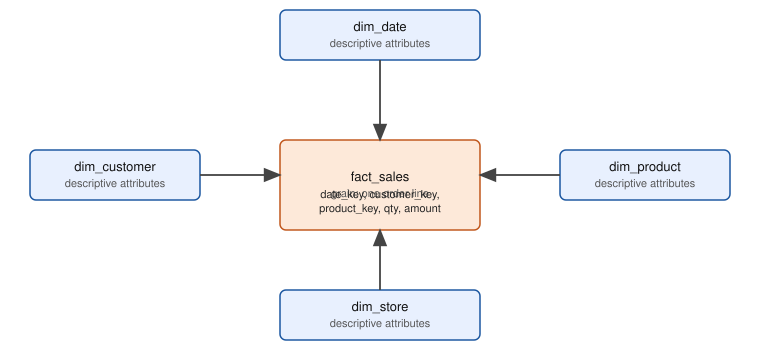
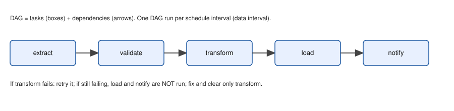

Data Engineering and Big Data: Pipelines, Warehouses, Spark and Streaming
A practical, number-driven textbook for a working professional who wants to build data platforms that are correct, fast and cheap.
Taught the IIT Professor Way — Real Numbers. Real Problems. Real Understanding.
A Note From Your Professor
You already know something most beginners do not: how systems behave under load. You have read response-time percentiles, found bottlenecks, and explained to a manager why the system slowed at 3 p.m. Data engineering uses the same thinking. A pipeline is a system with queues, throughput, failures and cost. The new part is that the data must also be right, every day, even after a crash, a retry or a late file.
This document teaches you that craft in small steps. We start with the map of the field, then modeling, files, ingestion, quality and orchestration, and later dbt, warehouses, Spark, streaming, infrastructure, system design and a performance project that is uniquely yours. Everything is built around real numbers and code you can run. Where a tool needs a cloud or a cluster that we could not run here, the text says "not run here" and keeps the example short and standard.
One rule above all: never move on until the current topic feels obvious. If you cannot explain a section to a friend in simple words, read it again and rebuild the example yourself. One hour a day for a year beats a weekend sprint. You do not need to know everything. You need to be able to build a small pipeline that is idempotent, tested and observable, and to explain why it works. That is what employers pay for, and you can do it.
Be patient with yourself. English is your second language, so I use short sentences and define every new word the first time. If a word is still unclear, ask an AI with the prompt packs at the end of each chapter.
What Every Topic Contains
- INTUITION: the real problem in everyday language, often from everyday life: shops, deliveries, hospitals, bank queues.
- Formal definition: how it works, precise but plain.
- Worked problems or examples with real numbers or real code output, with every step.
- The picture: a diagram, table or mental model, explained fully.
- Connection to the real job: where it shows up in data engineering work.
- Applications: analytics, data science, ML, MLOps and more.
- COMMON MISTAKE: what beginners get wrong and how to catch it.
- Check yourself: three short questions with answers.
Each chapter also ends with a recap (with a cheat-sheet table), a graded practice set with answers, and a prompt pack of five prompts to paste into any AI.
Contents
- The Data Engineering Lifecycle and Architectures: lifecycle, OLTP/OLAP, batch and stream, ETL/ELT, warehouse, lake, lakehouse, medallion, reliability words, CAP.
- Data Modeling for Analytics: Kimball facts and dimensions, grain, star and snowflake, SCD types, Inmon, Data Vault, OBT.
- File Formats, Storage and Lakehouse Table Formats: CSV/JSON traps, Parquet, Avro, compression, partitioning, small files, Delta, Iceberg, Hudi.
- Ingestion Patterns: full and incremental loads, watermarks, APIs, retries, CDC, backfills, late data (with a runnable loader).
- Data Quality and Testing: checks, contracts, quarantine, unit tests, Great Expectations, pandera, Soda, observability.
- Orchestration with Apache Airflow: DAGs, data intervals, retries, idempotent tasks, TaskFlow, testing; Dagster, Prefect, ADF and others.
- dbt: models, sources,
ref, materializations, incremental models, tests, snapshots, macros, CI. - Warehouses and Cloud Data Services: Snowflake, BigQuery, Redshift, Synapse and Fabric, cost control, one-cloud-first mapping, and databases beyond SQL.
- Apache Spark and PySpark I: architecture, DataFrames, lazy evaluation, joins, windows.
- Spark II: Performance: shuffles, skew, broadcast joins, partitioning, caching, AQE, reading the Spark UI, memory.
- Streaming and Kafka: event time, windows, watermarks, delivery semantics, Kafka internals, Structured Streaming, Flink (with a runnable simulation).
- Infrastructure and DataOps: Docker, Kubernetes basics, Terraform, CI/CD, secrets, monitoring, cost, governance, privacy, lineage and catalogs.
- System Design for Data: the design framework, capacity estimation, and six worked designs.
- Performance and Capacity of Data Pipelines: load-testing pipelines, Little's law, bottleneck analysis, capstone projects and the interview bank.
- Project Lab 1: Pipelines, Lakes, Batches, Loaders and Models
- Project Lab 2: Quality, Streaming, Star Schemas and Storage
Appendix: 99 Cheat Sheet with an honest closing note.
Files are numbered in the same order: 01_... to 14_... and 99_cheatsheet.md.
How To Study This Document
Use this learning loop for every section:
- Build first. Run the code in the section before reading the explanation. Type it, do not paste it.
- Ask. Before you read the answer, predict the output. Write your guess down.
- Just-in-time theory. Read the explanation after you have seen the output.
- Rebuild. Close the document and recreate the example from memory with new numbers.
- Teach. Explain it aloud in simple words, as if to a colleague.
Suggested pace: one chapter per week, about one hour a day. Day 1-2: read and run. Day 3: redo the examples from memory. Day 4: practice set. Day 5: prompt pack. Weekend: a small mini-project that combines the chapter's ideas (for example, extend the incremental loader in Chapter 4 with the checks from Chapter 5). The whole document takes about 14 weeks. The capstones in Chapter 14 turn it into portfolio pieces.
How to use the prompt packs: paste one into any AI chat. Each starts with the same professor setup, so the AI teaches at your level. Try them in this order: (1) explain, (2) exercises without solutions, (3) quiz, (4) review your own work (paste it at [PASTE HERE]), (5) mock interview. Never ask for the answer first.
Prerequisites
- Basic Python: functions, loops, dictionaries, files,
pip. (See the Python study document instudy/python/.) - Basic SQL: SELECT, WHERE, JOIN, GROUP BY. (See the SQL study document in
study/sql/.) - Comfort with the command line and Git basics.
- Everyday comfort with numbers, tables and simple averages and percentiles. No prior data engineering knowledge is assumed.
Tools you need
All free. Examples that run in this document use only these.
- Python 3 (the examples use only the standard library:
sqlite3,csv,json,zlib,graphlib,unittest). - SQLite (
sqlite3command line) for modeling and SQL examples. - Later chapters add (free): DuckDB, pandas, pyarrow, PySpark (needs Java 17 or newer), dbt-core with DuckDB, Docker Desktop, Apache Airflow (via Docker), Apache Kafka (via Docker), Terraform, Git and GitHub.
- A code editor such as VS Code.
- A free cloud account is optional (AWS, Azure or GCP free tiers); the document labels cloud code as "not run here".
Imagine your company runs an online shop called ShopKart. Every second, customers place orders, the app logs clicks, and payment machines send messages. The business wants a dashboard that says "revenue by city, yesterday", and a data scientist wants clean tables to train a model. Someone must move the data, clean it, store it, and keep it correct every single day, even when a server dies at 3 a.m. That person is a data engineer. In this chapter you will learn the map of the whole field: the stages data passes through, the main building styles (warehouse, lake, lakehouse, medallion), and the ideas that keep pipelines reliable. By the end you will be able to look at any data system and say what each box is for, and why it was chosen. We will use ShopKart as the running example in the whole document.
You already know a lot from everyday life: the queue at a bank, delivery times, a busy restaurant kitchen. Data engineering is the same systems thinking (queues, throughput, bottlenecks, percentiles), applied to data that must also be correct, not only fast.
1.1 The Data Engineering Lifecycle
Words you need
| Word | Plain meaning | ShopKart example |
|---|---|---|
| Source system | The app or machine that creates data | The orders database, the mobile app |
| Ingestion | Moving data from the source to a place we control | Copying new orders every hour |
| Storage | Keeping data safely and cheaply | Files in cloud object storage, a warehouse |
| Transformation | Cleaning and reshaping data into useful tables | Remove duplicates, convert paise to rupees |
| Serving | Giving data to the people and programs that use it | A dashboard, an ML model, an API |
| Governance | Rules about who may see data and how long we keep it | Hide customer phone numbers from analysts |
| Pipeline | A chain of steps that moves and transforms data automatically | "orders DB to dashboard" |
The five stages and the undercurrents

How to read the picture: data flows left to right through five boxes. The wide orange bar at the bottom is not a stage. It is a set of concerns that touch every stage: security, governance, orchestration (running steps in the right order, covered in Chapter 6), DataOps (applying software discipline to data work), monitoring and cost.
- Generation. You usually do not control this. The app team owns it. Your task is to know its quirks (late events, changing fields).
- Ingestion. Pull or receive data. Patterns: batch (many records at once), stream (record by record), CDC (copy the database change log). Chapter 4 and Chapter 11.
- Storage. Choose a format and a place. Chapter 3 and Chapter 8.
- Transformation. Turn raw data into trusted models. Chapters 2, 7, 9.
- Serving. Dashboards, reports, ML features, reverse ETL (writing results back into business tools like a CRM).
Problem 1.1.1 For ShopKart, name the lifecycle stage for each action: (a) a customer clicks "Buy"; (b) a script copies yesterday's orders to a file; (c) a job converts amounts from paise to rupees; (d) an analyst opens a Power BI report; (e) a rule says customer emails are deleted after 3 years.
| Step 1 | Ask "is data being created, moved, kept, reshaped, used, or governed?" |
|---|---|
| Step 2 | (a) creates data: generation. (b) moves data: ingestion. (c) reshapes: transformation. (d) uses: serving. (e) is a rule: governance, which is an undercurrent. |
| Answer | Generation, ingestion, transformation, serving, governance. |
| Check | Each stage was used once except storage, which is the place the file in (b) lands. Every action fits exactly one label. |
| Why it matters | In an interview, "which stage is slow or failing?" is the first question. Naming the stage narrows the search. |
Problem 1.1.2 The dashboard shows yesterday's revenue as 10% lower than finance's number. Using the lifecycle, list where the 10% could be lost, in order from source to dashboard.
| Step 1 | Walk the stages: generation (source missed events), ingestion (a batch failed or ran before the day ended), storage (a partition not written), transformation (a filter or a bad join dropped rows), serving (dashboard time zone cuts the day). |
|---|---|
| Step 2 | Rank by how cheap each is to test. Compare row counts at each hop: source count, landed count, cleaned count, dashboard count. |
| Answer | Count rows at every hop. The first hop where the count drops is the stage that lost the data. |
| Check | If source = landed = 1,000,000 but cleaned = 900,000, the transformation lost exactly 10%, which matches the complaint. |
| Why it matters | "Reconcile counts at each hop" is the simplest data-quality habit (Chapter 5). |
Connection to the real job
Job titles map to stages: ingestion engineers, analytics engineers (transformation, mostly SQL and dbt), platform engineers (storage, infrastructure), and ML engineers (serving features).
Applications
- Data Analytics: the dashboard is the serving stage, built on gold tables.
- Data Science: model training reads the storage layer, needs trusted transformation.
- Machine Learning / MLOps: feature pipelines are lifecycle stages with tighter freshness needs.
- Data Engineering: you own stages 2 to 4 and the undercurrents.
Check yourself
- Which stage is "keep customer emails only 3 years" part of? Answer: governance, an undercurrent that touches storage.
- Why is orchestration called an undercurrent and not a stage? Answer: it coordinates all stages, it does not move or hold data itself.
- In what order do you check row counts when numbers disagree? Answer: from the source forward, hop by hop.
1.2 OLTP vs OLAP, Row vs Column, Batch vs Stream
Definitions
- OLTP (Online Transaction Processing): many small reads and writes touching a few rows, each must be fast and safe. Example: "insert order 424242". Databases: PostgreSQL, MySQL, SQL Server.
- OLAP (Online Analytical Processing): fewer, heavier queries that scan many rows but few columns. Example: "total revenue per country for 2 years". Systems: warehouses, ClickHouse, DuckDB.
- Row storage: all fields of one row sit together on disk. Fast to fetch or write one whole row.
- Columnar storage: all values of one column sit together. Fast to read two columns out of fifty, and the values compress very well because they look alike.
| Property | OLTP | OLAP |
|---|---|---|
| Typical query | one row by key | scan and aggregate millions of rows |
| Storage layout | row | column |
| Latency goal | milliseconds | seconds to minutes |
| Data model | normalized (many small tables) | denormalized star schema (Chapter 2) |
| Concurrency | thousands of small users | tens of heavy queries |
| ShopKart example | place an order | revenue by city by month |
Predict, Run, Explain: the same table, two kinds of question
Before you run it: which do you think is faster, 1,000 single-order lookups, or one whole-table aggregate over 500,000 rows? And will both use an index?
import sqlite3, time, random
random.seed(1)
db = sqlite3.connect(":memory:")
db.execute("CREATE TABLE orders(order_id INTEGER PRIMARY KEY, customer_id INT, country TEXT, amount REAL)")
rows = [(i, random.randint(1,50000), random.choice(["IN","US","UK","DE"]), round(random.uniform(5,500),2)) for i in range(1,500001)]
db.executemany("INSERT INTO orders VALUES(?,?,?,?)", rows); db.commit()
print("rows:", db.execute("SELECT COUNT(*) FROM orders").fetchone()[0])
print("-- OLTP style: fetch one order")
for r in db.execute("EXPLAIN QUERY PLAN SELECT * FROM orders WHERE order_id=424242"): print(r[3])
t = time.perf_counter()
for _ in range(1000): db.execute("SELECT * FROM orders WHERE order_id=?", (random.randint(1,500000),)).fetchone()
print(f"1000 point lookups: {(time.perf_counter()-t)*1000:.1f} ms")
print("-- OLAP style: aggregate everything")
for r in db.execute("EXPLAIN QUERY PLAN SELECT country, SUM(amount) FROM orders GROUP BY country"): print(r[3])
t = time.perf_counter()
res = db.execute("SELECT country, ROUND(SUM(amount),2), COUNT(*) FROM orders GROUP BY country ORDER BY 1").fetchall()
print(res); print(f"1 full aggregate: {(time.perf_counter()-t)*1000:.1f} ms")Real output (timings change a little on every machine; the plans and totals do not):
rows: 500000
-- OLTP style: fetch one order
SEARCH orders USING INTEGER PRIMARY KEY (rowid=?)
1000 point lookups: 1.7 ms
-- OLAP style: aggregate everything
SCAN orders
USE TEMP B-TREE FOR GROUP BY
[('DE', 31657878.42, 124973), ('IN', 31547687.52, 125134), ('UK', 31617908.13, 124856), ('US', 31578025.69, 125037)]
1 full aggregate: 129.7 msExplain, line by line.
SEARCH ... USING INTEGER PRIMARY KEYmeans the database jumped straight to the row, like opening a book at a page number. Cost per lookup is tiny: 1000 lookups took 1.7 ms, so about 0.0017 ms each.SCAN ordersmeans the database read every row. One scan took 129.7 ms, which is about 76 times the cost of all 1000 lookups together (129.7 / 1.7 = 76.3).- The group totals add up: 124,973 + 125,134 + 124,856 + 125,037 = 500,000. That is our Check: no row lost.
- Interpretation: point lookups are cheap because of an index. An analytics question must touch all rows, so its cost grows with table size. That is why OLAP systems store columns and scan in parallel: they make the unavoidable scan cheap.
Batch, micro-batch, streaming
| Style | Meaning | Typical latency | Example |
|---|---|---|---|
| Batch | Process a big chunk on a schedule | minutes to hours | nightly load of orders |
| Micro-batch | Run tiny batches every few seconds | seconds | Spark Structured Streaming default |
| Streaming | Handle each event as it arrives | milliseconds to seconds | fraud check on a card swipe |
Analogy: batch is a bus that leaves every hour. Micro-batch is a metro train every 5 minutes. Streaming is a taxi per person. Taxis cost more per passenger. Pick the slowest style that meets the business need.
Problem 1.2.1 ShopKart needs a revenue dashboard refreshed every morning, and a fraud alert within 2 seconds of a payment. Which style for each?
| Step 1 | Dashboard: tolerance is a day. A nightly batch is enough. |
|---|---|
| Step 2 | Fraud: tolerance is 2 seconds. Only streaming (or very small micro-batch) fits. |
| Answer | Batch for the dashboard, streaming for fraud. |
| Check | If we used a nightly batch for fraud, the median delay would be 12 hours, far above 2 seconds. |
| Why it matters | Streaming is harder to run and test. Do not pay for it when batch is enough. |
Problem 1.2.2 A table has 50 columns, each about 8 bytes, 100 million rows. A query reads 2 columns. How many GB must row storage read versus columnar storage (ignoring compression)?
| Formula | bytes = rows × bytes per value × columns read |
|---|---|
| Plug in (row) | all 50 columns are stored together: 100,000,000 × 8 × 50 |
| Compute (row) | 40,000,000,000 bytes = 40 GB |
| Plug in (column) | 100,000,000 × 8 × 2 = 1,600,000,000 bytes = 1.6 GB |
| Answer | Row storage reads 40 GB, columnar reads 1.6 GB, which is 25 times less. (Compression helps columns even more.) |
| Check | 2 / 50 = 0.04, and 0.04 × 40 GB = 1.6 GB. |
Connection to the real job
You will copy data out of OLTP systems into OLAP systems, and you must do it without slowing down the shop. Running a heavy analytic query on the live order database is a classic outage. In SQL terms, the heavy GROUP BY queries are covered in the SQL document (study/sql/, the aggregation chapter).
Applications
- Data Analytics: dashboards run on OLAP stores.
- Data Engineering: extraction jobs are designed to be gentle on OLTP.
- Machine Learning: training reads columns (features), so columnar files speed up loading.
- Capacity Planning: an OLAP scan is a throughput problem, an OLTP lookup is a latency problem.
Check yourself
- Which layout suits "fetch the full record of order 7"? Answer: row storage.
- Why do columns compress better? Answer: values in one column look alike (same type, repeated values).
- What is micro-batch? Answer: batches so small and frequent that it feels like streaming.
1.3 ETL vs ELT and Architecture Styles
- ETL (Extract, Transform, Load): transform on a separate server before loading. Old default when warehouse compute was expensive.
- ELT (Extract, Load, Transform): load raw data first, transform inside the warehouse with SQL. Raw data stays available, so you can fix a bug and re-run history. Tools like dbt (Chapter 7) are built for this.
| ETL | ELT | |
|---|---|---|
| Where transform runs | separate engine | inside warehouse or lake engine |
| Raw data kept? | often not | yes |
| Fix a logic bug later | hard, source may be gone | re-run from raw |
| Good for | strict privacy before load, tiny targets | most modern analytics |
When would you still do ETL? When rules forbid raw personal data from landing (mask first), or when the target cannot do heavy transforms.
The architecture styles
| Style | One-line idea | Strength | Weakness |
|---|---|---|---|
| Data warehouse | Structured, modelled tables in an SQL engine | fast, trusted BI | costly for raw or unstructured data |
| Data lake | Cheap files (any format) in object storage | cheap, flexible | can become a "swamp": no rules, no ACID |
| Lakehouse | Lake files plus a table format (Delta, Iceberg, Hudi) giving ACID, time travel | one copy for BI and ML | needs table-format know-how |
| Data mesh | Each business domain owns its data as a product | scales across big organisations | needs culture and platform maturity |
| Lambda | A batch path (accurate) plus a speed path (fast), merged | both accuracy and speed | two code bases to keep in sync |
| Kappa | Everything is a stream; reprocess by replaying the log | one code base | needs a replayable log (Kafka) and good streaming skills |
ACID means a change is Atomic (all or nothing), Consistent, Isolated (parallel changes do not clash) and Durable (kept after a crash). Plain files in a lake do not give you this; table formats add it (Chapter 3).
Medallion architecture: the layered kitchen

Reading the picture: data moves left to right. Bronze is the raw copy exactly as received (append only, so you can always replay). Silver is cleaned: correct types, duplicates removed, bad rows removed or quarantined. Gold holds business-ready tables such as "revenue by country". Each arrow is a job, and between layers we run quality checks.
Predict, Run, Explain: a tiny medallion in SQLite
Before you run it: five raw JSON messages arrive. One order (O2) was sent twice with a corrected amount, and one (O3) has amount "abc". How many rows should silver have, and what is the revenue for IN?
CREATE TABLE bronze_orders(raw_id INTEGER PRIMARY KEY AUTOINCREMENT, payload TEXT, loaded_at TEXT);
INSERT INTO bronze_orders(payload,loaded_at) VALUES
('{"order_id":"O1","amount":"250.0","country":"in"}','2024-06-01'),
('{"order_id":"O2","amount":"80","country":"IN"}','2024-06-01'),
('{"order_id":"O2","amount":"85","country":"IN"}','2024-06-02'),
('{"order_id":"O3","amount":"abc","country":"us"}','2024-06-02'),
('{"order_id":"O4","amount":"40","country":"US"}','2024-06-02');
CREATE VIEW silver_orders AS
SELECT order_id, CAST(amount AS REAL) AS amount, UPPER(country) AS country FROM (
SELECT json_extract(payload,'$.order_id') order_id, json_extract(payload,'$.amount') amount,
json_extract(payload,'$.country') country,
ROW_NUMBER() OVER (PARTITION BY json_extract(payload,'$.order_id') ORDER BY raw_id DESC) rn
FROM bronze_orders) WHERE rn=1 AND amount GLOB '[0-9]*';
CREATE VIEW gold_revenue_by_country AS
SELECT country, COUNT(*) orders, SUM(amount) revenue FROM silver_orders GROUP BY country;
SELECT * FROM silver_orders;
SELECT * FROM gold_revenue_by_country;Real output:
silver (deduped, typed, bad rows removed)
order_id amount country
-------- ------ -------
O1 250.0 IN
O2 85.0 IN
O4 40.0 US
gold (business metric)
country orders revenue
------- ------ -------
IN 2 335.0
US 1 40.0 Explain.
json_extractreads fields out of the raw text. Bronze keeps the text untouched, so nothing is lost.ROW_NUMBER() OVER (PARTITION BY order_id ORDER BY raw_id DESC)numbers each order's copies newest first.rn=1keeps only the latest. This is how O2 became 85.0, not 80. (Window functions are taught in the SQL document,study/sql/.)amount GLOB '[0-9]*'drops "abc" (O3). In a real pipeline you would send it to a quarantine table, not silently delete it.- Gold: IN has O1 and O2: 250 + 85 = 335. Check: 335.0 matches. US has only O4 (O3 was bad).
- Interpretation: if finance later says "O3 was a real order", you can fix the parsing rule and rebuild silver from bronze, because bronze kept everything.
Connection to the real job
"Where does this table sit, bronze, silver or gold?" is asked in every code review. In Databricks, Snowflake and Fabric projects, medallion naming is the default.
Applications
- Data Analytics: analysts query gold only.
- Data Science: scientists often explore silver for detail.
- Machine Learning: feature tables are gold-like products built from silver.
- GenAI: document text pipelines use the same layers: raw files, parsed chunks, embedded index.
Check yourself
- Why is bronze append-only? Answer: so any later layer can be rebuilt by replay.
- Name one situation where ETL beats ELT. Answer: personal data must be masked before it may be stored.
- Lambda versus kappa: which has two code paths? Answer: lambda.
1.4 Reliability Ideas and Distributed-Systems Basics
Words you need
| Word | Plain meaning | Example |
|---|---|---|
| Data contract | A written agreement on fields, types and meaning between the producer and consumer of data | "orders.amount is a number in paise, never null" |
| Schema evolution | Changing the fields over time without breaking readers | adding a nullable column coupon |
| Idempotent | Running twice gives the same result as running once | "set stock = 7" (idempotent) vs "stock = stock − 1" (not) |
| At-most-once | A message may be lost, never repeated | fire and forget |
| At-least-once | Never lost, may repeat | retry until acknowledged |
| Exactly-once | Effect happens once (in practice: at-least-once plus idempotent processing) | payment ledger |
| Backfill | Re-run a pipeline for past dates | recompute March after a bug fix |
| Late-arriving data | An event that reaches you after its day was processed | mobile app offline for 2 hours |
| CDC | Change Data Capture: reading the database change log to copy inserts, updates and deletes | Debezium (Chapter 4) |
| SLI / SLO / SLA | Indicator (what we measure), Objective (our target), Agreement (the promise to customers, with penalty) | SLI: freshness. SLO: 99% of days fresh by 7 a.m. |
| DLQ | Dead-letter queue: a place for messages that keep failing | bad JSON lines |
| FinOps | Managing cloud cost as an engineering topic | tag jobs, set budgets |
Idempotency in numbers
Problem 1.4.1 A job adds today's sales of 500 to a total of 1,000 using total = total + 500. It crashes after writing and the scheduler retries it once. What is the total? Then repeat with total = yesterday_total + today_sales where yesterday_total = 1,000.
| Step 1 | Non-idempotent update: first run gives 1,000 + 500 = 1,500. Retry gives 1,500 + 500 = 2,000. |
|---|---|
| Step 2 | Idempotent version: first run gives 1,000 + 500 = 1,500. Retry gives 1,000 + 500 = 1,500, because the base is yesterday's saved value, not "whatever is there now". |
| Answer | The first design double counts (2,000), the second stays correct (1,500). |
| Check | Real sales are 500, so the correct total is 1,500. The first design is off by 500, exactly one duplicate run. |
| Why it matters | Retries are normal in distributed systems. Every task you write must survive them. This is the most important habit of this document. |
You will run an idempotent loader in Chapter 4 and an idempotent task runner in Chapter 6.
Delivery guarantees in one picture
Producer ---msg--> Broker ---msg--> Consumer ---> Database
ack? ack?
at-most-once : consumer commits position BEFORE processing -> crash = message lost
at-least-once: consumer commits position AFTER processing -> crash = message processed twice
exactly-once : at-least-once + idempotent write (key) or transactionProblem 1.4.2 A consumer processes a message that adds 100 to a balance, then crashes before saving its position. On restart it re-reads the message. With at-least-once, what do we get if (a) the write is "balance += 100", (b) the write is "insert payment_id=P77 amount=100, ignore if P77 exists" and the balance is the sum of payments?
| Step 1 | (a) The message is applied twice: balance rises by 200. |
|---|---|
| Step 2 | (b) The second insert is ignored because P77 exists. The balance sum rises by 100. |
| Answer | (a) wrong by 100, (b) correct. Exactly-once effect = at-least-once delivery + idempotent write. |
| Check | One payment of 100 should change the balance by 100: only (b) does. |
Distributed systems fundamentals (just enough)
- Partitioning / sharding: split data across machines by a key, so each machine holds a slice. Like splitting a phone book by first letter.
- Replication: keep copies on several machines to survive failure and to spread reads.
- Consensus: machines agree on one value even if some fail. Algorithms: Raft, Paxos and Zab (the protocol ZooKeeper uses). You will not implement them, but know that Kafka's KRaft (Raft), etcd (Raft) and ZooKeeper (Zab) use them to elect a leader.
- CAP theorem: when the network splits (a Partition), a system must choose between Consistency (every read sees the latest write) and Availability (every request gets an answer). You cannot have both during the split. Without a split, you can have both. "CP" systems refuse some requests to stay correct; "AP" systems answer, possibly with stale data.
- Consistency models: strong (always latest), eventual (all copies agree if writes stop), read-your-writes (you see your own updates). Warehouses and lakes are often eventually consistent in listing; table formats give you snapshot isolation.
| Concept | Example value | Where in the job |
|---|---|---|
| Partition count | 12 Kafka partitions | limits consumer parallelism |
| Replication factor | 3 | survive loss of 2 brokers (with a correct min-ISR setting, see Chapter 11) |
| Consistency | eventual | dashboard may lag the source by minutes |
| Retry with backoff | wait 1s, 2s, 4s | a flaky API |
Problem 1.4.3 A 3-replica system needs a majority (quorum) to accept a write. How many replicas can fail while writes still work? What if there are 5 replicas?
| Formula | quorum = ⌊n / 2⌋ + 1; tolerated failures = n − quorum |
|---|---|
| Compute (n = 3) | quorum = ⌊1.5⌋ + 1 = 2; failures tolerated = 3 − 2 = 1 |
| Compute (n = 5) | quorum = ⌊2.5⌋ + 1 = 3; failures tolerated = 5 − 3 = 2 |
| Answer | 3 replicas survive 1 failure, 5 survive 2. |
| Check | With n = 4: quorum 3, tolerate 1. Four replicas tolerate no more than three, which is why odd numbers are chosen. |
Connection to the real job
Reliability is what you are paid for. Interviewers ask: "What happens if this job runs twice? If it fails halfway? If data arrives a day late?" Always answer with idempotency, retries, DLQ, and backfill.
Applications
- Data Engineering: idempotent loads, DLQs, freshness SLOs.
- MLOps: a training pipeline must be re-runnable to reproduce a model.
- Operations: SLO validation uses the same percentile thinking as a delivery company promising that 95% of parcels arrive within two days.
- FinOps: cost per TB scanned or per pipeline run is tracked like response time.
Check yourself
- Is
INSERT ... ON CONFLICT DO UPDATEidempotent? Answer: yes, repeating it leaves the same final row. - What does CAP force during a network split? Answer: a choice between consistency and availability.
- What is a backfill? Answer: re-running a pipeline over past dates.
Chapter recap
- A data platform has five stages (generation, ingestion, storage, transformation, serving) and undercurrents (security, governance, orchestration, DataOps, monitoring, cost).
- OLTP serves many tiny transactions (row storage, indexes). OLAP serves heavy scans (columnar storage).
- Pick the slowest of batch, micro-batch, streaming that meets the need.
- ELT keeps raw data and uses warehouse power, so bugs can be fixed by re-running.
- Warehouse is modelled and fast; lake is cheap and flexible; lakehouse adds ACID to lake files; mesh is an organisation idea; lambda has two paths, kappa has one.
- Medallion = bronze (raw), silver (clean), gold (business).
- Idempotency plus retries gives exactly-once effect; at-least-once delivery is the practical base.
- CAP: during a network split choose consistency or availability. Quorum = ⌊n/2⌋ + 1.
| Pattern | Rule |
|---|---|
| Bytes read by a query | rows × bytes per value × columns read |
| Quorum | ⌊n/2⌋ + 1 |
| Idempotent write | upsert by key, overwrite by partition, never "x = x + 1" |
| Row-count reconcile | count at every hop, find first drop |
Practice set
1. (easy) Name the five lifecycle stages in order. Answer: Generation, ingestion, storage, transformation, serving.
2. (easy) OLTP or OLAP: "show the status of order 991". Answer: OLTP, one row by key.
3. (easy) A table has 20 columns of 8 bytes and 10 million rows. Bytes read by a query of 1 column in a columnar store? Answer: 10,000,000 × 8 × 1 = 80,000,000 bytes = 80 MB (row storage: 1.6 GB).
4. What is the output? Silver view above, if O4's amount were "4x0". How many silver rows? Answer: GLOB '[0-9]*' only checks the first character, so "4x0" passes (and CAST gives 4.0). The check is too weak. 3 rows remain, with a wrong value. Better to validate the full pattern or use a typed parser.
5. Find the bug: UPDATE stock SET qty = qty - 1 WHERE sku='A1' is run by a retrying task. Answer: Not idempotent: a retry decrements twice. Use an event table with a unique event id and compute the stock from it.
6. A 5-broker cluster needs a majority to elect a leader. How many failures can it survive? Answer: quorum 3, so 2 failures.
7. ShopKart wants "orders in the last 10 seconds per city" on a live screen. Which style and why? Answer: streaming (or a short micro-batch), because the freshness need is seconds.
8. A pipeline loaded 1,000,000 rows from source and 1,000,000 into silver, but gold shows 940,000 orders. Where do you look first? Answer: the gold transformation (joins/filters). Counts matched until silver.
9. (interview) "Explain ETL versus ELT and when you would choose each." Answer: ETL transforms before loading; ELT loads raw then transforms inside the warehouse. Choose ELT by default because storage is cheap, raw data allows replay, and SQL tools are mature. Choose ETL when privacy rules forbid raw data landing or the target cannot transform. Mention that bronze/silver/gold keeps raw data in ELT.
10. (interview) "What does exactly-once mean in a pipeline?" Answer: The effect on the target is applied once, even if messages are delivered more than once. It is built from at-least-once delivery plus idempotent writes or transactions, not from the network.
11. (scenario) A backfill of 90 days must run without double counting. How? Answer: Make each daily task overwrite its own date partition (or upsert by key), parameterise by the logical date, and run the 90 dates, possibly in parallel. Verify with row counts per day.
Prompt pack
You are my patient, practical professor. I am a working professional moving into data roles, and English is my second language, so use simple words. Teach me the data engineering lifecycle (generation, ingestion, storage, transformation, serving, and the undercurrents). Use one running example, an online shop. Explain step by step with an analogy first, then check my understanding with 3 short questions, one at a time, and wait for my answers before continuing.
You are my patient, practical professor. I am a working professional moving into data roles. Topic: OLTP versus OLAP, and row versus columnar storage. Give me 8 graded exercises, from easy to hard, with real numbers (rows, columns, bytes per value, bytes scanned). Do not give solutions. After I answer, I will paste my work and you will check every step and correct my mistakes kindly.
You are my patient, practical professor. I am a working professional moving into data roles, and I am learning data engineering with simple English. Topic: ETL versus ELT and the architecture styles (warehouse, lake, lakehouse, mesh, lambda, kappa, medallion). Quiz me one question at a time, mixing definitions with short scenarios ("a bank must mask card numbers before storage; which style?"). After each answer, say what is right, what is missing, and give a one-line memory trick.You are my patient, practical professor. I am a working professional moving into data roles. Topic: idempotency, at-least-once versus exactly-once effect, retries, backfills, and the CAP theorem. Explain each with a courier or bank analogy, then show a tiny Python or SQL example where a retry causes a double count and the fix. Then ask me to predict the output of a new example before you reveal it.
You are my patient, practical professor. I am a working professional moving into data roles, applying for junior data engineer roles. Run a mock interview on the data engineering lifecycle, OLTP/OLAP, ELT, medallion, idempotency and delivery guarantees. Ask 8 questions, one at a time. After each of my answers, score it from 1 to 5, show a model answer in simple English, and tell me what an interviewer would want to hear in addition. My answers: [PASTE HERE]
A manager asks: "How much revenue did we make in Mumbai last month, by product category?" If your tables are shaped like the shop's order system (many small normalized tables), the answer needs six joins and nobody trusts it. If your tables are shaped for analysis, the answer is one short query that anyone can read. Data modeling is the craft of choosing that shape. In this chapter you will learn the Kimball method (facts and dimensions), how to state the grain of a table, what star and snowflake mean, and how to keep history when a customer moves city (slowly changing dimensions). You will build a real star schema in SQLite, run it, and see how the wrong choice gives a wrong revenue number. Basic SQL (SELECT, JOIN, GROUP BY) is assumed; if you need it, study the SQL document in study/sql/ first (chapters on SELECT and aggregation).
2.1 Facts, Dimensions, Grain, Star and Snowflake
Words you need
| Word | Plain meaning | ShopKart example |
|---|---|---|
| Fact table | One row per business event, holding numbers you can add up | fact_sales: one row per order line |
| Measure | A numeric column in a fact | qty, amount |
| Dimension table | Descriptive attributes used to filter and group | dim_customer, dim_product, dim_date |
| Grain | What exactly one fact row represents | "one product on one order" |
| Surrogate key | A meaningless integer key made by the warehouse | customer_key = 17 |
| Natural (business) key | The key from the source system | customer_id = 'C1' |
| Star schema | A fact in the middle, dimensions around it, each one join away | see picture |
| Snowflake schema | Dimensions normalized into more tables (product to category to department) | dim_product -> dim_category |
Declare the grain first
Kimball's rule: before you choose columns, say the grain in one sentence. "One row per order line per day" or "One row per customer per month-end". If the grain is vague, totals will be double counted. Everything in a fact row must be true at that grain.

How to read it: the orange box in the middle is the fact table. Each arrow is a join from a key in the fact to the key of a dimension. To answer "revenue by month and category" you join the fact to dim_date and dim_product, then GROUP BY. A star has one join hop from the fact to any dimension, which is why queries are simple and warehouses can optimize them.
Three kinds of fact tables
| Type | Grain | Example | Typical use |
|---|---|---|---|
| Transaction fact | one row per event | each order line | sales, clicks, payments |
| Periodic snapshot | one row per entity per period | account balance at each month end | inventory levels, balances |
| Accumulating snapshot | one row per process instance, updated as it moves | order with dates for placed, packed, shipped, delivered | pipeline or workflow durations |
Other terms: a degenerate dimension is an identifier with no extra attributes that lives in the fact itself (the order_id). A junk dimension packs a few small flags (is_gift, payment_type) into one small table so the fact does not carry many tiny columns. A conformed dimension is a dimension shared by several facts with the same meaning (one dim_date for sales and for returns), which lets you compare across them. The bus matrix is a grid: rows are business processes (sales, returns, shipments), columns are conformed dimensions, and a tick says which process uses which dimension. It is the plan for the whole warehouse.
| Process | Date | Customer | Product | Store |
|---|---|---|---|---|
| Sales | x | x | x | x |
| Returns | x | x | x | x |
| Shipments | x | x |
Predict, Run, Explain: build a star and ask a business question
Before you run it: there are 4 sales lines with amounts 500, 300, 1000, 250. What should the total per month be?
CREATE TABLE dim_customer(customer_key INTEGER PRIMARY KEY, customer_id TEXT, name TEXT, city TEXT, valid_from TEXT, valid_to TEXT, is_current INTEGER);
CREATE TABLE dim_product(product_key INTEGER PRIMARY KEY, sku TEXT, category TEXT);
CREATE TABLE dim_date(date_key INTEGER PRIMARY KEY, full_date TEXT, month TEXT);
CREATE TABLE fact_sales(date_key INT, customer_key INT, product_key INT, order_id TEXT, qty INT, amount REAL);
INSERT INTO dim_product VALUES (1,'P-100','Books'),(2,'P-200','Toys');
INSERT INTO dim_date VALUES (20240110,'2024-01-10','2024-01'),(20240215,'2024-02-15','2024-02'),(20240301,'2024-03-01','2024-03');
INSERT INTO dim_customer VALUES (1,'C1','Asha','Pune','2023-01-01','2024-02-01',0),
(2,'C1','Asha','Mumbai','2024-02-01','9999-12-31',1),(3,'C2','Ravi','Delhi','2023-05-01','9999-12-31',1);
INSERT INTO fact_sales VALUES (20240110,1,1,'O1',2,500),(20240215,2,2,'O2',1,300),
(20240301,3,1,'O3',4,1000),(20240301,2,1,'O4',1,250);
SELECT d.month, p.category, SUM(f.amount) AS revenue
FROM fact_sales f JOIN dim_date d USING(date_key) JOIN dim_product p USING(product_key)
GROUP BY 1,2 ORDER BY 1,2;Real output:
month category revenue
------- -------- -------
2024-01 Books 500.0
2024-02 Toys 300.0
2024-03 Books 1250.0 Explain. JOIN ... USING(date_key) matches the fact's date_key to the dimension's. March Books = 1000 (O3) + 250 (O4) = 1250. Our Check: 500 + 300 + 1250 = 2050 and the four amounts add to 500 + 300 + 1000 + 250 = 2050. Nothing was lost or doubled. Interpretation: each dimension join added context but did not change the number of fact rows, because each fact row matches exactly one row in each dimension. If a join multiplied rows (a many-to-many by mistake), the total would be too high. Always compare the total before and after joining.
Problem 2.1.1 (grain) A fact table has one row per order line. An analyst adds the column order_shipping_fee (one fee per whole order) to each line. An order has 3 lines and a fee of 60. What does SUM(order_shipping_fee) give for that order, and what is the right fix?
| Step 1 | The fee is repeated on each of the 3 rows: 60 + 60 + 60 = 180. |
|---|---|
| Step 2 | The true fee is 60. The column does not belong at the order-line grain. |
| Answer | The sum is 180, three times too high. Fix: put the fee in a separate fact at order grain, or allocate it across lines (20 each) and say so in the column name. |
| Check | 3 lines × 20 = 60, which equals the true fee. |
| Why it matters | Mixed grain is the number one cause of "the dashboard is wrong" bugs. |
Problem 2.1.2 (additivity) Which measures can be summed across all dimensions? (a) amount in a sales fact, (b) account_balance in a month-end snapshot, (c) unit_price.
| Step 1 | Additive means summing makes sense over every dimension. (a) yes: revenue over customers, products and days. |
|---|---|
| Step 2 | (b) is semi-additive: you may add balances across customers on one date, but not across dates (adding January's and February's balance is meaningless). Use the last value or an average over time. |
| Step 3 | (c) is non-additive: summing prices means nothing. Store qty and amount, compute price = amount / qty. |
| Answer | (a) additive, (b) semi-additive, (c) non-additive. |
| Check | If a customer holds 100 in January and 100 in February, the "sum" 200 is false: they never held 200. |
Star versus snowflake versus One Big Table
| Design | Joins to get an attribute | Storage | Ease | When to use |
|---|---|---|---|---|
| Star | 1 | some repeated text in dimensions | easiest for analysts | default for marts |
| Snowflake | 2 or more | least duplication | more joins, harder | when a dimension is huge and shared sub-dimensions matter |
| One Big Table (OBT) | 0 | duplicates all attributes on every row | simplest queries, fast scans in columnar engines | dashboards on columnar warehouses, ML features |
OBT trade-offs: it is fast and simple, but you lose a clean single place to fix a dimension value, storage grows, and changing an attribute means rewriting many rows. A common pattern: model a star as the source of truth, then publish an OBT built from it for one dashboard. Wide tables (many columns, fewer rows, ideal for ML features) and narrow tables (few columns, many rows, such as an event log with key, value) trade flexibility against scan cost; columnar stores handle wide tables well because unused columns are never read.
Normalization and denormalization
Normalization means storing each fact once, split into many tables (3NF: every non-key column depends on the key, the whole key, and nothing but the key). It protects OLTP systems from update mistakes. Denormalization copies attributes into wide tables to avoid joins, which suits OLAP. Rule: normalize where you write often, denormalize where you read a lot.
Connection to the real job
Almost every analytics-engineering interview has "design the tables for X". The expected steps are: pick the business process, declare the grain, choose dimensions, choose facts. In dbt (Chapter 7), your marts folder holds exactly these facts and dimensions.
Applications
- Data Analytics: Power BI and Tableau models are stars; relationships follow fact-to-dimension keys.
- Data Engineering: you build and test the keys and the grain (one unique key per fact row).
- Machine Learning: feature tables are often OBTs at "one row per customer per day".
- Operations: a monitoring warehouse can use a fact per measurement run and dimensions for check, build, scenario and environment (Chapter 14).
Check yourself
- What is the grain of
fact_salesabove? Answer: one row per order line. - Why is a month-end balance semi-additive? Answer: you cannot sum balances across time.
- Star or snowflake for the simplest analyst queries? Answer: star.
2.2 Slowly Changing Dimensions (SCD)
The types
| Type | What it does | History kept? | Cost |
|---|---|---|---|
| 0 | Never change (attribute fixed, like birth date) | n/a | none |
| 1 | Overwrite the old value | no | cheapest |
| 2 | Add a new row with validity dates | full | more rows, join by key or date |
| 3 | Add a column for the previous value | one step back | a column per tracked attribute |
| 6 | Hybrid of 1+2+3: new row per change (type 2) plus a column holding the current value on all rows (type 1 style) | full, plus easy "current" view | most complex |
Type 2 columns: valid_from, valid_to (use a far-future date like 9999-12-31 for the open row so range filters work), and is_current. The fact table stores the surrogate key of the version that was true when the event happened. That is the reason we need surrogate keys: the natural key C1 now has two rows.
Predict, Run, Explain: why SCD2 changes the answer
Customer C1 lived in Pune until 2024-02-01 and then in Mumbai. Order O1 (500) was in January, O2 (300) in February, O4 (250) in March. C2 (Delhi) bought O3 (1000). Using the star from 2.1, before you run it: how much revenue belongs to Pune, Mumbai and Delhi "as it was at the time"?
SELECT c.city, SUM(f.amount) AS revenue
FROM fact_sales f JOIN dim_customer c USING(customer_key)
GROUP BY 1 ORDER BY 1;city revenue
------ -------
Delhi 1000.0
Mumbai 550.0
Pune 500.0 Now the same question if we had used Type 1 (overwrite): every C1 order is attributed to the current city.
SELECT x.city, SUM(f.amount) AS revenue
FROM fact_sales f JOIN dim_customer c USING(customer_key)
JOIN (SELECT customer_id, city FROM dim_customer WHERE is_current=1) x ON x.customer_id=c.customer_id
GROUP BY 1 ORDER BY 1;city revenue
------ -------
Delhi 1000.0
Mumbai 1050.0Explain. With Type 2, O1 (500, January) points to customer_key 1 (Pune) and O2 and O4 point to key 2 (Mumbai): Mumbai = 300 + 250 = 550, Pune = 500. With Type 1, Pune disappears and Mumbai absorbs 500 + 300 + 250 = 1050. Check: both versions total 2550 (1000 + 550 + 500 and 1000 + 1050). Interpretation: Pune really did generate 500 of revenue in January, but Type 1 erased it. Use Type 2 when the business asks questions "as it was". Use Type 1 for corrections (a typo in a name) where history has no value.
Doing SCD2 in two steps (and proving it is idempotent)
A snapshot of the source arrives daily (stg_customer). Step A closes the current row when a tracked attribute changed. Step B inserts a new current row for changed or new customers. We run it for day 1, day 2, and then day 2 again to check idempotency.
CREATE TABLE stg_customer(customer_id TEXT, name TEXT, city TEXT);
CREATE TABLE dim_customer(customer_key INTEGER PRIMARY KEY AUTOINCREMENT, customer_id TEXT, name TEXT, city TEXT,
valid_from TEXT, valid_to TEXT, is_current INTEGER);
-- Day 1 load
INSERT INTO stg_customer VALUES('C1','Asha','Pune'),('C2','Ravi','Delhi');
INSERT INTO dim_customer(customer_id,name,city,valid_from,valid_to,is_current)
SELECT customer_id,name,city,'2024-01-01','9999-12-31',1 FROM stg_customer;
-- Day 2: Asha moved to Mumbai, Meena is new
DELETE FROM stg_customer;
INSERT INTO stg_customer VALUES('C1','Asha','Mumbai'),('C2','Ravi','Delhi'),('C3','Meena','Chennai');
-- Step A: close changed rows
UPDATE dim_customer SET valid_to='2024-01-02', is_current=0
WHERE is_current=1 AND EXISTS (SELECT 1 FROM stg_customer s
WHERE s.customer_id=dim_customer.customer_id AND s.city<>dim_customer.city);
-- Step B: insert new current rows for changed or new customers
INSERT INTO dim_customer(customer_id,name,city,valid_from,valid_to,is_current)
SELECT s.customer_id,s.name,s.city,'2024-01-02','9999-12-31',1 FROM stg_customer s
LEFT JOIN dim_customer d ON d.customer_id=s.customer_id AND d.is_current=1
WHERE d.customer_id IS NULL;
SELECT * FROM dim_customer ORDER BY customer_key;customer_key customer_id name city valid_from valid_to is_current
------------ ----------- ----- ------- ---------- ---------- ----------
1 C1 Asha Pune 2024-01-01 2024-01-02 0
2 C2 Ravi Delhi 2024-01-01 9999-12-31 1
3 C1 Asha Mumbai 2024-01-02 9999-12-31 1
4 C3 Meena Chennai 2024-01-02 9999-12-31 1 After running steps A and B a second time:
rows_after_rerun current_rows
---------------- ------------
4 3 Explain. Step A matches only rows that are current and differ, so a re-run finds nothing to close (the Pune row is no longer current). Step B inserts only when no current row exists, so a re-run inserts nothing. Row count stays 4 and there are 3 current rows (one per customer). Check: exactly one current row per customer is the invariant you test in Chapter 5. Interpretation: a retry cannot create duplicate versions. This is idempotency applied to a dimension.
Type 3 and the point-in-time lookup:
CREATE TABLE dim_cust3(customer_id TEXT PRIMARY KEY, city TEXT, prev_city TEXT);
INSERT INTO dim_cust3 VALUES('C1','Pune',NULL);
UPDATE dim_cust3 SET prev_city=city, city='Mumbai' WHERE customer_id='C1';
SELECT * FROM dim_cust3;
-- which city was C1 in on 2024-01-01 (SCD2 table above)?
SELECT city FROM dim_customer WHERE customer_id='C1' AND '2024-01-01' >= valid_from AND '2024-01-01' < valid_to;customer_id city prev_city
----------- ------ ---------
C1 Mumbai Pune
city
----
PuneIn the UPDATE, the right side prev_city=city uses the old value of city (SQL evaluates the right sides with the row's old values), so Pune moves to prev_city and then city becomes Mumbai. Note the half-open range >= valid_from AND < valid_to: a date equal to the change date belongs to the new row only, so ranges never overlap.
Problem 2.2.1 Ravi (C2) moves to Goa on 2024-04-01. Write the two SCD2 changes and say how many rows C2 has afterwards.
| Step 1 | Close the current row: valid_to = '2024-04-01', is_current = 0. |
|---|---|
| Step 2 | Insert a new row: Goa, valid_from = '2024-04-01', valid_to = '9999-12-31', is_current = 1. |
| Answer | C2 has 2 rows: Delhi (2023-05-01 to 2024-04-01) and Goa (from 2024-04-01). One is current. |
| Check | The Delhi row ends exactly where the Goa row begins, so there is no gap and no overlap. |
Problem 2.2.2 A fact row for an order on 2024-03-15 must get the right customer_key for C1 (Pune until 2024-02-01, Mumbai after). Which key and why? Use the SCD2 table from 2.1 (keys 1 and 2).
| Step 1 | Find the version whose range contains 2024-03-15: key 1 covers 2023-01-01 to 2024-02-01, key 2 covers 2024-02-01 to 9999-12-31. |
|---|---|
| Step 2 | 2024-03-15 is inside key 2's range. |
| Answer | customer_key = 2 (Mumbai). |
| Check | The date is after 2024-02-01, the move date, so Mumbai is correct. This lookup is done while loading the fact (a "surrogate key lookup"). |
Connection to the real job
dbt snapshots (Chapter 7) generate SCD2 for you. Late-arriving dimension rows (a fact arrives before its customer) are handled with an "unknown" placeholder row (key −1) and a later fix-up.
Applications
- Data Analytics: "revenue by the customer's segment at purchase time".
- Data Science: training sets must use attribute values valid at event time to avoid leakage (using future information).
- Machine Learning: point-in-time correct feature joins use exactly the
valid_from/valid_toidea. - Compliance: audit queries ("who had access on that date").
9999-12-31 for open rows and then forgetting that valid_to is exclusive in one query and inclusive in another. Pick one convention (we use >= from AND < to) and document it.Check yourself
- Which SCD type loses history? Answer: Type 1.
- Why does Type 2 need a surrogate key? Answer: the natural key repeats across versions.
- What makes SCD2 load idempotent? Answer: it only closes current rows that differ and only inserts when no current row exists.
2.3 Inmon, Data Vault, and Choosing a Model
- Inmon (corporate information factory): a normalized (3NF) enterprise warehouse first, then departmental marts. Strong consistency, slower to deliver.
- Kimball (dimensional): build business-process marts directly as stars with conformed dimensions. Faster to value, the most common style in analytics today.
- Data Vault: three table types.
- Hub: a list of business keys only (
hub_customer: customer_id, load date, record source). - Link: a relationship between hubs (
link_order: customer hub key + product hub key). - Satellite: descriptive attributes of a hub or link, with load date, so history is kept by insertion (
sat_customer_details: name, city, load date).
- Hub: a list of business keys only (
hub_customer (customer_hk, customer_id, load_dts, rec_src)
sat_customer (customer_hk, load_dts, name, city, hash_diff) <- new row on every change
link_order (order_hk, customer_hk, product_hk, load_dts)hash_diff is a hash of the descriptive columns; if today's hash differs from the latest one, insert a new satellite row. Data Vault loads are highly parallel and easy to audit, but queries need joins and you normally build a star (the "business vault" or marts) on top. Treat it as awareness-to-working level: know the three table types and when it is chosen (many source systems, strict audit, frequent source change).
| Aspect | Kimball star | Inmon 3NF | Data Vault |
|---|---|---|---|
| Built for | analysts | enterprise integration | integration and audit |
| Query ease | high | medium | low (needs marts) |
| Handling source change | rework | rework | add satellites easily |
| Typical size of team | small to medium | large | large, regulated |
Problem 2.3.1 The source adds a new attribute loyalty_tier to customers. What changes in (a) a Kimball dimension, (b) a Data Vault?
| Step 1 | (a) Add a column to dim_customer, backfill it, decide Type 1 or 2 for it, test. |
|---|---|
| Step 2 | (b) Add a new satellite sat_customer_loyalty hanging off the existing hub. No existing table changes. |
| Answer | Kimball alters a table; Data Vault adds a table, which is why vault is called change-tolerant. |
| Check | In (b), existing loads and history are untouched, so nothing can break. |
Problem 2.3.2 Pick a model: a 3-person startup wants dashboards in 4 weeks from one app database. Pick for a bank merging 14 legacy systems with audit rules.
| Step 1 | Startup: speed and simplicity matter. Kimball star (or OBT) with dbt. |
|---|---|
| Step 2 | Bank: many sources, audit trail, constant change. Data Vault for the integration layer, stars for reporting. |
| Answer | Kimball for the startup, Data Vault plus marts for the bank. |
| Check | The startup has one source and no audit rule, so the extra layers of Data Vault would only slow it down. |
Applications
- Data Engineering: choosing the model is a design-review topic.
- Analytics Engineering: marts in dbt are Kimball-style.
- Regulated industries (banking, insurance, healthcare): Data Vault is common.
Check yourself
- Name the three Data Vault tables. Answer: hub, link, satellite.
- What does a satellite store? Answer: descriptive attributes with load dates (history).
- Which style is fastest to first dashboard? Answer: Kimball.
2.4 Modeling for Experts: Bridges, Late Data, Accumulating Snapshots and Data Vault
The star schema of 2.1 handles most reports. Real businesses keep breaking its assumptions: one sale belongs to several promotions, an order arrives before its customer exists, a process has milestones over days, and the source systems change without warning. This section gives you the standard answers, each with a run you can check.
Special dimension types in one table
| Pattern | Problem it solves | Example |
|---|---|---|
| Role-playing dimension | One dimension used several times by one fact | dim_date joined as order date, ship date and delivery date (three joins or three views) |
| Junk dimension | Many tiny flags that clutter the fact | one dim_order_flags row per combination of gift_wrap, express, cod |
| Degenerate dimension | An identifier with no attributes of its own | order_number stored directly on the fact line |
| Factless fact | Events with nothing to measure, or coverage | student attended class; product was on promotion (even if not sold) |
| Bridge table | Many-to-many between fact and dimension | a sale with 2 promotions; an account with 3 owners |
Junk dimensions are small because they hold combinations, not rows: 3 yes/no flags make at most 2 x 2 x 2 = 8 rows, and the fact stores one small key instead of three columns.
Example 1: the bridge table and the double counting trap
A phone costing 1000 was bought with two promotions (Diwali and a bank offer). A case costing 100 had one promotion. The bridge links each sale's group key to promotions, with a weight that says how to split the amount. Predict: if you join fact to bridge and sum the amount, what total do you get? The true total is 1100.
# Many-to-many with a bridge table: an order line can belong to several promotions.
import sqlite3
db = sqlite3.connect(":memory:")
db.executescript("""
CREATE TABLE fact_sales(sale_id INTEGER PRIMARY KEY, product TEXT, amount REAL, promo_group_key INTEGER);
CREATE TABLE dim_promo(promo_key INTEGER PRIMARY KEY, name TEXT);
CREATE TABLE bridge_promo(promo_group_key INTEGER, promo_key INTEGER, weight REAL);
INSERT INTO fact_sales VALUES (1,'phone',1000,10),(2,'case',100,20);
INSERT INTO dim_promo VALUES (1,'Diwali'),(2,'Bank offer'),(3,'Clearance');
INSERT INTO bridge_promo VALUES (10,1,0.5),(10,2,0.5),(20,3,1.0);
""")
naive = db.execute("""SELECT SUM(f.amount) FROM fact_sales f JOIN bridge_promo b USING(promo_group_key)""").fetchone()[0]
print("naive total after joining bridge (double counts):", naive, "| true total: 1100")
for row in db.execute("""SELECT p.name, SUM(f.amount * b.weight)
FROM fact_sales f JOIN bridge_promo b USING(promo_group_key) JOIN dim_promo p USING(promo_key)
GROUP BY p.name ORDER BY p.name"""): print(row)
print("weighted total:", db.execute("""SELECT SUM(f.amount*b.weight) FROM fact_sales f JOIN bridge_promo b USING(promo_group_key)""").fetchone()[0])naive total after joining bridge (double counts): 2100.0 | true total: 1100
('Bank offer', 500.0)
('Clearance', 100.0)
('Diwali', 500.0)
weighted total: 1100.0| Step 1 | The phone appears in 2 bridge rows (Diwali, Bank offer), so after the join its 1000 is counted twice: 2 x 1000 + 100 = 2,100. |
|---|---|
| Step 2 | Weights fix it: 1000 x 0.5 = 500 to each promo, and the case 100 x 1.0 = 100 to Clearance. |
| Check | 500 + 500 + 100 = 1,100, equal to the true total. |
Example 2: late-arriving dimension and the accumulating snapshot
Source systems are not synchronised. An order can arrive today and the customer record tomorrow. If you reject the order you lose revenue, and if you load it with a null key you cannot report on it. The standard fix is an inferred member: create a placeholder customer row with name "Unknown", flagged inferred, and give the fact its key. When the real record arrives you update the placeholder in place, and every fact already pointing at it becomes correct without touching the fact. Separately, a process with milestones (placed, shipped, delivered) suits an accumulating snapshot fact: one row per order that is updated as milestones happen, so lag times are one subtraction.
# Late-arriving dimension (an "inferred member") and an accumulating snapshot fact.
import sqlite3
db = sqlite3.connect(":memory:")
db.executescript("""
CREATE TABLE dim_customer(customer_key INTEGER PRIMARY KEY AUTOINCREMENT, customer_id TEXT UNIQUE, name TEXT, is_inferred INTEGER);
CREATE TABLE fact_order(order_id TEXT PRIMARY KEY, customer_key INTEGER, placed TEXT, shipped TEXT, delivered TEXT);
""")
def key_for(cid):
r = db.execute("SELECT customer_key FROM dim_customer WHERE customer_id=?", (cid,)).fetchone()
if r: return r[0]
db.execute("INSERT INTO dim_customer(customer_id,name,is_inferred) VALUES (?, 'Unknown', 1)", (cid,))
return db.execute("SELECT customer_key FROM dim_customer WHERE customer_id=?", (cid,)).fetchone()[0]
# the order arrives BEFORE the customer record
db.execute("INSERT INTO fact_order(order_id,customer_key,placed) VALUES ('o1', ?, '2025-01-01')", (key_for("c9"),))
print("1", db.execute("SELECT * FROM dim_customer").fetchall())
# later the real customer row arrives: update the inferred row in place, the fact keeps its key
db.execute("UPDATE dim_customer SET name='Meera', is_inferred=0 WHERE customer_id='c9'")
print("2", db.execute("SELECT f.order_id, d.name FROM fact_order f JOIN dim_customer d USING(customer_key)").fetchall())
# accumulating snapshot: ONE row per order, milestones filled in as they happen
db.execute("UPDATE fact_order SET shipped='2025-01-03' WHERE order_id='o1'")
db.execute("UPDATE fact_order SET delivered='2025-01-06' WHERE order_id='o1'")
r = db.execute("""SELECT order_id, julianday(shipped)-julianday(placed), julianday(delivered)-julianday(shipped)
FROM fact_order""").fetchone()
print("3 order", r[0], "days to ship", r[1], "days in transit", r[2])1 [(1, 'c9', 'Unknown', 1)]
2 [('o1', 'Meera')]
3 order o1 days to ship 2.0 days in transit 3.0- Line 1: the order loaded fine, and the customer table has a placeholder row (key 1, inferred flag 1).
- Line 2: after the real record arrived and we updated the placeholder, the same fact row now joins to "Meera". The fact never changed.
- Line 3: days to ship = 3 Jan minus 1 Jan = 2, days in transit = 6 Jan minus 3 Jan = 3. With a normal transaction fact you would pivot three rows to get this.
If the dimension is SCD2 (Section 2.2), a late-arriving change is harder: the new version must be inserted with a past start date and the neighbouring row's end date adjusted, and facts loaded in the gap may need their key repointed. Many teams accept this cost only for dimensions where history really matters.
Example 3: Data Vault with hash keys
Data Vault (Section 2.3) separates hubs (the business keys), links (relationships between hubs) and satellites (descriptive attributes with history). Keys are computed as a hash of the business key, so any table can compute any key independently and loads run in parallel without lookups. A hashdiff (hash of all attributes) lets you store a new satellite row only when something changed. We load the same facts on day 1 and day 2 (a replay), then a change on day 3. Predict the row counts.
# Data Vault style loading with hash keys: deterministic keys let hubs, links, satellites load in parallel.
import hashlib, sqlite3
def hk(*parts): return hashlib.md5("||".join(p.strip().upper() for p in parts).encode()).hexdigest()[:8]
db = sqlite3.connect(":memory:")
db.executescript("""
CREATE TABLE hub_customer(hk TEXT PRIMARY KEY, customer_id TEXT, load_ts TEXT);
CREATE TABLE hub_product(hk TEXT PRIMARY KEY, product_id TEXT, load_ts TEXT);
CREATE TABLE link_order(hk TEXT PRIMARY KEY, hk_customer TEXT, hk_product TEXT, load_ts TEXT);
CREATE TABLE sat_customer(hk TEXT, name TEXT, city TEXT, hashdiff TEXT, load_ts TEXT, PRIMARY KEY(hk, load_ts));
""")
def load(day, c_id, name, city, p_id):
db.execute("INSERT OR IGNORE INTO hub_customer VALUES (?,?,?)", (hk(c_id), c_id, day))
db.execute("INSERT OR IGNORE INTO hub_product VALUES (?,?,?)", (hk(p_id), p_id, day))
db.execute("INSERT OR IGNORE INTO link_order VALUES (?,?,?,?)", (hk(c_id, p_id), hk(c_id), hk(p_id), day))
diff = hk(name, city)
last = db.execute("SELECT hashdiff FROM sat_customer WHERE hk=? ORDER BY load_ts DESC LIMIT 1", (hk(c_id),)).fetchone()
if not last or last[0] != diff: # only store a new satellite row when attributes change
db.execute("INSERT INTO sat_customer VALUES (?,?,?,?,?)", (hk(c_id), name, city, diff, day))
load("d1", "c1", "Asha", "Pune", "p1")
load("d2", "c1", "Asha", "Pune", "p1") # replay of the same facts: nothing new
load("d3", "c1", "Asha", "Delhi", "p2") # she moved and bought something else
for t in ("hub_customer", "hub_product", "link_order", "sat_customer"):
print(t, db.execute(f"SELECT COUNT(*) FROM {t}").fetchone()[0])
print([r for r in db.execute("SELECT name, city, load_ts FROM sat_customer ORDER BY load_ts")])hub_customer 1
hub_product 2
link_order 2
sat_customer 2
[('Asha', 'Pune', 'd1'), ('Asha', 'Delhi', 'd3')]| Hubs | 1 customer (c1) and 2 products (p1, p2). Re-loading c1 or p1 inserted nothing, because the hash key already exists. |
|---|---|
| Link | 2 rows: (c1, p1) and (c1, p2). The replay on day 2 added none. |
| Satellite | 2 rows: Asha in Pune from d1, Asha in Delhi from d3. Day 2 added no row because the hashdiff was the same. The satellite is the history. |
| Idempotent | The whole load can be re-run safely. That is the same property you built in Chapter 4. |
Going deeper
- Semantic layer and additivity. A measure has a rule for combining. Additive (amount, quantity) sums over every dimension. Semi-additive (account balance, stock level) sums over customers but not over time: you take the last value per period. Non-additive (ratios, averages) must be recomputed from their parts: sum(revenue) / sum(orders), never the average of daily averages. A metric layer (dbt metrics, Cube, LookML) stores these definitions once so every dashboard agrees.
- Hash collisions. MD5 and short hashes can collide in theory. Real vaults use longer hashes, and many include a hash of the business key plus a source tag. We cut the hash to 8 characters for display only.
- When not to use Data Vault. For a small team with one source system, a star schema is much faster to build and query. Vault pays off with many sources, auditability needs and frequent source changes, and you still build marts (stars) on top of it.
Problem 2.4.1 A balance table has account A with a balance of 500 on Monday and 700 on Tuesday. What is the "total balance" for the two days, and why is summing over time wrong?
| Wrong | 500 + 700 = 1,200. That says the account holds 1,200, but it never did. |
|---|---|
| Right | The balance is semi-additive over time. Use the last value (700) for "balance at end of period", or the average (600) for "average balance". |
| Answer | 700 at end of Tuesday, or 600 as the daily average. Across accounts on one day you can sum. |
Problem 2.4.2 A junk dimension holds three flags: gift_wrap (yes/no), delivery (standard/express/pickup) and payment (cod/prepaid). How many rows at most? An order table has 10 million rows. How much does it save?
| Rows | 2 x 3 x 2 = 12 combinations. |
|---|---|
| Fact change | Three columns become one small integer key. At 4 bytes per key instead of about 3 short strings, the fact is smaller and the flags are labelled once. |
| Answer | 12 rows. The dimension stays tiny however many orders you load. |
Practice (with answers)
- A fact joins
dim_datetwice, once as order date and once as ship date. What is this called? Answer: role-playing dimension. - A bridge has weights 0.6 and 0.4 for a sale of 250. What does each promo get? Answer: 150 and 100, total 250.
- An order comes with customer id c7 that is not in the dimension yet. What do you do? Answer: insert an inferred placeholder, use its key, update it later.
- Which fact type fits "order moves through 4 stages and we report lag between them"? Answer: accumulating snapshot.
- Why store a hashdiff in a satellite? Answer: to detect attribute changes with one comparison and avoid duplicate history rows.
- Is average order value additive? Answer: no. Store sum and count and divide after summing.
Chapter recap
- Model for the question: facts hold measurements, dimensions hold context.
- Always state the grain in one sentence before adding columns. Mixed grain double counts.
- Fact types: transaction, periodic snapshot, accumulating snapshot. Additive, semi-additive, non-additive measures.
- Conformed dimensions and the bus matrix let different facts be compared.
- Star is the default; snowflake saves space but adds joins; OBT is fastest to query and costly to maintain.
- SCD Type 1 overwrites, Type 2 versions rows (valid_from, valid_to, is_current), Type 3 keeps one previous value, Type 6 combines.
- Surrogate keys let one business key have many versions. The fact stores the version key valid at event time.
- Inmon is normalized first, Kimball is marts first, Data Vault uses hubs, links and satellites.
| Pattern | Rule |
|---|---|
| Revenue check after join | total before join = total after join |
| SCD2 columns | valid_from, valid_to (exclusive), is_current |
| Point in time | d >= valid_from AND d < valid_to |
| SCD2 invariant | exactly one current row per business key |
| Additivity | sum yes / semi (not over time) / no |
Practice set
1. (easy) What is the grain of a table with one row per customer per month-end balance? Answer: one customer at one month end (a periodic snapshot).
2. (easy) Put these into fact or dimension: qty, city, amount, product_category. Answer: facts: qty, amount. Dimensions: city, product_category.
3. Fact total is 2050 before joining three dimensions and 4100 after. What went wrong? Answer: a join multiplied rows (duplicate dimension keys, or many-to-many). Total doubled, so each fact row matched two dimension rows. Check dimension key uniqueness.
4. What does this output? SELECT city FROM dim_customer WHERE customer_id='C1' AND '2024-02-01' >= valid_from AND '2024-02-01' < valid_to; using the 2.1 data. Answer: Mumbai because 2024-02-01 is not < the Pune row's valid_to (equal), but is >= the Mumbai row's valid_from.
5. Find the bug: an SCD2 load inserts a new current row for every staging row without closing the old one. Answer: several current rows per customer, and facts join twice. Close the old row first, insert only when changed.
6. A fact table keeps unit_price. Why is SUM(unit_price) wrong, and what to store? Answer: price is non-additive. Store qty and amount; derive price as amount / qty (or a weighted average).
7. A table has Type 3 columns city, prev_city. A customer moves twice (Pune, Mumbai, Delhi). What is stored? Answer: city = Delhi, prev_city = Mumbai. Pune is lost, which is the limit of Type 3.
8. Design: "average delivery time per warehouse". Which fact type and why? Answer: an accumulating snapshot with ordered, shipped, delivered dates per order. Durations are differences between its date columns.
9. (interview) "Walk me through designing a warehouse for a food-delivery app." Answer: Choose a process (order delivery). Declare grain (one row per order). Dimensions: date, customer, restaurant, courier, location. Facts: item total, fee, discount, tip, delivery minutes. Use SCD2 for restaurant and customer attributes that affect reporting. Add a periodic snapshot for courier hours. Build a bus matrix and conform date and location.
10. (interview) "When would you use SCD Type 2 rather than Type 1?" Answer: When the business needs history "as it was", for example revenue by customer region at purchase time, audit, or ML features without leakage. Use Type 1 for corrections.
11. (scenario) A fact arrives for customer C9, but dim_customer has no C9 yet. What do you do? Answer: Use the unknown-member key (for example −1) or insert a placeholder dimension row marked inferred, and update it when the real row arrives. Never drop the fact.
Prompt pack
You are my patient, practical professor. I am a working professional moving into data roles, and English is my second language. Teach me Kimball dimensional modeling: facts, dimensions, grain, star and snowflake schemas. Use an online shop with real numbers. Show a small SQLite example with output, then ask me 3 questions about grain and additivity, one at a time, and correct my answers kindly.
You are my patient, practical professor. I am a working professional moving into data roles. Topic: slowly changing dimensions Type 1, 2, 3 and 6. Walk me step by step through an SCD2 load with a staging table and the SQL that closes old rows and inserts new ones. Then give me 8 graded exercises with different change scenarios, no solutions, and wait for my answers before checking them.
You are my patient, practical professor. I am a working professional moving into data roles, and I am applying for data engineering jobs. Topic: choosing between Kimball star, Inmon 3NF, Data Vault (hubs, links, satellites) and One Big Table. Make a comparison with real project examples and ask me to choose a model for 5 business cases. Explain each correct choice in simple English and name when I would NOT use it.
You are my patient, practical professor. I am a working professional moving into data roles. Topic: finding double counting caused by wrong grain or bad joins in a star schema. Give me 6 broken SQL queries on fact and dimension tables (with small sample data), ask me to predict the wrong total, find the bug and fix it. Do not give answers until I reply. Review my answers: [PASTE HERE]
You are my patient, practical professor. I am a working professional moving into data roles. Topic: designing a performance-results warehouse (test runs, builds, scenarios, transactions) as a star schema. Ask me to state the grain, pick facts and dimensions, and decide where SCD2 is needed. Then run a mock interview of 6 questions about dimensional modeling, scoring each answer 1 to 5 with a model answer.
You will meet a surprising number of data problems that are not about SQL or Spark at all. They are about the file. A CSV with a comma inside a name breaks a load at 2 a.m. A folder with 50,000 tiny files makes a job ten times slower than it should be. A query scans 2 TB when it needed 20 GB because the files were not partitioned. In this chapter you will learn what CSV and JSON get wrong, why Parquet is the default for analytics, how compression and partitioning save money, why the small-file problem hurts, and how table formats such as Delta Lake and Iceberg add safe updates on top of plain files. We will measure effects with real code you can run, and one toy table format you can read in 20 lines.
3.1 Text Formats: CSV and JSON, and Their Traps
07 a number or a pin code? Text formats are friendly for humans and risky for machines.Words you need
| Word | Plain meaning |
|---|---|
| Delimiter | The character that separates fields (comma, tab, pipe) |
| Quoting | Wrapping a field in " so special characters inside are safe |
| Encoding | How characters become bytes (UTF-8 is the safe default) |
| Schema | The names and types of the columns |
| JSON Lines (NDJSON) | One JSON object per line; can be split and streamed |
Predict, Run, Explain: what breaks in CSV and JSON
Before you run it: if you split a CSV text on newlines, how many lines do two records give when one record has a line break inside a field?
import csv, io, json
tricky = [("1","Doe, John",'said "hi"',"007"), ("2","line\nbreak","x","1.50")]
b = io.StringIO(); csv.writer(b).writerows(tricky); print(repr(b.getvalue()))
naive = b.getvalue().split("\n"); print("naive split gives", len(naive)-1, "lines for 2 records")
print("csv module read:", list(csv.reader(io.StringIO(b.getvalue()))))
print("leading zero lost if cast to int:", int("007"))
print("json float:", 0.1+0.2, "| big int:", json.loads('{"x": 12345678901234567890}')["x"])Real output:
'1,"Doe, John","said ""hi""",007\r\n2,"line\nbreak",x,1.50\r\n'
naive split gives 3 lines for 2 records
csv module read: [['1', 'Doe, John', 'said "hi"', '007'], ['2', 'line\nbreak', 'x', '1.50']]
leading zero lost if cast to int: 7
json float: 0.30000000000000004 | big int: 12345678901234567890Explain.
- The CSV writer put quotes only where needed: around
Doe, John(a comma), aroundsaid "hi"(and doubled the inner quotes to""), and around the field with a line break. It left007alone. - Splitting on
\nfound 3 pieces for 2 records, because the line break inside "line\nbreak" is data, not a record end. A real parser (thecsvmodule) reads it correctly. Never parse CSV withsplit(","). int("007")is 7: the leading zeros are gone. Pin codes, phone numbers and IDs should stay as text. Spark'sinferSchemaand pandas guess types and can make this mistake.- Python's JSON parser kept the 20-digit integer, but many other tools (JavaScript, some warehouses) convert it to a float and lose digits.
0.1 + 0.2shows binary float noise: store money as integers (paise) or decimals. - Interpretation: text formats carry no types, no null rule, no guarantee. You must defend against all three.
Common CSV and JSON pitfalls
| Pitfall | Example | Defence |
|---|---|---|
| Delimiter in data | Doe, John | proper quoting; use a real parser |
| Embedded newline | address with line break | parser with quote support |
| Encoding | é instead of é | declare UTF-8, test with non-English names |
| Type guessing | 007 becomes 7, 1e5 becomes 100000.0 | explicit schema |
| Null vs empty | ,, could be empty text or missing | agree on a null token |
| Date formats | 03/04/2024 is March or April? | ISO 8601: 2024-04-03 |
| Header drift | a column is added in the middle | read by name, validate header |
| JSON nesting | arrays and objects inside objects | flatten or keep as struct |
| JSON array file | one giant [...] must be fully read | use JSON Lines |
| No schema | a field is a string today, a number tomorrow | schema check on ingest (Chapter 5) |
JSON Lines looks like this, and each line is a complete record:
{"id": 0, "city": "Delhi"}
{"id": 1, "city": "Pune"}
{"id": 2, "city": "Pune"}Problem 3.1.1 A CSV has 3 columns. The row 101,Sharma, Raj,450 is read. How many fields does a naive split give, and what is the bug?
| Step 1 | Splitting on commas gives 101, Sharma, Raj, 450: 4 fields. |
|---|---|
| Step 2 | The schema has 3 columns, so the row looks like it has one too many. The source forgot to quote the name. |
| Answer | 4 fields; the source file is malformed, so reject or quarantine it rather than guess. |
| Check | If the name were quoted (101,"Sharma, Raj",450), the parser would give 3 fields. |
| Why it matters | Guessing silently corrupts columns (the amount lands in the wrong column). |
Problem 3.1.2 A phone number 0987654321 is loaded as an integer and then exported. What is lost, and how many digits remain?
| Step 1 | As a number: 987654321 (the leading 0 is not part of the value). |
|---|---|
| Step 2 | Original had 10 digits, the exported one has 9. |
| Answer | One digit is lost; phone numbers, pin codes and account numbers are identifiers, not numbers, so use a string type. |
| Check | len("0987654321") is 10 and len(str(int("0987654321"))) is 9. |
Connection to the real job
Most ingestion code starts with CSV or JSON from partners and APIs. The first thing a good pipeline does is write them to a typed format (Parquet) with an explicit schema, and reject bad lines to a quarantine folder.
Applications
- Data Engineering: landing zones receive CSV/JSON, then convert.
- Data Analytics: Excel exports are CSV; know the encoding issues.
- GenAI: JSON Lines is the standard format for fine-tuning and evaluation datasets.
- API integration: JSON is the language of REST APIs.
inferSchema decide types in production. Today's sample file says the column is an integer; tomorrow one row has "N/A" and the job fails, or worse, silently becomes null. Always give an explicit schema.Check yourself
- Why not
line.split(",")? Answer: commas and newlines can appear inside quoted fields. - Which format can be split and streamed line by line, JSON array or JSON Lines? Answer: JSON Lines.
- How should an account number be stored? Answer: as text.
3.2 Columnar Formats: Parquet, ORC, Avro, Arrow
How the formats differ
| Format | Layout | Best for | Notes |
|---|---|---|---|
| Parquet | columnar, files split into row groups | analytics, data lakes, ML | default in Spark, DuckDB, Athena, BigQuery loads |
| ORC | columnar | Hive and older Hadoop ecosystems | similar ideas to Parquet |
| Avro | row-based, schema stored with data | streaming (Kafka), schema evolution | pairs with a Schema Registry |
| Arrow | in-memory columnar | passing data between tools without copying | not a storage file format by itself (the file form is called Feather / Arrow IPC) |
| CSV / JSON | text rows | exchange with humans and APIs | see 3.1 |
Inside a Parquet file

How to read it: the file is cut into row groups (a block of rows, often around 128 MB). Inside each group, every column has its own column chunk, which is split into pages and compressed. The footer at the end holds the schema and, for every column chunk, the minimum value, maximum value and null count. A reader first reads the footer (the last bytes of the file), then fetches only the column chunks it needs.
Two big tricks come from this layout:
- Column pruning:
SELECT amountreads only theamountchunks. - Predicate pushdown: for
WHERE amount > 450, if a row group's max is 300, the whole group is skipped using the footer statistics, without reading it.
Values in one column are alike, so Parquet also uses dictionary encoding (store each distinct city once, then a small number per row), run-length encoding (store "A, repeated 500 times") and then a general compression codec.
Predict, Run, Explain: why columns compress better
We do not have pyarrow installed here (the sandbox cannot download packages), so we simulate the idea with plain Python and zlib (the same family of compression as gzip). We make 20,000 rows, write them as CSV rows, then as column blocks, and compress both.
Before you run it: will the column layout compress smaller than the row layout? Which single column will compress best?
import csv, io, zlib, random
random.seed(7)
N = 20000
cities = ['Pune','Mumbai','Delhi','Chennai','Kolkata']
rows = [(i, random.choice(cities), random.choice(['A','B','C']),
round(random.uniform(10,500),2), f"2024-01-{random.randint(1,28):02d}") for i in range(N)]
csv_buf = io.StringIO(); csv.writer(csv_buf).writerows(rows); row_bytes = csv_buf.getvalue().encode()
cols = list(zip(*rows))
col_bytes = b"".join(("\n".join(map(str, c)) + "\n").encode() for c in cols)
print("raw row-layout bytes :", len(row_bytes))
print("raw column-layout bytes:", len(col_bytes))
print("zlib row-layout :", len(zlib.compress(row_bytes, 6)))
print("zlib column-layout :", len(zlib.compress(col_bytes, 6)))
for n, c in zip(['id','city','tier','amount','day'], cols):
b = ("\n".join(map(str, c)) + "\n").encode()
print(f" col {n:7s} raw {len(b):7d} zlib {len(zlib.compress(b,6)):7d}")Real output:
raw row-layout bytes : 658869
raw column-layout bytes: 638869
zlib row-layout : 159095
zlib column-layout : 141110
col id raw 108890 zlib 43755
col city raw 135625 zlib 10963
col tier raw 40000 zlib 5756
col amount raw 134354 zlib 54869
col day raw 220000 zlib 21266Explain.
- The raw sizes differ by 20,000 bytes (658,869 − 638,869) because the row layout carries one extra comma or newline per row and the column layout only a newline.
- After compression the row layout is 159,095 bytes and the column layout 141,110 bytes. Savings: (159,095 − 141,110) / 159,095 = 17,985 / 159,095 = 11.3%.
- Per column:
cityshrank from 135,625 to 10,963 bytes (8.1% of its raw size),tierfrom 40,000 to 5,756.amount, which is random decimals, compressed least (54,869 of 134,354, 41%). Check: adding the five separate column sizes gives 43,755 + 10,963 + 5,756 + 54,869 + 21,266 = 136,609 bytes, within 3% of the 141,110 bytes for the one-stream compression (the gap comes from how the compressor behaves on one long stream; we did not investigate it further). Low-variety columns win big. - Interpretation: real Parquet uses dictionary and run-length encoding before compression, so it does far better than plain zlib on columns like
city: a dictionary of 5 cities needs about 3 bits per row, which for 20,000 rows is 7.5 KB (20,000 × 3 / 8 = 7,500 bytes) against 135,625 bytes of text.
Parquet with pyarrow looks like this. Not run here (pyarrow could not be installed in this sandbox); the calls are standard:
import pyarrow as pa, pyarrow.parquet as pq
table = pa.Table.from_pylist([{"id": 1, "city": "Pune", "amount": 250.0}])
pq.write_table(table, "orders.parquet", compression="zstd")
print(pq.ParquetFile("orders.parquet").metadata) # row groups, rows, footer info
only_amount = pq.read_table("orders.parquet", columns=["amount"]) # column pruning
filtered = pq.read_table("orders.parquet", filters=[("amount", ">", 100)]) # predicate pushdownAnd with DuckDB, which can query a Parquet file with SQL (also not run here):
SELECT city, SUM(amount) FROM 'orders.parquet' GROUP BY city;
COPY (SELECT * FROM 'orders.csv') TO 'orders.parquet' (FORMAT PARQUET, COMPRESSION ZSTD);Avro and schema evolution
Avro is row oriented and stores its schema (a JSON description) with the data. That suits a stream of whole messages. With a Schema Registry (a service that stores versions of each schema), a Kafka message carries only a small schema id. Rules for safe evolution: adding a field with a default is backward compatible (new readers can read old data); removing a field that had no default breaks readers. Parquet also allows adding columns (old files simply return null for them), but renaming and changing types need care.
Problem 3.2.1 A Parquet file has 10 row groups. A query has WHERE order_date = '2024-03-15'. The footer shows that only 1 row group has min ≤ 2024-03-15 ≤ max. How much data is read versus a full scan, if each group is 128 MB and the query reads 2 of 20 columns?
| Formula | bytes read ≈ matching groups × group size × (columns read / total columns) |
|---|---|
| Plug in | 1 × 128 MB × (2 / 20) |
| Compute | 128 × 0.1 = 12.8 MB |
| Answer | About 12.8 MB, against 10 × 128 = 1,280 MB for a full scan of all columns, which is 100 times less. (This assumes equal column sizes. Real columns differ.) |
| Check | 1/10 of the groups times 2/20 of the columns is 1/100. |
| Why it matters | Sorting data by the filter column before writing makes min/max ranges narrow, so pushdown works. Unsorted data has every group span the full range and nothing is skipped. |
Problem 3.2.2 A column city has 5 distinct values over 1,000,000 rows. Roughly how many bits per row does dictionary encoding need, and how many bytes in total (ignoring the dictionary)?
| Step 1 | 5 values need ⌈log₂ 5⌉ = 3 bits (2 bits cover only 4 values). |
|---|---|
| Step 2 | 1,000,000 × 3 bits = 3,000,000 bits = 375,000 bytes. |
| Answer | About 375 KB, against about 6.8 MB as text (average 6.8 bytes per city name, per our sample above). |
| Check | 135,625 bytes for 20,000 rows is 6.78 bytes per row; × 1,000,000 = 6.78 MB. |
Connection to the real job
Typical rule: land raw files as they come (bronze), but store everything downstream as Parquet (or Delta/Iceberg, which use Parquet inside) with zstd or snappy compression. Kafka topics use Avro or Protobuf with a registry.
Applications
- Data Engineering: Parquet in the lake, Avro on Kafka.
- Data Analytics: Athena or BigQuery external tables over Parquet are cheaper than CSV.
- Machine Learning: training reads feature columns only; Parquet gives fast loading into pandas or Spark.
- MLOps: Arrow moves data between pandas, Spark and model servers without copies.
Check yourself
- What does the Parquet footer hold? Answer: schema plus min/max/null stats per column chunk.
- Which format fits Kafka messages with a schema registry? Answer: Avro (or Protobuf).
- What is predicate pushdown? Answer: skipping row groups using min/max statistics before reading data.
3.3 Compression, Partitioning and the Small-File Problem
Compression codecs
| Codec | Speed | Size | Splittable alone? | Typical use |
|---|---|---|---|---|
| snappy | very fast | medium | not by itself, but fine inside Parquet | default for Parquet in Spark |
| zstd | fast | smaller than snappy | inside Parquet yes | good modern default for cold and warm data |
| gzip | slow | small | no (a single .gz file cannot be split for parallel read) | archives, final delivery |
| lz4 | extremely fast | larger | inside Parquet yes | real-time, Kafka |
"Splittable" matters: a 5 GB .csv.gz file must be read by one task, so a cluster of 100 cores waits for one core. Inside Parquet, compression is applied per column page, so the file is still splittable at row-group boundaries.
Hive-style partitioning
Store data in folders named by a column value:
orders/
day=2024-01-01/part-0000.parquet
day=2024-01-02/part-0000.parquet
...A query with WHERE day = '2024-01-05' opens only that folder. This is partition pruning.
Predict, Run, Explain: partitions and the small-file problem
We write 20,000 rows split by day (28 days), and read one day. Then we compare one 20,000-line file against the same lines split across 2,000 tiny files. Before you run it: how many folders and rows will the day query read? Will 2,000 files be 2,000 times slower than one?
import os, tempfile, time, random
random.seed(7)
N = 20000
rows = [(i, random.choice(['Pune','Mumbai','Delhi']), random.randint(1,28)) for i in range(N)]
# partition by day
base = tempfile.mkdtemp()
for i, city, d in rows:
p = f"{base}/day=2024-01-{d:02d}"; os.makedirs(p, exist_ok=True)
with open(p + "/part.csv", "a") as f: f.write(f"{i},{city},{d}\n")
parts = sorted(os.listdir(base)); print("partitions:", len(parts), parts[:3])
n = sum(1 for _ in open(f"{base}/day=2024-01-05/part.csv"))
print(f"query day=2024-01-05 reads 1 of {len(parts)} folders, {n} of {N} rows")
# small files: same lines, 1 file vs 2000 files
lines = [f"{i},{c},{d}\n" for i, c, d in rows]
d1 = tempfile.mkdtemp(); open(d1 + "/one.csv", "w").writelines(lines)
d2 = tempfile.mkdtemp()
for k in range(2000): open(f"{d2}/p{k}.csv", "w").writelines(lines[k*10:(k+1)*10])
def readall(d):
t = time.perf_counter(); n = 0
for fn in os.listdir(d):
with open(os.path.join(d, fn)) as f: n += sum(1 for _ in f)
return n, time.perf_counter() - t
for lab, d in (("1 file", d1), ("2000 files", d2)):
n, t = readall(d); print(f"{lab:11s} lines={n} read_time={t*1000:.1f} ms")Real output of exactly this code:
partitions: 28 ['day=2024-01-01', 'day=2024-01-02', 'day=2024-01-03']
query day=2024-01-05 reads 1 of 28 folders, 716 of 20000 rows
1 file lines=20000 read_time=5.6 ms
2000 files lines=20000 read_time=3395.1 msExplain.
- The day query touched 716 of 20,000 rows: 716 / 20,000 = 3.58%, close to the 1/28 = 3.57% you expect from 28 equal days. Pruning avoids reading the rest.
- The same 20,000 lines took 5.6 ms from one file and 3,395.1 ms from 2,000 files: 3,395.1 / 5.6 = 606 times slower. The data size is identical. Every file costs an open, a metadata lookup and a task. On this laptop each file costs about 1.7 ms (3,395.1 / 2,000 = 1.70 ms); your machine will differ, but the pattern holds. On cloud object storage each file costs a network request of tens of milliseconds, and Spark schedules a task per file, so the damage is far worse.
- Interpretation: total work is
files × cost per file + bytes / throughput. With tiny files the first term dominates. Aim for files of roughly 128 MB to 1 GB.
Fixing small files (compaction): periodically run a job that reads many small files and writes fewer large ones (Spark repartition/coalesce, Delta OPTIMIZE, Iceberg rewrite_data_files). Prevent them by batching writes, not writing every minute into 1,000 partitions, and by tuning the number of output files.
Choosing a partition column. Good: low cardinality (few distinct values), used in filters, and gives files of decent size, such as date. Bad: customer_id (millions of folders), or a column no one filters on.
Problem 3.3.1 Daily data is 200 GB. You partition by day and country (50 countries). How big is an average file if each partition writes one file? Is it good?
| Formula | average file = daily size / (number of partitions that day) |
|---|---|
| Plug in | 200 GB / 50 |
| Compute | 4 GB per file |
| Answer | 4 GB average. Skew matters, but this is large, so split each partition into several files (for example 8, giving 512 MB each: 4 GB / 8 = 0.5 GB). That is fine. |
| Check | 50 × 8 × 0.5 GB = 200 GB. |
| Why it matters | If instead you partition by day, country, city (about 5,000 pairs), then each file is 200 GB / 5,000 = 40 MB, and you have the small-file problem. |
Problem 3.3.2 An hourly job writes 1 file per partition into 24 hourly folders, each folder gets 500 MB a day in total. How many files per day, and what size each? After one year, how many files?
| Step 1 | 24 files per day, each 500 MB / 24 = 20.8 MB if volume is even. |
|---|---|
| Step 2 | 24 × 365 = 8,760 files in a year in this single table. |
| Answer | 24 files/day of about 21 MB (too small) and 8,760 per year. Compact each day into 1 file of 500 MB: 365 files per year. |
| Check | 365 × 500 MB = 182.5 GB a year of data either way; only the file count changes. |
Object storage: S3, ADLS, GCS
Cloud lakes live in object storage: Amazon S3, Azure Data Lake Storage Gen2 (ADLS), Google Cloud Storage (GCS). An object is a file plus metadata, addressed by a key (path). They are cheap, durable, and scale without limit, but are not a file system: renaming a "folder" is really copy-and-delete of every object, and listing millions of keys is slow.
| Topic | Practice |
|---|---|
| Layout | s3://company-lake/bronze/orders/ingest_date=2024-06-01/ (zone, dataset, partition) |
| Naming | lowercase, no spaces, stable; avoid millions of tiny files per prefix |
| Lifecycle policy | move to cheaper storage class after N days, delete temp data, expire old versions |
| Permissions | least privilege via IAM (AWS), RBAC (Azure), IAM (GCP); separate raw and curated buckets; no public buckets |
| Durability | built in; turn on versioning for accident recovery |
Connection to the real job
You will tune file sizes and partition columns on almost every lake project, and cost reports often point to "one table scans too much". Ask "is this table partitioned by what people filter on?"
Applications
- Data Engineering: compaction jobs, lifecycle rules, layout conventions.
- Data Analytics: queries on Athena/BigQuery external tables become cheaper with partition filters.
- FinOps: serverless engines bill per bytes scanned, so partition pruning is cost control.
- Machine Learning: reading training data by date range uses the same partitions.
user_id, creating millions of folders and tiny files. Partition by date (or similar), and use clustering or sorting inside files for the rest.Check yourself
- Why is a single 5 GB .gz CSV slow on a cluster? Answer: gzip text cannot be split, so one task reads it all.
- Ideal file size range? Answer: about 128 MB to 1 GB.
- What is partition pruning? Answer: reading only the folders that match the filter.
3.4 Table Formats: Delta Lake, Iceberg, Hudi
Why they exist
A lake of Parquet files has no transactions. A job that writes 100 files and fails at 60 leaves a half-written table that readers can see. You cannot do UPDATE, DELETE or MERGE safely. Table formats fix this by keeping immutable data files plus a commit log (metadata). A reader first reads the log to find which files make up the current version.
| Feature | Meaning |
|---|---|
| ACID on lakes | a commit becomes visible all at once |
| Time travel | read the table as of a version or timestamp |
| Schema evolution | add, rename, drop columns tracked in metadata |
| Upserts / MERGE | update rows by rewriting affected files (or writing delete files) |
| Compaction | merge small files, remove old ones |
The three main formats: Delta Lake (born at Databricks; _delta_log folder of JSON and checkpoint files), Apache Iceberg (metadata tree of manifest files; engine-neutral; hidden partitioning), Apache Hudi (strong for incremental upserts and streaming ingestion). All three store data in Parquet. A catalog is the directory that maps a table name to its current metadata: Hive Metastore, Unity Catalog, AWS Glue, Nessie (Git-like versions), and the Iceberg REST catalog.
Predict, Run, Explain: a toy table format
This toy is not Delta Lake. It shows the core idea in a few lines: data files never change, and an ordered log of add/remove actions defines each version. Before you run it: after the UPDATE of id 2 from Delhi to Mumbai, which files make up the table? Can we still read version 0?
import json, os, tempfile
root = tempfile.mkdtemp(); os.makedirs(root + "/_log")
def write_file(name, rows): json.dump(rows, open(f"{root}/{name}", "w"))
def commit(version, actions): json.dump(actions, open(f"{root}/_log/{version:03d}.json", "w"))
def snapshot(as_of=None):
files = set()
for fn in sorted(os.listdir(root + "/_log")):
v = int(fn[:3])
if as_of is not None and v > as_of: break
for a in json.load(open(f"{root}/_log/{fn}")):
(files.add if a["op"] == "add" else files.discard)(a["file"])
rows = []
for f in sorted(files): rows += json.load(open(f"{root}/{f}"))
return sorted(files), rows
write_file("f1.json", [{"id":1,"city":"Pune"}, {"id":2,"city":"Delhi"}]); commit(0, [{"op":"add","file":"f1.json"}])
write_file("f2.json", [{"id":3,"city":"Goa"}]); commit(1, [{"op":"add","file":"f2.json"}])
# UPDATE id=2 -> Mumbai: never edit a file. Rewrite f1 without id 2, write f3, commit both together.
write_file("f1b.json", [{"id":1,"city":"Pune"}])
write_file("f3.json", [{"id":2,"city":"Mumbai"}])
commit(2, [{"op":"remove","file":"f1.json"}, {"op":"add","file":"f1b.json"}, {"op":"add","file":"f3.json"}])
for v in (0, 1, 2, None):
files, rows = snapshot(v); print("version", v, "files", files, "rows", [(r['id'], r['city']) for r in rows])Real output (from running the same logic):
version 0 files ['f1.json'] rows [(1, 'Pune'), (2, 'Delhi')]
version 1 files ['f1.json', 'f2.json'] rows [(1, 'Pune'), (2, 'Delhi'), (3, 'Goa')]
version 2 files ['f1b.json', 'f2.json', 'f3.json'] rows [(1, 'Pune'), (3, 'Goa'), (2, 'Mumbai')]
version None files ['f1b.json', 'f2.json', 'f3.json'] rows [(1, 'Pune'), (3, 'Goa'), (2, 'Mumbai')]Explain.
- Version 2's single commit removes
f1.jsonand adds two files. Readers who read the log up to version 1 still seef1.json, which was never deleted from disk. That is time travel: version 0 still shows Delhi. - A crash between
write_filecalls andcommit(2, ...)leaves orphan files that no version references. The table is unchanged: that is atomicity. Orphans are removed later by a cleanup job (DeltaVACUUM, Icebergexpire_snapshots). - The final snapshot (
None= latest) equals version 2. Check: the row count is 3 in versions 1 and 2, as expected for 1 update and 0 inserts after version 1. - Interpretation: real formats add checkpoints (a summary of the log so that readers do not replay thousands of commits), statistics per file for skipping, and optimistic concurrency (two writers both try to write commit N; one wins, the other retries).
In Spark with Delta it looks like this (not run here):
MERGE INTO silver.customers t USING updates s ON t.id = s.id
WHEN MATCHED THEN UPDATE SET *
WHEN NOT MATCHED THEN INSERT *;
SELECT * FROM silver.customers VERSION AS OF 3; -- time travel
OPTIMIZE silver.customers; -- compactionProblem 3.4.1 A table has 1,000 files after 1,000 commits and each commit adds 1 file. A reader replays the log. How many log entries without a checkpoint, and with a checkpoint every 10 commits when the latest commit is number 1,000?
| Step 1 | Without a checkpoint the reader replays all 1,000 commits. |
|---|---|
| Step 2 | With a checkpoint at commit 1,000 (a multiple of 10), the reader reads the checkpoint (1 file) and zero later commits. |
| Answer | 1,000 entries versus about 1 checkpoint read (at most 9 extra commits in other cases). |
| Check | The worst case is 9 commits after the latest checkpoint, since checkpoints come every 10. |
Problem 3.4.2 Choose a format: (a) streaming upserts from a database into a lake with a Databricks team; (b) a multi-engine setup using Spark, Trino and Snowflake reading the same tables; (c) heavy record-level updates on a large lake with incremental pulls.
| Step 1 | (a) Delta Lake is the native fit. |
|---|---|
| Step 2 | (b) Iceberg is designed for engine neutrality. |
| Step 3 | (c) Hudi's design focuses on record-level upserts and incremental queries. |
| Answer | (a) Delta, (b) Iceberg, (c) Hudi. In practice all three keep converging, and many platforms can read more than one, so check what your engine supports. |
| Check | These are the usual associations, not rules. Verify features in the current documentation, since all three move fast. |
Query engines over lake data
| Engine | What it is | Use |
|---|---|---|
| Spark SQL | distributed engine (Chapter 9) | big ETL |
| Trino / Presto | distributed SQL on many sources, no storage of its own | interactive queries over lakes |
| Athena | serverless Presto/Trino on S3, pay per bytes scanned | ad-hoc lake queries on AWS |
| DuckDB | in-process analytic engine (like SQLite for analytics) | local work, learning, tests, small to medium data |
| ClickHouse | columnar OLAP database | fast aggregations, logs, product analytics |
| Druid / Pinot | real-time OLAP stores | user-facing dashboards with sub-second queries on streams |
Applications
- Data Engineering: MERGE-based CDC apply, GDPR deletes, compaction.
- Machine Learning: time travel gives reproducible training sets ("the table as of model v7 training").
- Analytics: one governed copy for BI and ML.
- MLOps: dataset versioning without copying data.
OPTIMIZE/VACUUM (Delta) or rewrite/expire (Iceberg).Check yourself
- What two things make a table format? Answer: immutable data files plus a commit log.
- Why can readers still see old data after an update? Answer: old files stay until cleanup; the log lets you read an earlier version.
- What is a catalog? Answer: the directory mapping table names to their current metadata.
3.5 Table Format Internals: Snapshots, Conflicts, Z-order and Deletes
Section 3.4 told you what Delta Lake, Iceberg and Hudi give you: transactions, time travel and schema evolution on top of plain Parquet files. This section shows how, with toy models you can run. Once you see the mechanism, the features stop being magic and the interview questions (why can two writers conflict, why does a delete not free disk space, what does Z-order do) become easy.
The metadata tree
| Layer | Iceberg | Delta Lake | What it holds |
|---|---|---|---|
| Pointer | catalog entry points to the current metadata.json | highest numbered file in _delta_log/ | which version is current |
| Version | metadata file with snapshots, schema, partition spec | JSON commit file such as 00000000000000000012.json with add and remove actions | one commit |
| File lists | manifest list, then manifest files with per-file min/max stats | checkpoint Parquet file (by default about every 10 commits) summarising the log so far | which data files belong to the version |
| Data | Parquet, ORC or Avro files | Parquet files | the rows |
Reading a table means: find the current pointer, read the list of files for that version, use the min/max stats to skip files, read what is left. Nothing is listed from the object store directory, which is slow and not atomic. Hudi has the same idea with a timeline of instants, and adds a choice of how to store updates: copy-on-write rewrites the whole file on update (fast reads, heavy writes), merge-on-read writes small log files and merges them when reading (fast writes, heavier reads) until a compaction folds them in.
Example 1: optimistic concurrency with two writers
No locks are used. Each writer reads the current version, prepares its new files, then asks to commit "on top of version N". If someone else committed in the meantime the commit is refused and the writer must retry on top of the new version. Predict: writer A appends a file and writer B compacts two files, both starting from snapshot 1. What happens to B?
# A tiny table format: snapshots point to manifests, manifests list data files.
# Commits are atomic because the only mutable thing is one pointer: "current snapshot id".
class Table:
def __init__(self):
self.snapshots = {0: []} # snapshot id -> list of data files (via the manifest)
self.current = 0
def files(self, snap=None):
return self.snapshots[self.current if snap is None else snap]
def commit(self, base, add=(), remove=()):
"""Optimistic concurrency: succeed only if nobody committed since 'base'."""
if base != self.current:
return False
new = [f for f in self.snapshots[base] if f not in remove] + list(add)
sid = max(self.snapshots) + 1
self.snapshots[sid] = new
self.current = sid # the single atomic step
return True
t = Table()
print("commit load1:", t.commit(0, add=["f1.parquet", "f2.parquet"]), "-> snapshot", t.current)
# Two writers both start from snapshot 1.
base_a = base_b = t.current
print("writer A appends f3 :", t.commit(base_a, add=["f3.parquet"]), "-> snapshot", t.current)
print("writer B compacts f1+f2 into f12:", t.commit(base_b, add=["f12.parquet"], remove=["f1.parquet", "f2.parquet"]))
# B must retry: re-read the current state, redo the compaction on top of it.
base_b = t.current
print("writer B retry :", t.commit(base_b, add=["f12.parquet"], remove=["f1.parquet", "f2.parquet"]), "-> snapshot", t.current)
print("current files :", t.files())
print("time travel, snap 1:", t.files(1))
print("reader that started on snapshot 2 still sees:", t.files(2))commit load1: True -> snapshot 1
writer A appends f3 : True -> snapshot 2
writer B compacts f1+f2 into f12: False
writer B retry : True -> snapshot 3
current files : ['f3.parquet', 'f12.parquet']
time travel, snap 1: ['f1.parquet', 'f2.parquet']
reader that started on snapshot 2 still sees: ['f1.parquet', 'f2.parquet', 'f3.parquet']| Step 1 | Both writers start from snapshot 1 (files f1, f2). |
|---|---|
| Step 2 | A commits first: snapshot 2 now holds f1, f2, f3. The pointer moved from 1 to 2. |
| Step 3 | B asks to commit on top of 1, but the table is at 2. Refused (False). B lost nothing but its time. |
| Step 4 | B re-reads snapshot 2, checks that f1 and f2 are still there (A only added f3, so no conflict), and commits on top of 2. Snapshot 3: f3, f12. |
| Isolation | A reader that began on snapshot 2 keeps seeing f1, f2, f3 for its whole query. Time travel to snapshot 1 still works until old versions are expired. |
Real formats are smarter than "any new commit refuses mine". They check whether the files you read or deleted were touched by the intervening commits. An append that only adds files does not conflict with a compaction that removes other files, so many real retries succeed without redoing work. Two writers that update the same file do conflict, and one of them fails with a conflict exception. Design for this: let one job own each table (or partition) and make writes retry-safe.
Example 2: Z-order clustering
Sorting by one column makes that column prune perfectly and the others not at all (Section 8.4 showed this). Z-order interleaves the bits of several columns into one sort key, so rows that are close in both columns end up in the same files. We simulate 4,096 rows with two columns, x and y, in 64 files of 64 rows. Predict: sorted by x, a filter on y only reads how many files? And with Z-order?
# Z-order: interleave the bits of two columns so rows close in BOTH columns sit close in the file.
import random
random.seed(3)
N, FILE = 4096, 64 # 64 files of 64 rows
rows = [(random.randrange(64), random.randrange(64)) for _ in range(N)] # (x, y), both 0..63
def zkey(x, y):
z = 0
for b in range(6):
z |= ((x >> b) & 1) << (2*b) | ((y >> b) & 1) << (2*b + 1)
return z
def files_read(order, qx, qy):
n = 0
for i in range(0, N, FILE):
blk = order[i:i+FILE]
xs = [r[0] for r in blk]; ys = [r[1] for r in blk]
okx = qx is None or (min(xs) <= qx[1] and max(xs) >= qx[0])
oky = qy is None or (min(ys) <= qy[1] and max(ys) >= qy[0])
if okx and oky: n += 1
return n
by_x = sorted(rows) # sorted by x, then y
by_z = sorted(rows, key=lambda r: zkey(*r))
print("filter x in 8..15 only : sort by x ->", files_read(by_x, (8, 15), None), "files; z-order ->", files_read(by_z, (8, 15), None))
print("filter y in 8..15 only : sort by x ->", files_read(by_x, None, (8, 15)), "files; z-order ->", files_read(by_z, None, (8, 15)))
print("filter both 8..15 : sort by x ->", files_read(by_x, (8, 15), (8, 15)), "files; z-order ->", files_read(by_z, (8, 15), (8, 15)))
print("total files:", N // FILE)filter x in 8..15 only : sort by x -> 9 files; z-order -> 18
filter y in 8..15 only : sort by x -> 64 files; z-order -> 12
filter both 8..15 : sort by x -> 9 files; z-order -> 3
total files: 64- Sorted by x: a filter on x reads 9 of 64 files (8 values out of 64 is 1/8 of the files, plus one boundary file). A filter on y reads all 64, because every file has all y values.
- Z-order: a filter on x reads 18 and on y reads 12 files. Both are worse than the perfect single-column sort (9), and both are far better than 64.
- A filter on both reads just 3 files, against 9 for the single sort.
The trade is the same as with any index: Z-order buys decent pruning on several columns at the price of mediocre pruning on each. It is the right choice when queries filter on different columns at different times. In Delta Lake the command is OPTIMIZE table ZORDER BY (x, y). Newer approaches (Delta liquid clustering, Iceberg sort orders and clustering) let you change the clustering columns later without rewriting the whole table, and they handle new data incrementally. Check the current documentation of your platform, because this area changes quickly.
Example 3: deletes, copy-on-write and deletion vectors
Files are immutable, so deleting one row has two possible designs. Copy-on-write: rewrite the whole file without that row. Merge-on-read with deletion vectors: leave the file alone and store a small bitmap saying "row 1 of file 5 is gone"; readers skip marked rows and a later compaction rewrites the file. Predict: how many rows are rewritten in each design when one row of a 100-row file is erased?
# Deletes in an immutable-file world: rewrite the file (copy on write) or mark rows (deletion vector).
rows = [{"id": i, "email": f"user{i}@x.com"} for i in range(1, 1_000_001, 1000)] # 1,000 sample rows
FILE_ROWS = 100
files = [rows[i:i+FILE_ROWS] for i in range(0, len(rows), FILE_ROWS)]
victim = 501001 # the id to erase (right to erasure request)
holder = [i for i, f in enumerate(files) if any(r["id"] == victim for r in f)]
print("files in table:", len(files), "| file holding the row:", holder)
cow_rows_written = sum(len(files[i]) - 1 for i in holder)
print("copy-on-write: rewrite that file, rows written =", cow_rows_written)
dv = {holder[0]: {next(j for j, r in enumerate(files[holder[0]]) if r["id"] == victim)}}
print("deletion vector: rows written = 0, bitmap stored:", dv)
live = [r for i, f in enumerate(files) for j, r in enumerate(f) if j not in dv.get(i, set())]
print("rows visible to readers:", len(live), "(was", len(rows), ")")
print("but the old bytes still exist on disk until compaction and vacuum remove the old file version")files in table: 10 | file holding the row: [5]
copy-on-write: rewrite that file, rows written = 99
deletion vector: rows written = 0, bitmap stored: {5: {1}}
rows visible to readers: 999 (was 1000 )
but the old bytes still exist on disk until compaction and vacuum remove the old file version| Copy-on-write | Rewrites the 99 surviving rows into a new file. Cost grows with file size: a 1 GB file with one deleted row means about 1 GB of writes. |
|---|---|
| Deletion vector | Writes zero data rows and a tiny bitmap. Readers hide the row at once. |
| Catch | In both designs the old bytes stay in the object store. The row is hidden from queries but not erased from disk until the old file version is removed by a compaction and then a vacuum (Delta VACUUM, Iceberg snapshot expiry plus orphan file removal) after the retention period. |
| Why it matters: a privacy right-to-erasure request is only met when the physical bytes are gone. See Section 12.5 for the full checklist. | |
Going deeper
- Hidden partitioning (Iceberg). You declare a transform such as
days(order_ts). Users writeWHERE order_ts >= '2025-01-01'and the format maps that to partitions. Noorder_datehelper column, and no full table scan if someone forgets it. You can later change the partition spec (for example from months to days) and old files keep their old layout. - Schema evolution by column id. Iceberg tracks columns by an id, not by name or position, so renaming a column or reordering is a metadata-only change and cannot silently mix up two columns.
- Small files and the log. Every commit adds metadata. Streaming writers that commit every few seconds produce thousands of tiny files and a long log. Compact files, and expire old snapshots.
- Vacuum versus time travel. Time travel works only while old files exist. Running VACUUM with a retention of 0 hours removes them, and breaks long-running readers and concurrent writers, which is why the default retention is 7 days in Delta.
Problem 3.5.1 A Delta table receives one commit per minute. A checkpoint is written every 10 commits. How many JSON commit files plus checkpoint files must a reader process after 1 hour, if it can start from the latest checkpoint?
| Step 1 | 60 commits in one hour, so checkpoints at commits 10, 20, 30, 40, 50, 60. |
|---|---|
| Step 2 | The latest checkpoint is at 60 if the reader looks right after commit 60. It then reads 1 checkpoint and 0 JSON files. |
| Step 3 | If it looks after commit 57: latest checkpoint is 50, plus JSON files 51 to 57, which is 7 files. |
| Answer | At most 9 JSON files plus 1 checkpoint, never 60. Without checkpoints a reader would replay all commits. |
Problem 3.5.2 A 100,000 row file is 400 MB. One row is deleted with copy-on-write, then 10 more rows in the same file are deleted in 10 separate commits. How much is written?
| Step 1 | Each commit rewrites the file: about 400 MB each. |
|---|---|
| Step 2 | 11 commits x 400 MB = 4.4 GB written to remove 11 rows. |
| Answer | About 4.4 GB. Batch deletes into one commit (400 MB), or use deletion vectors (kilobytes each plus one compaction). |
Practice (with answers)
- What is the only mutable thing in the Iceberg design? Answer: the catalog pointer to the current metadata file. Everything else is immutable.
- Writer A and writer B both update rows in file f7. Both start at the same version. What happens? Answer: the first to commit wins; the second finds f7 changed and fails with a conflict, then must retry on the new version.
- You delete a user and a month later a restore from snapshot is requested. Is the user's data gone? Answer: not until old snapshots and files are expired and vacuumed. Retention settings decide.
- Which filter pattern benefits most from Z-order on (country, device)? Answer: filters that use either or both, for example
WHERE device = 'ios'. - Why does merge-on-read speed up writes? Answer: an update writes only a small log or delete marker, not a full file.
Not run here: real Delta, Iceberg or Hudi commands and commit file contents. The toy models use plain Python and show the mechanism, not the byte format. Check version-specific features (deletion vectors, liquid clustering) in the documentation of your engine.
Chapter recap
- CSV and JSON have no types and many traps: quoting, encoding, leading zeros, nulls. Always give an explicit schema and parse with a real parser.
- Parquet is columnar with row groups, column chunks and a footer of min/max stats, enabling column pruning and predicate pushdown.
- Avro is row-based with a schema, ideal for Kafka plus a Schema Registry.
- Column layouts compress better because neighbours are alike (dictionary and run-length encoding).
- Partition by low-cardinality filter columns (like date). Prune partitions to cut bytes scanned.
- Small files are slow: cost is files × per-file overhead. Compact to roughly 128 MB to 1 GB.
- Object storage is cheap and durable but not a file system. Use layout conventions, lifecycle rules and least-privilege permissions.
- Delta, Iceberg and Hudi add ACID, time travel and MERGE to lake files via a commit log; run compaction and cleanup.
| Pattern | Rule |
|---|---|
| Bytes read | matching groups × group size × (columns read / total columns) |
| Files cost | files × per-file overhead + bytes / throughput |
| Target file size | 128 MB to 1 GB |
| Dictionary bits | ⌈log₂ distinct values⌉ per row |
| Partition column | low cardinality, used in filters (date) |
| Maintenance | OPTIMIZE / VACUUM (Delta), rewrite / expire (Iceberg) |
Practice set
1. (easy) Which format is human readable and has no types: Parquet, CSV, Avro? Answer: CSV.
2. (easy) A column has 4 distinct values. How many bits per row for dictionary encoding? Answer: ⌈log₂ 4⌉ = 2 bits.
3. What is printed? int("0042") Answer: 42. The leading zeros disappear.
4. A table is 1.2 TB in Parquet with 60 columns of similar size. A query reads 3 columns. About how much is read (ignoring pruning by rows)? Answer: 1.2 TB × 3 / 60 = 0.06 TB = 60 GB.
5. Find the bug: df.write.partitionBy("customer_id").parquet(path) on 5 million customers. Answer: 5 million folders and tiny files. Partition by date; use sorting or bucketing for customer_id.
6. A daily job writes 400 GB across 1,600 files. Average file size? Answer: 400 GB / 1,600 = 0.25 GB = 250 MB. Healthy.
7. The same job after a change writes 400 GB across 80,000 files. Size and problem? Answer: 400,000 MB / 80,000 = 5 MB each: small-file problem. Compact or reduce output partitions.
8. Why does Parquet min/max skipping fail on unsorted data? Answer: each row group then contains values across the full range, so min/max cannot exclude any group.
9. (interview) "What is the difference between a data lake and a lakehouse?" Answer: A lake is files in object storage with no transactions or table semantics. A lakehouse adds a table format (Delta, Iceberg, Hudi) giving ACID, schema enforcement, time travel and MERGE, so one copy of data serves both BI and ML.
10. (interview) "Explain Parquet internals." Answer: Columnar file made of row groups; each has one chunk per column, split into compressed pages with dictionary or run-length encoding; the footer has schema and min/max/null stats. Readers prune columns, push predicates down to skip groups, and read in parallel by row group.
11. (scenario) A nightly Spark job on 3 TB of .csv.gz takes 5 hours on 100 cores although most cores are idle. Why and what do you do? Answer: gzip text is not splittable, so each file is read by one task and a few huge files cause a long tail. Convert once to Parquet (zstd/snappy), partition by date, target 128 MB to 1 GB files, and read the Parquet in later jobs.
Prompt pack
You are my patient, practical professor. I am a working professional moving into data roles, and English is my second language. Explain the traps of CSV and JSON files (quoting, encoding, leading zeros, null versus empty, type guessing) with small Python examples. Show the wrong version and its result, then the fix. Then give me 6 practice problems with a corrupted CSV, no solutions, and review my answers one by one.
You are my patient, practical professor. I am a working professional moving into data roles. Explain how a Parquet file is laid out (row groups, column chunks, pages, footer statistics, dictionary and run-length encoding) with an analogy first. Then give me a calculation exercise about column pruning and predicate pushdown with real numbers, and wait for my answer before showing the steps.
You are my patient, practical professor. I am a working professional moving into data roles. Topic: partitioning strategy, file sizes and the small-file problem in a data lake on S3 or ADLS. Describe a realistic scenario with daily volume and cardinalities, ask me to choose partition columns and compute file sizes, then critique my choice and explain compaction, lifecycle policies and cost.
You are my patient, practical professor. I am a working professional moving into data roles, and I am learning data engineering. Topic: Delta Lake, Apache Iceberg and Apache Hudi table formats (commit log, time travel, MERGE, compaction, catalogs). Explain with a ledger analogy, walk me through what happens on an UPDATE and on a failed write, then quiz me one question at a time on when to choose which format.
You are my patient, practical professor. I am a working professional moving into data roles, and I am applying for data engineering roles. Run a mock interview about file formats and lakehouse storage: Parquet internals, Avro and schema registry, compression and splittability, partitioning, small files, Delta versus Iceberg, DuckDB and Athena. Ask 8 questions one at a time, grade each answer 1 to 5, and show a model answer in simple English. My answers: [PASTE HERE]
Every pipeline starts with a hard question: "How do I get the data in without missing anything, without duplicating anything, and without hurting the source?" A new order arrives, an old order is changed, a customer is deleted, an API returns page 3 twice, a job crashes halfway. This chapter gives you the patterns that answer those cases: full load, incremental load with a watermark, change data capture (CDC), API pagination and retries, file drops and webhooks. You will write and run a working incremental loader in Python and SQLite, break it on purpose, and fix it. By the end you will be able to design an ingestion job that you can re-run at any time and trust.
Our running example is the ShopKart orders table: it has id, amount and updated_at.
4.1 Full Load vs Incremental Load and the Watermark
Words you need
| Word | Plain meaning |
|---|---|
| Full load | Copy everything, replace the target |
| Incremental load | Copy only new or changed rows since last time |
| Watermark (high-water mark) | The largest updated_at (or id) already loaded; the next run starts after it |
| Upsert | Insert if the key is new, update if it exists |
| State table | A small table that remembers the watermark between runs |
| Page | One chunk of results from an API |
| Pattern | When it fits | Cost | Risk |
|---|---|---|---|
| Full load | small tables (under a few million rows), no reliable change column | grows with table size | slow, hammers the source |
| Incremental by timestamp | table has a trustworthy updated_at | proportional to change | misses deletes, tie and clock problems |
| Incremental by id | append-only tables (logs) | small | misses updates to old rows |
| CDC (next section) | need deletes, low latency, no extra load | needs log access | setup complexity |
The incremental loader
Rules we will follow: read the watermark first, fetch rows after it, upsert them, and advance the watermark in the same transaction as the last write. That way a crash leaves the old watermark and the next run repeats safely (because upserts are idempotent).
import sqlite3
SOURCE = [{"id": i, "amount": 100 + i, "updated_at": f"2024-05-{(i % 5) + 1:02d}T10:00:00"} for i in range(1, 26)]
def api_get(since, page, page_size=10):
"""Fake: GET /orders?updated_after=..&page=.. (sorted by updated_at, id)"""
data = sorted([r for r in SOURCE if r["updated_at"] > since], key=lambda r: (r["updated_at"], r["id"]))
chunk = data[page * page_size:(page + 1) * page_size]
return {"items": chunk, "has_more": (page + 1) * page_size < len(data)}
db = sqlite3.connect(":memory:")
db.executescript("""
CREATE TABLE orders(id INTEGER PRIMARY KEY, amount REAL, updated_at TEXT);
CREATE TABLE etl_state(pipeline TEXT PRIMARY KEY, watermark TEXT);
INSERT INTO etl_state VALUES('orders','1970-01-01T00:00:00');
""")
def run_once():
wm = db.execute("SELECT watermark FROM etl_state WHERE pipeline='orders'").fetchone()[0]
page, fetched, new_wm = 0, 0, wm
while True:
resp = api_get(wm, page)
for r in resp["items"]:
db.execute("""INSERT INTO orders VALUES(:id,:amount,:updated_at)
ON CONFLICT(id) DO UPDATE SET amount=excluded.amount, updated_at=excluded.updated_at""", r)
new_wm = max(new_wm, r["updated_at"]); fetched += 1
if not resp["has_more"]: break
page += 1
db.execute("UPDATE etl_state SET watermark=? WHERE pipeline='orders'", (new_wm,))
db.commit()
total = db.execute("SELECT COUNT(*) FROM orders").fetchone()[0]
print(f"run: wm_in={wm} fetched={fetched} pages={page+1} wm_out={new_wm} rows_in_table={total}")
run_once() # first load
run_once() # nothing new
SOURCE[2]["amount"] = 999; SOURCE[2]["updated_at"] = "2024-06-01T09:00:00" # an update
SOURCE.append({"id": 26, "amount": 126, "updated_at": "2024-06-01T09:30:00"}) # an insert
run_once() # picks up the 2 changes
db.execute("UPDATE etl_state SET watermark='1970-01-01T00:00:00'"); db.commit() # a backfill: reset the watermark
run_once()
print(db.execute("SELECT id, amount, updated_at FROM orders WHERE id IN (3,26)").fetchall())
print("duplicates:", db.execute("SELECT COUNT(*)-COUNT(DISTINCT id) FROM orders").fetchone()[0])Before you run it: how many rows does the first run fetch, and how many pages? What does run 3 fetch? After the reset (run 4), will the table have duplicates?
Real output:
run: wm_in=1970-01-01T00:00:00 fetched=25 pages=3 wm_out=2024-05-05T10:00:00 rows_in_table=25
run: wm_in=2024-05-05T10:00:00 fetched=0 pages=1 wm_out=2024-05-05T10:00:00 rows_in_table=25
run: wm_in=2024-05-05T10:00:00 fetched=2 pages=1 wm_out=2024-06-01T09:30:00 rows_in_table=26
run: wm_in=1970-01-01T00:00:00 fetched=26 pages=3 wm_out=2024-06-01T09:30:00 rows_in_table=26
[(3, 999.0, '2024-06-01T09:00:00'), (26, 126.0, '2024-06-01T09:30:00')]
duplicates: 0Explain, line by line.
- Run 1: 25 rows at 10 per page need ⌈25 / 10⌉ = 3 pages (10 + 10 + 5). The watermark moves to the largest
updated_at, May 5. - Run 2: nothing is newer than the watermark, so 0 rows, 1 page (the first call returns an empty list). Cheap runs when nothing changed are the point of incremental loading.
- Run 3: id 3 was updated and id 26 is new: 2 rows. The upsert
ON CONFLICT(id) DO UPDATEchanged id 3 to 999.0 and inserted 26. The table grows from 25 to 26 rows (one insert, one update). - Run 4 (backfill): we reset the watermark to 1970 to reload everything. It fetched all 26 rows and still ended with 26 rows and 0 duplicates, because writing is an upsert by key. Check:
COUNT(*) − COUNT(DISTINCT id)is 0. Interpretation: the loader is idempotent. You can re-run it, or backfill, without cleaning up first.
The classic bug: ties at the watermark
Rows can share the exact same timestamp. We used updated_at > watermark (strictly greater). Suppose order 26 was loaded at 09:30:00, and a moment later the source writes order 27 with the same timestamp 09:30:00. The next run asks for "greater than 09:30:00" and never sees 27.
SOURCE.append({"id": 27, "amount": 1, "updated_at": "2024-06-01T09:30:00"}) # same timestamp as id 26
run_once()
print("id 27 present?", db.execute("SELECT COUNT(*) FROM orders WHERE id=27").fetchone()[0])run: wm_in=2024-06-01T09:30:00 fetched=0 pages=1 wm_out=2024-06-01T09:30:00 rows_in_table=26
id 27 present after run with '>' watermark? 0Id 27 is lost: fetched=0. The fix is to read from the watermark inclusive (>=) and rely on the idempotent upsert to absorb the repeated row. We changed only that one comparison and re-ran the same sequence:
run: wm_in=2024-06-01T09:30:00 fetched=2 pages=1 wm_out=2024-06-01T09:30:00 rows_in_table=27
id 27 present after run with '>' watermark? 1(The label in the print statement still says '>', but the filter was changed to >=. The row count went to 27.) It fetched 2 rows (26 again, plus 27), and the upsert made 26 harmless. Why it matters: this kind of bug loses data silently, so nothing alerts you. Tests like "count in source = count in target" (Chapter 5) catch it.
Other watermark traps:
| Trap | What happens | Fix |
|---|---|---|
| Deletes | A deleted row never shows up in "changed since" | soft-delete flag in the source, or CDC |
| Source clock skew | two servers disagree on time, a row gets an older timestamp than the watermark | re-read a safety window, for example watermark − 10 minutes, and upsert |
| Long transactions | a row commits late with an earlier updated_at | same safety window |
updated_at not updated | an update path forgets to set it | enforce in the source, or use CDC |
| Using local time | daylight shifts, mixed zones | store and compare UTC |
Problem 4.1.1 Source table: 4,000,000 rows. Each day about 20,000 rows change. A full load moves 4,000,000 rows, an incremental one moves changed rows plus a 10-minute safety window of about 140 rows (20,000 per day ÷ 144 ten-minute windows). How many times less data does incremental move per run?
| Formula | ratio = full rows / incremental rows |
|---|---|
| Plug in | 4,000,000 / (20,000 + 140) |
| Compute | 20,000 + 140 = 20,140, and 4,000,000 / 20,140 = 198.6 |
| Answer | About 199 times less data (about 0.5% of the table). The safety window adds under 1% overhead. |
| Check | 20,140 × 199 = 4,007,860, close to 4,000,000. |
| Why it matters | Less data read from the source means less load on the production database and shorter runs. |
Problem 4.1.2 Design check: the loader crashes after upserting 18 of 26 rows but before updating the state table. What is the table state, and what happens on the next run?
| Step 1 | Because the state update is the last statement and happens in the same transaction as the commit, in our code the whole transaction is rolled back (nothing visible), or, if rows were committed in smaller steps, 18 rows are in the table and the watermark is still the old one. |
|---|---|
| Step 2 | The next run re-fetches from the old watermark, upserts all 26 rows (the 18 already there are overwritten with identical values), then advances the watermark. |
| Answer | After the retry the table is complete and without duplicates; the partial first attempt did no lasting harm. |
| Check | COUNT(*) = COUNT(DISTINCT id) and the row count equals the source count. |
Connection to the real job
Almost every "ingest table X nightly" ticket is an incremental load with a state table. Tools do the same: Airbyte and Fivetran call the watermark a "cursor field", and dbt incremental models (Chapter 7) use where updated_at > (select max(updated_at) from {{ this }}).
Applications
- Data Engineering: nightly or hourly table syncs from OLTP.
- Data Analytics: fresh dashboards without full reloads.
- Machine Learning: incremental feature refresh; only changed customers recomputed.
- MLOps: training-data snapshots built from incremental loads.
Check yourself
- Why do we upsert instead of insert? Answer: re-runs and overlaps must not create duplicates.
- What does the state table store? Answer: the watermark between runs.
- What can incremental loads by timestamp not see? Answer: hard deletes.
4.2 APIs, Pagination, Rate Limits, Retries, Files and Webhooks
Pagination: offset versus cursor
An API usually returns a limited page and a way to ask for the next one.
- Offset pagination:
?offset=40&limit=20. Simple, but if rows are inserted while you are paging, positions shift. - Cursor (keyset) pagination:
?after_id=7&limit=4or an opaque tokennext_cursor. You ask for "rows after the last one I saw". Stable under inserts.
Predict, then run. Ten rows (ids 10 to 1, newest first), page size 4. A new row (id 11) arrives between page 1 and page 2. Before you run it: which id appears twice with offset paging? Does cursor paging have any duplicate?
data = [{"id": i} for i in range(10, 0, -1)] # newest first: ids 10..1
def offset_page(offset, limit): return data[offset:offset+limit]
def cursor_page(after_id, limit): # rows with id < after_id
return [r for r in data if after_id is None or r["id"] < after_id][:limit]
seen = []; page1 = offset_page(0, 4); seen += [r["id"] for r in page1]
data.insert(0, {"id": 11}) # a new row arrives
page2 = offset_page(4, 4); seen += [r["id"] for r in page2]
print("offset paging saw:", seen, "-> duplicate:", [x for x in set(seen) if seen.count(x) > 1])
data.pop(0)
seen = []; last = None
for step in range(3):
pg = cursor_page(last, 4)
if step == 1: data.insert(0, {"id": 11})
if not pg: break
seen += [r["id"] for r in pg]; last = pg[-1]["id"]
print("cursor paging saw:", seen, "-> duplicates:", len(seen) - len(set(seen)))offset paging saw: [10, 9, 8, 7, 7, 6, 5, 4] -> duplicate: [7]
cursor paging saw: [10, 9, 8, 7, 6, 5, 4, 3, 2, 1] -> duplicates: 0Explain. After the insert, every old row moved down by one position. Page 2 (positions 4 to 7) therefore started with id 7, which page 1 had already returned: a duplicate. The newer id 11 is not visible to the offset loop at all, which is acceptable only because the next incremental run will fetch it. With a cursor, "id < 7" does not depend on positions, so there is no duplicate. Check: the cursor result has 10 distinct ids, the original table size. The offset result has 8 values for 7 distinct ids. Interpretation: offset paging over changing data can duplicate or skip. Prefer cursors, and always upsert by key anyway.
Rate limits and retries with backoff
When an API says "too many requests" (HTTP 429) or "service unavailable" (503), retry later, with growing delays: 1 s, 2 s, 4 s, 8 s. This is exponential backoff. Add jitter (randomness) so that 100 clients do not all retry at the same instant. Do not retry errors that will never succeed (400 bad request, 401 unauthorised, 404).
import random
random.seed(11)
def flaky():
if random.random() < 0.6: raise ConnectionError("503 service unavailable")
return "ok"
def with_retry(fn, max_tries=6, base=1.0, cap=30.0):
waited = 0.0
for attempt in range(1, max_tries + 1):
try: return fn(), attempt, waited
except ConnectionError as e:
if attempt == max_tries: raise
delay = min(cap, base * 2 ** (attempt - 1)); jitter = random.uniform(0, delay)
print(f" attempt {attempt} failed ({e}); sleep up to {delay:.0f}s -> chose {jitter:.2f}s"); waited += jitter
res, att, w = with_retry(flaky); print("result", res, "after", att, "attempts, total wait", round(w, 2), "s")
print("max waits without jitter for 5 failures:", [min(30, 2**k) for k in range(5)], "sum", sum(min(30, 2**k) for k in range(5))) attempt 1 failed (503 service unavailable); sleep up to 1s -> chose 0.56s
result ok after 2 attempts, total wait 0.56 s
max waits without jitter for 5 failures: [1, 2, 4, 8, 16] sum 31The code above only prints the sleep time instead of sleeping, so that it runs instantly. In production you call time.sleep(jitter), or use the tenacity library which provides this pattern. Check: five failures in a row would wait 1 + 2 + 4 + 8 + 16 = 31 seconds in the worst case, which is the second output line. Interpretation: retries must be bounded (here at most 6 tries), otherwise a dead API blocks your pipeline forever. After the limit, fail the task loudly and let the orchestrator alert (Chapter 6).
Problem 4.2.1 An API allows 60 requests per minute and has 12,000 pages to fetch. How long does a fetch take at the limit?
| Formula | time = pages / rate |
|---|---|
| Plug in | 12,000 pages / 60 per minute |
| Compute | 200 minutes |
| Answer | 200 minutes, about 3 hours 20 minutes. Fetching in parallel does not help if the limit is per key; ask the provider for a bulk export or use an incremental filter instead. |
| Check | 60 × 200 = 12,000 requests. |
| Why it matters | Rate limits turn into design decisions: incremental over full, bulk export over paging. |
Problem 4.2.2 A client waits 1, 2, 4, 8 seconds with a cap of 5 seconds. List the waits for six failures.
| Step 1 | Doubling gives 1, 2, 4, 8, 16, 32 before the cap. |
|---|---|
| Step 2 | Apply min(5, ...): 1, 2, 4, 5, 5, 5. |
| Answer | 1, 2, 4, 5, 5, 5 seconds (total 22). |
| Check | 1 + 2 + 4 + 5 + 5 + 5 = 22. |
Other ingestion channels
| Channel | How it works | Care points |
|---|---|---|
| File drops | partner puts CSV/JSON into SFTP or a bucket | detect completion (a _SUCCESS marker or size stable), never read half-written files, track processed file names |
| Webhooks | the source calls your URL when something happens | verify signatures, answer fast (200) and queue the work, handle duplicates and out-of-order delivery |
| Change feeds | the system offers a "changes since token" endpoint (Cosmos DB change feed, S3 events, Salesforce) | store the continuation token like a watermark |
| Message queue / stream | Kafka, Event Hubs, Pub/Sub (Chapter 11) | offsets, consumer groups |
| Managed connectors | Airbyte, Fivetran (managed), Meltano and Singer taps (open-source), Azure Data Factory, AWS Glue | save time on standard sources; check cost per row, schema drift handling, and how deletes are treated |
Build versus buy: use a connector when the source is common (Salesforce, Postgres, Google Ads) and the cost is acceptable. Write custom Python when the source is unusual or when you need special logic. Keep custom code small, tested and idempotent.
Connection to the real job
Typical Python stack: requests or httpx for HTTP, tenacity for retries, pydantic to validate response shapes, pyarrow to write Parquet, and structlog for logs.
Applications
- Data Engineering: SaaS ingestion (CRM, ads, payments).
- Data Analytics: marketing dashboards fed by API pulls.
- GenAI: web or document crawlers (obey robots.txt and terms of service; respect rate limits and privacy).
- Operations: the same retry and backoff ideas appear when a busy shop website answers 429 (too many requests).
Check yourself
- Offset or cursor, which survives inserts during paging? Answer: cursor.
- What does jitter prevent? Answer: many clients retrying at the same moment.
- Which HTTP codes are worth retrying? Answer: 429 and 5xx; not 4xx like 400, 401, 404.
4.3 Change Data Capture, Backfills and Late-Arriving Data
How CDC works

How to read it: the left box is the production database. Debezium (an open-source CDC tool) reads its log and publishes each change to Kafka as an event. A consumer applies the events to the warehouse or lake, using MERGE. Dashboards read the result.
A change event usually contains: operation (c create, u update, d delete, plus r for snapshot read), the key, the "before" and "after" row images, a log position (LSN or binlog offset) and a timestamp.
| Method | How | Deletes? | Source load | Latency |
|---|---|---|---|---|
| Query-based (watermark) | WHERE updated_at > ... | no | queries on the table | minutes to hours |
| Trigger-based | triggers write changes to an audit table | yes | extra writes on every change | seconds |
| Log-based (Debezium) | read the transaction log | yes | tiny | sub-second to seconds |
Predict, Run, Explain: applying a change log
Six events arrive in order. Before you run it: after all six events, which customers exist and where do they live? Then we replay events 3 and 4 a second time (as at-least-once delivery would do). What changes?
import sqlite3
db = sqlite3.connect(":memory:")
db.execute("CREATE TABLE cust(id INTEGER PRIMARY KEY, name TEXT, city TEXT)")
log = [(1,"c",1,{"name":"Asha","city":"Pune"}), (2,"c",2,{"name":"Ravi","city":"Delhi"}),
(3,"u",1,{"city":"Mumbai"}), (4,"d",2,None),
(5,"c",3,{"name":"Meena","city":"Chennai"}), (6,"u",3,{"city":"Kochi"})]
def apply(ev):
lsn, op, k, d = ev
if op == "c": db.execute("INSERT OR REPLACE INTO cust VALUES(?,?,?)", (k, d["name"], d["city"]))
elif op == "u":
for c, v in d.items(): db.execute(f"UPDATE cust SET {c}=? WHERE id=?", (v, k))
else: db.execute("DELETE FROM cust WHERE id=?", (k,))
for e in log: apply(e)
print(db.execute("SELECT * FROM cust ORDER BY id").fetchall())
for e in log[2:4]: apply(e)
print("after replaying events 3,4 again:", db.execute("SELECT * FROM cust ORDER BY id").fetchall())[(1, 'Asha', 'Mumbai'), (3, 'Meena', 'Kochi')]
after replaying events 3,4 again: [(1, 'Asha', 'Mumbai'), (3, 'Meena', 'Kochi')]Explain. Asha moved to Mumbai (event 3), Ravi was deleted (event 4), Meena was created and moved to Kochi. Result: customers 1 and 3. Replaying events 3 and 4 changes nothing: "set city = Mumbai" and "delete id 2" give the same result when repeated, so these operations are idempotent. Check: 3 customers were created and 1 was deleted, so 3 − 1 = 2 customers remain. Limit: replaying an old event after newer ones can undo progress (for example replaying event 3 after a later update to Asha's city would set it back to Mumbai). Real CDC consumers therefore apply events in log order, and compare the log position (LSN) with the last applied one, ignoring anything older.
The warehouse side: insert all events into an append-only "changes" table, then each hour keep the latest event per key and MERGE it into the target (ordering by LSN and keeping rn = 1, the same ROW_NUMBER() pattern as in Chapter 1.3 and in the SQL document's window-functions chapter). Deletes can be hard (remove the row) or soft (set is_deleted = true).
Problem 4.3.1 Events for key 7 arrive out of order: (LSN 105, update city=Goa), (LSN 101, insert city=Pune), (LSN 103, update city=Delhi). What is the final city, and how do you get it?
| Step 1 | Sort by LSN: 101 (Pune), 103 (Delhi), 105 (Goa). |
|---|---|
| Step 2 | Apply in order: Pune, then Delhi, then Goa. |
| Answer | The final city is Goa: the event with the highest LSN wins, regardless of arrival order. |
| Check | ROW_NUMBER() OVER (PARTITION BY key ORDER BY lsn DESC) = 1 selects LSN 105, Goa. |
| Why it matters | Ordering by arrival time instead of log position gives wrong results whenever the network reorders events. |
Backfills and late-arriving data
A backfill re-runs a pipeline for past periods: after a bug fix, a new column, or a source correction. Design for it from day one:
- Parameterise every job by a logical date (the data interval being processed), never by "now".
- Make each run overwrite its own partition (for example
DELETE WHERE day = Xthen insert, orINSERT OVERWRITE, orMERGE) so a re-run replaces, never appends duplicates. - Control load on the source: run a few days at a time.
- Reconcile counts per day after the backfill.
Late-arriving data (an event for yesterday arriving today): choose a strategy. (a) Reprocess the last N days every run ("lookback window"). (b) Keep an event_time and a separate ingest_time, and let downstream tables use event_time. (c) For streaming, use watermarks (Chapter 11).
Problem 4.3.2 A daily job loads yesterday's partition with INSERT (append). It fails at 80% and is re-run. 1,000,000 rows should be in the day. How many rows are there after the re-run, if the first attempt had written 800,000 and committed?
| Step 1 | After the failure: 800,000 rows are present. |
|---|---|
| Step 2 | The re-run appends the full 1,000,000. |
| Compute | 800,000 + 1,000,000 = 1,800,000. |
| Answer | 1,800,000: 800,000 duplicates. With "delete the day then insert" or INSERT OVERWRITE the result is 1,000,000. |
| Check | The expected 1,000,000 rows, so the append design is wrong by exactly the partial first attempt. |
Connection to the real job
Production incidents are mostly "the job ran twice", "the job missed a day" or "late data changed yesterday's number". Idempotent, partition-overwriting, date-parameterised jobs turn all three into routine reruns.
Applications
- Data Engineering: Debezium to Kafka to lakehouse; Airflow backfills.
- Data Analytics: correcting history after a business-rule change.
- Machine Learning: rebuilding feature history with correct event time.
- Compliance: CDC deletes carry "right to be forgotten" requests into the lake.
datetime.now() inside a pipeline task to decide what to load. A backfill then loads the wrong period. Use the logical date given by the scheduler.Check yourself
- Which CDC type sees hard deletes with the smallest source load? Answer: log-based.
- What decides final state for out-of-order events? Answer: the log position (LSN), not arrival time.
- How do you make a daily load safe to re-run? Answer: overwrite or merge its own partition by logical date.
4.4 Python for Data Engineering: Generators and Chunked Reads
A generator is a function that uses yield instead of return. Each time the caller asks for the next item, the function runs until the next yield, hands the value over and pauses. An iterator is any object you can loop over one step at a time; generators are the easiest way to build one. The rule for this section: read lazily, process in pieces, combine small partial results.
Worked example 1: how many chunks?
Problem 4.4.1 A partner sends a 10 GB CSV file with about 50,000,000 rows. Your worker has 2 GB of memory free, so you read it in chunks of about 100 MB. How many chunks, and how many rows per chunk?
| Idea | Chunks = file size / chunk size, rounded up (the last chunk may be smaller). |
|---|---|
| Units | Use 1 GB = 1,024 MB, so the file is 10 × 1,024 = 10,240 MB. |
| Compute | 10,240 / 100 = 102.4, rounded up to 103 chunks. |
| Rows | 50,000,000 rows / 10,240 MB is about 4,883 rows per MB, so a 100 MB chunk holds about 488,000 rows. |
| Answer | 103 chunks of about 488,000 rows. Peak memory is about the chunk size times a small overhead factor (parsed text is often 2 to 5 times its size on disk), so plan for 200 to 500 MB, not 10 GB. |
| Check | 102 full chunks hold 102 × 100 = 10,200 MB; the remaining 40 MB is chunk 103. |
Worked example 2: a generator against a list, measured
We write a 200,000-row ShopKart orders file, then total the amounts two ways. Before you run it: which version do you think needs less memory, and roughly how much less?
import csv, os, tempfile, tracemalloc
path = os.path.join(tempfile.mkdtemp(), "orders.csv")
with open(path, "w", newline="") as f:
w = csv.writer(f); w.writerow(["order_id", "city", "amount"])
for i in range(200_000):
w.writerow([f"O{i}", ["Pune", "Delhi", "Mumbai", "Chennai"][i % 4], 100 + i % 900])
def read_all(p): # the truck: every row at once
with open(p, newline="") as f:
return list(csv.DictReader(f))
def read_lazy(p): # the conveyor belt: one row at a time
with open(p, newline="") as f:
for row in csv.DictReader(f):
yield row
def measure(make_rows):
tracemalloc.start()
total = sum(int(r["amount"]) for r in make_rows(path))
peak = tracemalloc.get_traced_memory()[1]
tracemalloc.stop()
return total, peak
t1, p1 = measure(read_all)
t2, p2 = measure(read_lazy)
print("same total:", t1 == t2, t1)
print("list peak is more than 50 times the generator peak:", p1 > 50 * p2)
print("generator peak under 1 MB:", p2 < 1_000_000)same total: True 109830000
list peak is more than 50 times the generator peak: True
generator peak under 1 MB: TrueExplain. Both versions read the same file and add the same 200,000 numbers, so the totals match. The list version builds 200,000 dictionaries before it adds anything, so its peak grows with the file. The generator version holds one dictionary at a time, so its peak stays tiny no matter how long the file is. We print true/false comparisons instead of byte counts because exact byte counts differ between Python versions. Check: the total is the sum over 200,000 rows of 100 + i mod 900. Each full cycle of 900 rows adds 900 × 100 + (0 + 1 + ... + 899) = 90,000 + 404,550 = 494,550. There are 222 full cycles (199,800 rows) and then 200 more rows adding 200 × 100 + (0 + ... + 199) = 20,000 + 19,900 = 39,900, so 222 × 494,550 + 39,900 = 109,790,100 + 39,900 = 109,830,000. That equals the printed total.
list(...) "just to look at it". That turns the conveyor belt back into a truck, and the job that worked on 1 MB crashes on 10 GB. Use itertools.islice(gen, 5) to peek at the first five items instead. Also remember a generator can be consumed only once: a second loop over the same generator sees nothing.Worked example 3: pandas in chunks, combining partial results
pandas can read a file in pieces with chunksize. The trap is combining the pieces: you must combine sums and counts, never averages of averages (the same lesson as Practice 4 of Chapter 15). Here the average order amount per city is computed chunk by chunk and checked against reading everything at once.
import numpy as np, pandas as pd, io
rng = np.random.default_rng(7)
n = 20_000
df = pd.DataFrame({"city": rng.choice(["Pune", "Delhi", "Mumbai"], n, p=[0.5, 0.3, 0.2]),
"amount": rng.integers(50, 500, n)})
text = df.to_csv(index=False)
sums, counts = {}, {}
for chunk in pd.read_csv(io.StringIO(text), chunksize=3_000): # 7 chunks
g = chunk.groupby("city")["amount"].agg(["sum", "count"])
for city, row in g.iterrows():
sums[city] = sums.get(city, 0) + int(row["sum"])
counts[city] = counts.get(city, 0) + int(row["count"])
chunked = {c: round(sums[c] / counts[c], 3) for c in sorted(sums)}
full = df.groupby("city")["amount"].mean().round(3).to_dict()
print("chunked:", chunked)
print("full :", dict(sorted(full.items())))
print("equal:", chunked == dict(sorted(full.items())))
print("rows seen:", sum(counts.values()))chunked: {'Delhi': 276.74, 'Mumbai': 275.854, 'Pune': 275.814}
full : {'Delhi': 276.74, 'Mumbai': 275.854, 'Pune': 275.814}
equal: True
rows seen: 20000Explain. 20,000 rows at 3,000 per chunk is 6 full chunks and a seventh of 2,000. Each chunk contributes a sum and a count per city. At the end the average is total sum divided by total count, which is exactly what the one-shot read computes. If you had averaged the seven chunk averages, a small last chunk would count as much as a big one and the answer would drift.
Memory control with dtypes
Before parallelism, shrink the data. A pandas column of Python strings (object) stores each value separately. A category column stores each distinct value once and a small integer code per row. Integers default to 64 bits (8 bytes); if the values fit in 32 bits (up to 2,147,483,647) you can halve the cost.
import numpy as np, pandas as pd
rng = np.random.default_rng(1)
n = 1_000_000
df = pd.DataFrame({"qty": rng.integers(1, 20, n), "city": rng.choice(["Pune", "Delhi", "Mumbai"], n)})
print("qty int64 bytes:", df["qty"].memory_usage(index=False))
small = df["qty"].astype("int8")
print("qty int8 bytes:", small.memory_usage(index=False))
cat = df["city"].astype("category")
print("city as category is smaller than as text:", cat.memory_usage(deep=True, index=False) < df["city"].memory_usage(deep=True, index=False))
print("category codes dtype:", cat.cat.codes.dtype)qty int64 bytes: 8000000
qty int8 bytes: 1000000
city as category is smaller than as text: True
category codes dtype: int8Explain. One million rows times 8 bytes is 8,000,000 bytes for int64; times 1 byte is 1,000,000 for int8 (valid for values from −128 to 127; our quantities are 1 to 19). Three cities fit easily in an 8-bit code. The same idea in Parquet is called dictionary encoding (Chapter 3).
chunksize), store small (right-sized dtypes, categories, only the columns you need), and combine partial results (sums and counts, not averages).Going deeper: single-node engines (not run here)
When pandas runs out of memory, the next step is usually not a cluster but a faster single-node engine. DuckDB runs SQL on files directly and spills to disk when memory is short. Polars has a lazy mode that plans the whole query first, pushes filters and column selection into the file read and can stream the result. Neither package is installed in the sandbox used to write this book, so these snippets are not run here; treat them as the shape of the code.
# not run here: needs `pip install duckdb polars`
import duckdb
duckdb.sql("""
COPY (SELECT city, SUM(amount) AS revenue FROM 'orders.csv' GROUP BY city)
TO 'revenue_by_city.parquet' (FORMAT PARQUET)
""")
import polars as pl
(pl.scan_csv("orders.csv") # lazy: nothing is read yet
.group_by("city").agg(pl.col("amount").sum().alias("revenue"))
.sink_parquet("revenue_by_city.parquet")) # streams the result to diskA rough rule: pandas for data that fits comfortably in memory (under about a quarter of RAM), DuckDB or Polars up to a few hundred GB on one big machine, Spark when the data or the compute must be spread over many machines (Chapters 9 and 10).
4.5 Typed Records, Concurrency and Safe Retries
Typed records: catch bad data at the door
A type hint is a note such as amount_paise: int that tools and readers can check. A dataclass is a class that stores named fields without boilerplate. Adding a check in __post_init__ turns it into a tiny contract (Chapter 5): a record that breaks the rules cannot even be created. The pydantic library does this with less code and also converts types (for example the text "25000" into the integer 25000). It is not installed here, so the pydantic version is shown as text only.
from dataclasses import dataclass
from typing import Optional
ALLOWED = {"PAID", "SHIPPED", "REFUNDED"}
@dataclass(frozen=True)
class Order:
order_id: str
amount_paise: int
status: str
coupon: Optional[str] = None
def __post_init__(self):
if not isinstance(self.amount_paise, int) or self.amount_paise < 0:
raise ValueError(f"amount_paise must be a non-negative int, got {self.amount_paise!r}")
if self.status not in ALLOWED:
raise ValueError(f"status {self.status!r} not in {sorted(ALLOWED)}")
raw = [{"order_id": "O1", "amount_paise": 25000, "status": "PAID"},
{"order_id": "O2", "amount_paise": "1,250.50", "status": "PAID"},
{"order_id": "O3", "amount_paise": 900, "status": "LOST"}]
good, bad = [], []
for r in raw:
try: good.append(Order(**r))
except ValueError as e: bad.append((r["order_id"], str(e)))
print("good:", [o.order_id for o in good])
for oid, why in bad: print("quarantine", oid, "->", why)good: ['O1']
quarantine O2 -> amount_paise must be a non-negative int, got '1,250.50'
quarantine O3 -> status 'LOST' not in ['PAID', 'REFUNDED', 'SHIPPED']# not run here: needs `pip install pydantic`
from pydantic import BaseModel, Field
from typing import Literal, Optional
class Order(BaseModel):
order_id: str
amount_paise: int = Field(ge=0) # "25000" is converted to 25000; "1,250.50" fails
status: Literal["PAID", "SHIPPED", "REFUNDED"]
coupon: Optional[str] = NoneExplain. O1 passes. O2 fails because a string is not an int; O3 fails because "LOST" is not an allowed status. The failures go to a quarantine list with a reason, exactly the pattern from Chapter 5, and the load continues with the good record.
Worked example 4: pulling 500 pages, one at a time or together
An API returns 100 orders per page, 500 pages in total. Each call takes about 0.2 seconds of waiting. Sequential time is 500 × 0.2 = 100 seconds. With 50 calls in flight at once, the 500 pages complete in 500 / 50 = 10 rounds of 0.2 seconds, about 2 seconds. The code below uses asyncio (Python's built-in single-thread concurrency) with a semaphore, a counter that allows only 50 tasks inside the guarded block at a time. We use 0.01 seconds per fake call so that the demo is quick.
import asyncio, time
active = 0
max_active = 0
async def fetch_page(n, sem):
global active, max_active
async with sem: # at most 50 inside at once
active += 1; max_active = max(max_active, active)
await asyncio.sleep(0.01) # stands in for the network wait
active -= 1
return {"page": n, "rows": 100}
async def main():
sem = asyncio.Semaphore(50)
t0 = time.perf_counter()
pages = await asyncio.gather(*(fetch_page(n, sem) for n in range(1, 501)))
return pages, time.perf_counter() - t0
pages, elapsed = asyncio.run(main())
print("pages:", len(pages), "rows:", sum(p["rows"] for p in pages))
print("in order:", [p["page"] for p in pages] == list(range(1, 501)))
print("max in flight:", max_active)
print("faster than sequential (5 s):", elapsed < 5.0)pages: 500 rows: 50000
in order: True
max in flight: 50
faster than sequential (5 s): TrueExplain. gather returns results in the order the tasks were given even though they finish in a different order, so page 1 is still first. The semaphore caps the concurrency at 50, which protects the API from a burst. Check: 500 pages × 100 rows = 50,000 rows.
Threads, processes or asyncio?
| Work is mostly... | Use | Why |
|---|---|---|
Waiting on the network, with an async client (httpx, aiohttp) | asyncio | thousands of waits cost almost nothing |
Waiting, with a blocking library (requests, a database driver) | ThreadPoolExecutor | threads wait in parallel; Python releases its lock (the GIL) while waiting on I/O |
| Computing (parsing, hashing, compressing) | ProcessPoolExecutor or a cluster | separate processes avoid the GIL, which lets only one thread run Python code at a time |
from concurrent.futures import ThreadPoolExecutor
import time
def slow_lookup(customer_id): # a blocking call, 0.05 s each
time.sleep(0.05)
return customer_id, f"C{customer_id:03d}"
ids = list(range(1, 21))
t0 = time.perf_counter()
with ThreadPoolExecutor(max_workers=5) as pool:
results = list(pool.map(slow_lookup, ids)) # keeps the input order
elapsed = time.perf_counter() - t0
print(results[:3], "...", results[-1])
print("20 calls x 0.05 s = 1.0 s sequential; threaded under 0.6 s:", elapsed < 0.6)[(1, 'C001'), (2, 'C002'), (3, 'C003')] ... (20, 'C020')
20 calls x 0.05 s = 1.0 s sequential; threaded under 0.6 s: TrueExplain. 20 calls with 5 workers is 4 rounds of 0.05 s, about 0.2 s plus a little overhead. The test uses a loose bound (0.6 s) so that a slow machine does not fail it.
Problem 4.5.1 You must call a customer-lookup API for 12,000 customers. Each call waits 0.25 s. With 40 concurrent workers and an API limit of 100 calls per second, how long does it take, and what limits you?
| Concurrency bound | 12,000 calls / 40 workers = 300 rounds; 300 × 0.25 s = 75 s. |
|---|---|
| Rate bound | 12,000 calls / 100 per second = 120 s. |
| Answer | Both limits apply, so the time is the larger one: 120 s. The API limit is the bottleneck. Raising workers from 40 to 80 would not help; the throughput of 40 workers is 40 / 0.25 = 160 calls per second, already above 100. |
| Check | At 100 calls per second and 0.25 s per call, only 100 × 0.25 = 25 calls need to be in flight; 25 workers would do. |
4.6 An Idempotent Loader Function
Section 4.1 gave you the idea; here is the shape of a production loader function. It has four properties: (1) it writes inside one transaction, so either the whole batch is stored or none of it is; (2) it uses an upsert keyed on the business key, so the same row twice gives one row; (3) it only lets a newer version overwrite an older one, so a late replay of old data cannot undo fresh data; (4) it records the run in an audit table.
import sqlite3
db = sqlite3.connect(":memory:")
db.executescript("""
CREATE TABLE orders(order_id TEXT PRIMARY KEY, amount INTEGER, updated_at TEXT);
CREATE TABLE load_log(run_id TEXT PRIMARY KEY, rows_in INTEGER);
""")
def load_batch(db, run_id, rows, fail_after=None):
with db: # one transaction: commit or roll back
for i, (oid, amount, ts) in enumerate(rows):
if fail_after is not None and i == fail_after:
raise RuntimeError("worker died mid-batch")
db.execute("""INSERT INTO orders VALUES (?,?,?)
ON CONFLICT(order_id) DO UPDATE
SET amount = excluded.amount, updated_at = excluded.updated_at
WHERE excluded.updated_at >= orders.updated_at""", (oid, amount, ts))
db.execute("INSERT OR REPLACE INTO load_log VALUES (?,?)", (run_id, len(rows)))
def state():
return db.execute("SELECT order_id, amount FROM orders ORDER BY order_id").fetchall()
batch = [("O1", 100, "2024-06-01T10:00"), ("O2", 200, "2024-06-01T11:00"), ("O3", 300, "2024-06-01T12:00")]
load_batch(db, "run-1", batch)
print("after run 1: ", state())
load_batch(db, "run-1", batch) # retry of the same run
print("after retry: ", state())
load_batch(db, "run-2", [("O2", 999, "2024-06-01T09:00")]) # a stale, older version of O2
print("after stale row: ", state())
load_batch(db, "run-3", [("O2", 250, "2024-06-02T08:00")]) # a genuine update
print("after update: ", state())
try:
load_batch(db, "run-4", [("O4", 400, "2024-06-02T09:00"), ("O5", 500, "2024-06-02T09:05")], fail_after=1)
except RuntimeError as e:
print("run 4 failed:", e)
print("after failed run:", state())
print("log:", db.execute("SELECT run_id, rows_in FROM load_log ORDER BY run_id").fetchall())after run 1: [('O1', 100), ('O2', 200), ('O3', 300)]
after retry: [('O1', 100), ('O2', 200), ('O3', 300)]
after stale row: [('O1', 100), ('O2', 200), ('O3', 300)]
after update: [('O1', 100), ('O2', 250), ('O3', 300)]
run 4 failed: worker died mid-batch
after failed run: [('O1', 100), ('O2', 250), ('O3', 300)]
log: [('run-1', 3), ('run-2', 1), ('run-3', 1)]Explain, step by step.
- Run 1 inserts three rows.
- The retry hits the conflict clause for all three rows, rewrites the same values, and the table is unchanged. This is idempotency.
- The stale row has
updated_at09:00, older than the stored 11:00, so theWHEREin the upsert rejects it and O2 keeps 200. - The genuine update is newer, so O2 becomes 250.
- The failed run inserted O4 and then raised before O5. Because everything sits inside
with db:, the transaction rolled back: O4 is not stored, and no log row exists for run-4. Half-written batches are the cause of many duplicate and missing-row incidents.
Problem 4.6.1 Your loader runs twice for the same day because the scheduler retried. Compare two designs on a table that already holds 1,000 rows for that day and a batch of 1,000 rows: (a) plain INSERT; (b) DELETE the day's partition then INSERT, in one transaction. What are the row counts after the second run?
| Design (a) | The second run inserts the same 1,000 rows again: 1,000 + 1,000 = 2,000 rows (or a primary-key error and a failed task if a key exists). |
|---|---|
| Design (b) | The delete removes 1,000, the insert adds 1,000: 1,000 rows. |
| Answer | (a) 2,000 rows, double counted revenue; (b) 1,000 rows. Design (b) is idempotent because the result depends only on the batch, not on how many times it ran. |
| Check | Run (b) ten times: still 1,000. Run (a) ten times: 10,000. |
| Caution | (b) is safe only if the delete and insert are in one transaction. If the process dies between them, the day is empty. |
Problem 4.6.2 A file of 3 rows is loaded with the upsert loader above. Batch: (O7, 10, 09:00), (O7, 20, 10:00), (O7, 15, 09:30), processed in that order. What is O7's final amount?
| Row 1 | No O7 yet: insert amount 10 at 09:00. |
|---|---|
| Row 2 | Conflict. 10:00 is greater than or equal to 09:00, so update: amount 20 at 10:00. |
| Row 3 | Conflict. 09:30 is less than 10:00, so the guard rejects it. |
| Answer | 20. The guard makes the result independent of arrival order within the batch, which is exactly what you want when events arrive out of order. |
| Check | Order the three rows by time: the latest is (O7, 20, 10:00). Same answer. |
updated_at > stored versus >= without thinking. With >, a retry carrying the same timestamp is silently skipped (fine, same data). With >= it is rewritten (also fine, same data). But two different changes with the same timestamp are ambiguous under either rule. If the source can produce ties, add a monotonically increasing version or log sequence number and compare that instead.Going deeper: packaging, config and logging (the habits that make a script a pipeline)
- Package it. Put logic in an importable module (
shopkart/loaders.py), keep the DAG file thin, and install the module in CI. Then pytest can import it, and Airflow only callsmain(run_date). - Configuration from the environment. Read connection strings and bucket names from environment variables or a secrets manager, never from the code (Chapter 12). The same code then runs in dev and prod.
- Pure functions. Pass "today" and file paths in as arguments, so tests are repeatable (see Practice 5 in Chapter 5).
- Structured logging. Log one line per event with the same keys: run id, step, rows in, rows out, seconds. Then "which run dropped the rows?" is a search, not an archaeology project.
- pytest fixtures. A fixture is a function that builds a fresh test input, such as an empty in-memory database. Each test asks for it by name. Not run here (pytest is not installed in this sandbox); the test bodies would be plain
assertstatements, like theunittesttests of Chapter 5.
4.7 Log-Based CDC in Depth: Events, Tombstones, Snapshots and the Outbox
What one event looks like
A Debezium change event has an envelope with these fields: op (c create, u update, d delete, r a row read during the initial snapshot), before (the row before the change, or null), after (the row after, or null), source (where in the log this came from, for example the log position) and ts_ms (when the connector processed it). After a delete event, Debezium by default also sends a tombstone: a Kafka message with the same key and a null value. A tombstone is not a business event. It tells Kafka's log compaction (keep only the latest message per key) that the key can be removed completely.
Worked example 1: apply events safely
The target keeps, for each key, the last value and the log position that produced it. An event is applied only if its position is newer than the stored one. A delete is stored as a marker (the value becomes none) with its position, not by erasing the key. Before you run this: if the stream replays the whole list a second time, or if an old update arrives late after a delete, what should happen?
events = [ # (log position, op, key, after-value)
(1, "c", "O1", 100),
(2, "c", "O2", 200),
(3, "u", "O1", 150),
(4, "d", "O2", None),
(5, "c", "O3", 300),
]
def apply(state, ev, keep_marker=True):
pos, op, key, val = ev
if keep_marker and key in state and pos <= state[key][1]:
return # already applied or older: skip
if op == "d":
if keep_marker: state[key] = (None, pos) # remember the delete and its position
else: state.pop(key, None) # naive: forget the key
else:
state[key] = (val, pos)
def live(state):
return {k: v[0] for k, v in sorted(state.items()) if v[0] is not None}
s = {}
for ev in events: apply(s, ev)
print("first pass :", live(s))
for ev in events: apply(s, ev) # full replay
print("after replay:", live(s))
late = (2, "c", "O2", 200) # an old event arrives late
apply(s, late)
print("late old event, guarded:", live(s))
naive = {}
for ev in events: apply(naive, ev, keep_marker=False)
apply(naive, late, keep_marker=False)
print("late old event, naive :", live(naive))first pass : {'O1': 150, 'O3': 300}
after replay: {'O1': 150, 'O3': 300}
late old event, guarded: {'O1': 150, 'O3': 300}
late old event, naive : {'O1': 150, 'O2': 200, 'O3': 300}Explain. The replay changes nothing because every position is already at or below the stored one. The late "create O2" at position 2 is older than the delete marker at position 4, so the guarded target correctly keeps O2 deleted. The naive target forgot the key when it processed the delete, so it has no memory that anything newer ever happened, and the late event brings O2 back from the dead. Deleted rows reappearing is the classic CDC bug. In a warehouse the same idea is a deleted_at column (a soft delete) or a merge with WHEN MATCHED AND source.op = 'd' that compares log positions.
Worked example 2: snapshot first, then the stream
A new connector must copy a table that already has data. The initial snapshot reads all current rows (op r) while the database is still changing, then the connector switches to the log. Changes made during the snapshot appear both in the snapshot rows and in the log. The guard from the last example makes the overlap harmless: the snapshot rows carry the log position at which the snapshot was taken, and log events at or below the stored position are skipped.
snapshot_pos = 100
snapshot = {"O1": 150, "O2": 200, "O3": 300} # table contents as of position 100
log = [(98, "u", "O1", 150), # already inside the snapshot
(101, "u", "O2", 250), # after the snapshot
(102, "c", "O4", 400),
(103, "d", "O3", None)]
state = {k: (v, snapshot_pos) for k, v in snapshot.items()}
for pos, op, key, val in log:
if key in state and pos <= state[key][1]:
print(f"skip pos {pos} {op} {key} (inside snapshot)")
continue
state[key] = (None, pos) if op == "d" else (val, pos)
print(f"apply pos {pos} {op} {key}")
print({k: v[0] for k, v in sorted(state.items()) if v[0] is not None})skip pos 98 u O1 (inside snapshot)
apply pos 101 u O2
apply pos 102 c O4
apply pos 103 d O3
{'O1': 150, 'O2': 250, 'O4': 400}Explain. Position 98 happened before the snapshot, so the snapshot already contains it and the event is skipped. Positions 101 to 103 happen after: O2 changes to 250, O4 is created, O3 is deleted. The final live table is O1 150, O2 250, O4 400. Check: start from the snapshot (150, 200, 300), apply the three newer events by hand: O2 becomes 250, O4 appears, O3 vanishes.
Worked example 3: the outbox pattern
A service must save an order and tell Kafka about it. Two separate writes can fail between them: the order is saved and the message is lost, or the message is sent and the order is lost (a dual-write bug). The outbox pattern writes the order and an "event to send" row in one database transaction. A separate relay (often Debezium reading the outbox table) publishes the rows later. If the relay crashes after publishing and before marking the row as sent, the event is published twice, so consumers must deduplicate by the event id (Chapter 11).
import sqlite3, json
db = sqlite3.connect(":memory:")
db.executescript("""
CREATE TABLE orders(order_id TEXT PRIMARY KEY, amount INTEGER);
CREATE TABLE outbox(event_id INTEGER PRIMARY KEY AUTOINCREMENT, payload TEXT, sent INTEGER DEFAULT 0);
""")
def place_order(order_id, amount, crash=False):
try:
with db: # one transaction for both writes
db.execute("INSERT INTO orders VALUES (?,?)", (order_id, amount))
db.execute("INSERT INTO outbox(payload) VALUES (?)", (json.dumps({"order_id": order_id, "amount": amount}),))
if crash: raise RuntimeError("crash before commit")
except RuntimeError: pass
place_order("O1", 100)
place_order("O2", 200, crash=True) # neither row is written
print("orders:", db.execute("SELECT COUNT(*) FROM orders").fetchone()[0],
"outbox:", db.execute("SELECT COUNT(*) FROM outbox").fetchone()[0])
published = [] # stands in for Kafka
def relay(crash_before_mark=False):
for eid, payload in db.execute("SELECT event_id, payload FROM outbox WHERE sent = 0").fetchall():
published.append((eid, payload)) # publish first
if crash_before_mark: return # crash: the row is not marked as sent
db.execute("UPDATE outbox SET sent = 1 WHERE event_id = ?", (eid,)); db.commit()
relay(crash_before_mark=True)
relay() # restart: publishes the same event again
print("published:", [e for e, _ in published])
seen, processed = set(), []
for eid, payload in published: # consumer deduplicates by event id
if eid in seen: continue
seen.add(eid); processed.append(eid)
print("processed once:", processed)orders: 1 outbox: 1
published: [1, 1]
processed once: [1]Explain. The crashed transaction left no order and no outbox row, so the two stay consistent. The relay delivers at least once: event 1 was published twice, once before the crash and once after the restart. The consumer's seen-set turns "at least once" into "effectively once". This is the same reasoning as the exactly-once recipe in Chapter 11.
Schema evolution, ordering and backfills
- Schema evolution. Adding a nullable column is safe: the sink adds the column and old rows get nulls. A rename looks like "drop old column, add new column" to the connector, so a naive sink creates an empty new column and keeps the old data under the old name. Treat renames as a planned migration with both columns for a while.
- Ordering. Kafka orders messages only within a partition. Debezium uses the table's primary key as the message key, so all changes for one row go to one partition and stay in order. Changes to different rows may be consumed in any relative order, which is fine for row-level tables but breaks multi-table consistency (an order line may arrive before its order). Join on read, or wait for both.
- A backfill that keeps merges correct. (1) Pause or let the stream continue, but record the log position P at which the backfill starts. (2) Load the historical data with position fields at or below P. (3) Merge with the "newer position wins" guard, so the live stream, running at positions above P, is never overwritten. (4) Reconcile counts and sums against the source. (5) Rerun safely: the guard makes the backfill idempotent.
Problem 4.7.1 A table has 20 million rows. The snapshot takes 4 hours and the table changes by 500 rows per second during that time. How many changes pile up in the log meanwhile, and how many of them touch rows already copied?
| Setup | 4 hours = 4 × 3,600 = 14,400 seconds. |
|---|---|
| Changes | 500 × 14,400 = 7,200,000 changes pile up. |
| Overlap | If the changes are spread evenly over the copy order, a change at time t touches a row already copied with probability t / 4 h, so on average half of them: about 3,600,000 touch already-copied rows. The other half touch rows not yet copied, and the snapshot reads those after the change. |
| Answer | About 7.2 million events wait in the log (retention must cover at least 4 hours plus the catch-up time); about half arrive for rows the snapshot has already copied, so they must be applied on top. |
| Check | The guard from Worked example 2 handles both halves: events at or below the snapshot position are skipped, the rest are applied. |
Chapter recap
- Full load is simple but grows with table size; incremental uses a watermark and a state table.
- Always upsert by key so re-runs, overlaps and backfills never duplicate.
- Advance the watermark only to the largest value actually loaded, in the same transaction as the data.
- Timestamp ties and clock skew lose rows with strict
>; read inclusive or with a safety window. - Prefer cursor pagination to offset; respect rate limits; retry only transient errors with exponential backoff and jitter, with a maximum.
- File drops need completion markers; webhooks need fast acknowledgement and duplicate handling.
- CDC reads the database log, sees deletes and costs the source little; apply events in log order.
- Backfills work when jobs take a logical date and overwrite their own partition.
| Pattern | Rule |
|---|---|
| Watermark | max(updated_at) actually loaded; read >= (or with a safety window); upsert |
| Pages | ⌈rows / page size⌉ |
| Backoff | wait = min(cap, base × 2^(attempt−1)) with jitter |
| Idempotent load | delete-then-insert partition, MERGE, or upsert by key |
| CDC final state | order by LSN; keep the highest per key |
Practice set
1. (easy) 95 rows, page size 20. How many pages? Answer: ⌈95 / 20⌉ = 5.
2. (easy) Which is idempotent: INSERT or INSERT ... ON CONFLICT DO UPDATE? Answer: the upsert.
3. Backoff with base 2 s, no cap, three failures. Waits? Answer: 2, 4, 8 seconds (2 × 2^(attempt−1)), total 14.
4. A job's watermark is 10:00:00 and rows exist at 10:00:00 (already loaded) and 10:00:00 (new, written later). With >, how many of the new row are seen? Answer: none. The tie is lost; use >= plus upsert.
5. Find the bug: wm = datetime.now() is saved at the end of each run. Answer: rows committed between the query and the end of the run are skipped forever. Save the largest updated_at loaded.
6. A table has 50 million rows and 0.2% change daily. Rows moved incrementally? Answer: 50,000,000 × 0.002 = 100,000 rows (plus any safety window).
7. What is output? Replay of event "d 2" twice. Answer: the second delete finds no row and changes nothing; the table is the same.
8. An API has 5,000 pages at 100 requests per minute. Time? Answer: 5,000 / 100 = 50 minutes.
9. (interview) "How would you ingest a 2 TB Postgres database into a warehouse and keep it fresh?" Answer: One snapshot (parallel by key range) into bronze, then log-based CDC (Debezium to Kafka) for changes, applied with MERGE ordered by LSN; soft-delete flags for deletes; reconcile counts and checksums per table; monitor lag; document backfill by re-snapshot of a table.
10. (interview) "What does idempotent mean and how do you build idempotent ingestion?" Answer: Running it twice gives the same result as once. Use upserts by business key, partition overwrite by logical date, state updated atomically with data, and no use of "now" in the logic.
11. (scenario) A partner API changes amount from a number to a string "1,250.50" on a Tuesday and your load fails. Describe a robust approach. Answer: Validate against a schema on ingest, quarantine failing records in a dead-letter table with the reason, alert, keep landing raw JSON in bronze, fix the parsing in silver, and reprocess the quarantined rows. Add a data contract with the partner.
12. (easy) What does yield do that return does not? Answer: it hands over one value and pauses the function, resuming at the same place on the next request, so a large sequence is produced one item at a time without being stored.
13. (easy) A 4 GB file is read in 256 MB chunks. How many chunks? Answer: 4 × 1,024 = 4,096 MB; 4,096 / 256 = 16 chunks.
14. (medium) Chunk 1 has average 60 over 100 rows; chunk 2 has average 90 over 300 rows. What is the overall average? Answer: (60 × 100 + 90 × 300) / 400 = (6,000 + 27,000) / 400 = 82.5. The average of averages (75) is wrong.
15. (medium) A column holds integers from 0 to 200 for 5,000,000 rows. How many bytes does it save by moving from int64 to uint8 (0 to 255)? Answer: 5,000,000 × (8 − 1) = 35,000,000 bytes, about 35 MB. int8 would not work because it stops at 127.
16. (medium) 2,000 API pages, each call waits 0.5 s, 25 calls in flight, no rate limit. Total time? Answer: 2,000 / 25 = 80 rounds × 0.5 s = 40 s (against 1,000 s sequential).
17. (medium, find the bug) rows = load(); gen = (r for r in rows); total = sum(gen); n = len(list(gen)) returns n = 0. Why? Answer: the generator was already consumed by sum. A second pass sees nothing. Count while summing, or create a new generator.
18. (medium) A loader uses plain INSERT and is retried after a timeout that happened after the commit. What goes wrong and what is the minimal fix? Answer: the retry inserts the batch twice (duplicates or a key error). Make the write an upsert on the business key (or delete-then-insert by partition in one transaction).
19. (hard) The upsert guard is WHERE excluded.updated_at >= orders.updated_at. Rows for key K arrive in the order 10:00, 12:00, 11:00. What is stored at the end, and would the order 11:00, 10:00, 12:00 change it? Answer: 12:00 in both cases, because only a row at least as new as the stored one may replace it. Order independence is the point.
20. (interview) "You must pull 5 million records from a rate-limited REST API every night. Design it." Answer: cursor pagination with the cursor saved after each committed page; bounded concurrency (semaphore) below the rate limit; retries with exponential backoff and jitter on 429 and 5xx only; each page written to a raw file with a deterministic name (so a rerun overwrites it); a transactional, idempotent load into the warehouse; volume and freshness checks; alert on a failure with the page cursor in the message so a rerun can resume.
21. (easy) What do the Debezium op codes c, u, d, r mean? Answer: create, update, delete, and a row read during the initial snapshot.
22. (medium) Why does a CDC consumer keep the log position per key instead of just overwriting the row? Answer: to ignore replayed and late older events, so the result does not depend on duplicates or arrival order.
23. (medium) What is a tombstone, and is it a business event? Answer: a message with the row's key and a null value that follows a delete event. It is a signal for log compaction to drop the key, not a business event; sinks should not count it as a second delete.
24. (medium) The snapshot is at position 500. Log events arrive at 480 (update O1), 505 (update O1), 505 (update O1 again, replay). Which are applied? Answer: 480 is skipped (inside the snapshot). 505 is applied. The replayed 505 is skipped because its position equals the stored one (guard "skip if position is at or below stored").
25. (hard) The outbox relay publishes event 7, crashes before marking it sent, restarts and publishes it again. The consumer inserts into a table with a unique constraint on event_id. What happens to the second delivery and what delivery guarantee do you get? Answer: the insert is rejected (or ignored with ON CONFLICT DO NOTHING), so the effect happens once. The transport is at-least-once; with the dedup it is effectively once.
26. (interview) "Walk me through capturing changes from Postgres into a lakehouse table with deletes." Answer: logical replication slot read by Debezium, initial snapshot then log, key by primary key, Kafka topic per table, a sink that merges with a log-position guard and soft deletes, handling of tombstones, a schema registry for evolution, monitoring of connector lag and replication-slot size (an unread slot makes the source keep log files and fill its disk), and periodic reconciliation counts against the source.
Prompt pack
You are my patient, practical professor. I am a working professional moving into data roles, and English is my second language. Teach me incremental loading with a watermark and a state table. Use a small Python and SQLite example, explain each line, then show me the tie-at-watermark bug and how to fix it. Ask me 3 questions one at a time about when a watermark loses data.
You are my patient, practical professor. I am a working professional moving into data roles. Topic: ingesting from REST APIs: offset versus cursor pagination, rate limits, retries with exponential backoff and jitter, idempotency keys. Give me 8 graded exercises with real numbers (pages, rates, waits) with no solutions, then check my answers when I paste them: [PASTE HERE]
You are my patient, practical professor. I am a working professional moving into data roles, and I am learning data engineering. Explain Change Data Capture (query-based, trigger-based, log-based with Debezium) with an analogy, a diagram in text, and a worked example of applying out-of-order events by log position. Then quiz me, one scenario at a time, on choosing the CDC method and handling deletes.
You are my patient, practical professor. I am a working professional moving into data roles. Topic: backfills, idempotent partition overwrites, and late-arriving data. Describe a realistic pipeline failure and ask me to design the rerun safely. Critique my design, then show a better one using logical dates and MERGE or partition overwrite. Keep simple English.
You are my patient, practical professor. I am a working professional moving into data roles, applying for data engineer roles. Run a mock interview on ingestion patterns: full versus incremental, watermarks, CDC, API ingestion, idempotency and backfills. Ask 8 questions one at a time, score my answers 1 to 5, give a model answer in simple English, and name one follow-up an interviewer might ask. My answers: [PASTE HERE]
A dashboard that is fast and wrong is worse than no dashboard, because people make decisions from it. The classic story: revenue drops 40% on Monday morning, the CFO panics, and three hours later someone finds that an upstream job ran empty over the weekend. Nobody tested the data. In this chapter you will learn the dimensions of data quality, how to write checks (uniqueness, nulls, ranges, allowed values, freshness, volume, schema), how to write a data contract, how to separate "stop the pipeline" from "warn and continue", how to unit-test transformations, and how tools such as Great Expectations, pandera, Soda and dbt tests express the same ideas. You will write and run real checks and see them fail on purpose.
Remember the ShopKart orders table from Chapter 4. We use it again here.
5.1 The Dimensions of Quality and Basic Checks
Words you need
| Dimension | Question it asks | Example check |
|---|---|---|
| Completeness | Is anything missing? | customer_id not null; row count near normal |
| Uniqueness | Are there duplicates? | order_id unique |
| Validity | Do values follow the rules? | amount >= 0; status in an allowed list |
| Consistency | Do tables agree? | order totals equal the sum of order lines |
| Accuracy | Does it match reality? | revenue equals finance's number (needs an external reference) |
| Timeliness / freshness | Is it recent enough? | newest row is under 24 hours old |
| Schema | Are names and types as expected? | no missing or new columns |
A check (or test, or expectation) is a query or function that returns pass or fail. A severity says what to do on failure: error stops the pipeline (do not publish bad data) and warn only alerts.
Predict, Run, Explain: seven checks on a small table
The table has five rows, and we hid a few problems in it. Before you run it: which checks do you think will fail? How many bad rows will each report?
import sqlite3, datetime
db = sqlite3.connect(":memory:")
db.executescript("""
CREATE TABLE orders(order_id TEXT, customer_id TEXT, amount REAL, status TEXT, created_at TEXT);
INSERT INTO orders VALUES
('O1','C1',250.0,'PAID','2024-06-01T10:00:00'),
('O2','C2',-5.0,'PAID','2024-06-01T11:00:00'),
('O2','C2',80.0,'PAID','2024-06-01T11:05:00'),
('O3',NULL,120.0,'SHIPPED','2024-06-01T12:00:00'),
('O4','C9',99.0,'UNKNOWN','2024-05-20T12:00:00');
""")
def check(name, sql):
bad = db.execute(sql).fetchone()[0]
print(f"{'PASS' if bad == 0 else 'FAIL'} {name:28s} bad_rows={bad}")
return bad == 0
results = [
check("unique order_id", "SELECT COUNT(*)-COUNT(DISTINCT order_id) FROM orders"),
check("customer_id not null", "SELECT COUNT(*) FROM orders WHERE customer_id IS NULL"),
check("amount >= 0", "SELECT COUNT(*) FROM orders WHERE amount<0"),
check("status in allowed set", "SELECT COUNT(*) FROM orders WHERE status NOT IN ('PAID','SHIPPED','REFUNDED')"),
]
now = datetime.datetime(2024, 6, 2, 9, 0, 0)
newest = datetime.datetime.fromisoformat(db.execute("SELECT MAX(created_at) FROM orders").fetchone()[0])
age = (now - newest).total_seconds() / 3600
print(f"{'PASS' if age < 24 else 'FAIL'} freshness (<24h) age_hours={age:.1f}")
history = [1000, 980, 1020, 1010, 990]; today = 612
avg = sum(history) / len(history); ratio = today / avg
print(f"{'PASS' if 0.7 <= ratio <= 1.3 else 'FAIL'} volume within 70-130% of avg ratio={ratio:.2f}")
expected = {"order_id":"TEXT","customer_id":"TEXT","amount":"REAL","status":"TEXT","created_at":"TEXT"}
actual = {r[1]: r[2] for r in db.execute("PRAGMA table_info(orders)")}
print("PASS schema matches" if actual == expected else f"FAIL schema diff {set(expected.items()) ^ set(actual.items())}")
print("overall:", "OK" if all(results) else "BLOCK the pipeline (fail loudly)")Real output:
FAIL unique order_id bad_rows=1
FAIL customer_id not null bad_rows=1
FAIL amount >= 0 bad_rows=1
FAIL status in allowed set bad_rows=1
PASS freshness (<24h) age_hours=21.0
FAIL volume within 70-130% of avg ratio=0.61
PASS schema matches
overall: BLOCK the pipeline (fail loudly)Explain, check by check.
- Unique: 5 rows but 4 distinct
order_idvalues (O2 twice), so5 − 4 = 1duplicate. - Not null: O3 has no customer: 1 row.
- Range: O2's first row has amount −5: 1 row.
- Allowed set: O4 has status
UNKNOWN: 1 row. - Freshness: the newest row is
2024-06-01T12:00:00and "now" is2024-06-02T09:00:00. The difference is 21 hours, under the 24-hour limit: PASS. (We fixed "now" so that the output is repeatable.) - Volume: the average of the last five days is (1000 + 980 + 1020 + 1010 + 990) / 5 = 1000. Today has 612, a ratio of 0.612, below the 0.7 floor: FAIL. This is the "empty weekend" bug caught.
- Schema: the table has exactly the expected columns and types.
- Check: 5 of 7 checks failed; the final
all(results)covers only the four SQL checks (all FAIL), so the pipeline is blocked. - Interpretation: a single dirty table can fail many checks. Checks are cheap (one query each) compared with a wrong decision.
Note that SQLite is loose about types; in a real warehouse the schema check compares the information schema.
Problem 5.1.1 A table normally receives about 50,000 rows a day, with a daily standard deviation of 2,000. Today it received 41,000. Is that an anomaly under a "mean ± 3 standard deviations" rule?
| Formula | z = (x − mean) / standard deviation |
|---|---|
| Plug in | (41,000 − 50,000) / 2,000 |
| Compute | −9,000 / 2,000 = −4.5 |
| Answer | z = −4.5, beyond ±3, so flag it. (Under a normal assumption, about 0.3% of days fall outside ±3.) |
| Check | The 3-sigma band is 50,000 ± 6,000 = 44,000 to 56,000; 41,000 is outside it. |
| Why it matters | A fixed "at least 1,000 rows" check would pass; a statistical band catches a drop of 18%. (See the learner's Math PDF on standard deviation.) |
Problem 5.1.2 Build a row-count reconciliation: source has 1,204,500 rows, bronze 1,204,500, silver 1,199,100, gold has 1,199,100. Where were 5,400 rows lost, is it acceptable, and what do you do?
| Step 1 | Compare neighbours: source to bronze: 0 lost. Bronze to silver: 1,204,500 − 1,199,100 = 5,400 lost. Silver to gold: 0 lost. |
|---|---|
| Step 2 | The silver step removes duplicates and bad rows. Percentage: 5,400 / 1,204,500 = 0.448%. |
| Answer | Silver dropped 5,400 rows (0.45%). Acceptable only if the dropped rows are accounted for: duplicates plus quarantined rows must add up to 5,400. Write them to a quarantine table and assert silver + quarantine + duplicates = bronze. |
| Check | If duplicates are 5,000 and quarantined bad rows are 400, then 1,199,100 + 5,000 + 400 = 1,204,500. |
| Why it matters | "Rows removed silently" is a quality bug; "rows removed and explained" is a feature. |
Connection to the real job
You will add checks at every layer: raw (freshness, volume, schema), silver (uniqueness, not null, valid values), gold (reconciliation with finance, business rules).
Applications
- Data Engineering: gates in the pipeline before publish.
- Data Analytics: trust in dashboards; "data last updated" badges.
- Machine Learning: drift checks on training and serving data; a silent null spike can wreck a model.
- Operations: verifying that measurement results loaded completely (every record counted).
Check yourself
- Which dimension does "newest row under 24 hours old" test? Answer: freshness (timeliness).
- Why does an empty table pass a not-null test? Answer: there are no rows that violate it, so you need a volume check.
- What should an error-severity failure do? Answer: stop the pipeline before publishing.
5.2 Data Contracts, Schema Drift and Quarantine
A data contract states: the schema (fields, types, nullability), semantics (what amount_paise means, its unit), quality rules, freshness and volume expectations (SLAs), an owner, and how changes are announced. It is checked automatically when data is produced or ingested.
Schema drift is when the source changes shape without telling you: a column is added, a type changes, a field disappears. Schema evolution is the planned, compatible way to change. Safe changes: add a nullable column. Breaking changes: rename, remove, change a type, change a unit (rupees to paise).
Predict, Run, Explain: a contract validator with a quarantine
Before you run it: five records arrive. Which fail and for what reasons? With a 95% pass-rate rule, what happens to the load?
CONTRACT = {"order_id": {"type": str, "required": True},
"amount_paise": {"type": int, "required": True, "min": 0},
"status": {"type": str, "required": True, "allowed": {"PAID", "SHIPPED", "REFUNDED"}},
"coupon": {"type": str, "required": False}}
def validate(rec):
errs = []
for f, rule in CONTRACT.items():
if f not in rec or rec[f] is None:
if rule["required"]: errs.append(f"{f}: missing")
continue
v = rec[f]
if not isinstance(v, rule["type"]): errs.append(f"{f}: expected {rule['type'].__name__}, got {type(v).__name__}")
elif "min" in rule and v < rule["min"]: errs.append(f"{f}: {v} < {rule['min']}")
elif "allowed" in rule and v not in rule["allowed"]: errs.append(f"{f}: {v!r} not allowed")
extra = set(rec) - set(CONTRACT)
if extra: errs.append(f"unexpected fields (schema drift): {sorted(extra)}")
return errs
batch = [{"order_id": "O1", "amount_paise": 25000, "status": "PAID"},
{"order_id": "O2", "amount_paise": "1,250.50", "status": "PAID"},
{"order_id": "O3", "amount_paise": -5, "status": "LOST"},
{"order_id": "O4", "amount_paise": 900, "status": "SHIPPED", "gift_wrap": True},
{"amount_paise": 100, "status": "PAID"}]
ok = 0
for r in batch:
e = validate(r); ok += not e
print("OK " if not e else "FAIL", r.get("order_id", "<none>"), e)
print(f"valid {ok}/{len(batch)} = {ok/len(batch):.0%}; threshold 95% -> {'PASS' if ok/len(batch) >= 0.95 else 'FAIL the load'}")Real output:
OK O1 []
FAIL O2 ['amount_paise: expected int, got str']
FAIL O3 ['amount_paise: -5 < 0', "status: 'LOST' not allowed"]
FAIL O4 ["unexpected fields (schema drift): ['gift_wrap']"]
FAIL <none> ['order_id: missing']
valid 1/5 = 20%; threshold 95% -> FAIL the loadExplain.
- O2: the partner sent
"1,250.50"as text, a type break (also a unit change from paise to rupees; this one change is hard to see in data, which is why a contract documents units). - O3 has two errors at once; the validator lists all, which helps debugging.
- O4 is valid for the known fields but has a new field
gift_wrap: drift. Many teams treat unknown fields as a warning and keep the rest, but must tell the producer. - The last record has no
order_id. - 1 of 5 passes: 20%. Check: 1 / 5 = 0.20. Interpretation: with a threshold, a few bad rows go to quarantine and the job continues, but 80% bad (or a sudden jump from the usual 0.1%) means something upstream broke, so stop and page a human.
Quarantine pattern (dead-letter table): write failing records, with the reasons and the run id, to a quarantine_orders table. Continue with the good rows. A person (or a later job) fixes the rule or the data, and the rows are replayed. This is the batch version of a dead-letter queue.
Schema registries (Chapter 11) enforce contracts for Kafka producers. For tables, dbt supports model contracts (contract: enforced: true), and tools such as Soda and Great Expectations compare against declared schemas.
Problem 5.2.1 Classify each source change as safe or breaking: (a) a new nullable column coupon; (b) amount changes from rupees to paise; (c) status gets a new allowed value PARTIAL; (d) column cust_id renamed to customer_id.
| Step 1 | (a) Old readers ignore it: safe. |
|---|---|
| Step 2 | (b) The name and type are the same, but the numbers are 100 times larger: breaking (a silent semantic break). |
| Step 3 | (c) Readers with strict allowed lists will fail: breaking for them; announce it. |
| Step 4 | (d) Old queries fail with "column not found": breaking. |
| Answer | (a) safe; (b), (c), (d) breaking. |
| Check | A change is safe only if every existing reader keeps working and keeps the same meaning. |
| Why it matters | (b) is the dangerous one: nothing crashes, the revenue just becomes 100 times larger. |
Problem 5.2.2 A batch of 2,000 records has 3 invalid. The rule: quarantine if under 1% invalid, fail the load otherwise. What happens?
| Formula | invalid rate = invalid / total |
|---|---|
| Plug in | 3 / 2,000 |
| Compute | 0.0015 = 0.15% |
| Answer | 0.15% is under 1%: quarantine the 3 records and load the other 1,997. |
| Check | 1,997 + 3 = 2,000: no record is lost or hidden. |
Connection to the real job
Contracts reduce the "upstream broke us" incidents. When you join a team, ask: "Is there a schema, who owns it, and who is told when it changes?"
Applications
- Data Engineering: schema checks on ingest; quarantine tables.
- Data Science: documented units and null meanings prevent wrong analyses.
- MLOps: feature contracts between the feature pipeline and the model server.
- API teams: OpenAPI and JSON Schema are contracts for services.
Check yourself
- Give one safe and one breaking schema change. Answer: safe: add a nullable column; breaking: rename a column or change a unit.
- What is a quarantine table for? Answer: to keep failing records and reasons so the job can continue and the rows can be fixed and replayed.
- Why list all errors per record? Answer: so you fix them in one go.
5.3 Testing Transformations and Tools of the Trade
Unit tests for transformation code
Keep transformation logic in small functions that take data and return data, with no hidden reads of "now" or of a database. Then tests are simple. Here is a function that converts paise to rupees and a splitter that separates good rows from rows to quarantine, with five tests using Python's built-in unittest (we use it here because pytest is not installed in this sandbox; pytest is the more common choice in real projects and the test bodies would be plain assert statements).
import unittest
def clean_amount(raw):
"""paise string -> rupees float, or None if invalid"""
try: v = int(raw)
except (TypeError, ValueError): return None
return None if v < 0 else v / 100
def split_valid(rows):
good, bad = [], []
for r in rows:
a = clean_amount(r.get("amount_paise"))
(bad if a is None or not r.get("order_id") else good).append(
{**r, "amount": a} if a is not None else {**r, "reason": "bad amount or id"})
return good, bad
class T(unittest.TestCase):
def test_ok(self): self.assertEqual(clean_amount("25050"), 250.5)
def test_negative(self): self.assertIsNone(clean_amount("-5"))
def test_text(self): self.assertIsNone(clean_amount("abc"))
def test_none(self): self.assertIsNone(clean_amount(None))
def test_split(self):
g, b = split_valid([{"order_id": "1", "amount_paise": "100"}, {"order_id": "2", "amount_paise": "x"},
{"order_id": "", "amount_paise": "5"}])
self.assertEqual((len(g), len(b)), (1, 2))
if __name__ == "__main__": unittest.main(verbosity=2)Before you run it: do you expect all five to pass?
test_negative (__main__.T.test_negative) ... ok
test_none (__main__.T.test_none) ... ok
test_ok (__main__.T.test_ok) ... ok
test_split (__main__.T.test_split) ... ok
test_text (__main__.T.test_text) ... ok
----------------------------------------------------------------------
Ran 5 tests in 0.000s
OKExplain. 25050 paise is 250.50 rupees (25050 / 100). Negative and non-numeric inputs return None, and None itself (a missing field) also returns None because int(None) raises TypeError, which we catch. In test_split, the first row is good, the second has amount "x" (bad), the third has an empty order_id (bad): 1 good, 2 bad. Check: 1 + 2 = 3 rows in, 3 rows out. Interpretation: tests also document the rules. When someone changes clean_amount, a failing test tells them which rule they broke. Note the test order is alphabetical, not the order written.
Small but important test habits for pipelines:
| Test type | What it protects | Example |
|---|---|---|
| Unit test | transformation logic | clean_amount cases, edge cases (null, empty, zero, huge) |
| Data test | today's data | unique, not null, accepted values |
| Integration test | the pipeline end to end on a small sample | run on 100 rows in a test schema, compare to expected |
| Reconciliation | source versus target | counts and sums match |
| Regression test | no change in outputs unless intended | compare gold tables before and after a code change |
The tools, in one table
| Tool | Style | How you define checks | Notes |
|---|---|---|---|
| pandera | Python, DataFrame schemas | DataFrameSchema with Column(...) and Check | good for pandas and Polars pipelines |
| Great Expectations (GX) | Python, expectation suites | expect_column_values_to_not_be_null and friends, checkpoints, data docs | rich, heavier setup |
| Soda | YAML (SodaCL) | checks for orders: - missing_count(customer_id) = 0 | simple, good for warehouses |
| dbt tests | SQL / YAML in the dbt project | unique, not_null, accepted_values, relationships, custom SQL tests | most used in warehouse ELT (Chapter 7) |
| Data observability (Monte Carlo and similar) | automated monitors on freshness, volume, schema, distribution, lineage | machine-learned thresholds, alerts | a product category; know the five pillars: freshness, volume, schema, distribution, lineage |
Examples (not run here; none of these libraries is installed in this sandbox, but the shapes are standard):
# pandera (concept)
import pandera as pa
schema = pa.DataFrameSchema({
"order_id": pa.Column(str, unique=True),
"amount": pa.Column(float, pa.Check.ge(0)),
"status": pa.Column(str, pa.Check.isin(["PAID", "SHIPPED", "REFUNDED"])),
})
validated = schema.validate(df) # raises SchemaError listing failures# dbt schema.yml (concept)
models:
- name: orders
columns:
- name: order_id
tests: [unique, not_null]
- name: status
tests:
- accepted_values: {values: ['PAID','SHIPPED','REFUNDED']}# Soda (concept)
checks for orders:
- row_count > 0
- duplicate_count(order_id) = 0
- freshness(created_at) < 1dAlerting without noise. A check that fires every day is ignored. Rules: give each check an owner; set severity (error versus warn); alert on trends or thresholds, not on one row; send to a channel with a link to the runbook ("what to do when this fails"); review noisy checks monthly.
Problem 5.3.1 You test clean_amount with these inputs: "100", "0", "-1", "", "1e3", " 50 ". What does each return? (Run it, or reason from int().)
| Step 1 | int("100") = 100 gives 1.0. int("0") = 0 gives 0.0. |
|---|---|
| Step 2 | int("-1") = −1 is negative, so None. int("") raises ValueError, so None. |
| Step 3 | int("1e3") raises ValueError (scientific notation is not an integer string), so None. int(" 50 ") = 50 because int strips spaces, giving 0.5. |
| Answer | 1.0, 0.0, None, None, None, 0.5. |
| Check | Verified by running clean_amount on those strings in a Python session: the rules above are the documented behaviour of int() on strings. |
| Why it matters | Edge cases (zero, empty, spaces, scientific notation) are exactly what real feeds contain. |
Problem 5.3.2 Write a reconciliation rule for money: "the sum of amount in gold must equal the sum in silver within 0.01 rupees". The silver sum is 12,345,678.90 and the gold sum is 12,345,678.88. Pass or fail?
| Formula | |gold − silver| ≤ tolerance |
|---|---|
| Plug in | |12,345,678.88 − 12,345,678.90| ≤ 0.01 |
| Compute | 0.02 ≤ 0.01 is false |
| Answer | Fail: a difference of 0.02 rupees exceeds the tolerance. Floating-point rounding could cause tiny differences; this is why money should be stored as integers (paise) or decimals, and the tolerance should be explicit. |
| Check | 12,345,678.90 − 12,345,678.88 = 0.02. |
Connection to the real job
In reviews, the question is "where are the tests for this model?" A new dbt model without unique and not_null on its key will not pass a decent code review. CI (Chapter 12) runs the unit tests and the data tests on every pull request.
Applications
- Data Engineering: CI-run unit tests, per-run data tests, reconciliation jobs.
- Data Analytics: "accepted values" and relationship tests behind the dashboard.
- Machine Learning: data validation before training (schema and distribution), pandera or GX in feature pipelines.
- MLOps: monitors for drift and freshness of features in production.
Check yourself
- Unit test versus data test? Answer: a unit test checks code on a known input; a data test checks the real data that arrived.
- Name two dbt generic tests. Answer:
unique,not_null(alsoaccepted_values,relationships). - Why store money as integers? Answer: floating-point rounding makes sums differ by tiny amounts.
5.4 Observability: SLOs, Anomaly Detection and Incident Reports

How to read it: follow the top row left to right, the path of a good record. Each blue box is a gate (Sections 5.1 and 5.2). An orange arrow down is a record or batch that failed a gate; it lands in quarantine with its reason. The red box says what happens when too much goes to quarantine: stop and call a person, as in Problem 5.2.2. The purple gate at the right is the freshness and volume check, the one that catches data that never arrived.
Service level objectives (SLOs) for data
A service level indicator (SLI) is a number you measure, such as "the orders table was ready by 07:00". A service level objective (SLO) is the target for that number over a period, such as "ready on time on at least 95% of days in 30 days". An error budget is what the SLO lets you miss: 5% of 30 days is 1.5 days, so one miss is within budget and a second miss spends more than the budget. Budgets turn "the pipeline should be reliable" into a number the team and its consumers can agree on.
Problem 5.4.1 The SLO for daily_orders is "ready by 07:00 on at least 95% of days over a rolling 30 days". In the last 30 days it missed 2 days. Is the SLO met, and how many more misses can you afford?
| Formula | attainment = on-time days / total days |
|---|---|
| Plug in | (30 − 2) / 30 = 28 / 30 |
| Compute | 0.9333, or 93.3% |
| Answer | 93.3% is below 95%, so the SLO is not met. The budget was 5% × 30 = 1.5 days, so with whole days you may miss 1 and you have missed 2. You can afford 0 more now; as old misses leave the 30-day window the budget returns. |
| Check | 29 on-time days would give 29 / 30 = 96.7%, which meets it; 28 does not. |
| Why it matters | When the budget is spent, the team prioritises reliability work (fix the flaky source) over new features, by agreement made in advance. |
Problem 5.4.2 A streaming table promises 99.9% availability over 30 days. How many minutes of downtime fit in the budget?
| Setup | 30 days × 24 hours × 60 minutes = 43,200 minutes. |
|---|---|
| Budget | 0.1% of 43,200 = 0.001 × 43,200 = 43.2 minutes. |
| Answer | 43.2 minutes per 30 days. |
| Check | For 99%: 432 minutes (7.2 hours); each extra nine divides the budget by ten. |
Worked example: anomaly detection that respects the weekly rhythm
A shop has about 1,000 orders on a weekday and about 400 on a weekend day. A plain z-score that mixes all days sees a huge spread (standard deviation near 280), so a real drop of 30% on a Monday looks harmless. The fix is a seasonal baseline: compare Monday with previous Mondays. Before you run it: will the plain rule flag a Monday with 700 orders? Will the seasonal rule?
import numpy as np
rng = np.random.default_rng(5)
pattern = [1000, 1000, 1000, 1000, 1000, 400, 400] # Mon..Sun
history = [int(round(pattern[d % 7] + rng.normal(0, 30))) for d in range(28)] # 4 weeks, starts on Monday
today = 700 # a Monday (day 28)
h = np.array(history)
z_plain = (today - h.mean()) / h.std(ddof=1)
same_weekday = h[0::7] # the four earlier Mondays
z_seasonal = (today - same_weekday.mean()) / same_weekday.std(ddof=1)
print("history mean %.1f sd %.1f" % (h.mean(), h.std(ddof=1)))
print("earlier Mondays:", same_weekday.tolist())
print("plain z = %.2f -> %s" % (z_plain, "FLAG" if abs(z_plain) > 3 else "ok"))
print("seasonal z = %.2f -> %s" % (z_seasonal, "FLAG" if abs(z_seasonal) > 3 else "ok"))history mean 822.8 sd 280.7
earlier Mondays: [976, 976, 1006, 1017]
plain z = -0.44 -> ok
seasonal z = -14.00 -> FLAGExplain. The plain rule divides by a standard deviation that is mostly the weekday/weekend gap, not noise, so a 30% drop is less than half a standard deviation from the mean (z about −0.4) and passes. The four earlier Mondays are tightly clustered near 1,000, so 700 is many standard deviations away and is flagged. The lesson: build the baseline from comparable periods (same weekday, same hour, same season), and watch for holidays and promotions, which are expected anomalies that you can add to a calendar.
Worked example: one old incident should not blind the monitor
If last week's outage (a day with 100 orders) is still in the history, it inflates the standard deviation and hides today's problem. The median (the middle value) and the median absolute deviation (MAD), the median of the distances from the median, ignore a few extreme values. The modified z-score is 0.6745 × (x − median) / MAD; flagging beyond 3.5 is a common convention.
import numpy as np
history = np.array([1000, 980, 1020, 1010, 990, 100, 1005, 995, 1015, 985]) # day 6 was an outage
today = 700
mean, sd = history.mean(), history.std(ddof=1)
z = (today - mean) / sd
median = np.median(history)
mad = np.median(np.abs(history - median))
mz = 0.6745 * (today - median) / mad
print("mean %.1f sd %.1f median %.1f MAD %.1f" % (mean, sd, median, mad))
print("plain z = %.2f -> %s" % (z, "FLAG" if abs(z) > 3 else "ok"))
print("modified z = %.2f -> %s" % (mz, "FLAG" if abs(mz) > 3.5 else "ok"))mean 910.0 sd 284.9 median 997.5 MAD 12.5
plain z = -0.74 -> ok
modified z = -16.05 -> FLAGExplain, by hand. Sorted history: 100, 980, 985, 990, 995, 1000, 1005, 1010, 1015, 1020. The median is the average of the 5th and 6th values, (995 + 1000) / 2 = 997.5. The distances from the median are 897.5, 17.5, 12.5, 7.5, 2.5, 2.5, 7.5, 12.5, 17.5, 22.5, and their sorted middle two are 12.5 and 12.5, so MAD = 12.5. Then 0.6745 × (700 − 997.5) / 12.5 = 0.6745 × (−23.8) = −16.05. The single outage day pulled the plain standard deviation up to about 285 and the mean down to 910, so the plain z is only about −0.7 (far below 3 in size) and the rule stays silent.
An incident write-up that people actually read
A post-incident review (postmortem) records what happened so the same failure does not return. It blames the system, not a person. Use the same headings every time.
| Heading | What to write | Example (revenue dropped 40% on Monday) |
|---|---|---|
| Summary | One or two sentences, with impact | The revenue dashboard showed 40% too little from Sat 00:00 to Mon 10:30; the CFO saw it at 09:15. |
| Timeline | Times in one time zone | Sat 02:00 export job produced 0 rows; Mon 09:15 report seen; Mon 10:30 fixed and reloaded. |
| Root cause | The deepest cause you can prove | The upstream export filtered on a renamed column and wrote an empty file; our load accepted empty files. |
| Detection | How we found out, and how we should have | A human found it. A volume check (ratio under 0.7) would have alerted on Saturday. |
| Fix and follow-up | Owner and due date for each action | Add the volume and freshness check (owner: A, 3 days); add a contract field for row counts (owner: B, 2 weeks). |
Problem 5.4.3 A table has a freshness SLO of 60 minutes (the newest row must be at most 60 minutes old). Checks run every 10 minutes. The load stalls at 03:07. When is the alert guaranteed to fire at the latest, and how old is the data then?
| Setup | The newest row at the stall is from about 03:07. It becomes older than 60 minutes after 04:07. |
|---|---|
| Checks | Checks run at 03:10, 03:20, ... , 04:10. The first check after 04:07 is 04:10. |
| Answer | The alert fires at 04:10 at the latest, when the newest row is about 63 minutes old. Detection delay is up to one check interval (10 minutes) on top of the 60 minutes the SLO allows. |
| Check | Checking every minute would cut the delay to at most 1 minute but costs more queries. Pick the interval from how fast consumers react. |
Chapter recap
- Quality has dimensions: completeness, uniqueness, validity, consistency, accuracy, freshness, schema.
- Always pair row-level checks with freshness and volume checks, because missing data passes row-level tests.
- Use statistical bands (mean ± 3σ) for volume, not a fixed minimum.
- Reconcile counts and sums between layers, and account for every dropped row.
- A data contract defines schema, units, quality rules, SLAs, owner and change process; unit changes are the silent killers.
- Quarantine bad records with reasons, continue with good rows, and stop the load if the failure rate jumps.
- Keep transformations as pure functions and unit-test edge cases; add data tests for each run.
- pandera, Great Expectations, Soda and dbt tests are different syntaxes for the same ideas; observability tools add automated monitors.
| Pattern | Rule |
|---|---|
| Duplicate count | COUNT(*) − COUNT(DISTINCT key) |
| Freshness | now − max(timestamp) < limit |
| Volume band | abs(today − mean) ≤ 3 × σ (z-score within ±3) |
| Reconciliation | source = silver + quarantined + duplicates, within a tolerance for sums |
| Severity | error stops the pipeline, warn alerts |
Practice set
1. (easy) What does COUNT(*) − COUNT(DISTINCT order_id) measure? Answer: the number of extra duplicate rows for order_id.
2. (easy) A table must have a customer for every order. Which dimension? Answer: completeness (not null) and consistency (a matching row exists in the customer table).
3. Average rows = 20,000, σ = 500. Today 18,200. z-score and verdict? Answer: z = (18,200 − 20,000) / 500 = −3.6, beyond ±3: anomaly.
4. What is the output? clean_amount("12") and clean_amount("12.5"). Answer: 0.12 and None (int("12.5") raises ValueError).
5. Find the bug: a freshness check uses datetime.now() inside the unit test. Answer: the result depends on when the test is run; pass "now" in as a parameter so the test is repeatable.
6. 5,000 records, 40 invalid, rule is quarantine below 1%. What happens? Answer: 40 / 5,000 = 0.8%, below 1%: quarantine 40, load 4,960.
7. A "relationships" test checks that every orders.customer_id exists in customers. What does it return if 12 orders point to unknown customers? Answer: 12 failing rows, so the test fails (error severity would stop the build).
8. Gold revenue sum is 5,000,000.00 and finance says 5,010,000.00. Tolerance is 0.1%. Pass? Answer: difference 10,000 / 5,010,000 = 0.2%, above 0.1%: fail, investigate.
9. (interview) "How would you make sure a daily revenue table is correct?" Answer: Contract and schema checks on input; not null and unique on keys; accepted values; freshness and volume checks; reconciliation to the source and to finance within a tolerance; unit tests for the transformation; alert with an owner and runbook; quarantine bad rows.
10. (interview) "What is the difference between data quality testing and data observability?" Answer: Testing runs explicit rules you wrote. Observability monitors the data continuously with automatic baselines on freshness, volume, schema and distribution, and uses lineage to find the cause, catching unknown unknowns.
11. (scenario) The business says revenue on the dashboard looks about 3% low every Monday. How do you investigate with checks? Answer: Add day-of-week volume baselines, reconcile source to bronze to silver to gold for the last four Mondays, check late-arriving data (weekend events landing on Monday), check time-zone cut-offs, and add a freshness check for the Monday run.
12. (easy) A table must be fresh within 30 minutes and checks run every 5 minutes. What is the worst-case detection delay beyond the 30 minutes? Answer: just under 5 minutes (one check interval).
13. (easy) An SLO says 99% of days on time. Over 100 days, how many misses are allowed? Answer: 1% of 100 = 1 miss.
14. (medium) 99.95% availability over 30 days. Minutes of downtime allowed? Answer: 0.05% of 43,200 = 0.0005 × 43,200 = 21.6 minutes.
15. (medium) Saturday volumes in the last 4 weeks: 410, 395, 405, 390. Today (Saturday) is 330. Compute the seasonal z-score (use the sample standard deviation). Answer: mean = (410 + 395 + 405 + 390) / 4 = 400. Deviations: 10, −5, 5, −10; squares: 100, 25, 25, 100 = 250; sample variance = 250 / 3 = 83.33; sd = 9.13. z = (330 − 400) / 9.13 = −7.67: flag. A plain weekly-mixed baseline would likely have missed it.
16. (medium) History: 50, 52, 49, 51, 48, 5. Median and MAD? Answer: sorted 5, 48, 49, 50, 51, 52; median = (49 + 50) / 2 = 49.5. Distances: 0.5, 2.5, 0.5, 1.5, 1.5, 44.5 and sorted 0.5, 0.5, 1.5, 1.5, 2.5, 44.5; MAD = (1.5 + 1.5) / 2 = 1.5.
17. (medium, find the bug) A monitor computes its baseline from the last 7 calendar days and alerts every Monday morning. Why? Answer: the window ends with a weekend, whose low volume pulls the mean down and the spread up in an odd way, or compares Monday with weekend-heavy history. Use the same weekday in previous weeks as the baseline.
18. (hard) Why can an alert on the raw row count give false alarms on a holiday and what do you do? Answer: volume is expected to be lower. Add a calendar of known events as a feature of the baseline (or suppress and annotate those dates), and compare with the same holiday in earlier years if the data exists.
19. (interview) "How would you decide which tables get monitors, and what severity?" Answer: rank tables by consumers and business impact (revenue, regulatory, executive dashboards first), set an SLO per tier, page a human only for tier-1 SLO breaches and send tier-2 and tier-3 alerts to a channel, review noisy monitors every sprint, and attach an owner and runbook to each.
Prompt pack
You are my patient, practical professor. I am a working professional moving into data roles, and English is my second language. Teach me the dimensions of data quality (completeness, uniqueness, validity, consistency, accuracy, freshness, schema) with an online shop example. For each, show one SQL check and what a failure looks like. Then ask me 3 questions, one at a time, about which check would catch a given problem.
You are my patient, practical professor. I am a working professional moving into data roles. Topic: volume and freshness checks, z-scores and statistical bands for row counts, and reconciliation between pipeline layers. Give me 8 graded numeric exercises with no solutions. After I answer, I will paste my work: check each step, and explain any mistakes in simple English.
You are my patient, practical professor. I am a working professional moving into data roles, and I am learning data engineering. Topic: data contracts, schema drift, schema evolution (safe versus breaking changes), and quarantine or dead-letter tables. Explain with a supplier analogy, then give me 6 source changes to classify as safe or breaking, and a short design scenario for a partner feed. Critique my answers kindly.
You are my patient, practical professor. I am a working professional moving into data roles. Topic: unit-testing data transformations in Python and dbt tests. Show me a small function with edge cases, tests for it, and the equivalent dbt generic tests. Then ask me to review a buggy function and its tests: find the bug and add the missing test. Here is my code: [PASTE HERE]
You are my patient, practical professor. I am a working professional moving into data roles, and I am applying for data engineer roles. Run a mock interview on data quality: contracts, checks, Great Expectations, pandera, Soda, dbt tests, observability, alert fatigue. Ask 8 questions one at a time, score each answer 1 to 5, give a model answer in simple English, and give one follow-up question. My answers: [PASTE HERE]
By now you can write one script that loads orders, one that checks quality, one that builds a mart. But who runs them every night, in the right order, and what happens if step 2 fails? A person with a cron table and a lot of worry? That does not scale to 200 jobs. An orchestrator is the program that knows the order, the schedule, the retry rules and the history of every run. Apache Airflow is the most widely used one, and you will meet it in most data engineering interviews. In this chapter you will learn the ideas (DAG, task, schedule, data interval, catchup, backfill, idempotent task), run a small scheduler of your own to see them move, read real Airflow code, and compare Airflow with Dagster, Prefect, Azure Data Factory and others.
Honest note: Airflow is not installed in this sandbox and cannot be downloaded here, so every Airflow snippet is labelled not run here. The mini scheduler we run is our own teaching toy, not Airflow.
6.1 The Ideas: DAGs, Schedules, Data Intervals, Retries
Words you need
| Word | Plain meaning | ShopKart example |
|---|---|---|
| DAG | The whole workflow: tasks and their dependencies | daily_orders |
| Task | One unit of work | extract, validate, transform, load |
| Operator | A template for a kind of task | BashOperator, PythonOperator, a SQL operator |
| Task instance | One task for one run | extract for 2024-06-01 |
| DAG run | One execution of the DAG for one data interval | the run for 2024-06-01 |
| Schedule | When runs are created | daily at midnight |
| Data interval | The slice of data time a run is responsible for | 2024-06-01 00:00 to 2024-06-02 00:00 |
| Logical date | The start of the data interval (the ds value) | 2024-06-01 |
| Retry | Run a failed task again, after a delay | 2 retries, 5 minutes apart |
| Catchup | Create runs for all past intervals since the start date | on or off |
| Backfill | Run past intervals on purpose | recompute March |
| Idempotent task | Re-running gives the same result | overwrites the day's partition |

How to read the picture: each box is a task, each arrow means "the right one starts only after the left one succeeds". If transform fails, Airflow retries it. If it still fails, load and notify are marked "upstream failed" and do not run. You fix the cause and clear (re-run) just transform, and the later tasks follow.
The most confusing idea: data interval versus run time
A daily DAG for the data of June 1st can only run after June 1st is over, so it actually starts on June 2nd at 00:00. The run's logical date is June 1st (the start of the interval), and it runs at the interval's end. Think of a shop that closes at night: the sales report for Monday is made on Tuesday morning, but the report is called "Monday's report".
| Run label (logical date) | Data interval covered | Actually starts at |
|---|---|---|
| 2024-06-01 | 2024-06-01 00:00 to 2024-06-02 00:00 | 2024-06-02 00:00 |
| 2024-06-02 | 2024-06-02 00:00 to 2024-06-03 00:00 | 2024-06-03 00:00 |
Your task must use the interval (the ds, data_interval_start, data_interval_end values given by Airflow), never now(). Then a backfill of old dates works.
Problem 6.1.1 A daily DAG has start_date = 2024-01-01 and catchup = True. Today is 2024-03-01 at 00:00 (the DAG was just deployed). How many runs does Airflow create, and what is the last one's data interval?
| Formula | runs = number of complete intervals between start and now |
|---|---|
| Plug in | from 2024-01-01 to 2024-03-01 (2024 is a leap year, February has 29 days) |
| Compute | January 31 + February 29 = 60 intervals |
| Answer | 60 runs. The last is the logical date 2024-02-29, covering 2024-02-29 00:00 to 2024-03-01 00:00. (Verified by date arithmetic in Python: (date(2024,3,1) − date(2024,1,1)).days = 60.) |
| Check | The first interval is 01-01 to 01-02 and the last ends exactly at the current time, so the count of whole days between the two dates is the count of intervals. |
| Why it matters | With catchup=True and an old start date, deploying a DAG can launch hundreds of runs at once. With catchup=False only the latest interval runs. The default of this setting has differed between Airflow versions, so always set it explicitly. |
Problem 6.1.2 Each of those 60 runs takes 10 minutes. max_active_runs = 4. How long does the catch-up take?
| Formula | time = ⌈runs / parallel runs⌉ × time per run |
|---|---|
| Plug in | ⌈60 / 4⌉ × 10 |
| Compute | 15 × 10 = 150 minutes |
| Answer | 150 minutes (2.5 hours), assuming nothing else is limiting. |
| Check | 4 runs at a time × 15 rounds = 60 runs. |
| Why it matters | A backfill is a sudden rush of work on your source database and warehouse, like a hundred customers walking into a bank at once. You limit parallelism on purpose (the same idea as opening only a few counters at a time). |
Predict, Run, Explain: a tiny scheduler
This is our own toy (about 25 lines) that shows what an orchestrator does: order tasks by dependency, retry failures, skip tasks that already succeeded, and write results idempotently by date. extract is rigged to fail once. Before you run it: how many attempts will extract need on the first date? What does the "clear one task and re-run" step do?
import graphlib, datetime
fails_left = {"extract": 1} # extract fails once, then works
state, outputs = {}, {} # state: (task, date) -> 'success'
def extract(ds):
if fails_left.get("extract", 0) > 0:
fails_left["extract"] -= 1; raise ConnectionError("source timeout")
outputs[("raw", ds)] = [1, 2, 3]
def transform(ds): outputs[("clean", ds)] = [x * 10 for x in outputs[("raw", ds)]]
def load(ds): outputs[("mart", ds)] = sum(outputs[("clean", ds)]) # overwrite by date key
TASKS = {"extract": (extract, []), "transform": (transform, ["extract"]), "load": (load, ["transform"])}
def run_dag(ds, retries=2):
order = graphlib.TopologicalSorter({k: v[1] for k, v in TASKS.items()}).static_order()
for t in order:
if state.get((t, ds)) == "success": print(f" {ds} {t}: skipped (already success)"); continue
for attempt in range(1, retries + 2):
try:
TASKS[t][0](ds); state[(t, ds)] = "success"; print(f" {ds} {t}: success (attempt {attempt})"); break
except Exception as e:
print(f" {ds} {t}: attempt {attempt} failed: {e}")
else:
print(f" {ds} {t}: FAILED, downstream not run"); return
start = datetime.date(2024, 6, 1)
for d in range(3):
ds = (start + datetime.timedelta(days=d)).isoformat(); print("run for", ds); run_dag(ds)
print("clear one task and re-run (backfill/rerun):")
del state[("load", "2024-06-02")]; run_dag("2024-06-02")
print({k: v for k, v in outputs.items() if k[0] == "mart"})Real output:
run for 2024-06-01
2024-06-01 extract: attempt 1 failed: source timeout
2024-06-01 extract: success (attempt 2)
2024-06-01 transform: success (attempt 1)
2024-06-01 load: success (attempt 1)
run for 2024-06-02
2024-06-02 extract: success (attempt 1)
2024-06-02 transform: success (attempt 1)
2024-06-02 load: success (attempt 1)
run for 2024-06-03
2024-06-03 extract: success (attempt 1)
2024-06-03 transform: success (attempt 1)
2024-06-03 load: success (attempt 1)
clear one task and re-run (backfill/rerun):
2024-06-02 extract: skipped (already success)
2024-06-02 transform: skipped (already success)
2024-06-02 load: success (attempt 1)
{('mart', '2024-06-01'): 60, ('mart', '2024-06-02'): 60, ('mart', '2024-06-03'): 60}Explain, line by line.
graphlib.TopologicalSorter(...).static_order()turns the dependency map into a valid order: extract, transform, load. This is the core of "DAG".- The first
extractattempt raisesConnectionError; the retry loop tries again and succeeds on attempt 2. Airflow'sretriesandretry_delaydo this. - The 'clear and re-run' step deleted the success record of
loadfor June 2 only. The scheduler skips the two tasks that already succeeded and re-runsload. That is what clearing one task in the Airflow UI does. - Output is written under a date key:
outputs[("mart", ds)] = ...overwrites. Runningloadagain for June 2 left the mart value at 60, not 120. Check: the clean list [10, 20, 30] sums to 60 for each date, and there are exactly 3 mart entries for 3 dates, no more. Interpretation: this is an idempotent task. If the task had donetotal += sum(...), the re-run would have double counted (the same trap as Problem 1.4.1).
Connection to the real job
You will rarely write a scheduler. You will constantly decide what is one task, what are its inputs and outputs by date, and what happens when it runs twice. Those are design skills, and they transfer to every orchestrator.
Applications
- Data Engineering: nightly ELT, backfills, SLA monitoring.
- Data Analytics: refreshing marts before the 8 a.m. report.
- Machine Learning / MLOps: weekly retraining pipelines (data pull, train, evaluate, register, deploy).
- Operations: scheduled capacity checks with results loaded to a warehouse.
datetime.now() or "yesterday" computed inside the task. A re-run next week loads the wrong day. Use the logical date from the scheduler.Check yourself
- Why must a DAG be acyclic? Answer: with a cycle no task could ever be first, and the run would never finish.
- A run with logical date June 1 starts when? Answer: at the end of its interval, June 2 00:00.
- What makes a task safe to retry? Answer: it is idempotent, overwriting its own date's output.
6.2 Airflow in Practice: Code, Components and Best Practices
A classic DAG (not run here)
# Airflow 2.x style (not run here). Check your version's import paths.
from datetime import datetime, timedelta
from airflow import DAG
from airflow.operators.bash import BashOperator
from airflow.operators.python import PythonOperator
default_args = {"owner": "data-eng", "retries": 2, "retry_delay": timedelta(minutes=5)}
def load_orders(ds, **_):
# ds is the logical date as 'YYYY-MM-DD'. Overwrite that day's partition: idempotent.
print(f"loading orders for {ds}")
with DAG(
dag_id="daily_orders",
start_date=datetime(2024, 1, 1),
schedule="@daily", # older versions: schedule_interval
catchup=False,
max_active_runs=1,
default_args=default_args,
tags=["shopkart"],
) as dag:
extract = BashOperator(task_id="extract", bash_command="python extract.py --date {{ ds }}")
validate = PythonOperator(task_id="validate", python_callable=lambda **_: print("checks"))
load = PythonOperator(task_id="load", python_callable=load_orders)
extract >> validate >> load # >> means "then"Key pieces: {{ ds }} is a Jinja template that Airflow fills with the logical date when the task runs. The >> operator sets dependencies. Each task in a DAG file is just a definition; the file must be fast to parse because the scheduler re-reads it often.
The TaskFlow API (not run here)
TaskFlow lets you write plain Python functions and decorate them. Return values are passed between tasks automatically (stored via XCom, below).
# Airflow 2.x/3.x style (not run here). In Airflow 3 the imports come from airflow.sdk;
# in 2.x from airflow.decorators. Check the version you use.
from datetime import datetime
from airflow.decorators import dag, task
@dag(start_date=datetime(2024, 1, 1), schedule="@daily", catchup=False)
def orders_taskflow():
@task
def extract(ds=None):
return {"day": ds, "rows": 1000} # small metadata only!
@task
def validate(meta: dict):
assert meta["rows"] > 0, "empty extract"
return meta
@task
def load(meta: dict):
print("loaded", meta["rows"], "rows for", meta["day"])
load(validate(extract()))
orders_taskflow()More Airflow vocabulary
| Concept | Meaning | Practice |
|---|---|---|
| Operator | Pre-built task type (Bash, Python, SQL, Spark, cloud service operators from provider packages) | prefer provider operators or hooks over hand-written API calls |
| Sensor | A task that waits for something (a file, a partition, an external task) | use mode="reschedule" so it does not hold a worker slot while waiting |
| Hook | A reusable connection helper to an external system | used inside tasks to talk to Postgres, S3, etc. |
| Connection | Stored credentials and host info (in the metadata DB or a secrets backend) | never hard-code passwords in the DAG file |
| Variable | Small key-value configuration | keep few; do not call Variable.get at the top level of the DAG file (it runs on every parse) |
| XCom | A small message passed between tasks (stored in the metadata DB) | pass IDs, paths and counts, never DataFrames |
| Dynamic task mapping | create one task instance per item at run time with .expand() | one task per file or per table without writing a loop in the DAG |
| Pool | A named limit on how many tasks run at once | protect a database: pool="warehouse", slots=5 |
| Retries / SLA | retry count and delay; time expectations | SLA features changed between versions; check the docs of your version |
| Executor | How tasks are run: Local, Celery (a pool of worker machines), Kubernetes (a pod per task) | Celery for steady load, Kubernetes for isolation and bursty work |
| Trigger rule | when a task runs relative to upstream results | all_done for cleanup tasks that must run even after failure |
Dynamic task mapping (not run here):
@task
def list_files(): return ["a.csv", "b.csv", "c.csv"]
@task
def process(path): print("processing", path)
process.expand(path=list_files()) # makes 3 task instances at run timeDeployment and testing
- Deploy: the scheduler, web server and workers can run in Docker or on Kubernetes (the official Helm chart exists); managed services include Amazon MWAA, Google Cloud Composer, Azure Data Factory's Managed Airflow and Astronomer. DAG files are synced from Git (Chapter 12).
- Test:
- Import test: load all DAG files with
DagBagand assert there are no import errors. - Structure test: assert task ids, dependencies, retries, and that
catchupis set. - Unit test: put the real logic in plain Python functions (like
clean_amountin Chapter 5) and test them without Airflow. - Run test:
dag.test()(available in recent Airflow versions) runs a DAG in one process for local debugging.
- Import test: load all DAG files with
# not run here: a DAG import test with pytest
from airflow.models import DagBag
def test_no_import_errors():
bag = DagBag(dag_folder="dags/", include_examples=False)
assert bag.import_errors == {}, bag.import_errors
def test_daily_orders_has_retries():
dag = DagBag(dag_folder="dags/", include_examples=False).get_dag("daily_orders")
assert dag.default_args["retries"] >= 1Problem 6.2.1 A task returns a 400 MB pandas DataFrame and the next task takes it as an argument through XCom. What goes wrong and what is the fix?
| Step 1 | XCom values are stored in the metadata database; 400 MB would bloat the database and slow the whole scheduler. |
|---|---|
| Step 2 | Write the data to object storage or a table (for example s3://lake/staging/orders/ds=2024-06-01/), and return only the path. |
| Answer | Pass a path (a few bytes) instead of the data (400 MB). That is 400,000,000 / ~100 = 4 million times smaller for a 100-byte path. |
| Check | The next task reads the path and loads the data itself, so XCom holds a short string. |
| Why it matters | "No heavy work or big data in the scheduler or XCom" is a top interview answer. |
Problem 6.2.2 A warehouse allows 5 concurrent loads. Your DAG has 40 table-load tasks that each take 3 minutes. With a pool of 5 slots, how long do they take in total, and how long without a pool if all 40 start together and each slows down proportionally?
| Formula | with pool: ⌈tasks / slots⌉ × time per task |
|---|---|
| Plug in | ⌈40 / 5⌉ × 3 = 8 × 3 = 24 minutes |
| Without a pool | 40 tasks compete for 5 slots; if the work is fully shared the total work is the same, 40 × 3 / 5 = 24 minutes at best, but in practice queries time out, retries pile up and it takes longer or fails. |
| Answer | 24 minutes with a pool, predictable; without a pool, no better than 24 minutes and often a failure. |
| Check | 8 rounds × 5 tasks = 40 tasks. |
| Why it matters | Pools protect shared systems. It is the orchestration version of a restaurant that seats only as many guests as the kitchen can cook for. |
Best practices (the interview list)
- Idempotent tasks keyed by logical date (overwrite partition, MERGE).
- Atomic tasks: one clear job each; if it fails, you know what to re-run.
- No heavy work in the DAG file or the scheduler: the DAG file only defines tasks. Heavy work runs in workers or external systems (Spark, warehouse).
- Small XComs: paths and ids, not data.
- Secrets in connections or a secrets backend, never in code.
- Retries with delay for transient failures, but fail fast for logic errors.
- Alerts on failure and on SLA misses with a link to the runbook.
- Set
catchupandmax_active_runsexplicitly; use pools for shared resources. - Test DAGs (import test) in CI; keep logic in importable modules.
- Time zones: schedule in UTC internally; convert for display.
Connection to the real job
Typical task list: "Add a new table to the nightly pipeline", "Backfill March after a bug", "Investigate why DAG X is late". Each needs the ideas above.
Applications
- Data Engineering: ELT schedules, dbt runs (a task that calls
dbt build), Spark job submission, data quality gates. - ML Engineering: training and batch scoring DAGs.
- Analytics Engineering: run order between ingestion and dbt.
- FinOps: shut down clusters after the DAG with a cleanup task using
trigger_rule="all_done".
Check yourself
- What is an XCom for? Answer: passing small values (ids, paths) between tasks.
- What does a sensor in
reschedulemode do? Answer: it frees its worker slot between checks while waiting. - Why pools? Answer: to limit concurrency against a shared resource.
6.3 Alternatives, Event-Driven Triggers and Lineage
| Tool | Idea | Strength | Watch out for |
|---|---|---|---|
| Airflow | task-based DAGs in Python, huge ecosystem | most jobs, most integrations, managed offerings everywhere | local dev and testing can be heavy; scheduler tuning |
| Dagster | asset-based: you declare tables (assets) and their upstream assets; partitions and sensors built in | great local dev, testing and lineage | smaller ecosystem than Airflow |
| Prefect | Python functions with @flow and @task, dynamic workflows, simple deployment | fast to start, dynamic | different concepts from Airflow |
| Mage | notebook-like pipeline builder | low-code feel | smaller community |
| Azure Data Factory (ADF) | managed, visual pipelines and copy activities, integration runtimes, triggers | strong in Azure shops, connectors | complex logic gets awkward; JSON definitions |
| AWS Step Functions | managed state machines for AWS services | serverless, reliable, good for event-driven AWS flows | AWS-specific |
| Argo Workflows | Kubernetes-native workflows defined in YAML | good if you live in Kubernetes | steeper learning |
| cron | a line in a file | perfect for one simple script | no dependencies, no retry history, no UI, no backfill |
Rule of thumb: one script, no dependencies, no one cares if it fails: cron. Anything with dependencies, retries, alerts, backfills or more than one person: an orchestrator.
A taste of the asset style (not run here, Dagster-like):
from dagster import asset
@asset
def raw_orders(): ...
@asset
def clean_orders(raw_orders): ... # depends on raw_orders by argument name
@asset
def revenue_by_city(clean_orders): ...Event-driven triggers and dependencies between pipelines
Not everything should run on a clock. Event-driven pipelines run when something happens: a file lands in a bucket (S3 event, Event Grid), a message arrives, or an upstream dataset is updated. In Airflow, Datasets (called Assets in newer versions) let a DAG run when an upstream DAG updates a dataset, and an ExternalTaskSensor waits for a task in another DAG. Prefer data-aware triggers to "run B at 3 a.m. because A usually ends by 2:30", which breaks the first slow night.
Lineage and metadata
Lineage answers "where did this column come from and what depends on it?". OpenLineage is an open standard for emitting lineage events from jobs (Airflow, Spark, dbt can emit them). Catalogs such as DataHub and Amundsen (and cloud-native ones) collect metadata, ownership and lineage, and make data searchable. You use lineage when a source column changes ("which dashboards break?") and during incidents ("which downstream tables are affected?"). More in Chapter 12.
Problem 6.3.1 Pick a tool for each: (a) a single script that copies a log file to S3 nightly; (b) 300 dbt models plus ingestion plus ML retraining with a team of 8; (c) a Kubernetes-heavy company wants YAML-defined, container-per-step workflows; (d) an Azure shop that mostly copies SaaS data into Synapse with minimal code.
| Step 1 | (a) cron (or a scheduled cloud function). |
|---|---|
| Step 2 | (b) Airflow or Dagster: dependencies, retries, backfills and visibility matter. |
| Step 3 | (c) Argo Workflows. |
| Step 4 | (d) Azure Data Factory. |
| Answer | (a) cron, (b) Airflow or Dagster, (c) Argo, (d) ADF. |
| Check | Each match follows the "match the tool to the complexity and the platform" rule; (b) has two valid answers. |
| Why it matters | Interviewers want a reasoned choice, not a favourite tool. |
Problem 6.3.2 Pipeline A usually finishes at 2:30 a.m. Pipeline B is scheduled for 3:00 a.m. and reads A's output. One night A is slow and finishes at 3:20 a.m. What does B read, and how do you fix the design?
| Step 1 | B starts at 3:00 and reads yesterday's data (or half-written data): wrong or stale. |
|---|---|
| Step 2 | Remove the time guess: make B depend on A's completion (a dataset trigger, sensor, or put both in one DAG). |
| Answer | B reads stale or partial data for 20 minutes of overlap. Fix with a data-aware dependency so B starts when A is done. |
| Check | With a dependency, B starts at 3:20 whatever the delay, and the data it reads is complete. |
Applications
- Data Engineering: choosing and migrating orchestrators; Dagster for asset-centric platforms.
- Cloud engineering: ADF or Step Functions glue for managed services.
- Governance: lineage for impact analysis and audits.
- Analytics Engineering: asset-based freshness ("this dashboard table must be under 1 hour old").
Check yourself
- Task-based or asset-based: Airflow versus Dagster? Answer: Airflow is task-based, Dagster is asset-based.
- When is cron enough? Answer: one simple script with no dependencies and low stakes.
- What is OpenLineage? Answer: an open standard for emitting lineage metadata from jobs.
6.4 Airflow in Production: Sensors, Mapping, Assets, Pools and Backfills
execution_date and the old DAG argument schedule_interval are gone: use logical_date (or the data_interval_start and data_interval_end values) and schedule=. Datasets were renamed Assets. New DAG code imports from airflow.sdk (from airflow.sdk import dag, task). The default for catchup is now false. Also, the old SLA feature was removed, so alert on lateness with your own check or a newer deadline feature (check your version's documentation). All Airflow code in this chapter is not run here; Airflow is not installed in this sandbox. The plain Python simulations below are real and were run.Sensors against deferrable operators
A sensor is a task that waits for something: a file to land, a partition to exist, another DAG to finish. A classic sensor in poke mode occupies a worker slot the whole time it waits, sleeping between checks. A deferrable operator hands the wait to a small separate service (the triggerer) that can watch thousands of waits with one process, and frees the slot until the event happens.
Problem 6.4.1 Your cluster has 32 worker slots. Every morning 40 partner files are expected between 02:00 and 06:00, and each has a poke-mode sensor starting at 02:00. Files arrive on average 3 hours later. What happens at 02:00, and how does deferral change it?
| Poke mode | 40 sensors want a slot, only 32 exist. 32 sensors run and wait, 8 are queued. Nothing else (extract, load) can run on those slots until sensors finish. |
|---|---|
| Slot-hours | If each sensor waits 3 hours: 40 × 3 = 120 slot-hours wasted on waiting, every day. |
| Deferrable | Each sensor defers: its slot is released immediately. The triggerer watches all 40 with one process. A slot is used only for the few seconds after the file arrives. |
| Answer | Poke mode starves the cluster (the whole pool is stuck waiting); deferral keeps the 32 slots free for real work. |
| Check | Alternative if you stay with poke mode: mode="reschedule" releases the slot between checks, at the cost of more scheduler load. Or use an event trigger from the bucket (Section 6.3). |
# not run here: needs Airflow and the Amazon provider
from airflow.providers.amazon.aws.sensors.s3 import S3KeySensor
wait_file = S3KeySensor(
task_id="wait_file",
bucket_name="shopkart-landing",
bucket_key="partner/{{ ds }}/orders.csv",
deferrable=True, # frees the worker slot while waiting
timeout=6 * 3600, # give up after 6 hours so it cannot wait forever
)Dynamic task mapping: one task per file
Sometimes you do not know in advance how many tasks you need: today three files, tomorrow thirty. Dynamic task mapping lets a task produce a list at run time and creates one mapped task instance per item with .expand(). Each instance succeeds, fails and retries on its own. Not run here:
# not run here: Airflow 3 style
import pendulum
from airflow.sdk import dag, task
@dag(schedule="@daily", start_date=pendulum.datetime(2024, 6, 1), catchup=False)
def partner_files():
@task
def list_files(ds=None):
return [f"partner/{ds}/part-{i}.csv" for i in range(3)] # 3 today, maybe 30 tomorrow
@task
def load_one(path):
print("loading", path)
return 1
@task
def summarise(counts):
print("loaded", sum(counts), "files") # receives the list of all results
summarise(load_one.expand(path=list_files()))
partner_files()The same fan-out and fan-in in plain Python, with one mapped instance failing once and being retried alone (this runs):
files = [f"part-{i}.csv" for i in range(5)]
attempts = {f: 0 for f in files}
def load_one(path):
attempts[path] += 1
if path == "part-3.csv" and attempts[path] == 1:
raise ConnectionError("source hiccup") # fails on its first try only
return 100 # rows loaded
results = {}
for map_index, f in enumerate(files): # fan out: one instance per file
for try_no in range(1, 4): # retries=2 means up to 3 tries
try:
results[map_index] = load_one(f); break
except ConnectionError:
print(f"map_index {map_index} ({f}) failed on try {try_no}, retrying")
print("instances:", len(results), "attempts per file:", list(attempts.values()))
print("fan in, total rows:", sum(results.values()))map_index 3 (part-3.csv) failed on try 1, retrying
instances: 5 attempts per file: [1, 1, 1, 2, 1]
fan in, total rows: 500Explain. Five instances ran, and only instance 3 needed a second attempt; the other four were not touched. With a single task looping over files, the retry would have restarted all five files and, unless the load were idempotent, double counted four of them.
Assets: run when the data is ready, not when the clock says
An asset (a dataset, in older versions) is a named piece of data such as s3://shopkart/silver/orders. A producer task declares that it updates the asset (outlets); a consumer DAG is scheduled on the asset instead of a time. Then Problem 6.3.2, where B guessed that A finishes by 3:00, disappears: B starts when A has actually updated the asset. Not run here:
# not run here
from airflow.sdk import Asset, dag, task
silver_orders = Asset("s3://shopkart/silver/orders")
@dag(schedule="@daily")
def produce_silver():
@task(outlets=[silver_orders])
def build(): ...
build()
@dag(schedule=[silver_orders]) # runs after the asset is updated, not at a fixed hour
def build_gold():
@task
def aggregate(): ...
aggregate()Pools, retries and a safe backfill
A pool is a named set of slots that limits how many tasks may use a shared resource at once, for example 5 slots for the production Postgres replica. Tasks name their pool; Airflow queues the rest. Retries (Section 6.2) are safe only when the task is idempotent. A backfill re-creates runs for past data intervals. The three rules: use the logical date or data interval in the code, overwrite the partition for that interval, and limit parallelism with max_active_runs and a pool.
The simulation shows what a backfill from June 1 to June 5 creates, and why now() breaks it. Before you run it: how many runs, and in how many rounds if two may run at once?
from datetime import date, timedelta
import math
start, end = date(2024, 6, 1), date(2024, 6, 5)
runs = []
d = start
while d <= end:
runs.append((d, d + timedelta(days=1))) # (logical date, interval end)
d += timedelta(days=1)
for logical, interval_end in runs:
print(f"run logical_date={logical} covers [{logical}, {interval_end})")
max_active_runs = 2
print("runs:", len(runs), " rounds with max_active_runs=2:", math.ceil(len(runs) / max_active_runs))
# the same backfill with two loaders; sales_by_day[day] holds that day's revenue
source = {date(2024, 6, 1) + timedelta(days=i): 1000 + 100 * i for i in range(5)}
def good_task(table, logical): # overwrite the partition for the logical date
table[logical] = source[logical]
bad_calls = []
def bad_task(table, logical, today=date(2024, 6, 20)): # uses "today" instead of the logical date
table[today] = table.get(today, 0) + source[logical]
bad_calls.append(logical)
good, bad = {}, {}
for logical, _ in runs:
good_task(good, logical); bad_task(bad, logical)
good_task(good, date(2024, 6, 3)) # rerun one day: no change
print("good table:", {str(k): v for k, v in good.items()})
print("bad table :", {str(k): v for k, v in bad.items()})
print("good total", sum(good.values()), "source total", sum(source.values()))run logical_date=2024-06-01 covers [2024-06-01, 2024-06-02)
run logical_date=2024-06-02 covers [2024-06-02, 2024-06-03)
run logical_date=2024-06-03 covers [2024-06-03, 2024-06-04)
run logical_date=2024-06-04 covers [2024-06-04, 2024-06-05)
run logical_date=2024-06-05 covers [2024-06-05, 2024-06-06)
runs: 5 rounds with max_active_runs=2: 3
good table: {'2024-06-01': 1000, '2024-06-02': 1100, '2024-06-03': 1200, '2024-06-04': 1300, '2024-06-05': 1400}
bad table : {'2024-06-20': 6000}
good total 6000 source total 6000Explain. Five days give five runs; two at a time take 3 rounds (2 + 2 + 1). The good loader keys its write on the logical date, so the rerun of June 3 leaves the table unchanged and the total matches the source: 1000 + 1100 + 1200 + 1300 + 1400 = 6,000. The bad loader writes everything under one date (the day the backfill happened to run) and sums the days into a single row, so the history is lost.
max_active_runs and no pool. The scheduler launches as many runs as it can, the source database receives hundreds of parallel queries, and the on-call phone rings. Always set the limits first, test on 3 days, then widen the range.Three failure diagnoses
Problem 6.4.2 The new DAG file is merged but does not show in the UI. What do you check, in order?
| Step 1 | Import errors: the UI shows a banner and the CLI command airflow dags list-import-errors lists them. A typo or a missing package is the usual cause. |
|---|---|
| Step 2 | Is the file in the DAGs folder that the scheduler reads (deployment sync done)? Does it contain the words dag and airflow, and does the DAG object exist at module level? |
| Step 3 | Is the DAG paused? New DAGs may start paused depending on configuration. |
| Answer | Almost always step 1. Prevent it with the CI import test from Section 6.2. |
Problem 6.4.3 A task has been "queued" for 90 minutes, nothing is failing, the scheduler is healthy. Why?
| Step 1 | Open the task's details: the reason names the limit that is full: pool, DAG concurrency, max_active_tasks or the global parallelism. |
|---|---|
| Step 2 | Count the holders: for example a pool of 5 slots where 5 long sensors wait (Problem 6.4.1). |
| Answer | A full pool or a worker shortage. Fix: deferrable sensors, a larger pool, or split resources into separate pools so that waiting tasks cannot starve real work. |
Problem 6.4.4 Revenue for the 1st of the month is doubled after a retry. The load task did INSERT INTO sales SELECT ... WHERE day = '{{ ds }}' and failed after the insert, in the notification step, so the whole task was retried. What is wrong and what is the fix?
| Cause | A plain insert is not idempotent and the retry ran it twice: 2 × the revenue. |
|---|---|
| Fix | Delete-then-insert for that day in one transaction, or MERGE on the key. Also split the notification into its own task so that its failure does not rerun the load. |
| Check | Run the task twice by hand and compare row counts for the day: they must match. |
The same pipeline in Dagster and Prefect (not run here)
Both express "extract, clean, aggregate" without a scheduler-centric file. The ideas differ: Dagster declares the assets and their dependencies, Prefect turns normal Python functions into tracked, retryable tasks.
# not run here: Dagster
from dagster import asset, Definitions, ScheduleDefinition, define_asset_job
@asset
def raw_orders(): return [{"id": 1, "amount": 100}]
@asset
def clean_orders(raw_orders): return [r for r in raw_orders if r["amount"] >= 0]
@asset
def revenue(clean_orders): return sum(r["amount"] for r in clean_orders)
daily = ScheduleDefinition(job=define_asset_job("daily", selection="*"), cron_schedule="0 2 * * *")
defs = Definitions(assets=[raw_orders, clean_orders, revenue], schedules=[daily])
# not run here: Prefect
from prefect import flow, task
@task(retries=2, retry_delay_seconds=30)
def extract(): return [{"id": 1, "amount": 100}]
@task
def clean(rows): return [r for r in rows if r["amount"] >= 0]
@flow
def daily_orders(): return sum(r["amount"] for r in clean(extract()))Chapter recap
- An orchestrator runs tasks in dependency order (a DAG), on a schedule, with retries, alerts, history and backfills.
- A run's logical date is the start of its data interval; it runs after the interval ends. Use it, never
now(). catchup=Truecreates a run for every past interval; set it andmax_active_runsexplicitly.- Idempotent, date-keyed tasks make retries and backfills safe.
- Airflow parts: scheduler, metadata DB, executor and workers, web server, DAG folder.
- TaskFlow turns Python functions into tasks; XCom carries only small values; sensors should reschedule; pools limit concurrency.
- Keep the DAG file light and put heavy work in workers or external engines; test DAGs with an import test and unit tests of the logic.
- Dagster (assets), Prefect, Mage, ADF, Step Functions, Argo and cron are alternatives; choose by complexity and platform; use data-aware triggers; lineage via OpenLineage and catalogs.
| Pattern | Rule |
|---|---|
| Catch-up runs | complete intervals between start_date and now |
| Backfill time | ⌈runs / parallel runs⌉ × time per run |
| Dependency | a >> b >> c |
| Templated date | {{ ds }} |
| Task body | overwrite or MERGE by logical date |
| XCom | ids and paths only |
Practice set
1. (easy) What does DAG stand for? Answer: Directed Acyclic Graph.
2. (easy) Which date does {{ ds }} hold for the run that processes June 5th data? Answer: 2024-06-05 (the logical date; it runs on June 6th).
3. A weekly DAG (@weekly) with start_date 2024-01-07 and catchup=True; now is 2024-02-04 00:00. Number of runs? Answer: intervals start Jan 7, 14, 21, 28 and each ends a week later; the interval starting Jan 28 ends Feb 4 (now), so it is complete: 4 runs.
4. What is the output order from the toy scheduler for tasks extract >> transform >> load? Answer: extract, transform, load, because the topological order respects every arrow.
5. Find the bug: PythonOperator(python_callable=load, op_kwargs={"day": datetime.now().date()}). Answer: now() is evaluated when the DAG file is parsed, not at the logical date, so reruns and backfills use the wrong day. Use {{ ds }}.
6. 120 tasks, pool of 6 slots, 2 minutes each. Time? Answer: ⌈120 / 6⌉ × 2 = 20 × 2 = 40 minutes.
7. A sensor polls every 60 seconds for 6 hours in poke mode and holds a worker slot. What is better? Answer: mode="reschedule" or a deferrable sensor (event-driven), which frees the slot between checks.
8. Why is Variable.get("x") at the top of a DAG file a problem? Answer: it runs on every parse (every few seconds) and queries the metadata database each time; read variables inside tasks or with templates.
9. (interview) "How do you make an Airflow pipeline safe to re-run?" Answer: Idempotent tasks keyed by logical date (partition overwrite or MERGE), no use of now(), state and data updated atomically, retries for transient errors, and tests for a double-run producing the same result.
10. (interview) "Airflow versus Dagster?" Answer: Airflow is task-centric with the largest ecosystem and many managed offerings. Dagster is asset-centric (you declare data products and their dependencies), with strong local development, testing and lineage. Choose Airflow for ecosystem and hiring pool; Dagster when asset freshness and developer experience are the priority.
11. (scenario) Your nightly DAG missed the 6 a.m. report deadline twice this week. How do you investigate and prevent it? Answer: Look at task durations over time (the Gantt view or logs) to find the slow task; check queueing (pool or executor slots), upstream late arrival, and data growth. Fix by parallelising or optimising the slow task, adjusting pools, or starting earlier through a data-aware trigger; add an SLA/freshness alert before 6 a.m. rather than after.
12. (easy) Which names are removed in Airflow 3: execution_date, logical_date, schedule_interval, schedule? Answer: execution_date and schedule_interval; use logical_date and schedule.
13. (easy) A pool has 8 slots, 20 tasks are ready, each takes 10 minutes. How long do they take? Answer: ceil(20 / 8) = 3 rounds × 10 minutes = 30 minutes (8, 8 then 4 tasks).
14. (medium) A backfill covers 2024-01-01 to 2024-03-31 inclusive for a daily DAG. How many runs? Answer: January 31 + February 29 (2024 is a leap year) + March 31 = 91 runs.
15. (medium) With max_active_runs=4 and each run taking 6 minutes, how long does the 91-run backfill take at best? Answer: ceil(91 / 4) = 23 rounds × 6 minutes = 138 minutes (2 hours 18 minutes).
16. (medium) 25 poke sensors each wait 4 hours on a 16-slot pool. Slot-hours spent waiting? What do deferrable sensors save? Answer: 25 × 4 = 100 slot-hours. Deferral releases nearly all of them (only seconds of slot time after each event).
17. (medium, find the bug) A mapped task load_one.expand(path=list_files()) gets an empty list on a holiday. What happens to the downstream summarise? Answer: zero mapped instances are created (they are skipped), and by default a task downstream of a skipped upstream is skipped too, so summarise does not run. Decide whether that is right; if a zero-file day should still produce a report, change the trigger rule of summarise or handle the empty list explicitly.
18. (hard) A DAG with retries=3 and retry_delay=5 min and a task that fails permanently: how long until the DAG run is marked failed, ignoring run time? Answer: the task tries 4 times (1 original and 3 retries) with 3 waits of 5 minutes: 15 minutes of waiting.
19. (interview) "How do you make a pipeline safe to backfill?" Answer: code reads only the data interval and logical date, writes by overwriting or merging the partition for that interval, has no hidden state such as now(), limits parallelism with max active runs and pools, and a rerun of any day gives the same result; verify by running a day twice and comparing counts and sums.
Prompt pack
You are my patient, practical professor. I am a working professional moving into data roles, and English is my second language. Teach me Apache Airflow concepts: DAG, task, operator, schedule, data interval, logical date, catchup and backfill. Use a daily orders pipeline with real dates, and explain why a run for June 1 starts on June 2. Then ask me 3 questions one at a time about data intervals and catchup counts.
You are my patient, practical professor. I am a working professional moving into data roles. Topic: writing idempotent Airflow tasks and safe backfills. Show a non-idempotent task, the double-counting bug after a retry, and the fix using partition overwrite or MERGE by logical date. Then give me 6 graded exercises where I must find the idempotency bug, with no solutions. I will paste my answers: [PASTE HERE]
You are my patient, practical professor. I am a working professional moving into data roles, and I am learning data engineering. Explain the Airflow architecture (scheduler, metadata database, executor, workers, web server), XComs, sensors, pools, dynamic task mapping and the TaskFlow API. Use a restaurant analogy. Then write a short TaskFlow DAG for me to review and ask me to list its 3 weaknesses.
You are my patient, practical professor. I am a working professional moving into data roles. Topic: choosing between cron, Airflow, Dagster, Prefect, Azure Data Factory, AWS Step Functions and Argo Workflows. Give me 6 realistic company situations and ask me to choose and justify each one in 2 sentences. Then critique my reasoning and say when each tool would be a poor choice.
You are my patient, practical professor. I am a working professional moving into data roles, and I am applying for data engineer roles. Run a mock interview on orchestration: Airflow design, scheduling semantics, retries, backfills, idempotency, testing DAGs, event-driven triggers and lineage. Ask 8 questions one at a time. After each answer, score it 1 to 5, give a model answer in simple English, and one follow-up. My answers: [PASTE HERE]
In Chapter 1 you met ELT: load raw data into the warehouse first, then transform it there with SQL. The question that follows is practical. Who runs the 80 SQL files in the right order? Who tests them? Who remembers that mart_city_revenue depends on fct_orders, which depends on two staging tables? Without a tool, the answer is "a person with a spreadsheet and bad luck". dbt (data build tool) is the tool that solves this. You write plain SELECT statements, and dbt works out the order, builds the tables or views, runs tests, and writes documentation. In this chapter you will understand dbt by building a tiny dbt-like program yourself (it runs here), then read real dbt project files, and finally learn the habits a dbt team uses in code review and CI. The SQL itself is covered in the separate SQL study document (study/sql/); here we focus on the engineering around the SQL.
Honest note: dbt is not installed here and cannot be downloaded in this sandbox. All dbt files and commands are labelled not run here. The mini build script and the SQL tests are real Python and SQLite and were run. Details such as YAML key names change between dbt versions, so check the docs of the version you use.
Running example: ShopKart again. Raw tables raw_orders (amounts in paise, 1 rupee = 100 paise) and raw_customers are already loaded by the pipelines of Chapter 4. We want a trusted fct_orders and a mart_city_revenue.
7.1 Models, Sources, ref() and Materializations
ref() is that "take it from recipe 4" sentence, and the order of cooking comes for free.Words you need
| Word | Plain meaning | ShopKart example |
|---|---|---|
| Model | One .sql file holding one SELECT. dbt turns it into a table or view with the file's name | fct_orders.sql becomes table fct_orders |
| Source | A raw table that someone else loads; you declare it in YAML so dbt knows it exists | raw_orders |
ref('x') | "Use model x here." dbt replaces it with the real table name and records the dependency | {{ ref('stg_orders') }} |
source('s','t') | The same idea for a raw table | {{ source('shop','raw_orders') }} |
| Materialization | How dbt stores the model result: view, table, incremental, ephemeral | fct_orders as table |
| Jinja | A small templating language. {{ ... }} prints a value, {% ... %} runs logic | {{ ref('x') }} |
| DAG | The dependency graph (Chapter 6). dbt builds it from the ref() calls | staging to fact to mart |
Layers: staging, intermediate, marts
The common convention (from the dbt community, not a hard rule) has three layers. It matches the bronze/silver/gold idea from Chapter 1.
| Layer | Job | Prefix | Materialization (typical) |
|---|---|---|---|
| Staging | One model per source table; rename columns, fix types, convert units. No joins | stg_ | view |
| Intermediate | Joins and reshaping that several marts need | int_ | ephemeral or view |
| Marts | Business-ready facts and dimensions (Chapter 2) | fct_, dim_, mart_ | table or incremental |
The project as files (not run here)
A dbt project is just a folder of text files:
shopkart_dbt/
dbt_project.yml project name, folder settings, default materializations
profiles.yml connection to the warehouse (kept OUT of git: it holds secrets)
models/
staging/
_sources.yml declares raw tables, tests on them, freshness
stg_orders.sql
stg_customers.sql
marts/
fct_orders.sql
mart_city_revenue.sql
_models.yml descriptions and tests for the models
seeds/country_codes.csv small CSV files that dbt loads as tables
snapshots/ history tracking (SCD2), see 7.2
macros/ reusable Jinja functions, see 7.3
tests/ custom SQL tests, see 7.3models/staging/_sources.yml (not run here):
version: 2
sources:
- name: shop
database: raw
schema: ingest
tables:
- name: raw_orders
loaded_at_field: _loaded_at
freshness:
warn_after: {count: 12, period: hour}
error_after: {count: 24, period: hour}
- name: raw_customersmodels/staging/stg_orders.sql (not run here):
select
order_id,
customer_id,
amount_paise / 100.0 as amount_rupees,
updated_at
from {{ source('shop', 'raw_orders') }}models/marts/fct_orders.sql (not run here):
{{ config(materialized='table') }}
select o.order_id, o.amount_rupees, c.city
from {{ ref('stg_orders') }} o
join {{ ref('stg_customers') }} c using (customer_id)Commands you will type (not run here): dbt run builds all models; dbt run --select fct_orders+ builds that model and everything downstream (the + after the name); +fct_orders means everything upstream; dbt build runs models, tests, seeds and snapshots together in DAG order; dbt compile shows the final SQL without running it.
Predict, Run, Explain: a mini dbt in 20 lines (real, run here)
To understand what ref() really does, we build the same idea ourselves. Before you run it, predict: in what order will the four models be built, and what will ref be replaced with?
import re, sqlite3, graphlib
models={
"stg_orders":"SELECT order_id, customer_id, amount/100.0 AS amount FROM raw_orders",
"stg_customers":"SELECT id AS customer_id, UPPER(city) AS city FROM raw_customers",
"fct_orders":"SELECT o.order_id, o.amount, c.city FROM {{ ref('stg_orders') }} o JOIN {{ ref('stg_customers') }} c USING(customer_id)",
"mart_city_revenue":"SELECT city, SUM(amount) AS revenue FROM {{ ref('fct_orders') }} GROUP BY city",
}
db=sqlite3.connect(":memory:")
db.executescript("""CREATE TABLE raw_orders(order_id,customer_id,amount);INSERT INTO raw_orders VALUES(1,1,25000),(2,1,5000),(3,2,12000);
CREATE TABLE raw_customers(id,city);INSERT INTO raw_customers VALUES(1,'pune'),(2,'delhi');""")
deps={m:set(re.findall(r"ref\('(\w+)'\)",s)) for m,s in models.items()}
for m in graphlib.TopologicalSorter(deps).static_order():
sql=re.sub(r"\{\{ ref\('(\w+)'\) \}\}",r"\1",models[m])
db.execute(f"CREATE VIEW {m} AS {sql}"); print("built",m)
print(db.execute("SELECT * FROM mart_city_revenue ORDER BY city").fetchall())
print("test not_null(fct_orders.city) bad rows:",db.execute("SELECT COUNT(*) FROM fct_orders WHERE city IS NULL").fetchone()[0])Real output:
built stg_orders
built stg_customers
built fct_orders
built mart_city_revenue
[('DELHI', 120.0), ('PUNE', 300.0)]
test not_null(fct_orders.city) bad rows: 0Line by line:
modelsis a dictionary of model name to SQL text. In dbt this is "a folder of.sqlfiles".depsuses a regular expression to find everyref('...')in each SQL text. This is exactly how dbt learns the graph: it reads your SQL, so you never write the order by hand.graphlib.TopologicalSorter(deps).static_order()is the same topological sort as the toy scheduler in Chapter 6. A model appears only after everything it refers to.re.sub(...)replaces{{ ref('x') }}by the plain namex. Real dbt replaces it with the full name, such asanalytics.dev_asha.stg_orders, and that is why the same code works in a developer's private schema and in production.CREATE VIEWis the view materialization. Real dbt can also create a table.- The last line is a test: a query that returns bad rows. Zero rows means pass. dbt tests are built on this single idea.
Check by hand: Asha (customer 1, Pune) has orders of 25000 and 5000 paise = 250 + 50 = 300 rupees. Ravi (Delhi) has 12000 paise = 120 rupees. The output matches.
Problem 7.1.1 fct_orders refers to stg_orders and stg_customers. mart_city_revenue refers to fct_orders. A teammate runs dbt run --select stg_orders+. Which models are built?
| Step 1 | The + after a name means "this model and everything downstream of it". |
|---|---|
| Step 2 | Downstream of stg_orders is fct_orders (it refers to it), and downstream of fct_orders is mart_city_revenue. |
| Step 3 | stg_customers is a sibling input, not downstream, so it is not selected. |
| Answer | stg_orders, fct_orders, mart_city_revenue, in that order. |
| Check | In our toy, the topological order printed earlier shows these three in the same relative order. |
| Why it matters | After you change one staging model you rebuild only what can be affected. On a 500-model project this saves hours. |
Materializations: how the result is stored
| Type | What dbt creates | Good when | Bad when |
|---|---|---|---|
view | A saved query. Nothing stored | Light models, small data, staging | Many people query it: it recomputes each time |
table | Full rebuild into a physical table on each run | Medium data, dashboards need speed | Data is huge: rebuild is slow and costly |
incremental | Adds or updates only new rows (7.2) | Large, append-heavy facts | Logic that must change old rows often |
ephemeral | No object at all; inlined as a CTE (a named sub-query) into the models that use it | Tiny helper logic | You want to debug it or query it alone |
materialized_view | The warehouse keeps it fresh itself (support depends on the adapter) | Simple aggregates with frequent reads | Complex SQL the warehouse cannot maintain |
Set defaults in dbt_project.yml (not run here):
models:
shopkart:
staging:
+materialized: view
marts:
+materialized: tableConnection to the real job
In job ads, "analytics engineer" and "dbt experience" mean exactly this section: organising SQL into layers, using ref(), and choosing materializations to balance speed and cost (Chapter 8).
Applications
- Data Analytics: analysts own marts in dbt so dashboards read one trusted definition of "revenue".
- Data Engineering: the ELT "T" step; dbt runs as one task inside an Airflow DAG (Chapter 6) after ingestion.
- Machine Learning: feature tables are built as dbt models with tests, then read by training jobs.
- GenAI: a clean, documented mart is the safest source for text-to-SQL assistants.
table "to be safe". A 2-billion-row fact rebuilt every hour wastes warehouse money. Start with views for staging, tables for small marts, and incremental for big facts.Check yourself
- What does
ref('x')give you besides the table name? Answer: the dependency arrow in the DAG, so dbt buildsxfirst. - Which materialization stores nothing and is inlined as a CTE? Answer:
ephemeral. - Why is
profiles.ymlkept out of git? Answer: it holds warehouse credentials.
7.2 Incremental Models, Snapshots and Seeds
Incremental models
You know the watermark from Chapter 4 (4.1): remember the largest updated_at already loaded and fetch only newer rows. dbt's incremental materialization is the same idea inside the warehouse.
models/marts/fct_orders.sql as incremental (not run here):
{{ config(materialized='incremental', unique_key='order_id') }}
select order_id, customer_id, amount_rupees, updated_at
from {{ ref('stg_orders') }}
{% if is_incremental() %}
where updated_at > (select max(updated_at) from {{ this }})
{% endif %}is_incremental()is true only when the table already exists and you did not pass--full-refresh. On the first run thewhereis skipped, so everything loads.{{ this }}means "the table this model builds", so the model can read its own current state.unique_key='order_id'tells dbt how to update existing rows (a merge or delete-and-insert, depending on the adapter's incremental strategy). Without a unique key, dbt can only append, and updated rows would appear twice.- Strategies you will see named:
append,merge,delete+insert,insert_overwrite(partition replace). Which ones exist depends on the warehouse adapter. dbt run --full-refreshdrops and rebuilds from scratch. It is your repair tool.
Predict, Run, Explain: incremental in SQLite (real, run here)
Our toy does the same with INSERT OR REPLACE (SQLite's "upsert by primary key"). Predict: after run 2, how many rows, and what is the amount of order 1? Then a late row arrives with an old updated_at. Will the watermark catch it?
import sqlite3
db=sqlite3.connect(":memory:")
db.executescript("""
CREATE TABLE raw_orders(order_id INT, customer_id INT, amount_paise INT, updated_at TEXT);
INSERT INTO raw_orders VALUES (1,1,25000,'2024-06-01'),(2,1,5000,'2024-06-01'),(3,2,12000,'2024-06-02');
CREATE TABLE fct_orders(order_id INT PRIMARY KEY, customer_id INT, amount REAL, updated_at TEXT);
""")
def run_incremental(full_refresh=False):
if full_refresh: db.execute("DELETE FROM fct_orders")
wm=db.execute("SELECT COALESCE(MAX(updated_at),'1900-01-01') FROM fct_orders").fetchone()[0]
db.execute("""INSERT OR REPLACE INTO fct_orders
SELECT order_id, customer_id, amount_paise/100.0, updated_at FROM raw_orders WHERE updated_at > ?""",(wm,))
return wm
print("run 1 watermark:",run_incremental(), "rows:",db.execute("SELECT COUNT(*) FROM fct_orders").fetchone()[0])
db.execute("INSERT INTO raw_orders VALUES (4,3,8000,'2024-06-03')")
db.execute("UPDATE raw_orders SET amount_paise=30000, updated_at='2024-06-03' WHERE order_id=1")
print("run 2 watermark:",run_incremental(), "rows:",db.execute("SELECT COUNT(*) FROM fct_orders").fetchone()[0])
print(db.execute("SELECT * FROM fct_orders ORDER BY order_id").fetchall())
print("run 3 (nothing new) watermark:",run_incremental(),"rows:",db.execute("SELECT COUNT(*) FROM fct_orders").fetchone()[0])
db.execute("INSERT INTO raw_orders VALUES (5,2,9900,'2024-06-01')")
run_incremental(); print("late row 5 loaded?",db.execute("SELECT COUNT(*) FROM fct_orders WHERE order_id=5").fetchone()[0]==1)
run_incremental(full_refresh=True); print("after full refresh, loaded?",db.execute("SELECT COUNT(*) FROM fct_orders WHERE order_id=5").fetchone()[0]==1)Real output:
run 1 watermark: 1900-01-01 rows: 3
run 2 watermark: 2024-06-02 rows: 4
[(1, 1, 300.0, '2024-06-03'), (2, 1, 50.0, '2024-06-01'), (3, 2, 120.0, '2024-06-02'), (4, 3, 80.0, '2024-06-03')]
run 3 (nothing new) watermark: 2024-06-03 rows: 4
late row 5 loaded? False
after full refresh, loaded? TrueExplanation:
- Run 1: the table is empty, so the watermark is the fake old date
1900-01-01and all 3 rows load. This is the "first run" branch. - Run 2: watermark is
2024-06-02(the biggest date loaded). Only order 4 (new) and order 1 (updated to 3 June) passupdated_at > watermark. Order 1 replaces its old row because it has the same primary key (ourunique_key). So we have 4 rows, and order 1 shows 300.0 rupees (30000 paise). - Run 3: watermark
2024-06-03and no raw row is newer, so nothing changes. Running it again is safe: this is idempotent (Chapter 6). - The late row 5 has
updated_at = 2024-06-01, older than the watermark. The filter>skips it forever. Only a full refresh (or a lookback window) repairs it.
updated_at is only correct if the source always stamps a new, increasing time on every change and every arrival. Late-arriving rows (Chapter 4, 4.3) break it. The usual fix is a lookback window: use updated_at > max(updated_at) - interval '3 days' together with a unique_key, so reprocessed rows replace themselves instead of duplicating.Problem 7.2.1 Order 1 is changed on 5 June, and the incremental model has unique_key='order_id', merge strategy. The table holds order 1 with amount 300. The new amount is 350. How many rows for order 1 after the run, and what amount?
| Step 1 | The row is newer than the watermark, so it is selected. |
|---|---|
| Step 2 | Merge compares on order_id: a match exists, so it updates instead of inserting. |
| Answer | One row, amount 350. |
| Check | Without unique_key (append only) there would be two rows (300 and 350), and SUM(amount) would be inflated by 300. |
| Why it matters | Duplicate rows from a missing unique key is the most common incremental bug. |
Snapshots: history of changing dimensions
Chapter 2 taught SCD Type 2 (keep every version of a dimension row with valid_from and valid_to). A dbt snapshot automates it. There are two strategies. The timestamp strategy compares an updated_at column. The check strategy compares the values of chosen columns. dbt adds the columns dbt_valid_from and dbt_valid_to; the current row has dbt_valid_to empty (null). Older dbt versions use a {% snapshot %} Jinja block; newer versions also allow a YAML definition. Check your version. Example (not run here):
{% snapshot snap_customers %}
{{ config(
target_schema='snapshots',
unique_key='customer_id',
strategy='check',
check_cols=['tier']
) }}
select customer_id, tier from {{ source('shop', 'raw_customers') }}
{% endsnapshot %}You run dbt snapshot on a schedule. A snapshot only records changes it sees. If a customer changes tier twice between two runs, you only see the final value.
Our toy of the check strategy (real, run here; the SQL closes the old row and opens a new one when tier differs):
(1, 'silver', '2024-06-01', '2024-06-10')
(1, 'gold', '2024-06-10', None)
(2, 'gold', '2024-06-01', None)Reading it: customer 1 was silver from 1 June until 10 June, then gold from 10 June (open, None means "still current"). Customer 2 never changed. We ran the snapshot a third time on 11 June with no change and no new rows appeared: the snapshot is idempotent.
Problem 7.2.3 An analyst joins orders to snap_customers to get the tier at the time of the order. Order 3 was placed on 2024-06-05 by customer 1. Which row matches?
| Step 1 | Join condition: order_date >= valid_from and (order_date < valid_to or valid_to is null). |
|---|---|
| Step 2 | Row 1: valid 06-01 to 06-10. 06-05 is inside this range. Row 2 starts 06-10, so no. |
| Answer | Tier silver. |
| Check | An order on 2024-06-12 would match the open row (gold). |
| Why it matters | "Revenue by tier as it was" needs history. Joining to the current tier rewrites the past. |
Seeds are small CSV files in seeds/ that dbt seed loads as tables (country codes, status mappings). Large or changing data belongs in a source instead.
Applications
- Data Analytics: "orders by tier at time of purchase" from snapshots.
- Data Engineering: cost control by incremental builds on event tables.
- Machine Learning: point-in-time correct training data needs historical dimension values, so leakage is avoided.
- Compliance: snapshots keep an audit trail of changing customer attributes.
is_incremental() as safe forever. Over months, late rows and logic changes leave the table slightly wrong. Schedule a weekly or monthly --full-refresh, and compare row counts with the source.Check yourself
- What do you add to an incremental model so changed rows replace old ones? Answer:
unique_key(with a merge or delete+insert strategy). - What does
dbt_valid_toempty mean? Answer: the row is the current version. - Why did our watermark miss row 5? Answer: its
updated_atwas older than the stored maximum.
7.3 Tests, Macros, Packages, Docs and CI
Tests
Chapter 5 introduced data-quality checks. dbt has two kinds:
- Generic tests: four are built in, declared in YAML next to the model:
unique,not_null,accepted_values,relationships(a foreign-key check). - Singular tests: any
.sqlfile intests/that returns the failing rows. If it returns zero rows, it passes.
models/marts/_models.yml (not run here):
version: 2
models:
- name: fct_orders
description: "One row per order. Amount in rupees."
columns:
- name: order_id
data_tests: # older dbt versions use the key "tests:"
- unique
- not_null
- name: customer_id
data_tests:
- relationships:
to: ref('dim_customers')
field: customer_id
- name: status
data_tests:
- accepted_values:
values: ['placed', 'shipped', 'cancelled']A singular test tests/no_negative_amounts.sql (not run here):
select order_id, amount_rupees from {{ ref('fct_orders') }} where amount_rupees < 0The tests are just queries. Our SQLite version of four generic tests on a table where we planted two defects (a row with null customer_id, and an order whose customer 3 is missing from the customer table). Real output:
FAIL not_null(fct_orders.customer_id) failing rows: 1
PASS unique(fct_orders.order_id) failing rows: 0
FAIL relationships(fct_orders.customer_id->raw_customers) failing rows: 1
PASS accepted_values(snap.tier) failing rows: 0Reading it: not_null finds the planted null. relationships finds order 4, whose customer 3 does not exist in raw_customers (an orphan key). unique and accepted_values pass. Note relationships ignores null keys (we filtered them with IS NOT NULL), so a null is reported once, by not_null.
Test severity: a test can be warn or error; dbt build stops downstream models when an upstream test fails, which prevents bad data from spreading into marts.
Problem 7.3.1 A model dim_product has 1,200 rows and product_id has 3 duplicated values (each appears twice). What does the unique test report, and what is the row count of distinct ids?
| Step 1 | Test query: select product_id from dim_product group by product_id having count(*) > 1. |
|---|---|
| Step 2 | Three ids appear twice, so 3 rows come back. |
| Step 3 | Rows involved: 1,200 total. The 3 duplicates account for 3 extra rows, so distinct ids = 1,200 − 3 = 1,197. |
| Answer | The test fails with 3 failing rows; there are 1,197 distinct products. |
| Check | 1,197 + 3 = 1,200. |
| Why it matters | A duplicate dimension key silently multiplies fact rows in joins (fan-out, Chapter 2). This is why unique on every primary key is the first test to add. |
Macros, packages and Jinja
A macro is a reusable Jinja function. macros/cents_to_rupees.sql (not run here):
{% macro paise_to_rupees(column_name) %}
({{ column_name }} / 100.0)
{% endmacro %}Used as select {{ paise_to_rupees('amount_paise') }} as amount_rupees from .... dbt first renders Jinja into plain SQL (you can see it with dbt compile), then sends the SQL to the warehouse. Jinja runs in dbt, before the warehouse, and never sees your data. That is why a Jinja if cannot depend on a column value, only on things known at compile time (such as the target environment).
Packages are shared dbt projects. You list them in packages.yml (for example dbt_utils, which has tests and macros such as generate_surrogate_key) and run dbt deps. Package names and versions change; check the dbt package hub.
CI with slim builds
CI for dbt means: on every pull request, build and test the changed models in a temporary schema, and block the merge if anything fails. Rebuilding all 500 models on each pull request is slow and costly. A slim build builds only what changed and what is downstream, and reads unchanged upstream models from production (defer). Command (not run here):
dbt build --select state:modified+ --defer --state ./prod_artifactsstate:modified+ means "changed models and everything downstream". --state points to the saved manifest.json from the last production run. --defer says "if an upstream model was not rebuilt, use the production copy".
A typical team flow: branch in git, change SQL, push, CI runs dbt build slim on a PR schema, a colleague reviews, merge, then a scheduled production job runs dbt build (often from Airflow, Chapter 6, or dbt Cloud).
dbt Core, dbt Cloud, semantic layer
| Item | What it is |
|---|---|
| dbt Core | The open-source command-line tool you run yourself (laptop, container, Airflow worker) |
| dbt Cloud | A paid hosted product: scheduler, IDE, CI, docs hosting |
| Semantic layer | You define metrics (such as revenue = sum(amount)) once in YAML; BI tools ask the layer for "revenue by city" and get one definition everywhere |
Python transformation versus SQL and Spark
Not everything is SQL. A short decision guide:
| Data size | Tool | Reason |
|---|---|---|
| Up to a few GB, one machine | pandas, Polars or DuckDB | No cluster; DuckDB runs SQL on files directly (Chapter 3) |
| Tens of GB, one big machine | Polars or DuckDB | Faster and more memory-friendly than pandas |
| Hundreds of GB to TB, in the warehouse | SQL via dbt | Warehouse scales the compute |
| Large files in a lake, complex logic | Spark (Chapters 9 and 10) | Distributes across a cluster |
Some dbt adapters also support Python models, which run on the platform's Spark or Snowpark engine. Not run here.
dbt docs generate and dbt docs serve build a website with the lineage graph. An exposure in YAML declares a consumer (such as a dashboard) so you see who a change affects.
Applications
- Data Analytics: tested, documented marts that dashboards trust.
- Data Engineering: freshness checks on sources catch late loads before users see stale numbers.
- MLOps: the same CI idea (changed code, tested in a temp environment) applies to ML pipelines.
- Governance: exposures and lineage show who is affected by a change.
warn. A test nobody reads is decoration. Put unique and not_null on every primary key, relationships on every foreign key, and make the important ones error.Check yourself
- What must a singular test return to pass? Answer: zero rows.
- What does
--deferdo? Answer: reads unchanged upstream models from the production state instead of rebuilding them. - Can a Jinja
ifcheck the value of a data row? Answer: no, Jinja runs at compile time before the warehouse sees any data.
7.4 Incremental Strategies Compared on One Dataset
Section 7.2 showed one incremental model. Here we put the three classic strategies side by side on one dataset, so you can see exactly where they differ. A strategy is set in dbt with incremental_strategy; which ones are available depends on the warehouse adapter (check the adapter's documentation). In dbt 1.9 and later there is also a microbatch strategy that splits a large time-based model into one batch per day or hour, based on an event_time column, and lets you retry or backfill a single batch. We do not run it here (dbt is not installed), but its idea is the same as the partition overwrite of Chapter 6.
The dataset: on day 1 the source holds orders 1 to 3. Between runs, order 2 changes from 200 to 250, orders 4 and 5 arrive, and order 6 arrives late, stamped 2024-06-02, which is before the newest date already loaded. The incremental filter is the familiar updated_at > max(updated_at) in the target. Before you run it: which strategy gives duplicates? Which one loses order 6?
import sqlite3
def run(strategy, lookback_days=0):
db = sqlite3.connect(":memory:")
db.executescript("""
CREATE TABLE src(order_id INT, amount INT, updated_at TEXT);
CREATE TABLE tgt(order_id INT, amount INT, updated_at TEXT);
CREATE UNIQUE INDEX u ON tgt(order_id);
""" if strategy == "merge" else """
CREATE TABLE src(order_id INT, amount INT, updated_at TEXT);
CREATE TABLE tgt(order_id INT, amount INT, updated_at TEXT);
""")
def incremental_run():
db.execute("DROP TABLE IF EXISTS batch")
db.execute(f"""CREATE TEMP TABLE batch AS SELECT * FROM src WHERE updated_at >
date(COALESCE((SELECT MAX(updated_at) FROM tgt), '1900-01-01'), '-{lookback_days} day')""")
if strategy == "append":
db.execute("INSERT INTO tgt SELECT * FROM batch")
elif strategy == "delete+insert":
db.execute("DELETE FROM tgt WHERE order_id IN (SELECT order_id FROM batch)")
db.execute("INSERT INTO tgt SELECT * FROM batch")
else: # merge (an upsert on the unique key)
db.execute("""INSERT INTO tgt SELECT * FROM batch WHERE true
ON CONFLICT(order_id) DO UPDATE
SET amount = excluded.amount, updated_at = excluded.updated_at""")
db.executemany("INSERT INTO src VALUES (?,?,?)", [(1, 100, "2024-06-01"), (2, 200, "2024-06-01"), (3, 300, "2024-06-02")])
incremental_run() # run 1
db.execute("UPDATE src SET amount = 250, updated_at = '2024-06-03' WHERE order_id = 2")
db.executemany("INSERT INTO src VALUES (?,?,?)", [(4, 400, "2024-06-03"), (5, 500, "2024-06-03"),
(6, 600, "2024-06-02")]) # order 6 landed late
incremental_run() # run 2
return db.execute("SELECT order_id, amount FROM tgt ORDER BY order_id, amount").fetchall()
for s in ["append", "delete+insert", "merge"]:
r = run(s)
print(f"{s:14s} lookback 0: {len(r)} rows", r)
r = run("merge", 1); print(f"{'merge':14s} lookback 1: {len(r)} rows", r)
r = run("append", 1); print(f"{'append':14s} lookback 1: {len(r)} rows", r)append lookback 0: 6 rows [(1, 100), (2, 200), (2, 250), (3, 300), (4, 400), (5, 500)]
delete+insert lookback 0: 5 rows [(1, 100), (2, 250), (3, 300), (4, 400), (5, 500)]
merge lookback 0: 5 rows [(1, 100), (2, 250), (3, 300), (4, 400), (5, 500)]
merge lookback 1: 6 rows [(1, 100), (2, 250), (3, 300), (4, 400), (5, 500), (6, 600)]
append lookback 1: 8 rows [(1, 100), (2, 200), (2, 250), (3, 300), (3, 300), (4, 400), (5, 500), (6, 600)]Explain, line by line.
- append, lookback 0: 6 rows. Order 2 appears twice, with 200 and 250, so a sum of revenue is wrong by 200. Append is only correct when rows are never updated (a pure event log). Order 6 is missing in every lookback-0 row set.
- delete+insert and merge, lookback 0: order 2 now has one row with 250. Both strategies give the same table here. Delete+insert is two statements and works on any warehouse; merge is one statement and needs a unique key and merge support. Both lost order 6.
- Why order 6 is lost: after run 1 the newest
updated_atin the target is 06-02. The filter keeps only rows with a newer stamp, and order 6 is stamped 06-02, not newer. Late-arriving data falls through the gap between "the watermark moved" and "the row landed". - merge with lookback 1: the filter looks back one day (it keeps rows newer than 06-01), so order 6 is picked up. Order 3 is read again but the merge simply rewrites it: 6 rows, all correct.
- append with lookback 1: order 3 is read twice and appended twice (8 rows). A lookback window is only safe with a strategy that is idempotent on the key.
append model. You trade missing rows for duplicate rows. Pair a lookback with merge or delete+insert on a real unique_key, and add a unique test on that key so a duplicate fails the build.| Strategy | Handles updates? | Cost | Use when |
|---|---|---|---|
| append | No | Cheapest: writes only the new rows | immutable events (clicks, logs) |
| delete+insert | Yes, by key | Deletes and rewrites matched rows | no merge support, or a whole-partition refresh |
| merge | Yes, by key | Scans the target to match keys unless it is clustered or partitioned on the key | row-level updates of a dimension or fact |
| insert_overwrite | Yes, by partition | Rewrites whole partitions, no key lookup | large daily partitions where a day is reloaded wholesale |
| microbatch | Yes, by time batch | One query per batch, retryable | very large time-series models |
Problem 7.4.1 A model has 2,000,000,000 rows in the target. Each day, 4,000,000 rows arrive and 1% of them (40,000) update existing orders spread randomly over history. Compare how many target rows each strategy must touch (read or rewrite) in the best case, ignoring clustering.
| Append | Touches only the 4,000,000 new rows, but leaves 40,000 stale duplicates every day (about 14.6 million wrong rows a year). |
|---|---|
| Merge | Must match 4,000,000 keys against the target. With no clustering on the key that may scan a large part of 2 billion rows; with clustering on the key, only the few files holding the 40,000 updated keys plus the inserts are rewritten. |
| Insert overwrite (daily partition) | Not suitable: the 40,000 updates are spread over history, so many partitions would be rewritten. It suits "reload the last 3 days" patterns. |
| Answer | For this update pattern, merge (or delete+insert) with a clustered key. Append is cheap but wrong, overwrite is cheap only if updates are recent. |
| Check | 40,000 × 365 = 14,600,000 duplicates a year under append. |
7.5 A Snapshot Walked Through, Step by Step
Section 7.2 gave the idea. Now watch a snapshot work, run by run, for both strategies, on one source table of customers. Strategy timestamp uses the source's updated_at as the clock and notices a change when that stamp is newer than the stored row. Strategy check notices a change only when a watched column (here tier) differs, and uses the day the snapshot ran as the clock. Before you run it: on run 3 we only touch customer 2 (new updated_at, same tier). Which strategy creates a new history row?
import sqlite3
def make(strategy):
db = sqlite3.connect(":memory:")
db.executescript("""
CREATE TABLE src(customer_id INT, tier TEXT, updated_at TEXT);
CREATE TABLE snap(customer_id INT, tier TEXT, valid_from TEXT, valid_to TEXT);
""")
def snapshot(run_date):
for cid, tier, upd in db.execute("SELECT * FROM src").fetchall():
cur = db.execute("SELECT tier, valid_from FROM snap WHERE customer_id=? AND valid_to IS NULL", (cid,)).fetchone()
stamp = upd if strategy == "timestamp" else run_date
changed = cur is None or (upd > cur[1] if strategy == "timestamp" else tier != cur[0])
if cur is not None and changed:
db.execute("UPDATE snap SET valid_to=? WHERE customer_id=? AND valid_to IS NULL", (stamp, cid))
if changed:
db.execute("INSERT INTO snap VALUES (?,?,?,NULL)", (cid, tier, stamp))
return db, snapshot
def show(db, title):
print(title)
for r in db.execute("SELECT * FROM snap ORDER BY customer_id, valid_from"): print(" ", r)
for strategy in ["timestamp", "check"]:
db, snapshot = make(strategy)
db.executemany("INSERT INTO src VALUES (?,?,?)", [(1, "silver", "2024-05-20"), (2, "gold", "2024-05-25")])
snapshot("2024-06-01"); show(db, f"[{strategy}] after run 1 (06-01)")
db.execute("UPDATE src SET tier='gold', updated_at='2024-06-09' WHERE customer_id=1")
db.execute("INSERT INTO src VALUES (3,'silver','2024-06-08')")
snapshot("2024-06-10"); show(db, f"[{strategy}] after run 2 (06-10)")
db.execute("UPDATE src SET updated_at='2024-06-14' WHERE customer_id=2") # touched, tier unchanged
snapshot("2024-06-15"); show(db, f"[{strategy}] after run 3 (06-15), customer 2 touched, tier unchanged")[timestamp] after run 1 (06-01)
(1, 'silver', '2024-05-20', None)
(2, 'gold', '2024-05-25', None)
[timestamp] after run 2 (06-10)
(1, 'silver', '2024-05-20', '2024-06-09')
(1, 'gold', '2024-06-09', None)
(2, 'gold', '2024-05-25', None)
(3, 'silver', '2024-06-08', None)
[timestamp] after run 3 (06-15), customer 2 touched, tier unchanged
(1, 'silver', '2024-05-20', '2024-06-09')
(1, 'gold', '2024-06-09', None)
(2, 'gold', '2024-05-25', '2024-06-14')
(2, 'gold', '2024-06-14', None)
(3, 'silver', '2024-06-08', None)
[check] after run 1 (06-01)
(1, 'silver', '2024-06-01', None)
(2, 'gold', '2024-06-01', None)
[check] after run 2 (06-10)
(1, 'silver', '2024-06-01', '2024-06-10')
(1, 'gold', '2024-06-10', None)
(2, 'gold', '2024-06-01', None)
(3, 'silver', '2024-06-10', None)
[check] after run 3 (06-15), customer 2 touched, tier unchanged
(1, 'silver', '2024-06-01', '2024-06-10')
(1, 'gold', '2024-06-10', None)
(2, 'gold', '2024-06-01', None)
(3, 'silver', '2024-06-10', None)Explain, run by run.
- Run 1: both customers are new, so each gets an open row (
valid_toempty, shown asNone). Withtimestamp,valid_fromis the source stamp (05-20 and 05-25). Withcheck, it is the run date (06-01), the first day we saw the row. - Run 2: customer 1 moved from silver to gold. The old row is closed (
valid_toset) and a new open row is added. Undertimestampthe boundary is the true change time, 06-09; undercheckit is only the day we noticed, 06-10. Customer 3 is new. This is the main trade-off:timestampgives accurate boundaries but needs a trustworthyupdated_at;checkworks without one but its dates are as late as your snapshot schedule. - Run 3: customer 2 was only touched. The
timestampsnapshot sees a newer stamp and closes and reopens the row although the tier is the same: a useless extra version. Thechecksnapshot compares onlytierand adds nothing.
timestamp when the source has a reliable updated_at that changes only on real edits, and check on the exact columns you care about when it does not. If rows can be deleted in the source, look at the snapshot option that closes rows for hard deletes. Newer dbt versions (1.9 and later) let you declare snapshots in YAML instead of the {% snapshot %} block; the strategies are the same.Problem 7.5.1 Using the check snapshot above, a customer was silver on 06-01 (first run), became gold on 06-03, became platinum on 06-05, and the snapshot runs only on 06-10. What does the snapshot hold?
| Setup | The snapshot sees only the state at each run: silver on 06-01, platinum on 06-10. |
|---|---|
| Compute | Rows: (silver, 06-01 to 06-10) and (platinum, 06-10 to open). |
| Answer | Gold is never recorded, and platinum is dated 06-10 although it began 06-05. A snapshot cannot recover changes it did not see. |
| Check | An order on 06-04 would join to silver, but the customer was gold then. To avoid this, run snapshots at least as often as the source changes, or capture changes with CDC (Chapter 4). |
7.6 Macros, Custom Tests and Selecting What to Build

ref() is one arrow. The dashed red outline marks what state:modified+ selects if only stg_customers changed.How to read it: data flows left to right. Every arrow exists because one model wrote {{ ref('...') }} or {{ source('...') }} to another. In your own schema, ref('stg_orders') becomes something like dev_alice.stg_orders; in production the same text becomes analytics.stg_orders. The dashed models are the ones that must be rebuilt when stg_customers changes: itself and everything downstream, but not stg_orders.
A Jinja macro with a loop and a condition
Jinja is a small template language. {% for %} repeats text, {% if %} chooses text, and {{ }} inserts a value. dbt renders the Jinja first and sends plain SQL to the warehouse (Section 7.3). The macro below builds one column per payment method, so that adding a method means changing a list, not copying a line. We render it with the real jinja2 library and run the result in SQLite. (In dbt the macro would be declared with {% macro %} in the macros/ folder and called by name; here we render the body directly.)
import sqlite3
from jinja2 import Template
tpl = Template("""SELECT order_id,
{%- for m in methods %}
SUM(CASE WHEN method = '{{ m }}' THEN amount ELSE 0 END) AS {{ m }}_amount{{ "," if not loop.last }}
{%- endfor %}
FROM payments
{%- if target == "dev" %}
WHERE order_id <= 2 -- dev: only a small sample
{%- endif %}
GROUP BY order_id ORDER BY order_id""")
db = sqlite3.connect(":memory:")
db.executescript("""CREATE TABLE payments(order_id INT, method TEXT, amount INT);
INSERT INTO payments VALUES (1,'card',100),(1,'upi',50),(2,'upi',200),(3,'card',300),(3,'cod',75);""")
for target in ["dev", "prod"]:
sql = tpl.render(methods=["card", "upi", "cod"], target=target)
print(f"--- target={target} ---")
if target == "dev": print(sql)
print(db.execute(sql).fetchall())--- target=dev ---
SELECT order_id,
SUM(CASE WHEN method = 'card' THEN amount ELSE 0 END) AS card_amount,
SUM(CASE WHEN method = 'upi' THEN amount ELSE 0 END) AS upi_amount,
SUM(CASE WHEN method = 'cod' THEN amount ELSE 0 END) AS cod_amount
FROM payments
WHERE order_id <= 2 -- dev: only a small sample
GROUP BY order_id ORDER BY order_id
[(1, 100, 50, 0), (2, 0, 200, 0)]
--- target=prod ---
[(1, 100, 50, 0), (2, 0, 200, 0), (3, 300, 0, 75)]Explain. For dev the template adds the sample filter (an if on a value known at compile time) and the loop writes three SUM(CASE ...) columns, with the comma printed after every column except the last (loop.last is true only on the final pass). For prod the filter is gone and all three orders appear. Check order 1 by hand: card 100, upi 50, cod 0, which is the first row of the prod result. The condition cannot depend on a value inside a row, only on things known when the SQL is built (Section 7.3).
A custom generic test
A generic test is a test written once with parameters and then attached to any column in YAML. A test is a query that returns the failing rows; zero rows means pass. dbt declares it with a {% test %} block (not run here):
-- tests/generic/positive_amount.sql (not run here: needs dbt)
{% test positive_amount(model, column_name) %}
select * from {{ model }} where {{ column_name }} <= 0 or {{ column_name }} is null
{% endtest %}
# models/schema.yml
models:
- name: stg_orders
columns:
- name: amount
tests: [positive_amount]The rendered SQL is plain SQL, so we can check what it would return on a small table:
import sqlite3
from jinja2 import Template
test_sql = Template("select * from {{ model }} where {{ column_name }} <= 0 or {{ column_name }} is null")
db = sqlite3.connect(":memory:")
db.executescript("CREATE TABLE stg_orders(order_id INT, amount INT); INSERT INTO stg_orders VALUES (1,100),(2,0),(3,-5),(4,NULL),(5,40);")
sql = test_sql.render(model="stg_orders", column_name="amount")
print(sql)
failures = db.execute(sql).fetchall()
print("failing rows:", failures)
print("test result:", "PASS" if not failures else f"FAIL ({len(failures)} rows)")select * from stg_orders where amount <= 0 or amount is null
failing rows: [(2, 0), (3, -5), (4, None)]
test result: FAIL (3 rows)Explain. Rows 2 (zero), 3 (negative) and 4 (null) fail; rows 1 and 5 pass. Note the explicit is null: a comparison with null is neither true nor false in SQL, so amount <= 0 alone would let the null row slip through.
Selecting what to build, including state
The --select flag chooses nodes in the graph. A plus sign adds the model's relatives: fct_orders+ is fct_orders and everything downstream; +fct_orders is it and everything upstream; +fct_orders+ is both; tag:daily selects by tag; --exclude removes nodes. With state:modified dbt compares your code with a saved manifest.json and selects the models whose definition changed. We can reproduce the selection logic on the graph in the figure:
parents = {"stg_orders": [], "stg_customers": [], "fct_orders": ["stg_orders", "stg_customers"],
"mart_revenue_by_city": ["fct_orders"], "mart_customer_ltv": ["fct_orders"]}
def descendants(node):
out = set()
for m, ps in parents.items():
if node in ps:
out |= {m} | descendants(m)
return out
def ancestors(node):
out = set()
for p in parents[node]:
out |= {p} | ancestors(p)
return out
modified = {"stg_customers"}
plus = set(modified)
for m in modified: plus |= descendants(m)
print("state:modified+ ->", sorted(plus))
print("fct_orders+ ->", sorted({"fct_orders"} | descendants("fct_orders")))
print("+mart_customer_ltv ->", sorted({"mart_customer_ltv"} | ancestors("mart_customer_ltv")))
print("not rebuilt in CI ->", sorted(set(parents) - plus))state:modified+ -> ['fct_orders', 'mart_customer_ltv', 'mart_revenue_by_city', 'stg_customers']
fct_orders+ -> ['fct_orders', 'mart_customer_ltv', 'mart_revenue_by_city']
+mart_customer_ltv -> ['fct_orders', 'mart_customer_ltv', 'stg_customers', 'stg_orders']
not rebuilt in CI -> ['stg_orders']Explain. One changed staging model selects four of the five models; stg_orders is untouched, so with --defer CI reads its production copy instead of rebuilding it. On a project with 500 models where a change touches 12, a slim build runs about 12 models instead of 500.
ref() builds the graph, the graph gives you build order, lineage, documentation and selective builds (state:modified+), and tests hang on the nodes. Everything you add (macros, custom tests, strategies) plugs into that graph.Problem 7.6.1 Write the selector for each need: (a) rebuild fct_orders and all marts that depend on it; (b) build mart_customer_ltv and everything it needs; (c) run all models except those tagged slow.
| (a) | dbt build --select fct_orders+ |
|---|---|
| (b) | dbt build --select +mart_customer_ltv |
| (c) | dbt build --exclude tag:slow |
| Check | For (a) the graph above gives fct_orders, mart_revenue_by_city and mart_customer_ltv. For (b): stg_orders, stg_customers, fct_orders and the mart itself. |
Chapter recap
- dbt turns
SELECTfiles into tables or views, orders them usingref(), tests them and documents them. ref()andsource()build the DAG; never hard-code table names.- Layers: staging (clean one source), intermediate (shared joins), marts (business-ready).
- Materializations: view, table, incremental, ephemeral (and materialized view where supported).
- Incremental needs
is_incremental(), aunique_keyand a plan for late data (lookback and periodic full refresh). - Snapshots record history (SCD2) with
dbt_valid_fromanddbt_valid_to, but only for changes they observe. - Tests are queries that return failing rows; four generic tests plus singular tests;
dbt buildstops downstream on failure. - CI uses slim builds (
state:modified+,--defer); choose pandas, Polars or DuckDB for small data and Spark for large.
| Pattern | Command or code |
|---|---|
| Build model and downstream | dbt run --select name+ |
| Build, test, seed, snapshot | dbt build |
| See rendered SQL | dbt compile |
| Incremental guard | {% if is_incremental() %} ... {% endif %} |
| Rebuild from scratch | dbt run --full-refresh |
| Slim CI | dbt build --select state:modified+ --defer --state path |
| Source freshness | dbt source freshness |
Practice set
1. (easy) What does dbt run --select fct_orders build? Answer: only fct_orders (no +, so no upstream and no downstream).
2. (easy) Name the four built-in generic tests. Answer: unique, not_null, accepted_values, relationships.
3. What is printed by {{ ref('stg_orders') }} in a developer's private schema? Answer: the full name of that model in the developer's schema (for example analytics.dev_asha.stg_orders), not a fixed production name.
4. An incremental model has no unique_key. An order updates. What happens? Answer: a second row is appended (old and new both exist), double-counting in sums.
5. (find the bug) where updated_at > (select max(updated_at) from stg_orders) inside an incremental model. Answer: it should read from {{ this }} (the target table), not the source model; otherwise the watermark is the source's own maximum and nothing new is ever selected.
6. A snapshot with check_cols=['tier'] runs daily. A customer changes silver, gold, silver within one day. What does the snapshot hold? Answer: no new row if the value at run time is the same as before (silver); intermediate changes between runs are invisible.
7. 800,000,000 rows, 4,000,000 changed per day, lookback of 2 days. Rows processed per day versus full rebuild? Answer: 2 × 4,000,000 = 8,000,000 versus 800,000,000, which is 100 times less.
8. Write a singular test returning orders shipped before they were placed. Answer: select order_id from {{ ref('fct_orders') }} where shipped_at < placed_at.
9. (interview) "How do you handle late-arriving data in an incremental dbt model?" Answer: use a unique key with a merge or delete+insert strategy, filter with a lookback window instead of a strict maximum, add freshness and volume tests, and run a periodic full refresh as the repair path.
10. (interview) "A pull request changes one staging model in a project of 400 models. How do you test it cheaply?" Answer: slim CI: dbt build --select state:modified+ --defer --state prod_artifacts into a PR-specific schema, so only the changed model and its downstream models are built and tested.
11. (scenario) The Finance dashboard shows revenue 12% too high after a model change. Where do you look first? Answer: check unique tests on the dimension and fact keys (fan-out from duplicate dimension rows), use the lineage graph to see all models touched, compare row counts before and after the join, and look at the incremental logic for a missing unique key.
12. (easy) Which incremental strategy leaves duplicates when a source row is updated? Answer: append.
13. (easy) What does +stg_orders select compared with stg_orders+? Answer: +stg_orders is the model and everything upstream (its parents); stg_orders+ is the model and everything downstream (its children).
14. (medium) A table holds orders 1 to 3. The next incremental batch (filter: updated_at greater than the maximum already loaded) contains orders 2 (changed) and 4 (new). How many rows does the table have after append, and after merge? Answer: append: 3 + 2 = 5 rows (order 2 twice); merge: 4 rows (order 2 updated in place, order 4 added).
15. (medium) The watermark is 06-05. A row stamped 06-05 lands late. With the filter updated_at > watermark is it loaded? With a 1-day lookback? Answer: no (not strictly greater); yes with a 1-day lookback (the filter becomes > 06-04), provided the strategy is idempotent on the key.
16. (medium) A snapshot with the check strategy on tier runs weekly. A customer changes silver to gold on Monday and gold to silver on Thursday, between runs. What does the snapshot record? Answer: nothing: the state is silver at both runs, so no change is seen. The two changes are lost.
17. (medium, find the bug) A custom test is select * from {{ model }} where {{ column_name }} < 0, and a column with 50 nulls and no negatives passes. Why is that a problem? Answer: null < 0 is unknown, not true, so null rows are never returned and never fail. If nulls are invalid, add or {{ column_name }} is null (or use not_null separately).
18. (hard) A project has 400 models. A pull request edits one model that has 30 downstream models. How many models does dbt build --select state:modified+ build, and what does --defer do for the rest? Answer: 1 + 30 = 31 models. --defer resolves ref() to the production copy for upstream models that were not rebuilt, so the 31 models still find their inputs.
19. (interview) "When would you pick merge, delete+insert, insert_overwrite or microbatch?" Answer: merge for row-level updates with a key on a warehouse that handles merge well; delete+insert when merge is unavailable or slow; insert_overwrite when whole partitions (usually days) are reloaded and updates are recent; microbatch for very large time-series models where you want per-batch retry and backfill. Add that append is only for immutable events.
Prompt pack
You are my patient, practical professor. I am a working professional moving into data roles, and English is my second language. Teach me dbt basics: models, sources, ref(), the DAG and the staging, intermediate and marts layers. Use a small ShopKart orders example with real rows and explain what ref() is replaced with in each environment. Then ask me 4 questions one at a time and check my answers before moving on.
You are my patient, practical professor. I am a working professional moving into data roles, and I am learning data engineering. Topic: dbt materializations (view, table, incremental, ephemeral) and incremental models with unique_key and a lookback window. Show a late-arriving row that a strict watermark misses and how the lookback fixes it. Then give me 8 graded exercises without solutions. I will paste my answers: [PASTE HERE]
You are my patient, practical professor. I am a working professional moving into data roles. Explain dbt snapshots (SCD Type 2): the timestamp and check strategies, dbt_valid_from and dbt_valid_to, and the limit that snapshots only see changes at run time. Give a worked example with 3 customers and tier changes, and a point-in-time join. Then quiz me one question at a time.
You are my patient, practical professor. I am a working professional moving into data roles, and I am learning data engineering. Review my dbt project files for missing tests, hard-coded table names, wrong materializations and unsafe incremental logic. Explain each issue in simple English, show the fix, and rank issues by risk. My files: [PASTE HERE]
You are my patient, practical professor. I am a working professional moving into data roles, and I am applying for analytics engineer and data engineer roles. Run a mock interview on dbt: ref and source, incremental strategies, tests, snapshots, macros and Jinja, slim CI with defer, dbt Core versus Cloud, and the semantic layer. Ask 8 questions one at a time. After each answer give a score from 1 to 5, a model answer in simple English, and one follow-up.
You have a clean fct_orders from Chapter 7. Where does it live, and who pays when 50 analysts query it at 10 a.m. on Monday? A cloud data warehouse is a database service built for analytics (OLAP, Chapter 1) that runs on rented machines. It scales up when you need it and costs money by the second or by the byte. The same SQL can cost Rs 10 or Rs 10,000 depending on how the table is laid out. In this chapter you will learn what all the big warehouses have in common, what is different, how partitioning and clustering reduce scanning (with a runnable simulation), how to control cost, and how the three big clouds map to each other. Finally, we look at the non-SQL databases (key-value, document, wide-column) that sit beside a warehouse in real systems.
Honest note: none of the cloud products can be run in this sandbox. Product features and names change often, so we teach the concepts and mark any product detail as "check current docs". We deliberately avoid prices. The simulations are our own teaching toys in Python.
Running example: ShopKart's fct_orders has 3,650,000 rows (365 days, 10,000 orders per day, 100 bytes per row), so about 365 MB. Small for a real warehouse, but the arithmetic scales: multiply by 10,000 to get a realistic 3.65 TB.
8.1 What Cloud Warehouses Have in Common (and Where They Differ)
Words you need
| Word | Plain meaning | Example |
|---|---|---|
| Separation of storage and compute | Data lives in cheap shared storage; compute clusters are started and stopped independently | Finance and Marketing queries do not slow each other |
| Massively parallel processing (MPP) | Split a query over many machines that each handle a slice of the data | A 1 TB scan split over 100 workers |
| Virtual warehouse (Snowflake) | A named cluster of compute that runs queries; you choose a size and can pause it | BI_WH size Medium |
| Slot (BigQuery) | A unit of compute (CPU and memory) that BigQuery gives a query | A query using 2,000 slots |
| Micro-partition | A small immutable file block (tens of MB) with min and max values per column kept in metadata | Lets the engine skip blocks |
| Elasticity | Resize or add compute within seconds or minutes | Scale up for month-end |
| Pruning | Skipping blocks that cannot contain the answer | Read 1 day, not 365 |
The core design
users, BI tools, dbt
|
+-------+--------+ compute (rent by time or by work)
| warehouse A | warehouse B | <- each can be started, resized, paused
+-------+--------+
|
metadata service (table layout, min/max stats, access rules)
|
+------------------------+
| shared storage | data (cheap; columnar files in object storage)
| (columnar, compressed) |
+------------------------+How to read it: a query goes to a compute cluster; the cluster asks the metadata service which blocks it needs; it reads only those blocks from shared storage and works on them in parallel. Storage is billed per TB per month, compute per second or per scan.
The five big products at concept level
| Product | Compute model | Layout tools | Notable ideas (verify current docs) |
|---|---|---|---|
| Snowflake | Virtual warehouses sized XS, S, M, L and so on; each size up roughly doubles the credits per hour; auto-suspend when idle | Automatic micro-partitions; optional clustering keys | Time travel (query an old state of a table for a retention period), zero-copy clone, streams and tasks (change capture and scheduling inside the warehouse), Snowpark (Python code that runs in the warehouse) |
| BigQuery | Serverless: you do not manage clusters. On-demand pricing by bytes scanned, or reserved capacity in slots | Partitioning (by date, ingestion time, integer range) and clustering (up to a few columns) | Nested and repeated fields (STRUCT and ARRAY) store one-to-many data in one row; a dry run tells you the bytes a query would scan before you run it |
| Redshift | Cluster of nodes (a leader and compute nodes), or Serverless | Distribution style (how rows are spread over nodes: KEY, ALL, EVEN, AUTO) and sort keys (physical row order) | Spectrum queries files in object storage; managed storage separates storage from compute on newer node types |
| Azure Synapse / Microsoft Fabric | Synapse dedicated pools (fixed capacity, 60 distributions) and serverless SQL over lake files; Fabric unifies lakehouse, warehouse and BI over one lake called OneLake | Hash, round-robin or replicated distribution in dedicated pools | Fabric is the newer direction; Synapse naming and products are evolving, so check docs |
| Databricks SQL | SQL warehouses (clusters tuned for SQL) over Delta Lake tables in your own storage | Delta partitioning, file compaction and clustering features | Lakehouse: one copy of data in open formats (Chapter 3.4), used by SQL and Spark |
Problem 8.1.1 A Snowflake-style Medium warehouse uses 4 credits per hour (XS = 1, S = 2, M = 4, L = 8; this doubling rule is the common pattern, check your account). A dashboard team leaves it running 24 hours a day on 30 days. With auto-suspend, it would actually run only 6 hours per day. How many credits are saved per month?
| Formula | credits = credits per hour × hours |
|---|---|
| Plug in | always on: 4 × 24 × 30; with auto-suspend: 4 × 6 × 30 |
| Compute | always on: 4 × 24 = 96 per day, × 30 = 2,880. Auto-suspend: 4 × 6 = 24 per day, × 30 = 720. Saved: 2,880 − 720 = 2,160 |
| Answer | 2,160 credits a month, which is 75% of the bill. |
| Check | 6 hours out of 24 is one quarter, so 25% remains, and 2,160 / 2,880 = 0.75. |
| Why it matters | The cheapest optimization in time-billed warehouses is not a clever query. It is "do not pay for an idle machine". (Real billing has a small minimum per resume, so extremely frequent resume cycles cost a little extra.) |
Connection to the real job
You will choose and justify one warehouse in a design interview, and you will be asked "how would you control its cost?". Your answer starts with the compute-versus-scan distinction above.
Applications
- Data Analytics: BI dashboards run on a separate warehouse so heavy analysts do not slow executives.
- Data Engineering: dbt (Chapter 7) runs on its own warehouse sized for the nightly job and suspended afterwards.
- Machine Learning: warehouse tables are the source of training sets and feature tables.
- GenAI: some warehouses can store embeddings or call hosted models; check docs of each product.
Check yourself
- What is the difference between a Snowflake virtual warehouse and a BigQuery slot? Answer: a virtual warehouse is a cluster you size and pause; a slot is a unit of compute BigQuery allocates to a query for you.
- What does "separation of storage and compute" allow? Answer: several independent compute clusters over the same data, each started, resized and stopped on its own.
- Which is billed by bytes scanned in the default mode? Answer: BigQuery on-demand.
8.2 Partitioning, Clustering and Scan Pruning
Definitions
- Partitioning: physically split a table into parts by the value of one column, usually a date. A query that filters on that column reads only the matching parts. You learned Hive-style folders in Chapter 3.3. The warehouse version is the same idea.
- Clustering (also called sort keys): keep rows with similar values of a column close together inside each part, so each block has a narrow min-max range for that column. The engine skips blocks whose range cannot match the filter.
- Pruning: the act of skipping parts and blocks using their metadata.
- Cardinality: how many distinct values a column has. Partition on low-to-medium cardinality columns (date: 365 per year). Never partition by
customer_idwith 50,000 values; you create tiny pieces (the small-file problem again).
Predict, Run, Explain: how many bytes do we scan?
We use the running example. Before running, predict: how many MB are scanned for WHERE day = 100 with no partitioning, and with day partitioning? And inside one day, if rows are in random order versus sorted by country, how many of the 10 blocks contain 'DE'?
import random
random.seed(7)
days=365; rows_per_day=10000; bytes_per_row=100
countries=["IN","US","UK","DE","SG"]
data=[(d,random.choice(countries)) for d in range(days) for _ in range(rows_per_day)]
total=len(data)*bytes_per_row
print(f"table: {len(data):,} rows, {total/1e6:.0f} MB")
print("no partition, WHERE day=100 :", f"{total/1e6:.0f} MB scanned")
print("partition by day, day=100 :", f"{rows_per_day*bytes_per_row/1e6:.0f} MB scanned")
print("partition by day, 30 days :", f"{30*rows_per_day*bytes_per_row/1e6:.0f} MB scanned")
day=[c for d,c in data if d==100]
def blocks_read(rows,target,bs=1000):
return sum(1 for i in range(0,len(rows),bs) if target in rows[i:i+bs])
print("unsorted day: blocks containing 'DE':",blocks_read(day,"DE"),"of",len(day)//1000)
print("sorted day: blocks containing 'DE':",blocks_read(sorted(day),"DE"),"of",len(day)//1000)
rate=5.0 # illustrative price per TB scanned, NOT a real price
for lab,mb in (("full scan",total/1e6),("1 day",rows_per_day*bytes_per_row/1e6)):
print(f"{lab}: {mb:.0f} MB -> cost at {rate}/TB = {mb/1e6*rate:.6f} units; x1000 queries/day = {mb/1e6*rate*1000:.2f}")Real output:
table: 3,650,000 rows, 365 MB
no partition, WHERE day=100 : 365 MB scanned
partition by day, day=100 : 1 MB scanned
partition by day, 30 days : 30 MB scanned
unsorted day: blocks containing 'DE': 10 of 10
sorted day: blocks containing 'DE': 3 of 10
full scan: 365 MB -> cost at 5.0/TB = 0.001825 units; x1000 queries/day = 1.82
1 day: 1 MB -> cost at 5.0/TB = 0.000005 units; x1000 queries/day = 0.00Explanation:
- No partition: the engine cannot know which rows are on day 100, so it reads everything: 365 MB. With partitions it reads one: 1 MB, a 365-times reduction. Check: 3,650,000 rows ÷ 365 days = 10,000 rows × 100 bytes = 1,000,000 bytes = 1 MB.
- Unsorted: with 5 countries mixed randomly, every block of 1,000 rows almost surely contains a DE row, so all 10 blocks are read. Sorted: the DE rows sit together, and 2,000 DE rows (about one fifth of 10,000) span about 2 blocks, plus the boundary: 3 blocks read. That is a 70% saving on that day.
- Cost: at an illustrative 5 units per TB, 1,000 full scans a day cost 1.82 units and 1,000 one-day scans cost almost nothing. Scale the table by 10,000 (365 MB becomes 3.65 TB) and the full scan costs 3.65 × 5 = 18.25 units per query: 18,250 for 1,000 queries versus 50 with partitioning. The ratio, not the unit, is the lesson.
Problem 8.2.1 A 3.65 TB table is partitioned by day (365 partitions, equal size). A dashboard query filters day BETWEEN '2024-06-01' AND '2024-06-30'. How much is scanned, and what percent of the table?
| Formula | scanned = partitions matched × size per partition |
|---|---|
| Plug in | size per partition = 3.65 TB / 365 = 0.01 TB; matched = 30 days |
| Compute | 30 × 0.01 = 0.30 TB; percent = 0.30 / 3.65 × 100 = 8.2% |
| Answer | 0.3 TB, which is 8.2% of the table. |
| Check | 30 / 365 = 0.0822, matching 8.2%. |
| Why it matters | A monthly report scans one twelfth of the table instead of all of it. |
Problem 8.2.2 The same query is written WHERE DATE(event_ts) = '2024-06-01' on a table partitioned by event_ts (a timestamp). Does pruning still work?
| Step 1 | Pruning compares the partition's min and max of the stored column with your filter. |
|---|---|
| Step 2 | A function wrapped around the column (DATE(event_ts)) can hide that link on some engines. Some engines recognise common patterns (like casting a timestamp to a date), others do not. |
| Answer | It may or may not prune depending on the engine. The safe style is a range on the raw column: event_ts >= '2024-06-01' AND event_ts < '2024-06-02'. |
| Check | Look at the query plan or a dry run: the bytes estimate tells you whether pruning happened. |
| Why it matters | A silent full scan is the number one cause of a surprise bill. |
Cost-control checklist
- Select only the columns you need (columnar storage reads columns separately, Chapter 3.2). Never
SELECT *. - Filter the partition column with a plain range.
LIMITdoes not cut cost on scan-billed engines. - Use a dry run or
EXPLAINbefore large queries. - Materialize heavy aggregates (dbt table, Chapter 7) and use result caching (behaviour depends on the product).
- Auto-suspend and right-size compute; set budgets, alerts and resource limits.
- Avoid exploding joins: a join on a non-unique key multiplies rows (Chapter 2).
This is the FinOps habit from Chapter 1: tag every workload with an owner, track cost per pipeline, and review the top 10 most expensive queries every week.
Problem 8.2.3 A report scans a 2 TB table 20 times a day. A dbt model builds a 40 GB daily summary table once a day by scanning the 2 TB once. The report then reads the summary (40 GB) instead. Compare daily bytes scanned.
| Step 1 | Before: 20 × 2 TB = 40 TB. |
|---|---|
| Step 2 | After: 1 × 2 TB (the build) + 20 × 0.04 TB = 2 + 0.8 = 2.8 TB. |
| Answer | 40 TB falls to 2.8 TB, a 14.3 times reduction. |
| Check | 40 / 2.8 = 14.29. The 40 GB = 0.04 TB conversion uses 1 TB = 1,000 GB. |
| Why it matters | "Aggregate once, query many times" is the standard cost win of the ELT pattern. |
Connection to the real job
Cost reviews are a normal part of the data-engineer job. "Why did the bill double?" is answered by a list of queries by bytes, a missing partition filter, or a warehouse left running.
Applications
- Data Analytics: partition filters on dashboards keep refresh fast and cheap.
- Data Engineering: design layout (partition by event date, cluster by customer id) at table creation; compact small files.
- Machine Learning: point-in-time training sets read narrow date ranges.
- FinOps: unit-cost reporting, such as cost per 1,000 orders processed.
Check yourself
- A table is partitioned by date. Which filter prunes reliably:
WHERE day = '2024-06-01'orWHERE strftime('%d', day) = '01'? Answer: the plain comparison on the raw column. - Why did sorting reduce the blocks read from 10 to 3? Answer: equal values sit together, so only blocks in the DE range match.
- What makes partitioning by
customer_ida bad idea? Answer: very high cardinality gives millions of tiny parts.
8.3 The Cloud Services Map and the Non-SQL Stores
The mapping table
| Capability | AWS | Azure | GCP |
|---|---|---|---|
| Object storage (data lake) | S3 | Azure Data Lake Storage Gen2 (Blob) | Cloud Storage |
| Warehouse | Redshift | Synapse / Fabric Warehouse | BigQuery |
| Serverless query on lake files | Athena | Synapse serverless SQL | BigQuery external tables |
| Managed Spark | EMR, Glue | Synapse Spark, Databricks, Fabric | Dataproc, Databricks |
| Managed ETL / orchestration | Glue, Step Functions, MWAA (managed Airflow) | Data Factory | Cloud Composer (managed Airflow), Dataflow |
| Streaming ingest | Kinesis, MSK (managed Kafka) | Event Hubs | Pub/Sub |
| Stream processing | Kinesis Data Analytics / Managed Flink | Stream Analytics | Dataflow (Apache Beam) |
| Catalog and governance | Glue Data Catalog, Lake Formation | Purview | Dataplex |
| Monitoring | CloudWatch | Azure Monitor | Cloud Monitoring |
| Infrastructure as code | CloudFormation, Terraform | Bicep, Terraform | Deployment Manager, Terraform |
| Secrets and keys | Secrets Manager, KMS | Key Vault | Secret Manager, Cloud KMS |
Service names change over time, so treat this as a map to confirm in current documentation. The skill-map certifications correspond: AWS Data Engineer Associate, an Azure data engineer exam (Fabric-based or current equivalent), Google Professional Data Engineer, Databricks Data Engineer, and SnowPro Core.
Beyond SQL: the other databases next to a warehouse
A warehouse is not the only data store. Production systems use several, each for what it does best. This is polyglot persistence.
| Type | Examples | Data shape | Strong at | Weak at |
|---|---|---|---|---|
| Key-value | Redis, DynamoDB | key to value | Millisecond lookups, caches, sessions, counters | Ad-hoc queries across values |
| Document | MongoDB, Cosmos DB | JSON-like documents | Flexible schema, one object per read | Many-table joins |
| Wide-column | Cassandra, DynamoDB, HBase | rows by partition key, columns vary | Huge write volumes, time-ordered data | Queries not designed in advance |
| Time-series | InfluxDB, TimescaleDB | timestamp plus values | Metrics, IoT, downsampling | General relational work |
| Graph | Neo4j | nodes and edges | Relationship queries, fraud rings | Large aggregates |
| Search | Elasticsearch, OpenSearch | inverted index of text | Full-text search, log search | Strict transactions |
| NewSQL / distributed SQL | CockroachDB, Spanner | SQL with global scale | Transactions at scale | Cost and complexity |
Three ideas matter for data engineers, and we can test each.
- Cache-aside with a TTL (time to live): the application checks the cache first; on a miss it reads the database and stores the result for TTL seconds. Redis is the typical cache.
- Rate limiting (token bucket): a bucket refills at a fixed rate and holds a maximum (the burst). Each request takes a token. APIs and ingestion clients use it (Chapter 4.2).
- Partition key choice: in DynamoDB-style stores, the partition key decides which machine stores a row. A bad key creates a hot partition.
A runnable check (our own toy, plain Python, run here). Predict: a user "u1" is read 6 times at seconds 0, 10, 20, 61, 62, 130 with a TTL of 60. How many database calls?
6 reads, DB calls = 3 (misses at t=0, t=61, t=130)
100 requests over 5s at 20 rps: allowed=34 denied=66
partition key = date : {1: 1000}
partition key = user : {0: 249, 1: 251, 2: 249, 3: 251}Reading each line:
- Cache: the value from t=0 lives until t=60, so reads at 10 and 20 hit. At t=61 it expired, so a miss; t=62 hits; the entry from t=61 expires at 121, so t=130 misses again. That is 3 database calls for 6 reads: the cache absorbed 50% of the reads.
- Token bucket: 5 tokens per second and a burst of 10. In 5 seconds you can earn 25 tokens, plus the initial 10 in the bucket, about 35 in total, and the simulation allowed 34 of 100. The limiter smooths a 20 requests-per-second client to about 5 per second after the initial burst.
- Partition key: using the date as the key put all 1,000 writes into one of 4 partitions (a hot partition: that one machine is the bottleneck). Using the user id spread them 249, 251, 249 and 251: even. This is the same imbalance idea as Spark skew in Chapter 10.
Problem 8.3.2 An IoT table in a wide-column store uses device_type as the partition key. There are 3 device types and 10,000 devices; one type ("thermostat") produces 70% of the writes. A cluster has 12 partitions' worth of capacity. What goes wrong, and what is a better key?
| Step 1 | With 3 key values, at most 3 partitions can ever receive writes; 9 of 12 sit idle. |
|---|---|
| Step 2 | The thermostat partition receives 70% of the traffic, so it is the bottleneck. |
| Step 3 | A better key is device_id (high cardinality), possibly combined with a day bucket: (device_id, date), so one device's data does not grow forever in one partition. |
| Answer | Low-cardinality, skewed key causes hot partitions and idle capacity; use device_id plus a time bucket. |
| Check | With 10,000 device ids hashed over 12 partitions, each gets about 833 devices (10,000 / 12), so about 8.3% of the load each (assuming similar write rates per device). |
| Why it matters | Access patterns, not tables, drive NoSQL design: decide the queries first, then the key. |
Connection to the real job
In a system design interview you will draw a warehouse and say what else sits around it: Redis for serving features with low latency, a document store for raw JSON, a search index for logs. Naming the right store with one strength and one weakness is what shows judgement.
Applications
- Data Engineering: land raw JSON in a document store or object storage; model facts in the warehouse; serve hot keys from Redis.
- Machine Learning: online feature stores are key-value stores (low latency) fed from the warehouse (offline).
- GenAI: vector search is a specialised index next to these stores (see the ML and GenAI documents).
- Observability: logs in a search engine, metrics in a time-series database.
Check yourself
- Which AWS service maps to Azure Data Factory for orchestration of data movement? Answer: Glue (jobs) and Step Functions or managed Airflow for orchestration, depending on the task.
- In a cache with TTL 60, a value is stored at t=0. Is a read at t=59 a hit? Answer: yes (it expires at t=60).
- Why is
datea bad partition key for a write-heavy key-value table? Answer: all writes for today land on one partition, creating a hot spot.
8.4 Cost Arithmetic and Tuning: BigQuery, Snowflake and Redshift Worked Through
The sections above gave you the vocabulary. This one gives you the habit that separates a junior from an expert: before you run a query, estimate what it will cost, and after you run it, check that the estimate was right. Every warehouse bills for one of two things. Scan-based engines (BigQuery on-demand, Athena) charge for bytes read. Time-based engines (Snowflake, Redshift provisioned) charge for how long a cluster is awake. The tuning levers differ, but the question is the same: how do I make the engine touch less data, or stay awake for less time?

How to read it: start at the bottom. The data lives once, in cheap object storage. Above it, a metadata service knows where every file is and what range of values each file holds. The three boxes at the top are independent clusters. You can resize or pause one without touching the others, which is why Snowflake and BigQuery can give the nightly ETL a big cluster for two hours and the dashboards a small one all day.
Example 1 (BigQuery style): bytes scanned is the bill
A fact table has 2 TiB of data, 365 daily partitions and 40 columns. The three columns a dashboard needs hold about 5% of the bytes. Predict first: how much cheaper is "3 columns, 7 days" than SELECT * over everything?
# BigQuery-style on-demand cost: you pay for bytes scanned, so layout and columns matter.
TB = 1024**4
table_bytes = 2 * TB # 2 TiB fact table, 365 daily partitions, 40 columns
price_per_tib = 6.25 # illustrative USD per TiB scanned, check current pricing
col_share = {"order_id": 0.02, "order_date": 0.01, "amount": 0.02} # share of table bytes per column
def cost(b): return b / TB * price_per_tib
scan_all = table_bytes
scan_cols = table_bytes * sum(col_share.values())
days = 7
scan_cols_part = scan_cols * days / 365
for name, b in [("SELECT * , no filter", scan_all),
("3 columns, no filter", scan_cols),
("3 columns, 7 of 365 partitions", scan_cols_part)]:
print(f"{name:34s} {b/1024**3:9.2f} GiB ${cost(b):8.4f}")
print("saving, first vs last:", round(scan_all / scan_cols_part), "x")
print("30 dashboard refreshes a day for a month, last query: $", round(cost(scan_cols_part) * 30 * 30, 2))
print("same refreshes with SELECT *: $", round(cost(scan_all) * 30 * 30, 2))SELECT * , no filter 2048.00 GiB $ 12.5000
3 columns, no filter 102.40 GiB $ 0.6250
3 columns, 7 of 365 partitions 1.96 GiB $ 0.0120
saving, first vs last: 1043 x
30 dashboard refreshes a day for a month, last query: $ 10.79
same refreshes with SELECT *: $ 11250.0| Step 1 | SELECT * reads every column of every partition: 2,048 GiB, which is 2 TiB, so 2 x 6.25 = $12.50. |
|---|---|
| Step 2 | Columnar storage (Chapter 3) lets the engine read only the 3 needed columns: 5% of 2,048 GiB = 102.4 GiB, or $0.625. |
| Step 3 | Partition pruning on the date column keeps 7 of 365 partitions: 102.4 x 7 / 365 = 1.96 GiB, or $0.012. |
| Step 4 | Ratio: 2,048 / 1.96 is about 1,043 times less data. |
| Check | The dashboard refreshing 30 times a day for 30 days: 900 runs x $0.012 = $10.79 a month. With SELECT * the same refreshes cost 900 x $12.50 = $11,250. |
LIMIT 10 makes a scan-based query cheap. On BigQuery, SELECT * FROM big LIMIT 10 still reads every column of the table and bills for it. Wrong: "I only asked for 10 rows, so it costs nothing." Right: name only the columns you need, filter on the partition column, and use the dry-run estimate (the console shows "this query will process X GB") before you press run.Example 2 (Snowflake style): credits, sizes and the idle tax
Snowflake sizes double the credits per hour at each step (XS 1, S 2, M 4, L 8, XL 16). Bigger does not always mean cheaper, and it does not always mean faster by the same factor. Predict: a 40-minute ETL on size M is moved to L. If it ran in exactly half the time the cost would be identical. What do you expect in practice?
# Snowflake-style credit arithmetic. Warehouse size doubles credits per hour at each step.
credits_per_hour = {"XS": 1, "S": 2, "M": 4, "L": 8, "XL": 16}
price_per_credit = 3.0 # illustrative USD
def run_cost(size, minutes, billed_min=1.0):
return credits_per_hour[size] * max(minutes, billed_min) / 60 * price_per_credit
# an ETL job: 40 min on M. On L it often finishes in a bit over half the time, not exactly half.
for size, minutes in [("M", 40), ("L", 22), ("XL", 13), ("XL", 20)]:
print(f"{size:3s} {minutes:3d} min credits={credits_per_hour[size]*minutes/60:5.2f} cost=${run_cost(size, minutes):5.2f}")
# idle cost: dashboards hit an M warehouse for 5 seconds every 10 minutes.
def day_cost(auto_suspend_s):
runs = 24 * 6 # one query every 10 min
# each query keeps the warehouse awake for 5 s of work + the auto-suspend wait,
# capped at the 600 s gap between queries; every resume bills at least 60 s
awake = min(5 + auto_suspend_s, 600)
awake = max(awake, 60)
return runs * awake / 3600 * credits_per_hour["M"] * price_per_credit
for s in (600, 300, 60):
print(f"auto-suspend {s:3d}s -> ${day_cost(s):6.2f} per day")M 40 min credits= 2.67 cost=$ 8.00
L 22 min credits= 2.93 cost=$ 8.80
XL 13 min credits= 3.47 cost=$10.40
XL 20 min credits= 5.33 cost=$16.00
auto-suspend 600s -> $288.00 per day
auto-suspend 300s -> $146.40 per day
auto-suspend 60s -> $ 31.20 per day| Formula | cost = credits per hour x minutes / 60 x price per credit |
|---|---|
| M, 40 min | 4 x 40 / 60 = 2.67 credits = $8.00. |
| L, 22 min | 8 x 22 / 60 = 2.93 credits = $8.80. It finished in 55% of the time, not 50%, so it costs 10% more but returns 18 minutes sooner. |
| XL, 13 min | 3.47 credits, $10.40. Doubling again only cut the time from 22 to 13 minutes. Work that cannot be split further (one slow stage, a small table) stops scaling. |
| Idle tax | A dashboard queries an M warehouse for 5 seconds every 10 minutes. With auto-suspend at 600 s the warehouse never sleeps: 24 hours x 4 credits x $3 = $288 a day. At 60 s it sleeps most of the time and each wake bills a 60-second minimum: 144 wakes x 60 s = 2.4 hours, $31.20 a day. |
| Answer | Resizing buys speed at a small premium. Auto-suspend is usually the larger saving: 9 times cheaper for the same queries. |
Example 3 (Redshift style): sort keys and zone maps
Redshift stores each column in 1 MB blocks and keeps the minimum and maximum of every block (a zone map). A filter skips every block whose range cannot match. Snowflake micro-partitions and BigQuery clustering use the same idea. It only works if similar values sit together, and that is what a sort key (or a clustering key) does. The simulation uses 100,000 rows in 100 blocks of 1,000. Predict: how many blocks does a one-week filter read when the table is unsorted, and when sorted by date?
# Zone maps (Redshift sort keys, Snowflake micro-partitions, BigQuery clustering all use the idea):
# each block stores min and max of a column; a filter skips blocks whose range cannot match.
import random
random.seed(7)
N, BLOCK = 100_000, 1_000 # 100 blocks of 1,000 rows
dates = [random.randint(0, 364) for _ in range(N)]
def blocks_scanned(vals, lo, hi):
n = 0
for i in range(0, len(vals), BLOCK):
blk = vals[i:i+BLOCK]
if max(blk) >= lo and min(blk) <= hi: n += 1
return n
lo, hi = 100, 106 # a one week filter
unsorted_ = blocks_scanned(dates, lo, hi)
sorted_ = blocks_scanned(sorted(dates), lo, hi)
print("rows matching:", sum(lo <= d <= hi for d in dates))
print("blocks scanned, unsorted:", unsorted_, "of", N // BLOCK)
print("blocks scanned, sorted by date:", sorted_, "of", N // BLOCK)
# second filter column: customer id, sorted by date only. Does it help? no.
cust = [random.randint(1, 5000) for _ in range(N)]
order = sorted(range(N), key=lambda i: dates[i])
cust_by_date = [cust[i] for i in order]
print("customer filter after sorting by date:", blocks_scanned(cust_by_date, 42, 42), "of 100 blocks")rows matching: 1936
blocks scanned, unsorted: 100 of 100
blocks scanned, sorted by date: 3 of 100
customer filter after sorting by date: 100 of 100 blocks- Unsorted: every block holds dates from all over the year, so every block's range includes the week. 100 of 100 blocks read. Zone maps did nothing.
- Sorted by date: the week sits in about 2 blocks, 3 with boundary blocks. 97% of the table was skipped.
- Customer filter: the table is sorted by date, so customer ids are scattered across all blocks again. One sort key helps one column (a compound key helps its first column most). Pick the key from your most frequent, most selective filter.
Going deeper
- Compound versus interleaved or multi-column clustering. A compound key sorts by column A, then B inside each A. It is excellent for filters on A, and useless for filters on B alone. Z-order and multi-column clustering spread the benefit across columns at the cost of weaker pruning on each. Section 3.5 shows Z-order working on a small example.
- Result and metadata caches. Snowflake and BigQuery return an identical repeated query from a result cache for free if the underlying tables did not change. Dashboards that run the same query for 50 people mostly hit this. A query that uses
CURRENT_TIMESTAMP()or other non-deterministic functions usually bypasses it, so check. - Materialized views. Precompute a heavy aggregate once, and let the engine answer from it. You pay storage plus refresh compute to save repeated scans. Worth it when the read to write ratio is high (many reads per refresh).
- Workload isolation. Put ETL, BI and data science on separate warehouses (Snowflake), reservations (BigQuery) or WLM queues and concurrency scaling (Redshift), so one heavy query does not starve everyone. This is the separation shown in the figure.
- Join order and bad joins. A join with a missing or non-unique key multiplies rows. If table A has 1 million rows and B has 1,000 rows that all share one key value, a careless join produces up to 1 billion rows. Compare row counts before and after any new join.
user_id on a scan-based engine. Wrong: 5 million user partitions, each a few KB, so metadata is huge and queries are slower. Right: partition by a low-cardinality, always-filtered column (date), then cluster by user_id inside it.Problem 8.4.1 A query scans 600 GiB and runs on BigQuery on-demand at $6.25 per TiB. A colleague adds a date filter that keeps 30 of 365 partitions. What does the query cost before and after?
| Before | 600 / 1,024 = 0.586 TiB, times 6.25 = $3.66. |
|---|---|
| After | 600 x 30 / 365 = 49.3 GiB = 0.0482 TiB, times 6.25 = $0.30. |
| Answer | $3.66 to $0.30, a saving of 92%. |
| Check | 30 / 365 = 8.2% of the data, so the cost should be 8.2% of $3.66, which is $0.30. |
Problem 8.4.2 An hourly job runs 3 minutes on a Small warehouse (2 credits per hour) at $3 per credit. Auto-suspend is 10 minutes. The job runs every hour. What does it cost per day, and what if auto-suspend is 1 minute? (Ignore the 60-second minimum, it is already exceeded.)
| 10-min suspend | Awake 3 + 10 = 13 minutes per hour. 13 x 24 = 312 minutes = 5.2 hours. 5.2 x 2 x $3 = $31.20. |
|---|---|
| 1-min suspend | Awake 3 + 1 = 4 minutes per hour. 4 x 24 = 96 minutes = 1.6 hours. 1.6 x 2 x $3 = $9.60. |
| Answer | $31.20 versus $9.60 a day. The suspend setting cut the cost by 69% without changing the job. |
Problem 8.4.3 A table is clustered by order_date. A query filters WHERE customer_id = 42. Will clustering help? What do you change?
| Step 1 | The zone maps hold min and max of order_date. The filter is on a different column, so almost every block's customer range spans 42. |
|---|---|
| Step 2 | Our simulation showed it: 100 of 100 blocks scanned. |
| Answer | It will not help. Either cluster by (order_date, customer_id) if both filters are common, or keep the table as is and build a lookup table or search optimisation feature for the customer query. |
Practice (with answers)
- A 5 TiB table is read in full by 20 analysts once a day at $6.25 per TiB. Monthly cost (30 days)? Answer: 5 x 6.25 = $31.25 per read, x 20 = $625 a day, x 30 = $18,750.
- Moving the same query to a result-cached form means 19 of the 20 reads are free. New monthly cost? Answer: $31.25 x 30 = $937.50.
- A Medium warehouse (4 credits per hour) runs a 15-minute job at $3 per credit. Cost? Answer: 4 x 15 / 60 = 1 credit = $3.00.
- The job on Large takes 9 minutes. Is Large cheaper? Answer: 8 x 9 / 60 = 1.2 credits = $3.60, so it is 20% more expensive and 6 minutes faster.
- Name two things that make a scan-based query read less data without changing the answer. Answer: select fewer columns; filter on the partition column.
- Why do 5 million partitions hurt? Answer: metadata overhead and tiny files; the engine spends more time planning than scanning.
Not run here: the real dry-run and cost views (INFORMATION_SCHEMA.JOBS in BigQuery, WAREHOUSE_METERING_HISTORY in Snowflake, SVL_QUERY_SUMMARY in Redshift) need an account. Look them up in the vendor documentation for your version. The arithmetic above uses only Python and was run here.
Chapter recap
- Cloud warehouses separate storage from compute, use MPP and columnar storage, and bill by time or by bytes scanned.
- Snowflake: virtual warehouses and micro-partitions. BigQuery: slots, serverless, partition and cluster, nested fields. Redshift: distribution and sort keys. Synapse and Fabric: Microsoft's family. Databricks SQL: SQL on Delta lakehouse.
- Partition by a date-like, medium-cardinality column; cluster by columns used in filters and joins; always filter with a plain range on the raw column.
- Check bytes with a dry run or
EXPLAINbefore large queries; avoidSELECT *. - Biggest savings: suspend idle compute, aggregate once and read many times (a dbt table), prune partitions.
- Set budgets and alerts, tag workloads, review the top queries weekly (FinOps).
- AWS, Azure and GCP have one service for each lifecycle box; know the concept, then the name.
- NoSQL stores serve specific access patterns; choose partition keys with high cardinality and even load.
| Pattern | Rule or formula |
|---|---|
| Credits | credits per hour × hours |
| Pruning | scanned = matched partitions × size per partition |
| Scan cost | TB scanned × price per TB |
| Aggregate once | build scan + (reads × summary size) versus reads × full size |
| Cache hit rate | hits / reads |
| Token bucket | allowed ≈ burst + rate × time |
Practice set
1. (easy) Name two things you can do to reduce the cost of a time-billed warehouse. Answer: auto-suspend when idle and right-size the cluster (also stop duplicate dashboards from re-running heavy queries).
2. (easy) Does LIMIT 10 reduce the bytes scanned on a scan-billed engine? Answer: usually no; the engine still reads the needed columns and partitions. Prune with a partition filter instead.
3. A 1.2 TB table is partitioned by day over 400 equal days. A query reads 7 days. Bytes scanned? Answer: 1.2 TB / 400 = 0.003 TB per day; 7 × 0.003 = 0.021 TB = 21 GB.
4. A Large warehouse (8 credits per hour) runs 3 hours a day for 20 days. Credits? Answer: 8 × 3 × 20 = 480.
5. (what is the output?) Cache TTL 30, reads at t = 0, 29, 30, 31. How many database calls? Answer: 2. The value stored at t=0 expires at 30, so reads at 0 miss, 29 hits, 30 misses (expired), 31 hits (stored at 30, expires at 60).
6. (find the bug) A table is partitioned by order_date. A dashboard query is WHERE EXTRACT(MONTH FROM order_date) = 6. Answer: a function on the partition column can block pruning (and it mixes all years); use order_date >= '2024-06-01' AND order_date < '2024-07-01'.
7. A table partitioned by customer_id (200,000 customers) holds 50 GB. Average size per partition and the problem? Answer: 50 GB / 200,000 = 0.00025 GB = 250 KB per partition: tiny parts, heavy metadata and slow scans. Partition by date and cluster by customer id.
8. (interview) "BigQuery or Snowflake for a new company?" Answer: it depends: on GCP with spiky, unpredictable usage and a small team, BigQuery's serverless model is attractive; with multi-cloud needs, predictable workloads and fine control of compute isolation, Snowflake fits. Compare concurrency, cost model, ecosystem, security and team skills, and run a proof of concept on real queries.
9. (interview) "Your monthly warehouse bill doubled. How do you investigate?" Answer: list queries and warehouses by cost for the two months, find the new or grown workloads, check for missing partition filters, always-on or oversized compute, exploding joins and repeated identical queries; then fix the top offenders, add budgets and alerts, and tag workloads by owner.
10. (scenario) A rate-limited partner API allows 10 requests per second with bursts of 20. Your loader sends 50 requests per second. About how many succeed in the first 4 seconds under a token bucket? Answer: about 20 (burst) + 10 × 4 = 60 requests; the rest are denied or must wait and retry with backoff (Chapter 4.2).
Prompt pack
You are my patient, practical professor. I am a working professional moving into data roles, and English is my second language. Teach me how cloud data warehouses work: separation of storage and compute, MPP, virtual warehouses versus slots, and time-billed versus scan-billed pricing. Use a restaurant analogy and small numbers. Then ask me 4 questions one at a time and check my answers.
You are my patient, practical professor. I am a working professional moving into data roles, and I am learning data engineering. Topic: partitioning, clustering, sort keys and distribution keys, and scan pruning in warehouses. Give 8 graded exercises with real numbers (bytes scanned, partitions matched, cardinality choices) and no solutions. I will paste my answers: [PASTE HERE] and you will correct them step by step.
You are my patient, practical professor. I am a working professional moving into data roles. Explain warehouse cost control (FinOps): auto-suspend, right-sizing, dry runs, result caching, materializing aggregates, budgets and alerts. Walk me through investigating a bill that doubled, with a made-up list of queries and costs. Then quiz me with 5 scenarios.
You are my patient, practical professor. I am a working professional moving into data roles, and I am applying for data engineer roles. Give me a mapping drill: 12 data capabilities (object storage, warehouse, managed Spark, streaming ingest, orchestration, catalog, secrets, monitoring and others). Ask me one at a time for the AWS, Azure and GCP service names, then correct me and explain the concept behind each.
You are my patient, practical professor. I am a working professional moving into data roles, and I am applying for data engineering interviews. Run a mock interview on warehouses and storage choices: Snowflake versus BigQuery versus Redshift, partition and cluster design, cost control, Redis, MongoDB, Cassandra and DynamoDB partition keys. Ask 8 questions one at a time, score each answer 1 to 5, give a model answer in simple English and one follow-up.
Your ShopKart fct_orders grew to 2 billion rows and 400 GB of Parquet files. One laptop, or one pandas script, cannot hold it. The warehouse of Chapter 8 can, but some jobs are awkward in SQL: parsing messy logs, calling a Python library per row, or processing files that never go into a warehouse. Apache Spark is an engine that splits a big dataset into pieces, sends the pieces to many machines, and runs your program on all of them at once. PySpark is how you drive it from Python. In this chapter you will learn the architecture (driver, executors, jobs, stages, tasks), the two kinds of operations (transformations and actions), why Spark delays work until the last moment, and how joins and window functions behave on partitioned data. We will use hand-worked partition examples and small Python simulations that you can run. Chapter 10 then teaches how to make Spark fast.
Honest note: pyspark is not installed here and cannot be downloaded in this sandbox, so every PySpark snippet is labelled not run here. The simulations in plain Python and SQLite are real and were run. They are teaching toys, not Spark. If you want to try real Spark, install it on your own machine (pip install pyspark, Java required) or use a free Databricks Community-style notebook if available to you.
Running example: eight ShopKart orders (order_id, city, amount), small enough to follow by hand.
9.1 The Architecture: Driver, Executors, Jobs, Stages, Tasks
Words you need
| Word | Plain meaning | Example |
|---|---|---|
| Cluster | A group of machines working together | 10 machines |
| Driver | The one process that runs your program, plans the work and collects results | Your notebook or spark-submit main program |
| Executor | A worker process on a cluster machine that runs tasks and holds cached data | 10 executors with 4 cores and 16 GB each |
| Cluster manager | Software that gives the driver machines to use: YARN, Kubernetes, standalone Spark, or a managed one (Databricks, EMR) | Kubernetes |
| Partition | One slice of the dataset that a single task processes | 128 MB of a Parquet file |
| Task | The unit of work: one operation chain on one partition | "filter and select on partition 3" |
| Stage | A group of tasks that can run without moving data between machines | Read + filter + select |
| Job | The whole set of stages produced by one action | "count the orders" |
| Shuffle | Redistributing rows across the network so rows with the same key meet | groupBy("city") |
| DAG | The plan graph of stages (Chapter 6 for the idea) | Stage 1 then Stage 2 |
How a program runs

How to read the picture: the box labelled Stage 1 shows tasks, one per partition, each doing filter and select on its own slice. No data moves between them. Then comes a big shuffle arrow: every task sends rows to every task of Stage 2 (writing to disk and sending over the network). Stage 2 runs groupBy or join on the reshuffled partitions. The action at the top (such as count or write) is what starts the whole job.
Your PySpark code (driver)
| builds a logical plan (lazy)
v
Catalyst optimizer -> physical plan -> stages
|
v
+-------------+ tasks +-----------+ +-----------+ +-----------+
| cluster mgr | ------------> | executor1 | | executor2 | | executor3 |
+-------------+ | cores=4 | | cores=4 | | cores=4 |
+-----------+ +-----------+ +-----------+
^ results
+---------------- driver collects (small!) <---------------+Three counting rules to remember:
- One task per partition per stage.
- Tasks that can run at the same time = executors × cores per executor. This is the number of slots.
- A new stage begins at every shuffle (a wide operation). Operations such as
filter,selectandwithColumnare narrow: each output partition depends on one input partition.
Problem 9.1.1 A job reads 400 GB of Parquet in 128 MB splits. The cluster has 10 executors with 4 cores each. How many tasks in the read stage, how many slots, and how many waves?
| Formula | tasks = data size / partition size; slots = executors × cores; waves = ⌈tasks / slots⌉ |
|---|---|
| Plug in | 400 GB = 400 × 1,024 MB = 409,600 MB; ÷ 128 MB |
| Compute | tasks = 409,600 / 128 = 3,200. Slots = 10 × 4 = 40. Waves = ⌈3,200 / 40⌉ = 80 |
| Answer | 3,200 tasks, 40 slots, 80 waves. If each task takes 6 seconds, the stage takes about 80 × 6 = 480 seconds (8 minutes). |
| Check | 80 waves × 40 slots = 3,200 tasks, so no task is left over. |
| Why it matters | This is the same arithmetic as a restaurant kitchen: work (dishes) divided by parallel capacity (cooks), times the time of one unit (minutes per dish). |
Cluster managers and platforms
- Standalone, YARN, Kubernetes: where Spark gets machines. YARN is common in older Hadoop shops; Kubernetes is common in newer ones.
- Managed platforms hide the cluster: Databricks (notebooks, jobs, Delta Live Tables or Lakeflow pipelines, Unity Catalog for governance), AWS EMR and Glue, Google Dataproc, Azure Synapse Spark and Fabric. You choose a worker type and count, they do the rest. Names and features change, so check current docs.
- Deploy modes (awareness): in client mode the driver runs where you launch it (a notebook); in cluster mode the driver runs inside the cluster (production jobs).
Connection to the real job
In an interview, "explain what happens when I call df.groupBy('city').count().show()" expects: lazy plan, optimizer, a shuffle that splits stages, tasks per partition, results returned to the driver. You can now answer.
Applications
- Data Engineering: nightly batch jobs on lake data, large joins, compaction, backfills.
- Machine Learning: feature engineering over terabytes; distributed training prep; MLlib (Spark's library, awareness level).
- Data Analytics: Spark SQL on Delta tables behind a SQL endpoint.
- GenAI: large-scale text cleaning, deduplication and chunking of documents before training or indexing.
Check yourself
- What decides the number of tasks in a stage? Answer: the number of partitions.
- What starts a new stage? Answer: a shuffle (a wide operation such as
groupByorjoin). - Where does your Python main code run? Answer: on the driver.
9.2 DataFrames, Transformations vs Actions, and Lazy Evaluation
The APIs
- RDD (Resilient Distributed Dataset): the original low-level API, a distributed collection of Python or JVM objects. Spark cannot look inside your functions to optimize. Understand it; rarely write it.
- DataFrame: a distributed table with named, typed columns, like a SQL table. Spark can optimize it with its Catalyst optimizer. This is what you use.
- Spark SQL: the same engine, queried with SQL text (
spark.sql("select ...")). DataFrame code and SQL compile to the same plan, so choose whichever is clearer. - Dataset: typed DataFrame in Scala and Java; not available in Python.
Transformations and actions
| Kind | What it does | Examples | Returns |
|---|---|---|---|
| Narrow transformation | Each output partition from one input partition; no shuffle | select, filter, withColumn, map, explode | A new DataFrame (a plan, no work) |
| Wide transformation | Needs rows from many partitions; causes a shuffle | groupBy().agg, join, distinct, orderBy, repartition | A new DataFrame (a plan) |
| Action | Triggers real execution | count, show, collect, write, take | A number, rows or files |
Lazy evaluation means transformations only record a plan. Why is this good? Spark sees the whole plan before running and can reorder it: push the filter before the join, read only the needed columns of the Parquet file (column pruning) and skip row groups that fail the filter (predicate pushdown, Chapter 3.2).
Predict, Run, Explain: a mini lazy engine (real, run here)
Our toy DF class records a plan in a tuple and only runs it when count() is called. We split the 8 orders into two partitions (round-robin: order 1 to P0, order 2 to P1, and so on). Predict: what are the two partitions? And will anything run when we write filter and map?
Real output of the part of the script that builds and runs the plan:
input partitions:
P0 [('o1', 'pune', 250), ('o3', 'pune', 50), ('o5', 'mumbai', 300), ('o7', 'mumbai', 40)]
P1 [('o2', 'delhi', 120), ('o4', 'delhi', 80), ('o6', 'pune', 100), ('o8', 'delhi', 60)]
built plan, nothing ran yet; plan has 2 steps
running plan: ['amount>=100', 'to float']
count() = 4Explanation:
parts=[orders[i::P] for i in range(P)]takes every second order starting at index 0 and at index 1: that is P0 and P1 above. Real Spark partitions by file splits, but the idea is the same.df.filter(...).map(...)printed "built plan, nothing ran yet; plan has 2 steps". The class only dids.plan+(...). That is a transformation: it returns a new object holding a longer plan.q.count()is the action. Only then does the linerunning planappear. The plan runs per partition: each partition applies filter then map independently (narrow, no network), then the counts are added at the driver.- 4 orders have amount at least 100: o1 (250), o5 (300), o2 (120), o6 (100). The output 4 is right.
The same program in PySpark (not run here):
from pyspark.sql import SparkSession, functions as F
spark = SparkSession.builder.appName("shopkart").getOrCreate()
orders = spark.read.parquet("s3://shopkart-lake/silver/orders/") # transformation: lazy
big = (orders
.filter(F.col("amount") >= 100) # narrow
.withColumn("amount_f", F.col("amount").cast("double"))) # narrow
print(big.count()) # ACTION: the job runs now
big.explain() # prints the physical plan; no jobgroupBy: a shuffle, hand-worked
We now do groupBy("city").sum("amount") by hand in two stages. This is exactly what Spark does: partial aggregation on each partition first (the map side), then a shuffle that sends each city to one new partition chosen by hash(city) mod 2, then a final sum (the reduce side). Real output of our simulation:
Stage 1: partial sums per input partition (no network)
P0 {'pune': 300, 'mumbai': 340}
P1 {'delhi': 260, 'pune': 100}
Shuffle: send each (city,partial) to partition hash(city)%2
new P0 {'mumbai': [340], 'delhi': [260]}
new P1 {'pune': [300, 100]}
Stage 2: final sum
P0 {'mumbai': 340, 'delhi': 260}
P1 {'pune': 400}
rows shuffled with partial agg: 4 vs without: 8Follow it by hand: in P0, Pune has 250 + 50 = 300 and Mumbai has 300 + 40 = 340. In P1, Delhi has 120 + 80 + 60 = 260 and Pune has 100. The hash sends pune to new partition 1, and mumbai and delhi to partition 0 (the hash is zlib.crc32; real Spark uses Murmur3, so the exact placement differs, but the principle holds). Final: Pune 300 + 100 = 400, Mumbai 340, Delhi 260. Check: 400 + 340 + 260 = 1,000 = the sum of all 8 amounts (250+120+50+80+300+100+40+60 = 1,000).
The shuffle moved 4 partial rows instead of 8 raw rows. With 2 billion orders and 50 cities the saving is from 2 billion rows to at most 50 per input partition. This is why groupBy().sum() is cheaper than it sounds, and why groupByKey on RDDs (no partial aggregation) is discouraged.
Problem 9.2.1 Same 8 orders, but now partition 3 ways: P0 = o1, o2, o3; P1 = o4, o5, o6; P2 = o7, o8. Compute the partial sums per city per partition, and the number of partial rows that must be shuffled.
| Step 1 | P0: o1 pune 250, o2 delhi 120, o3 pune 50. Partials: pune 300, delhi 120 (2 rows). |
|---|---|
| Step 2 | P1: o4 delhi 80, o5 mumbai 300, o6 pune 100. Partials: delhi 80, mumbai 300, pune 100 (3 rows). |
| Step 3 | P2: o7 mumbai 40, o8 delhi 60. Partials: mumbai 40, delhi 60 (2 rows). |
| Compute | Rows shuffled = 2 + 3 + 2 = 7 (versus 8 raw rows). Final: pune 300 + 100 = 400; delhi 120 + 80 + 60 = 260; mumbai 300 + 40 = 340. |
| Answer | 7 partial rows are shuffled, and the final answer is the same as before: pune 400, delhi 260, mumbai 340. |
| Check | 400 + 260 + 340 = 1,000. The result does not depend on how rows are partitioned. Only the amount of data moved does. |
| Why it matters | Correctness never depends on partitioning; performance always does. |
Caching: avoid recomputing the plan
Because evaluation is lazy, every action recomputes the whole plan from the source. If you use the same DataFrame three times, you read and compute three times. df.cache() or df.persist(storage_level) keeps it in memory (or disk) after the first action. The toy proves the idea:
without cache, 3 actions -> expensive() calls: 24
with cache, 3 actions -> expensive() calls: 88 rows × 3 actions = 24 calls; with a cache the first pass stores 8 rows, and the later two actions reuse them (8 calls). Cache a DataFrame only when it is used several times and is expensive; call unpersist() when finished. More in Chapter 10.
Schemas, types and I/O
- Schema inference versus explicit schema.
spark.read.csv(p, header=True, inferSchema=True)scans the file an extra time to guess types, and guesses can be wrong (zip codes become integers and lose leading zeros, Chapter 3.1). In production define the schema yourself withStructTypeor a DDL string such as"order_id long, city string, amount double". Parquet and Delta carry their schema, so no inference is needed. - Complex types. Columns can be
struct(named fields),arrayandmap.explodeturns each array element into its own row. Example (not run here):df.select("order_id", F.explode("items").alias("item"))takes one row with 3 items and produces 3 rows. - I/O. Read and write Parquet, Delta or Iceberg, CSV and JSON, JDBC databases (
spark.read.jdbc, use partition options or it reads through one connection), and cloud storage paths (s3://,abfss://,gs://). - Write modes.
append,overwrite,errorifexists(default),ignore. UsepartitionBy("day")for Hive-style folders (Chapter 3.3).
(orders.write.mode("overwrite")
.partitionBy("order_date")
.parquet("s3://shopkart-lake/gold/orders/")) # not run heredf.collect() on a big DataFrame. It pulls all rows to the driver's memory and can crash the driver with an out-of-memory error. Use show(20), take(20), limit(100).toPandas() or write to storage.UDFs, pandas UDFs and built-ins
A UDF (user-defined function) is your own Python function applied to columns.
| Option | Speed | Notes |
|---|---|---|
Built-in functions (F.upper, F.when, F.regexp_extract, ...) | Fastest | Run inside the JVM; the optimizer understands them |
| pandas UDF (vectorized, uses Arrow) | Medium | Processes batches of rows as pandas Series; good for libraries like NumPy |
| Plain Python UDF | Slowest | Each row is serialized between the JVM and a Python process |
Rule: prefer built-ins; use a pandas UDF if you must; use a plain UDF last. Higher-order functions on arrays (F.transform, F.filter, F.aggregate) let you work on array columns without a UDF.
# not run here
@F.udf("double")
def rupees(paise): return paise / 100.0 # slow: use F.col("paise") / 100 insteadConnection to the real job
Reading a colleague's PySpark job, you look for: how many actions, what gets cached, whether a UDF could be a built-in, and whether the schema is explicit. That checklist finds most problems.
Applications
- Data Engineering: the silver layer: read raw JSON, apply an explicit schema, deduplicate, write partitioned Parquet or Delta.
- Machine Learning:
explodeand array functions to build sequence features from clickstreams. - Data Science:
toPandas()on an aggregated, small result to plot or model. - GenAI: pandas UDFs to call an embedding or tokenizer library on batches of text.
filter after join is the same cost as filter before. The optimizer often fixes this for you (predicate pushdown), but not always, especially with UDFs. Filter early, in the code, to be safe.Check yourself
- Is
df.withColumn(...)a transformation or an action? Answer: transformation (lazy, narrow). - Why is
inferSchema=Truecostly? Answer: Spark must read the data an extra time to guess types, and the guess can be wrong. - Which is fastest: built-in function, pandas UDF or Python UDF? Answer: the built-in function.
9.3 Joins and Window Functions on Partitioned Data
We use two small tables. The SQL results below are real (SQLite), and each Spark join type corresponds to one of them. For the semantics of SQL joins and windows in depth, see the SQL study document (study/sql/).
orders (o1..o6): (order_id, customer_id, city, amount, day)
o1 cust 1 pune 250 2024-06-01 o4 cust 9 delhi 80 2024-06-02
o2 cust 2 delhi 120 2024-06-01 o5 cust 3 mumbai 300 2024-06-03
o3 cust 1 pune 50 2024-06-02 o6 cust 1 pune 100 2024-06-03
customers: 1 Asha, 2 Ravi, 3 Meera, 4 KiranCustomer 9 (order o4) has no row in customers, and customer 4 (Kiran) has no orders.
Join types
Spark how= | Meaning | Rows returned for our data |
|---|---|---|
inner | Only matching rows | o1, o2, o3, o5, o6 (5 rows) |
left (left outer) | All orders; customer name null if no match | 6 rows; o4 has name None |
left_semi | Orders that have a match; only order columns; never duplicates | o1, o2, o3, o5, o6 |
left_anti | Orders that have no match | o4 |
right, full | Keep unmatched rows from the right side or both sides | Kiran appears with null order columns |
cross | Every pairing (rows left × rows right); avoid unless intended | 6 × 4 = 24 rows |
Real SQL output for four of them (the same logic Spark uses):
-- inner -- left -- left_anti -- left_semi
('o1', 'Asha') ('o1', 'Asha') ('o4',) ('o1',) ('o2',) ('o3',)
('o2', 'Ravi') ('o2', 'Ravi') ('o5',) ('o6',)
('o3', 'Asha') ('o3', 'Asha')
('o5', 'Meera') ('o4', None)
('o6', 'Asha') ('o5', 'Meera')
('o6', 'Asha')PySpark equivalents (not run here):
joined = orders.join(customers, on="customer_id", how="inner")
missing = orders.join(customers, on="customer_id", how="left_anti") # orphan ordersleft_anti is the standard test for orphan keys (the relationships test from Chapter 7 is exactly this query).
How Spark runs a join
| Strategy | How | Best when | Cost |
|---|---|---|---|
| Broadcast hash join | Send the small table to every executor; each task joins its slice of the big table locally | One side is small (default threshold about 10 MB; commonly raised to 50-200 MB, check settings) | No shuffle of the big side |
| Shuffle (sort-merge) join | Both sides are shuffled by key, sorted, then merged | Both sides large | Shuffles both sides; slowest |
| Shuffle hash join | Shuffle both, build a hash table of the smaller side per partition | Medium sizes | Needs memory per partition |
Hand-worked partition example. Two input partitions of orders (P0 = o1, o3, o5; P1 = o2, o4, o6) and the customers table split as C0 = customers 1, 3 and C1 = customers 2, 4. For a shuffle join we send every row to partition customer_id mod 2:
- Key 1 and 3 (odd) go to partition 1: orders o1 (cust 1), o3 (cust 1), o5 (cust 3), o6 (cust 1), o4 (cust 9, odd) and customers Asha (1), Meera (3).
- Key 2 and 4 (even) go to partition 0: order o2 (cust 2) and customers Ravi (2) and Kiran (4).
- Join inside partitions: partition 1 gives o1-Asha, o3-Asha, o5-Meera, o6-Asha; o4 finds no customer 9. Partition 0 gives o2-Ravi.
- Total inner join rows: 4 + 1 = 5. This equals the SQL result above.
All orders of one customer meet the matching customer row because they have the same key and the same hash. That is the whole point of a shuffle join, and it is also why one hot key (a huge customer, or null) overloads one partition (Chapter 10).
Problem 9.3.1 An events table has 3 billion rows (1.5 TB). A devices table has 2 million rows (80 MB). You join on device_id on a cluster of 20 executors. Estimate bytes moved by a broadcast join and by a shuffle join.
| Formula | broadcast moves about small size × executors; shuffle moves about both sides |
|---|---|
| Plug in | broadcast: 80 MB × 20 = 1,600 MB; shuffle: 1.5 TB + 0.08 TB |
| Compute | broadcast = 1,600 MB = 1.6 GB. Shuffle = 1.58 TB = 1,580 GB. Ratio = 1,580 / 1.6 = 987.5 |
| Answer | Broadcast moves about 1.6 GB, shuffle about 1.58 TB: roughly a thousand times more. |
| Check | 80 MB × 20 = 1,600 MB. Units match. |
| Why it matters | Joining a big fact to a small dimension should always be a broadcast. Mark it explicitly with F.broadcast(devices) (not run here) if the optimizer does not choose it. (The 80 MB must fit in memory on each executor, and in the driver while it is collected.) |
Window functions
A window function computes a value for each row using other rows of the same group without collapsing rows like groupBy. Same idea as SQL (study/sql/). In Spark, the partitioning of the window decides the shuffle: Window.partitionBy("customer_id") sends all rows of one customer to one partition, then sorts within it.
Real SQL output for customer 1 (running total, and rank by amount):
(1, '2024-06-01', 250, 250, 1)
(1, '2024-06-02', 50, 300, 3)
(1, '2024-06-03', 100, 400, 2)The columns are customer_id, day, amount, running, rn. Running total by day: 250, then 250 + 50 = 300, then 300 + 100 = 400. Rank by amount descending: 250 is 1, 100 is 2, 50 is 3. PySpark (not run here):
from pyspark.sql import Window
w_day = Window.partitionBy("customer_id").orderBy("day")
w_amt = Window.partitionBy("customer_id").orderBy(F.col("amount").desc())
out = (orders
.withColumn("running", F.sum("amount").over(w_day))
.withColumn("rn", F.row_number().over(w_amt)))Notes: with orderBy inside a window, the default frame runs from the start of the partition to the current row (that is why sum becomes a running total). A window with no partitionBy moves all rows to a single partition, which is slow and risks memory errors (Spark warns about it).
Problem 9.3.2 Keep only the latest order per customer using a window. Which rows remain from the orders table?
| Step 1 | Partition by customer_id, order by day descending, and add row_number. |
|---|---|
| Step 2 | Customer 1 has o6 (06-03), o3 (06-02), o1 (06-01): o6 gets 1. Customer 2: o2 gets 1. Customer 3: o5 gets 1. Customer 9: o4 gets 1. |
| Step 3 | Keep rows with rn = 1. |
| Answer | o6, o2, o5 and o4 remain. |
| Check | One row per distinct customer id in orders: customers 1, 2, 3, 9, so 4 rows. |
| Why it matters | This "keep the latest row per key" pattern is the standard deduplication step for CDC data (Chapter 4.3). |
Test PySpark with pytest on tiny local DataFrames; Spark Connect (a thin remote client) is awareness level. Not run here.
Connection to the real job
Most real Spark work is: read, clean, join to dimensions (broadcast), deduplicate with a window, aggregate, write partitioned Delta or Parquet. This is the batch backbone of the medallion architecture (Chapter 1.3).
Applications
- Data Engineering: CDC deduplication with
row_number; sessionization withlagand window sums. - Data Analytics: running totals, moving averages and top-N per group at scale.
- Machine Learning: rolling features (7-day order count per customer) via windows with a range frame.
- Fraud: anti-joins to find transactions from devices not in the trusted list.
null = null is not true, so null keys never match in an equality join (use eqNullSafe if you really want it). Also: when a join key is duplicated on the right side, rows multiply (fan-out); check counts after joins.Check yourself
- Which join type returns orders with no matching customer? Answer:
left_anti. - Why is a broadcast join cheaper than a shuffle join for fact-to-dimension? Answer: only the small table is copied; the big table is not moved.
- What does a window without
partitionBydo? Answer: all rows go to one partition, which is slow and may run out of memory.
9.4 More Worked Examples: Counting Tasks, Python Cost and Group-wise Pandas
Three more problems build the habit that Spark experts have: before you run a job, predict how many tasks it creates, where Python code is slow, and how much memory one group needs. Each example runs here with plain Python or pandas. We say clearly which behaviour comes from Spark and cannot be run here.
Example 1: how many tasks does a read create?
When Spark reads files it cuts splittable files into pieces of at most spark.sql.files.maxPartitionBytes (128 MB by default). Each piece becomes one task. A gzip-compressed CSV cannot be cut, because you cannot start decompressing in the middle, so one file is exactly one task. Predict the task count for each case, and how many "waves" a 40-core cluster needs (waves = tasks divided by cores, rounded up).
# How many tasks does a read create? Splittable files are cut at maxPartitionBytes (128 MB default);
# a gzip-compressed CSV cannot be split, so one file is one task whatever its size.
import math
MB = 1
def tasks(files, splittable, max_part=128):
if not splittable: return len(files)
return sum(math.ceil(f / max_part) for f in files)
cases = {
"40 Parquet files of 250 MB": ([250] * 40, True),
"1 Parquet file of 10 GB": ([10_240], True),
"1 gzip CSV of 10 GB": ([10_240], False),
"2,000 Parquet files of 2 MB": ([2] * 2000, True),
}
cores = 40
for name, (files, split) in cases.items():
n = tasks(files, split)
waves = math.ceil(n / cores)
print(f"{name:30s} tasks={n:5d} waves on {cores} cores={waves}")
print("note: real Spark also packs small files together up to the partition size, so the 2,000 files case is smaller in practice")40 Parquet files of 250 MB tasks= 80 waves on 40 cores=2
1 Parquet file of 10 GB tasks= 80 waves on 40 cores=2
1 gzip CSV of 10 GB tasks= 1 waves on 40 cores=1
2,000 Parquet files of 2 MB tasks= 2000 waves on 40 cores=50
note: real Spark also packs small files together up to the partition size, so the 2,000 files case is smaller in practice| 40 files of 250 MB | Each file is cut into ceil(250 / 128) = 2 pieces, so 80 tasks. 80 / 40 cores = 2 waves. |
|---|---|
| One 10 GB Parquet file | 10,240 / 128 = 80 pieces, 80 tasks: the same parallelism as 40 big files. Parquet is split at row-group boundaries, so a file with few row groups splits worse than this simple division says. |
| One 10 GB gzip CSV | 1 task. 39 of 40 cores sit idle while one core decompresses and parses 10 GB. It looks like one wave, but that wave is the longest job in the cluster. |
| 2,000 files of 2 MB | The simple rule gives 2,000 tasks and 50 waves of tiny tasks, mostly overhead (Chapter 3, small files). Real Spark packs several small files into one task, which helps, but listing and opening 2,000 files still costs. |
| Answer | 80, 80, 1 and about 2,000 (fewer when packed). The format and file layout decide parallelism before you write any tuning code. |
Example 2: why a Python UDF is slow
A Python UDF (user-defined function, a function you write in Python and apply to a column) forces Spark to move data from its JVM engine to a Python process and back. A row-at-a-time UDF calls your function once per row. A pandas UDF sends Arrow batches (10,000 rows by default, setting spark.sql.execution.arrow.maxRecordsPerBatch) and calls your function once per batch, with a whole pandas Series. Predict the numbers for 1 million rows.
# Why a Python UDF is slow and a pandas (Arrow) UDF is faster: count the calls between the JVM and Python.
import math
rows = 1_000_000
batch = 10_000 # spark.sql.execution.arrow.maxRecordsPerBatch default
print("row-at-a-time Python UDF: Python function calls =", rows)
print("pandas UDF: Python function calls =", math.ceil(rows / batch), "(one per batch of", batch, "rows)")
print("ratio:", rows // math.ceil(rows / batch), "times fewer calls")
# the logic itself, run here with plain pandas, is what a pandas UDF would do on each batch
import pandas as pd
s = pd.Series([100.0, 250.0, 80.0])
print("vectorized tax:", (s * 0.18).round(2).tolist())row-at-a-time Python UDF: Python function calls = 1000000
pandas UDF: Python function calls = 100 (one per batch of 10000 rows)
ratio: 10000 times fewer calls
vectorized tax: [18.0, 45.0, 14.4]- Row-at-a-time: 1,000,000 Python function calls, each with serialisation cost.
- Pandas UDF: 100 calls, and inside each call the arithmetic is vectorised (the last line shows the logic). The ratio is 10,000 times fewer calls.
- Best of all: no UDF. A built-in expression such as
F.col("amount") * 0.18stays inside the JVM, is optimised by Catalyst and never touches Python. Use a UDF only when no built-in function can do the job.
The speedup in real life is smaller than 10,000, because Arrow conversion also costs something. Typically pandas UDFs are several times faster than row UDFs, and built-in functions are faster still. That ordering, not the exact ratio, is what to remember. Not run here: PySpark itself, so no timings are claimed.
Example 3: group-wise pandas with applyInPandas
Some logic needs a whole group at once: a running total per user, a fitted model per store, a sessionisation. In PySpark, df.groupBy("user").applyInPandas(func, schema) shuffles so each user's rows land together, then calls func once per group with a pandas DataFrame. The function below is exactly what you would pass. We run it with plain pandas.
# applyInPandas semantics, shown with plain pandas: Spark calls your function once per group, on an executor.
import pandas as pd
df = pd.DataFrame({"user": ["a", "a", "a", "b", "b"], "ts": [1, 2, 3, 1, 2], "amount": [10.0, 30.0, 20.0, 5.0, 7.0]})
def add_running_total(g):
g = g.sort_values("ts").copy()
g["running"] = g["amount"].cumsum()
return g
out = pd.concat([add_running_total(g) for _, g in df.groupby("user")])
print(out.to_string(index=False))
print("groups processed:", df["user"].nunique(), "| largest group must fit in one executor's memory:", df.groupby("user").size().max(), "rows")user ts amount running
a 1 10.0 10.0
a 2 30.0 40.0
a 3 20.0 60.0
b 1 5.0 5.0
b 2 7.0 12.0
groups processed: 2 | largest group must fit in one executor's memory: 3 rows| Step 1 | Group a has 3 rows, b has 2. The function sorts each group by time and takes a cumulative sum. |
|---|---|
| Step 2 | a: 10, 40, 60. b: 5, 12. Each group starts again, so the totals never mix users. |
| Memory rule | The whole group is one pandas DataFrame in one executor's memory. Here the largest group is 3 rows. With a hot user who has 200 million events, this step fails or spills. This is skew again (Chapter 10): look at the largest group before you choose applyInPandas. |
| Alternative | For a running total, a Spark window function (F.sum("amount").over(Window.partitionBy("user").orderBy("ts"))) does it natively and does not need a whole group in Python memory. Prefer it when it exists. |
Problem 9.4.1 A job reads 6.4 GB of splittable Parquet, in 25 files of about 256 MB. The cluster has 16 cores. How many tasks, how many waves, and what share of the last wave is idle?
| Tasks | 25 files x ceil(256 / 128) = 25 x 2 = 50 tasks. |
|---|---|
| Waves | 50 / 16 = 3.125, so 4 waves (16 + 16 + 16 + 2). |
| Idle share | The last wave uses 2 of 16 cores, so 14 of 16 (87.5%) are idle in that wave. |
| Improvement | With 64 tasks (for example repartition to 64) it would be exactly 4 full waves with no idle cores. With 48 tasks, 3 full waves. |
Problem 9.4.2 A 20 GB gzip CSV must be loaded daily. The job takes 90 minutes on one core. After conversion to 160 Parquet files of 128 MB each, 40 cores process them at the same per-core speed. Estimate the new time.
| Step 1 | Work is 90 core-minutes (single core, if the read is the bottleneck). |
|---|---|
| Step 2 | 160 tasks over 40 cores = 4 waves, evenly sized. 90 / 160 = 0.56 core-minutes per task, so a wave takes about 0.56 minutes. |
| Step 3 | 4 waves x 0.56 = 2.25 minutes. |
| Answer | About 2 to 3 minutes versus 90, ignoring start-up and conversion cost (Parquet is also smaller and skips unused columns, so it will usually be faster still). The one-time conversion is paid once. |
Practice (with answers)
- Why can Parquet be split and gzip CSV not? Answer: Parquet has row groups with their own offsets and metadata; a gzip stream must be decompressed from its start.
- 200 files of 64 MB, splittable. Tasks, roughly? Answer: 200 by the simple rule (one piece each), fewer if Spark packs them up to 128 MB (about 100).
- Which is fastest for
amount * 0.18: row UDF, pandas UDF, built-in? Answer: built-in. - Why is
applyInPandasdangerous with skew? Answer: a whole group must fit in one executor's memory and runs in one task. - Cluster of 8 cores, 20 tasks of equal length. Waves? Answer: 3 (8 + 8 + 4); the last wave is half idle.
Chapter recap
- Spark splits data into partitions; one task runs per partition; stages are separated by shuffles; an action starts a job.
- The driver plans and collects; executors run tasks; slots = executors × cores; waves = ⌈tasks / slots⌉.
- Use DataFrames and Spark SQL (optimized by Catalyst); RDDs are for understanding.
- Transformations are lazy and narrow or wide; actions (
count,show,write,collect) trigger work. Every action recomputes the plan unless the data is cached. - A groupBy aggregates partially on each partition, shuffles partial results, then finishes: correctness is independent of partitioning, speed is not.
- Prefer explicit schemas; never
collect()big data; prefer built-in functions over UDFs. - Joins: inner, left, semi, anti, full, cross; broadcast the small side, shuffle when both are large.
- Windows partition and sort rows by key; always give
partitionBy;row_numberplus a filter finds the latest row per key.
| Pattern | Code |
|---|---|
| Start | spark = SparkSession.builder.getOrCreate() |
| Filter and derive | df.filter(F.col("x") > 0).withColumn("y", F.col("x") * 2) |
| Group | df.groupBy("k").agg(F.sum("v").alias("total")) |
| Join | a.join(b, "k", "left_anti") |
| Broadcast | a.join(F.broadcast(b), "k") |
| Window | Window.partitionBy("k").orderBy("t") |
| Plan | df.explain() |
| Cache | df.cache(); ...; df.unpersist() |
Practice set
1. (easy) Is filter a transformation or an action? Answer: a (narrow) transformation.
2. (easy) What does df.count() do? Answer: it is an action: it runs the plan and returns the row count to the driver.
3. 64 GB of Parquet in 128 MB partitions on 8 executors with 4 cores. Tasks, slots, waves? Answer: 64 × 1,024 / 128 = 512 tasks; 8 × 4 = 32 slots; ⌈512 / 32⌉ = 16 waves.
4. Compute the final groupBy result for city amounts P0: (a, 10), (b, 5); P1: (a, 7), (b, 3), (c, 4). Answer: a = 17, b = 8, c = 4. Partial rows shuffled: 2 + 3 = 5.
5. (what is the output?) orders.join(customers, "customer_id", "left_semi").count() on our data. Answer: 5 (o1, o2, o3, o5, o6).
6. (find the bug) rows = big_df.collect(); for r in rows: ... on 500 million rows. Answer: collect() brings everything to the driver and will run out of memory. Process on the executors (DataFrame operations or foreach/mapInPandas) or write the result to storage.
7. (find the bug) df.withColumn("d", F.col("a")/F.col("b")) is called alone, and later df has no column d. Answer: DataFrames are immutable; withColumn returns a new DataFrame. Assign it: df = df.withColumn(...).
8. A DataFrame is used by three actions and costs 10 minutes to compute. Roughly how long without and with cache()? Answer: without: 3 × 10 = 30 minutes. With: 10 minutes for the first action plus fast reads (seconds to a minute) for the others, so about 10-12 minutes.
9. (interview) "What is the difference between repartition and coalesce?" Answer: repartition(n) does a full shuffle and can increase or decrease partitions with even sizes; coalesce(n) only merges existing partitions without a full shuffle, so it can only decrease and may leave uneven sizes. Use coalesce to reduce files before writing, repartition to rebalance.
10. (interview) "Why is a Python UDF slower than a built-in?" Answer: each row is serialized from the JVM to a Python process and back, and the optimizer cannot look inside the function; built-ins run natively in the JVM and take part in optimization. Pandas UDFs reduce the cost with batches and Arrow.
11. (scenario) A nightly job reads a 300 GB table twice (two write actions) and takes 2 hours. Suggest two improvements. Answer: cache the shared intermediate DataFrame (or write it once and re-read it) so the plan is not recomputed; combine into one pass where possible; and check that filters and columns are pruned at the read (use explain()).
Prompt pack
You are my patient, practical professor. I am a working professional moving into data roles, and English is my second language. Teach me Spark architecture: driver, executors, partitions, tasks, stages, jobs and shuffles. Use a classroom-marking analogy and compute tasks, slots and waves for a 200 GB dataset with real numbers. Then ask me 4 questions one at a time and check my answers.
You are my patient, practical professor. I am a working professional moving into data roles, and I am learning data engineering. Topic: Spark transformations versus actions and lazy evaluation. Give me 8 short PySpark snippets and ask me, for each, which lines trigger a job and how many jobs run in total, with no solutions at first. I will paste my answers: [PASTE HERE]. Then correct me step by step.
You are my patient, practical professor. I am a working professional moving into data roles. Explain Spark joins: inner, left, semi, anti, full, cross, and the broadcast versus shuffle strategies. Work through a hand example with two small tables split into partitions, hashing keys to partitions, and show the rows each partition joins. Then give me 5 exercises to practise the same hand method.
You are my patient, practical professor. I am a working professional moving into data roles, and I am learning data engineering. Explain Spark window functions with partitionBy and orderBy: running totals, row_number, rank, lag, and keeping the latest row per key. Use a small orders table with real rows, show the result row by row, and explain the default frame. Then quiz me one question at a time.
You are my patient, practical professor. I am a working professional moving into data roles, and I am applying for data engineer roles. Run a mock interview on PySpark fundamentals: architecture, lazy evaluation, DataFrame versus RDD, UDF types, schema inference, repartition versus coalesce, join strategies and windows. Ask 8 questions one at a time, score each answer 1 to 5, give a model answer in simple English and one follow-up.
Your PySpark job from Chapter 9 gives correct answers, but it takes 3 hours, and the report is due in 1 hour. Where is the time going? You may already know the method from everyday troubleshooting: measure, find the bottleneck, change one thing, measure again. In Spark the bottleneck is almost always one of four things: too much data shuffled across the network, one skewed partition that makes a single task slow, partitions that are the wrong size, or memory pressure that spills data to disk. In this chapter you will learn each one with real numbers, simulate skew and salting with code you can run, learn what Adaptive Query Execution (AQE) does for you automatically, and learn how to read the Spark UI like a delivery tracking report. By the end you will be able to take a slow job, name the bottleneck and show before and after evidence, which is exactly what interviewers ask for.
Honest note: Spark is not installed here, so every PySpark line and setting is not run here. The skew, salting and sizing simulations are real Python that we ran. Setting names are from the documented Spark 3.x configuration; defaults can change between versions, so check the docs for yours.
Running example: ShopKart's events table, 100,000 rows in our simulation (2 billion in real life). Half of the events carry one "hot" key (a default or null user), which makes the skew easy to see.
10.1 Shuffles and Partition Sizing
Why a shuffle is expensive
A shuffle does five things in sequence: each map task writes its output to local disk split by target partition; the data is serialized; it travels across the network; the reduce task reads the pieces from all map tasks; it deserializes and (for joins and sorts) sorts them. So a shuffle costs disk, network, CPU and memory at once. With M map tasks and R reduce tasks, there are up to M × R small transfers.
| Operation | Shuffle? | Note |
|---|---|---|
select, filter, withColumn, explode | No (narrow) | Free of network |
groupBy().agg | Yes | Partial aggregation first reduces the data |
join (shuffle join) | Yes, both sides | Broadcast join avoids it |
distinct, dropDuplicates | Yes | Same as a groupBy |
orderBy | Yes (range partitioning) | Global sort is costly; avoid unless needed |
repartition(n) | Yes | Full redistribution |
coalesce(n) | No | Merges neighbours only |
Window with partitionBy | Yes | One shuffle per distinct partitioning |
How many shuffle partitions?
After a shuffle, the number of output partitions is the setting spark.sql.shuffle.partitions, default 200. That number was chosen long ago, and it is wrong for most jobs: too few for big data (huge partitions, spill to disk) and too many for small data (200 tiny tasks that cost more to schedule than to run).
Rule of thumb: aim for shuffle partitions of roughly 100-200 MB each (some teams use 128 MB), and at least 2-4 times the number of slots so that every core stays busy and stragglers are absorbed.
Problem 10.1.1 A shuffle moves 200 GB. The default 200 partitions are used. The cluster has 10 executors with 4 cores each (40 slots). Target partition size: 128 MB. Is the default good? What should the number be?
| Formula | partitions = data size / target partition size; partition size = data / partitions |
|---|---|
| Plug in | 200 GB = 200 × 1,024 = 204,800 MB |
| Compute | With 200 partitions: 204,800 / 200 = 1,024 MB each (8 times the target). Wanted: 204,800 / 128 = 1,600 partitions. Waves = ⌈1,600 / 40⌉ = 40 |
| Answer | The default gives 1 GB partitions that probably spill to disk and run long. Use about 1,600 shuffle partitions (set spark.sql.shuffle.partitions=1600), which is 40 waves of 40 tasks. |
| Check | 1,600 × 128 MB = 204,800 MB = 200 GB. ✓. And 1,600 is a multiple of 40, so the last wave is full. |
| Why it matters | Time can be similar in both cases, but 1 GB partitions risk spill and out-of-memory failures (10.3). Right sizing gives safety and even work. For a small shuffle (2 GB), the default 200 partitions is the opposite problem: 10 MB tasks drown in scheduling overhead, so use about 40 partitions or let AQE coalesce them. |
repartition versus coalesce, and file sizes
df.repartition(200)makes 200 evenly sized partitions with a full shuffle.df.repartition(200, "customer_id")hashes by key (same key, same partition), useful before several operations on the same key.df.coalesce(20)reduces to 20 partitions by merging, with no full shuffle. Good right before a write to avoid thousands of tiny files.- Number of output files equals the number of partitions at write time (times the distinct values if you use
partitionByand the data is spread across partitions). Writing with 2,000 partitions into 365 daily folders can make 730,000 tiny files: the small-file problem of Chapter 3.3. Target files of 128 MB to 1 GB. Userepartition("order_date")beforepartitionBy("order_date")so each folder gets few files. - Input partitions come from file sizes:
spark.sql.files.maxPartitionBytes(default 128 MB). Thousands of tiny input files produce thousands of tiny tasks, so compact them first (Chapter 3.3 and the table formats of 3.4).
Predicate and column pruning, and reading the plan
df.explain() prints the physical plan. df.explain("formatted") is easier to read (not run here). Read it bottom to top: the scan is at the bottom. Look for:
PushedFilters: [...]on the Parquet scan: the filter was pushed to the file reader (predicate pushdown).ReadSchema: struct<order_id,amount>: only needed columns are read (column pruning). If it lists every column, you probably wroteselect("*")or used a UDF that needs the whole row.Exchange: a shuffle. Count them: each is a stage boundary.BroadcastHashJoinversusSortMergeJoin: the join strategy.HashAggregateappearing twice around anExchange: partial and final aggregation, as in our hand example in 9.2.
Connection to the real job
"How many shuffles does this job have and can you remove one?" is the first question in any Spark review. You answer by reading explain() and counting Exchange lines.
Applications
- Data Engineering: right-size shuffle partitions per job; compact input files; control output file size.
- Machine Learning: repartition by key before per-user feature windows so they share one shuffle.
- Data Analytics: fewer shuffles make ad-hoc Spark SQL faster.
- FinOps: each avoided shuffle shortens cluster time, which lowers the bill.
spark.sql.shuffle.partitions once for the whole cluster. Different stages and different days have different data volumes. Prefer AQE (10.2) to adapt automatically, and set a sensible base for big jobs.Check yourself
- What is the default of
spark.sql.shuffle.partitions? Answer: 200. - Which has no full shuffle,
repartitionorcoalesce? Answer:coalesce. - What does
Exchangemean in a plan? Answer: a shuffle (data movement), which starts a new stage.
10.2 Skew, Salting, Broadcast Joins and AQE
What skew looks like
Skew happens when a few key values hold a large share of the rows: a null or default user id, a very popular product, one huge customer, a country code "IN" in an India-heavy dataset. After the hash shuffle, all rows with the same key land in one partition.
Signs in the Spark UI (10.3): in the stage's task table, the max task duration is many times the median; one task reads far more shuffle data than the others; one executor shows heavy spill or out-of-memory.
Predict, Run, Explain: skew and salting (real, run here)
We simulate a shuffle of 100,000 events into 8 partitions by key hash. Half the events (50,000) belong to one hot key; the other 50,000 are spread over 5,000 users. Predict: what will the largest partition be compared with the mean? Then we salt the hot key: add a random suffix 0-7 to it (hot#3) so it splits into 8 sub-keys. Predict again.
import random, zlib, collections, statistics
random.seed(1)
P=8; N=100000
keys=["hot"]*(N//2)+[f"user{random.randint(1,5000)}" for _ in range(N//2)]
def part(k): return zlib.crc32(k.encode())%P # deterministic hash
def sizes(ks):
c=collections.Counter(part(k) for k in ks); return [c.get(i,0) for i in range(P)]
s=sizes(keys); print("plain hash partition sizes:",s)
print(f"max={max(s)} mean={statistics.mean(s):.0f} max/mean={max(s)/statistics.mean(s):.2f}")
S=8
salted=[f"{k}#{random.randrange(S)}" if k=="hot" else k for k in keys]
s2=sizes(salted); print("salted sizes :",s2)
print(f"max={max(s2)} mean={statistics.mean(s2):.0f} max/mean={max(s2)/statistics.mean(s2):.2f}")
for lab,ss in (("plain",s),("salted",s2)):
print(f"{lab}: stage time = max partition / 10000 rows/s = {max(ss)/10000:.2f} s (ideal {N/P/10000:.2f} s)")Real output:
plain hash partition sizes: [6140, 6284, 6304, 6192, 6201, 6376, 6224, 56279]
max=56279 mean=12500 max/mean=4.50
salted sizes : [12525, 12461, 12476, 12500, 12424, 12526, 12496, 12592]
max=12592 mean=12500 max/mean=1.01
plain: stage time = max partition / 10000 rows/s = 5.63 s (ideal 1.25 s)
salted: stage time = max partition / 10000 rows/s = 1.26 s (ideal 1.25 s)Line by line:
part(k)is the hash partitioner:crc32(key) mod 8. The same key always gives the same partition. That is what makes joins and groupBys possible, and also what makes skew possible.- Plain sizes: seven partitions hold about 6,200 rows each, and partition 7 holds 56,279. It got all 50,000
hotrows plus its normal share of about 6,279 (6,279 + 50,000 = 56,279 ✓). - The mean is 100,000 / 8 = 12,500 rows. The max is 56,279, which is 4.50 times the mean.
- Stage time: tasks run at (assumed) 10,000 rows per second, so the stage lasts as long as the slowest task: 56,279 / 10,000 = 5.63 s versus the ideal 12,500 / 10,000 = 1.25 s. Seven partitions finish in 0.6 s and then wait 5 seconds idle: 4.5 times slower than ideal. In a real 3-hour job, this is the whole problem.
- Salted: the hot key becomes
hot#0tohot#7, which hash to different partitions. All partitions are within 12,424 to 12,592: max/mean = 1.01, and stage time 1.26 s, almost ideal. A speed-up of 5.63 / 1.26 = 4.5 times.
How to salt a groupBy and a join
Aggregation (two-step). Add a salt, aggregate on (key, salt), then aggregate again on key:
# not run here
salted = df.withColumn("salt", (F.rand() * 8).cast("int"))
step1 = salted.groupBy("user_id", "salt").agg(F.sum("amount").alias("part"))
final = step1.groupBy("user_id").agg(F.sum("part").alias("total"))Step 1 spreads the hot key over 8 partitions; step 2 combines at most 8 rows per key, which is tiny. This works because sum, count, min and max can be combined (an average needs sum and count separately).
Join. The big, skewed table gets a random salt 0-7 on its key; the other table is duplicated 8 times, once with each salt, so every salted key finds its partner:
Problem 10.2.1 events (skewed, 2 billion rows) joins users (5,000 rows after we keep only the hot users) on user_id. Salting with S = 8: what is the new row count of the salted users side, and what happens to the events side?
| Step 1 | Events side: user_id becomes user_id#r with a random r in 0 to 7. The row count is unchanged (2 billion), but a hot key is now spread over 8 partitions. |
|---|---|
| Step 2 | Users side: each row is copied 8 times (user_id#0 ... user_id#7). |
| Compute | 5,000 × 8 = 40,000 rows. |
| Answer | The events side stays at 2 billion rows; the users side grows to 40,000 rows. |
| Check | Each event finds exactly one match: its key and salt exist exactly once in the duplicated side, so the join result still has 2 billion rows (no fan-out). |
| Why it matters | The cost of salting is the duplication of the small side. Only salt the keys that are actually hot, and keep S small (8 to 32). |
Broadcast joins
We saw in 9.3 that a broadcast join sends the small table to every executor. Our estimate for events and devices: shuffle join moves about 2 GB + 0.05 GB = 2.05 GB, broadcast moves 50 MB × 20 executors = 1.0 GB (real output of the simulation: shuffle join moves ~ 2.05 GB; broadcast moves ~ 1.0 GB (small table copied to each of 20 executors)). The savings grow with the size of the big side because the broadcast cost only depends on the small side.
# not run here
from pyspark.sql.functions import broadcast
out = events.join(broadcast(devices), "device_id")
spark.conf.set("spark.sql.autoBroadcastJoinThreshold", 100 * 1024 * 1024) # 100 MBRules: spark.sql.autoBroadcastJoinThreshold defaults to 10 MB; Spark automatically broadcasts tables below it, based on size estimates (which can be wrong when statistics are missing). The broadcast table must fit in driver and executor memory. Do not broadcast something that is 5 GB.
Adaptive Query Execution (AQE)
Spark cannot know data sizes and skew before running. AQE (on by default in recent Spark 3.x versions; setting spark.sql.adaptive.enabled) re-plans at stage boundaries, using real statistics from the stage that just finished. It does three main things:
| AQE feature | What it fixes | Setting (check docs for defaults) |
|---|---|---|
| Coalesce shuffle partitions | Too many small shuffle partitions: merges neighbours up to an advisory size (default about 64 MB) | spark.sql.adaptive.coalescePartitions.enabled, spark.sql.adaptive.advisoryPartitionSizeInBytes |
| Switch join strategy | Plan said sort-merge, but after a filter one side is tiny: converts to broadcast at runtime | built in with AQE |
| Skew join handling | Splits an oversized partition of one side into several sub-partitions and replicates the matching partition of the other side | spark.sql.adaptive.skewJoin.enabled, skewedPartitionFactor (default 5), skewedPartitionThresholdInBytes (default about 256 MB) |
A partition is treated as skewed when it is both bigger than the factor times the median partition size and bigger than the byte threshold.
Problem 10.2.3 After a shuffle the five partitions of the left side are 100, 110, 95, 105 and 900 MB. With factor 5 and threshold 256 MB, which partitions does AQE treat as skewed? And with 2,048 MB of total shuffled data into 200 partitions, how many partitions does AQE coalesce to with a 64 MB advisory size?
| Step 1 | Median of (95, 100, 105, 110, 900) = 105 MB. Factor × median = 5 × 105 = 525 MB. |
|---|---|
| Step 2 | 900 MB is greater than 525 MB and greater than 256 MB: skewed. The others are below 525 MB: normal. |
| Step 3 | Coalescing: 2,048 / 64 = 32. |
| Answer | Only the 900 MB partition is skewed; and the 200 small partitions are merged into about 32. |
| Check | Both conditions are required: a 400 MB partition would be above 256 MB but below 525 MB, so it would not be treated as skewed. This matches our real calculation: median 105 5x 525 skewed: [900]. |
| Why it matters | AQE fixes moderate skew automatically, but extreme skew (one key holding 50% of the data, as in our simulation) or skew in a groupBy still needs your manual salting. |
Limits of AQE: it works only on shuffles in Spark SQL/DataFrame (not RDD code); it needs the stage to finish first; it cannot fix skew in a groupBy the way it handles joins; and it will not rewrite a bad algorithm.
Connection to the real job
The interview task "fix a skewed Spark join and prove the improvement" (from the skill map) is exactly 10.2: find the hot key, show max-versus-median task time in the UI before, apply broadcast or salting or AQE, show the same two numbers after.
Applications
- Data Engineering: skewed joins on null keys (filter nulls out first), default users, or big customers.
- Data Analytics: top-N dashboards over a heavy-tailed category.
- Machine Learning: user-level features where a few bots produce most events; detect and treat them separately.
- Fraud and security: a few IP addresses generate most traffic; per-IP aggregation is naturally skewed.
df.groupBy("key").count().orderBy(F.desc("count")).show(10) first. Very often the hot key is null or an empty string, and a one-line filter or a separate path for nulls removes the skew without any salting.Check yourself
- Why does skew slow the whole stage? Answer: the stage ends when the slowest task ends, and one task holds most of the data.
- What is the best fix when one side of a skewed join is small? Answer: broadcast it, so the big side is not shuffled.
- In salting a join, how many times is the small side duplicated for S = 16? Answer: 16 times.
10.3 Caching, Memory and Reading the Spark UI
Caching and persistence
Remember from 9.2: without a cache each action recomputes everything. df.cache() marks the DataFrame to be kept after it is first computed, and df.persist(level) lets you choose where: memory only, memory and disk (the usual default for DataFrames), or disk only. The first action pays the full cost; later ones read the stored partitions.
When to cache: the same DataFrame is used by 2 or more actions or branches, and recomputing it is expensive (a big join or a UDF). When not to: used once (cache only costs memory), or it is larger than the memory available (it evicts other data or spills). Always unpersist() when done. Check the Storage tab of the UI to see what is cached and what fraction is in memory.
Problem 10.3.1 A DataFrame costs 12 minutes to compute and feeds 4 actions. Reading it back from the cache costs 30 seconds. Time with and without a cache?
| Formula | without = actions × compute; with = compute + (actions − 1) × read |
|---|---|
| Plug in | without: 4 × 12; with: 12 + 3 × 0.5 |
| Compute | without = 48 minutes; with = 12 + 1.5 = 13.5 minutes |
| Answer | 48 minutes drops to 13.5 minutes, a 3.6 times improvement (48 / 13.5 = 3.56). |
| Check | If there were only one action, with = 12 and without = 12: the cache only helps with reuse. |
| Why it matters | Cache is a trade of memory for time. It is the easiest optimization to apply and the easiest to misuse. |
Memory model
An executor is a JVM with a heap. Spark divides the heap like this (default fractions; check your version):
executor memory (heap), e.g. 16,384 MB (16 GB)
|- reserved: 300 MB (for Spark internals)
|- user memory: 40% of the rest (your data structures, UDF objects)
`- unified Spark memory: 60% of the rest (spark.memory.fraction = 0.6)
|- storage (cache) } shared, a boundary (spark.memory.storageFraction = 0.5)
`- execution (shuffle, joins, sorts, aggregations) } that can move either way
+ memoryOverhead outside the heap: max(384 MB, 10% of executor memory)
(Python workers, off-heap, network buffers)Real arithmetic (run here): unified memory = (16,384 − 300) × 0.6 = 9,650.4 MB. With 4 cores, 4 tasks run at once in that executor, so each task has about 9,650.4 / 4 = 2,412.6 MB of execution and storage memory to share. Overhead = max(384, 0.1 × 16,384) = 1,638.4 MB, so the container requested from the cluster manager is about 16,384 + 1,638 = 18,022 MB.
Settings you tune (all not run here): spark.executor.memory, spark.executor.cores, spark.executor.instances (or dynamic allocation), spark.driver.memory, spark.executor.memoryOverhead.
Problem 10.3.2 An executor has 8 GB (8,192 MB) heap and 4 cores. A shuffle partition of 1,024 MB (the default-200-partition case for 200 GB) is processed by each task. Does it fit?
| Step 1 | Unified memory = (8,192 − 300) × 0.6 = 7,892 × 0.6 = 4,735.2 MB. |
|---|---|
| Step 2 | Per task with 4 concurrent tasks: 4,735.2 / 4 = 1,183.8 MB. |
| Step 3 | A task must hold its input partition plus hash tables and sort buffers, which are often 1.5 to 3 times the data size in memory (deserialized Java objects are bigger than compressed Parquet). A 1,024 MB partition may need 1,500 to 3,000 MB, more than 1,183.8 MB available. |
| Answer | It will probably not fit: the task spills to disk, or fails with an out-of-memory error. Use smaller partitions (about 128 MB), fewer cores per executor, or more memory. |
| Check | With 128 MB partitions: even at 3 times expansion, 384 MB is less than 1,183.8 MB. ✓ |
| Why it matters | This explains why simply increasing memory is not the first fix: partition size and concurrency matter just as much. |
Spill means execution memory ran out, so Spark writes intermediate data to local disk and reads it back: slow but not fatal. Out-of-memory (OOM) kills the executor: the task is retried, and after several failures the job fails. Garbage collection (GC) time above about 10% of task time means the heap is under pressure.
Rules of thumb: about 4 to 5 cores per executor (too many cores starve each task of memory and cause HDFS or network contention); give executors enough memory for 128-256 MB partitions per core; do not broadcast huge tables; collect() only small results, because the driver has its own memory limit (spark.driver.memory).
Reading the Spark UI
The UI (web page, usually port 4040 on the driver for a live application; the History Server shows finished ones) has these tabs:
| Tab | What to read | Healthy | Warning sign |
|---|---|---|---|
| Jobs | Jobs per action with duration | A few jobs | Hundreds of tiny jobs (a loop of actions) |
| Stages | Per stage: duration, tasks, input, shuffle read and write, spill | Task times close to each other | Max task time much more than median; large spill |
| Stage detail, Summary Metrics | Min, 25th, median, 75th, max for duration, input size, shuffle read | max / median under about 2 | max / median above about 5 means skew |
| SQL / DataFrame | The plan with row counts and time per operator | Broadcast on small joins | A huge Exchange; SortMergeJoin with a tiny side |
| Storage | Cached RDDs and DataFrames, fraction cached | Expected data cached | Cached data never reused |
| Executors | Memory, GC time, failed tasks, shuffle, per executor | Even load | One executor with far more shuffle read, or GC above 10% |
Problem 10.3.3 The Stage 7 summary shows task duration: min 4 s, 25th 6 s, median 7 s, 75th 8 s, max 190 s. There are 400 tasks, 80 slots. Diagnose and estimate the possible gain.
| Step 1 | max / median = 190 / 7 = 27: heavy skew (a few tasks only). |
|---|---|
| Step 2 | Ideal stage time if the work were even: total work ≈ 400 × 7 s = 2,800 task-seconds, over 80 slots = 35 s. Actual stage time is at least 190 s because of the straggler. |
| Step 3 | Check the "shuffle read size" column for the same max task: if it is far larger than the median, the cause is data skew, not a slow machine (a slow machine would show normal input size but a long time). |
| Answer | Data skew in a shuffle stage. Fixing it (broadcast, AQE skew join, salting, or removing null keys) could bring the stage from about 190 s toward 35 to 50 s, a 4 to 5 times gain. |
| Check | 190 / 35 = 5.4. (The estimate is approximate because the mean task time is above the median, so the real ideal would be a bit higher.) |
| Why it matters | The percentile table is the same skill as reading a delivery report's 90th and 99th percentile: the tail, not the average, tells you what is wrong. |
A tuning method that works
- Measure the baseline: total time, and the stage that takes the most time (UI).
- Classify the bottleneck for that stage: skew (max much more than median), spill (spill columns above zero), too many small tasks (thousands of tasks of under 100 ms), too few big tasks, a slow source or sink (read or write time), or a bad plan (extra shuffles, sort-merge for small joins).
- Change one thing: broadcast, repartition, salting, a different shuffle partition count, caching or a fix to the query.
- Measure again with the same data and compare the same numbers. Keep the before and after screenshots: they are your portfolio evidence.
- Stop when the job meets the SLA (Chapter 1.4). Do not tune forever.
Connection to the real job
The capstone task "PySpark job on 10M+ rows with documented tuning (before and after Spark UI evidence)" is this method. The habits of any careful measurer (baseline, one change at a time, percentiles) apply directly.
Applications
- Data Engineering: meeting the nightly SLA and cutting cloud cost by finishing earlier.
- Machine Learning: shortening feature-generation jobs before training runs.
- MLOps: monitoring job duration trends and alerting on regressions after code changes.
- FinOps: per-job cost = cluster price per hour × hours; tuning reduces both.
Check yourself
- What does max / median far above 1 in task durations suggest? Answer: skew (or a slow node).
- Which Spark UI tab shows cached DataFrames? Answer: Storage.
- What is spill? Answer: execution memory ran out, so intermediate data is written to disk, which is slow.
10.4 AQE Walked Through and a Spark UI Reading Drill
Section 10.2 listed what Adaptive Query Execution does. Here you will do what AQE does, by hand and in code, on one set of numbers, and then practise the other half of the skill: looking at a stage's task numbers and saying what is wrong. Real AQE is more careful than our toy (it also looks at map-side statistics and respects ordering rules), but the three decisions are the same.
One query, three decisions
A shuffle stage has just finished and produced 16 partitions. All are a few MB except partition 14, which is 800 MB (a hot key). The advisory partition size is 64 MB, the skew factor is 5 and the skew threshold is 256 MB. Predict before you read the output: how many tasks will the next stage run after coalescing, and how many pieces will the 800 MB partition become?
# AQE by hand: the three decisions, using real partition sizes (MB) from a finished shuffle stage.
import statistics
advisory = 64
sizes = [3, 2, 5, 1, 4, 2, 6, 3, 2, 1, 4, 5, 3, 2, 800, 4] # 16 shuffle partitions, one is huge
# 1) coalesce: walk the partitions in order, start a new group when adding would pass the advisory size
groups, cur, cur_sum = [], [], 0
for i, s in enumerate(sizes):
if cur and cur_sum + s > advisory:
groups.append(cur); cur, cur_sum = [], 0
cur.append(i); cur_sum += s
groups.append(cur)
print("partitions before:", len(sizes), " tasks after coalescing:", len(groups))
for g in groups:
print(" group", g[0], "to", g[-1], "=", sum(sizes[i] for i in g), "MB")
# 2) skew split: a partition is skewed if > factor * median AND > threshold
factor, threshold = 5, 256
med = statistics.median(sizes)
skewed = [i for i, s in enumerate(sizes) if s > factor * med and s > threshold]
print("median", med, "MB; skewed partitions:", skewed)
for i in skewed:
pieces = -(-sizes[i] // advisory) # ceiling division: split into advisory sized pieces
print(f" partition {i}: {sizes[i]} MB -> {pieces} sub-tasks of about {sizes[i]/pieces:.0f} MB")
print(" (the other join side's matching partition is read once per piece)")
# 3) join switching: after a filter the real size of one side is tiny, so use broadcast
broadcast_threshold = 10 # MB
planned_right_size = 4000 # MB, the estimate used at planning time (no statistics)
actual_right_after_filter = 7
print("planned join:", "sort-merge" if planned_right_size > broadcast_threshold else "broadcast")
print("after stage finished, actual size", actual_right_after_filter, "MB ->",
"broadcast" if actual_right_after_filter <= broadcast_threshold else "sort-merge")partitions before: 16 tasks after coalescing: 3
group 0 to 13 = 43 MB
group 14 to 14 = 800 MB
group 15 to 15 = 4 MB
median 3.0 MB; skewed partitions: [14]
partition 14: 800 MB -> 13 sub-tasks of about 62 MB
(the other join side's matching partition is read once per piece)
planned join: sort-merge
after stage finished, actual size 7 MB -> broadcast
How to read it: the left chart is what the stage produced: fifteen small bars and one tall red bar. The middle chart shows the small partitions merged into one task of 43 MB, so Spark pays task start-up cost once instead of fourteen times. The right chart shows the red partition cut into 13 pieces of about 62 MB, so thirteen tasks share work that one task would have done alone.
| Decision 1: coalesce | Walk the partitions in order and merge neighbours until the next one would pass 64 MB. The 14 small ones total 3+2+5+1+4+2+6+3+2+1+4+5+3+2 = 43 MB, so they become one task. 16 tasks become 3. |
|---|---|
| Decision 2: skew split | Median is 3 MB, so factor x median = 15 MB. Partition 14 (800 MB) is over 15 MB and over 256 MB, so it is skewed. It is split into ceil(800 / 64) = 13 sub-tasks of about 62 MB. |
| Cost of splitting | The matching partition from the other join side is read by every sub-task, so it is read 13 times. Cheap if that side is small, painful if it is also large. |
| Decision 3: join switch | Planning used a pessimistic estimate of 4,000 MB for the right side, so it chose sort-merge. After the filter ran the true size was 7 MB, under the 10 MB broadcast threshold, so AQE switches to broadcast and skips sorting the left side. |
| Answer | 3 tasks after coalescing, and 13 pieces for the skewed partition. |
groupBy, and it cannot help when the whole load is one key that cannot be split. Right: keep AQE on, still look at the key distribution, and use salting or a broadcast when AQE does not apply.Reading the Spark UI: a three-case drill
Open the stage page, find the task summary table (min, 25th percentile, median, 75th percentile, max), and compare max with median. Below are task durations in seconds from three runs of a stage. Decide for each one: what is wrong, and what do you try first? The code computes the numbers the UI would show and the wall time on 12 cores.
# Reading a Spark UI stage summary: tasks' durations (seconds) from three runs of the same stage.
import statistics
runs = {
"A skewed": [4, 5, 4, 5, 6, 5, 4, 5, 5, 4, 5, 190],
"B healthy": [5, 6, 5, 5, 6, 7, 5, 6, 5, 6, 5, 6],
"C too many": [0.2] * 400,
}
for name, d in runs.items():
q = statistics.quantiles(d, n=4)
mx, med = max(d), statistics.median(d)
total = sum(d)
print(f"{name:11s} tasks={len(d):3d} median={med:5.2f} max={mx:6.1f} max/median={mx/med:5.1f} "
f"sum={total:6.1f}s")
# wall time with 12 cores: tasks run in waves; the stage ends when the last finishes
def wall(d, cores):
free = [0.0] * cores
for t in d:
i = free.index(min(free)); free[i] += t
return max(free)
for name, d in runs.items():
print(name, "wall time on 12 cores:", round(wall(d, 12), 1), "s; ideal:", round(sum(d)/12, 1), "s")A skewed tasks= 12 median= 5.00 max= 190.0 max/median= 38.0 sum= 242.0s
B healthy tasks= 12 median= 5.50 max= 7.0 max/median= 1.3 sum= 67.0s
C too many tasks=400 median= 0.20 max= 0.2 max/median= 1.0 sum= 80.0s
A skewed wall time on 12 cores: 190.0 s; ideal: 20.2 s
B healthy wall time on 12 cores: 7.0 s; ideal: 5.6 s
C too many wall time on 12 cores: 6.8 s; ideal: 6.7 s| Run A | Max is 190 s and the median is 5 s: max over median is 38. One task is the problem, the stage waits 190 s instead of an ideal 20 s. Diagnosis: skew. Try: look at the shuffle read size of that one task, find the hot key, then broadcast, salt or rely on AQE skew handling. |
|---|---|
| Run B | Max over median is 1.3 and wall time 7 s against an ideal 5.6 s. Diagnosis: healthy. Leave it alone. Tuning a healthy stage is wasted effort. |
| Run C | 400 tasks of 0.2 s each. The ratio is perfect but each task is so short that scheduling and start-up overhead (about 50 to 100 ms each in practice) becomes a large share. Diagnosis: too many small tasks (shuffle partitions too high for the data volume). Try: fewer shuffle partitions or leave AQE coalescing on. Our model ignores the overhead, which is why it still shows 6.8 s; in a real cluster this stage would be slower than its ideal. |
Problem 10.4.1 A stage has 200 shuffle partitions and 12.8 GB of shuffle data, spread evenly. The advisory size is 64 MB. How many tasks does AQE coalescing leave?
| Step 1 | 12.8 GB = 12,800 MB. Even spread: 12,800 / 200 = 64 MB per partition. |
|---|---|
| Step 2 | Each partition already equals the advisory size, so merging any two would pass 64 MB. |
| Answer | 200 tasks stay 200. Coalescing only helps when partitions are smaller than the advisory size. |
| Variant | With 1.28 GB the average is 6.4 MB, so about 1,280 / 64 = 20 tasks remain. |
Problem 10.4.2 The 800 MB partition is split into 13 pieces. The other side of the join has a matching partition of 50 MB. How much data is read in total for that key, and is the split worthwhile?
| Left side | 800 MB, read once in total (each piece reads its slice). |
|---|---|
| Right side | 50 MB read by each of 13 pieces: 13 x 50 = 650 MB. |
| Total | 800 + 650 = 1,450 MB, against 850 MB without a split. |
| Answer | The split reads 70% more bytes, but they are spread over 13 tasks. The slowest task now handles about 62 + 50 = 112 MB instead of 850 MB, so the stage gets about 7 times faster. Worth it. |
Going deeper
- What AQE cannot see. It reads statistics at shuffle boundaries. A join with no shuffle (already bucketed, or a broadcast chosen at planning time) has nothing to adapt. A single-key aggregation skew still needs salting.
- Dynamic partition pruning is a related runtime optimisation: for a join between a partitioned fact table and a filtered small dimension, Spark first collects the matching dimension keys and uses them to skip fact partitions. It shows up in the plan as a
dynamicpruningsubquery. - Plan reading. Call
df.explain("formatted"), or open the SQL tab. AnAdaptiveSparkPlan isFinalPlan=falsenode means the plan can still change at run time. After the query finishes the final plan is shown, and that is the one that explains the timings. - Spill (data written to disk because a task's memory was full) appears as two numbers in the UI, spill (memory) and spill (disk). Seeing either on only the longest task confirms skew. Seeing it on every task means partitions are too big: raise the partition count or the executor memory.
Practice (with answers)
- Task durations: median 8 s, max 96 s. Ratio? Diagnosis? Answer: 12. Skew (or one bad node); check shuffle read size of the max task.
- All tasks about 2 s, 3,000 tasks, 50 cores. Ideal time? Answer: 3,000 x 2 / 50 = 120 s. Check overhead: with 100 ms overhead per task add 3,000 x 0.1 / 50 = 6 s.
- Why can AQE not fix skew in a plain
groupBy("key")? Answer: a groupBy must put all rows of one key in one task to aggregate them. Splitting a join partition works because the other side can be replicated. - A table is estimated at 4 GB at plan time and is 7 MB after a filter. What does AQE change? Answer: it can switch the sort-merge join to a broadcast join (threshold 10 MB).
- With 100 partitions of 2 MB and an advisory size of 64 MB, how many tasks remain? Answer: 200 / 64 = 3.1, so about 4 (a task can hold up to 64 MB, which is 32 partitions: 3 tasks x 32 = 96 partitions, plus a fourth task with the last 4).
Not run here: Spark itself. The numbers above come from our pure-Python model of the decisions. In a real cluster you confirm with the SQL tab's final plan and the stage's task table.
Chapter recap
- Shuffles (disk, network, serialization) dominate Spark cost: remove them, shrink the data before them, or broadcast.
- Size shuffle partitions to about 128 MB (default 200 is often wrong) and at least 2-4 times the slots; use
coalescebefore writes and compact tiny input files. - Skew means one partition holds far more data; the stage lasts as long as its slowest task. Our simulation: max 4.50 times the mean before salting, 1.01 after.
- Fixes in order: filter null or junk keys, broadcast the small side, rely on AQE skew join, then salt the hot key.
- AQE re-plans at runtime: coalesces small partitions, switches to broadcast, splits skewed partitions (skewed means over 5 times the median and over about 256 MB).
- Cache only data reused by several actions; unpersist afterwards.
- Executor memory is divided into reserved, user, execution and storage; partition size times concurrency must fit.
- Read the Spark UI like a delivery report: stage durations, task percentiles, shuffle size, spill and GC; follow measure, classify, change one thing, measure again.
| Item | Rule or setting |
|---|---|
| Shuffle partitions | spark.sql.shuffle.partitions; data size / 128 MB |
| Broadcast threshold | spark.sql.autoBroadcastJoinThreshold (default 10 MB) |
| AQE | spark.sql.adaptive.enabled, ...skewJoin.enabled, ...coalescePartitions.enabled |
| Skew test | max / median task time; partition > 5 × median and > 256 MB |
| Salting | key#r, r in 0..S−1; duplicate the small side S times |
| Unified memory | (heap − 300 MB) × 0.6 |
| Plan | df.explain("formatted"); count Exchange |
| Cache | cache() / persist() / unpersist(); check the Storage tab |
Practice set
1. (easy) What does Exchange mean in a physical plan? Answer: a shuffle, and the boundary between two stages.
2. (easy) Which is better for reducing the number of output files: repartition(1000) or coalesce(20)? Answer: coalesce(20) reduces to 20 without a full shuffle (and repartition(1000) would increase the number).
3. A shuffle of 60 GB with a target of 128 MB per partition. How many partitions? Answer: 60 × 1,024 / 128 = 480.
4. 100,000 rows into 8 partitions; one partition holds 56,279. Compute max / mean. Answer: mean = 12,500; 56,279 / 12,500 = 4.50.
5. (what is the output?) After salting with S = 8, a hot key of 50,000 rows is split evenly. How many rows does each sub-key hold? Answer: 50,000 / 8 = 6,250 (random salting gives about that).
6. (find the bug) A join of a skewed 1 TB events table to a 30 MB users table is a SortMergeJoin and takes 2 hours with one task running 100 minutes. Answer: the small side should be broadcast (30 MB is below typical thresholds; the automatic threshold is 10 MB by default). Use broadcast(users) or raise autoBroadcastJoinThreshold; this removes the shuffle and the hot partition.
7. Executor heap 32 GB (32,768 MB), 5 cores. Unified memory and memory per concurrent task? Answer: (32,768 − 300) × 0.6 = 32,468 × 0.6 = 19,480.8 MB; 19,480.8 / 5 = 3,896.2 MB.
8. (interview) "A Spark job is slow. Walk me through your approach." Answer: open the Spark UI, find the slowest stage, read the task percentile table and the shuffle and spill columns to classify it (skew, spill, too many or too few partitions, bad join), change one thing (broadcast, salting, partition count, caching), re-measure the same metrics, and document the before and after numbers.
9. (interview) "How would you handle a skewed join key?" Answer: first inspect the key distribution (often null is the hot key, so filter or handle it separately); broadcast the small side if possible; enable AQE skew join handling; if still skewed, salt the hot keys (random suffix on the big side, replicate the small side by the number of salts), and verify with the max-versus-median task times.
10. (scenario) The nightly job slows from 40 minutes to 3 hours after a new customer joined who accounts for 60% of orders, and the stage that grouped by customer shows one 150-minute task. What happened and what do you do? Answer: a new hot key caused skew in the groupBy. Use two-step aggregation with a salt for that key (partial sums by customer and salt, then final sum), or aggregate at a finer grain first (customer and day), confirm in the UI that max / median task time falls, and add an alert on stage-duration regression.
Prompt pack
You are my patient, practical professor. I am a working professional moving into data roles, and English is my second language. Teach me why Spark shuffles are expensive and how to size spark.sql.shuffle.partitions. Use a 200 GB example, compute partition sizes, waves and spill risk step by step, and compare repartition with coalesce. Then ask me 4 questions one at a time and check my answers.
You are my patient, practical professor. I am a working professional moving into data roles, and I am learning data engineering. Topic: data skew in Spark, salting a groupBy and a join, broadcast joins and AQE skew handling. Give me a small hand-worked example with partition sizes, then 8 graded exercises with real numbers (max/mean ratio, salted row counts, broadcast bytes) and no solutions. I will paste my answers: [PASTE HERE].
You are my patient, practical professor. I am a working professional moving into data roles. Explain Spark's memory model: reserved, user, execution and storage memory, memoryOverhead, spill, OOM and GC time. Work through a 16 GB executor with 4 cores, calculating memory per task, and show how partition size changes the risk. Then quiz me one question at a time.
You are my patient, practical professor. I am a working professional moving into data roles, and I am learning to read the Spark UI. Describe each tab (Jobs, Stages, SQL, Storage, Executors) and the signs of skew, spill, small tasks and bad joins. Then invent 4 stage summaries with min, median, 75th and max task times and shuffle sizes, and ask me to diagnose each one and propose a fix. Correct me with reasons.
You are my patient, practical professor. I am a working professional moving into data roles, and I am applying for data engineer roles. Run a mock interview on Spark performance tuning: shuffles, partitions, skew, salting, broadcast joins, AQE, caching, memory settings and reading the Spark UI. Ask 8 questions one at a time, score each answer 1 to 5, give a model answer in simple English and one follow-up question.
So far our ShopKart pipelines were batch: wait for the day to end, then process the day. But the fraud team says, "We cannot wait until tomorrow to learn that a stolen card was used 40 times in 5 minutes." The marketing team wants a live dashboard of orders per minute. For this you need streaming: processing each event within seconds of its birth. Streaming brings new problems that batch never had: events arrive late and out of order, machines crash halfway, and the same message may be delivered twice. In this chapter you will learn the four ideas that solve them (event time, windows, watermarks, delivery semantics), see Apache Kafka's log model with partitions and consumer groups, and compare Spark Structured Streaming and Apache Flink. You will run two simulations, so the ideas are numbers and not slogans.
Honest note: Kafka, Flink and Spark are not installed in this sandbox (the package network is blocked). Everything marked "not run here" is standard code you should test on your own machine. Every simulation shown with output was really run, using only the Python standard library. They are teaching toys, not Kafka.
11.1 Event Time, Windows and Watermarks
Words you need
| Word | Plain meaning | ShopKart example |
|---|---|---|
| Event | One fact that happened | "order 881 placed at 10:00:05" |
| Event time | When the event really happened (in the data) | order_ts field |
| Processing time | When our system sees it | the clock of the stream job |
| Out-of-order | Arrives in a different order than it happened | a phone offline in a lift sends orders later |
| Window | A bucket of event time over which we aggregate | "orders per minute" |
| Tumbling window | Fixed size, no overlap, no gaps | [0,60), [60,120), ... |
| Sliding (hopping) window | Fixed size, a new one starts every slide; windows overlap | 60 s long, every 30 s |
| Session window | Closes after a quiet gap with no events | one shopping visit ends after 60 s of silence |
| Watermark | "No event with time earlier than W will arrive any more" (a promise we choose) | max event time seen minus 2 minutes |
| Late data | An event whose window is already closed by the watermark | an order that shows up 5 minutes late |
| State | Memory the job keeps between events (counts per window) | the running count per window |
Why not just use processing time?
Processing time is simple and cheap, but the answer changes if the system is slow, restarted, or replays old data. Run the job again tomorrow on the same file and you get different numbers. Event time gives the same answer for the same data, which is what the business means by "orders between 10:00 and 10:01". The price is that we must handle lateness.

How to read the picture: the horizontal line is event time (when things happened). The boxes are windows of equal length. Each dot is an event placed by its own timestamp, not by when it arrived. An event that arrives late still goes into the old box; the question is only how long we keep the box open.
The three window types, with real numbers
Let ShopKart send order events with these event times in seconds: 5, 20, 62, 75, 130, 135, 400. We run /tmp/de_lab2/kafka_sim.py (stdlib only):
from collections import defaultdict
ev=[5,20,62,75,130,135,400]
def tumbling(ev,w=60):
d=defaultdict(int)
for t in ev: d[(t//w)*w]+=1
return dict(sorted(d.items()))
def sliding(ev,w=60,s=30):
d={}
for st in range(0,max(ev)+1,s):
c=sum(1 for t in ev if st<=t<st+w)
if c: d[st]=c
return d
def session(ev,gap=60):
ss=[[ev[0]]]
for t in ev[1:]:
if t-ss[-1][-1]<=gap: ss[-1].append(t)
else: ss.append([t])
return [(s[0],s[-1],len(s)) for s in ss]
print("tumbling 60:",tumbling(ev)); print("sliding 60/30:",sliding(ev)); print("session gap 60:",session(ev))Before you run it, predict: how many tumbling windows will have a count, and will the event at time 400 be alone? Real output:
tumbling 60: {0: 2, 60: 2, 120: 2, 360: 1}
sliding 60/30: {0: 2, 30: 2, 60: 2, 90: 2, 120: 2, 360: 1, 390: 1}
session gap 60: [(5, 135, 6), (400, 400, 1)]Line by line:
- Tumbling:
(t//60)*60is integer division, which rounds the time down to the start of its minute. 5 and 20 go to window 0; 62 and 75 to window 60; 130 and 135 to window 120; 400 to window 360 (400 // 60 = 6, and 6 × 60 = 360). Windows with no events (180, 240, 300) are not printed. - Sliding, length 60 and slide 30: a new window starts every 30 s, so one event belongs to two windows (length / slide = 2). Event 400 lies in [360,420) and [390,450), so it counts once in window 360 and once in window 390. (We only start windows at multiples of 30 from 0, so we do not show the window starting at -30 for the first events.)
- Session with gap 60: 5, 20, 62 (gap 42), 75, 130 (gap 55), 135: every gap is 60 or less, so it is one session with 6 events, from 5 to 135. Then 400 comes after a gap of 265, so a new session starts.
Problem 11.1.1 Using tumbling windows of 60 s, which window does the event at time 119 belong to, and which does 120 belong to?
| Formula | window start = (t // 60) × 60, window is [start, start + 60) |
|---|---|
| Plug in | t = 119: 119 // 60 = 1, so start = 60. t = 120: 120 // 60 = 2, so start = 120. |
| Compute | 119 is in [60,120). 120 is in [120,180). |
| Answer | 119 goes to window 60, and 120 to window 120. |
| Check | Windows are closed on the left and open on the right, so the boundary second 120 belongs only to the later window. No event is in two tumbling windows. |
| Why it matters | Off-by-one at the window edge is the most common bug in "orders per minute" dashboards. |
Problem 11.1.2 A sliding window is 10 minutes long and slides every 2 minutes. In how many windows does one event appear? A 5-minute window slides every 5 minutes: how many?
| Formula | windows per event = window length / slide |
|---|---|
| Plug in | 10 / 2 and 5 / 5 |
| Compute | 5 and 1 |
| Answer | 5 windows for the first one; the second is really a tumbling window, so 1. |
| Check | If slide equals length, windows do not overlap. That is the definition of tumbling. |
| Why it matters | A sliding window multiplies state and output by length / slide. A "last 24 hours, updated every second" window would be 86,400 copies of each event: a design smell. Use smaller overlap or incremental aggregation. |
Watermarks: when is a window final?
The rule used by most engines:
watermark = (largest event time seen so far) − (allowed lateness)
a window [a, b) is final (emitted, state freed) when b ≤ watermark
an event whose window is already final is "too late": dropped (or sent to a side output)Here is a real run of /tmp/de_lab/stream.py: 1-minute windows, allowed lateness 120 s, ten events listed in arrival order (the number is event time in seconds).
"""Event-time tumbling window (1 min) with watermark (allowed lateness 2 min)."""
from collections import defaultdict
events=[(5,"a"),(20,"b"),(62,"c"),(58,"d"),(130,"e"),(75,"f"),(10,"g"),(200,"h"),(125,"i"),(3,"j")]
W=60; LATE=120
counts=defaultdict(int); max_et=0; emitted={}; dropped=[]
def wstart(t): return (t//W)*W
for et,name in events:
max_et=max(max_et,et); wm=max_et-LATE
if wstart(et)+W<=wm: # window already closed by watermark
dropped.append((name,et)); print(f"event {name} t={et:3d} wm={wm:4d} -> DROPPED (too late)"); continue
counts[wstart(et)]+=1
print(f"event {name} t={et:3d} wm={wm:4d} -> window [{wstart(et)},{wstart(et)+W}) count={counts[wstart(et)]}")
for w in sorted(list(counts)):
if w+W<=wm and w not in emitted: emitted[w]=counts[w]; print(f" emit final window [{w},{w+W}) = {counts[w]}")
print("final counts:",dict(sorted(counts.items())),"dropped:",dropped)Real output:
event a t= 5 wm=-115 -> window [0,60) count=1
event b t= 20 wm=-100 -> window [0,60) count=2
event c t= 62 wm= -58 -> window [60,120) count=1
event d t= 58 wm= -58 -> window [0,60) count=3
event e t=130 wm= 10 -> window [120,180) count=1
event f t= 75 wm= 10 -> window [60,120) count=2
event g t= 10 wm= 10 -> window [0,60) count=4
event h t=200 wm= 80 -> window [180,240) count=1
emit final window [0,60) = 4
event i t=125 wm= 80 -> window [120,180) count=2
event j t= 3 wm= 80 -> DROPPED (too late)
final counts: {0: 4, 60: 2, 120: 2, 180: 1} dropped: [('j', 3)]Walk through it. Event d has time 58 but arrives after c (62): out of order, yet it still lands in window [0,60) because the watermark is still negative. Event g (time 10) arrives after e (130), 120 seconds "behind" the newest, and is still accepted because the watermark (10) has not yet passed the end of window [0,60). Then h (time 200) moves the watermark to 80, which is past 60, so window [0,60) is emitted with count 4. When j (time 3) arrives, its window is final, so it is dropped.
Problem 11.1.3 Using the run above, what is the watermark after the event with time 200 arrives, and why is window [60,120) NOT yet final?
| Formula | watermark = max event time − allowed lateness |
|---|---|
| Plug in | 200 − 120 |
| Compute | 80. A window is final when its end ≤ 80. Window [60,120) ends at 120, and 120 ≤ 80 is false. |
| Answer | The watermark is 80, and window [60,120) stays open until the watermark reaches 120, which needs an event with time 240 or more. |
| Check | 240 − 120 = 120, so the end 120 ≤ 120 becomes true. Matches. |
| Why it matters | Bigger allowed lateness means more correct counts but more waiting (higher latency) and more state in memory. It is a trade you choose, with data, by measuring how late your events really are (say, 99.9% arrive within 90 s). |
Problem 11.1.4 In the same run, what would the final count of window [0,60) be if the allowed lateness were 300 s instead of 120 s? Is event j still dropped?
| Step 1 | With 300 s, watermark = 200 − 300 = −100 after h, and −100 after everything else. Window [0,60) ends at 60, and 60 ≤ −100 is false, so it never closes during the run. |
|---|---|
| Step 2 | So j (time 3) is accepted into [0,60). The count goes from 4 to 5. Nothing is emitted early. |
| Answer | Count 5, j is kept, but the result for [0,60) would appear later than before. |
| Check | Total events: 10 and none dropped, so 5 + 2 + 2 + 1 = 10 (windows 0, 60, 120, 180). Yes: window 60 has c and f (2), window 120 has e and i (2), window 180 has h (1). |
| Why it matters | This is the lateness versus freshness dial. Fraud wants low latency and accepts some drops; billing wants correctness and accepts a long wait. |
The picture of a late event
event time -> 0 60 120 180 240
windows [ W0 ---][ W1 ---][ W2 ---][ W3 ---]
arrival 1: a(5) b(20)
arrival 5: e(130)
arrival 8: h(200) watermark = 80 -> W0 closes
arrival 10: j(3) ---> its window W0 is closed: droppedConnection to the real job
- A data engineer chooses the window type, the allowed lateness and what to do with late data: drop, send to a side output (a "late events" topic for later repair), or update the old result (an "upsert" into a table).
- The same business number is often produced twice: a fast, slightly wrong streaming number and a slow exact batch number that overwrites it (the Lambda idea from Chapter 1). Many teams keep the stream for freshness and the nightly batch as the source of truth.
Applications
- Data Engineering: orders per minute, clicks per session, revenue per hour with a late-data side output.
- Fraud and risk: card used more than 5 times in a 10-minute sliding window.
- MLOps: streaming features such as "average basket in last 30 minutes".
- Observability: request count and error rate per minute from logs; the p95 from a sliding window.
Check yourself
- A 5-minute tumbling window starts at 10:00. Which window does an event at 10:04:59 belong to? Answer: [10:00, 10:05).
- Max event time seen is 10:20:00 and allowed lateness is 3 minutes. What is the watermark? Answer: 10:17:00.
- Why can a session window not have a fixed size? Answer: it ends when a quiet gap appears, so its length depends on the user's behaviour.
11.2 Kafka: The Log, Partitions, Consumer Groups and Delivery Semantics
Words you need
| Word | Plain meaning | ShopKart example |
|---|---|---|
| Broker | A Kafka server that stores partitions | 3 broker machines |
| Topic | A named stream of messages | orders, clicks |
| Partition | One ordered log, a slice of a topic | orders-0, orders-1, orders-2 |
| Offset | The position number of a message inside a partition | message 5 of orders-1 |
| Producer | Program that writes messages | the checkout service |
| Consumer | Program that reads messages | the fraud scorer |
| Consumer group | Consumers sharing the work of one topic; each partition goes to one consumer of the group | group fraud with 3 consumers |
| Committed offset | The bookmark saved by a group: "I have finished up to here" | group fraud is at offset 900 of orders-1 |
| Lag | How far behind the end of the log a group is | end 1180 minus committed 900 = 280 |
| Retention | How long messages are kept | 7 days |
| Replication, ISR | Copies of each partition on other brokers; ISR is the set of copies that are in sync | factor 3 |
| Key | A value used to choose the partition | customer_id |

How to read the picture: producers on the left write into the topic orders. The topic is cut into three partitions, each a row of numbered boxes (the offsets). New messages are added at the right end. On the right, a consumer group G1 reads: consumer 1 reads partition 0, consumer 2 reads partitions 1 and 2. The note at the bottom is the key rule: same key, same partition, and order is kept only inside a partition.
Keys, partitions and order
The producer picks the partition from the message key: partition = hash(key) mod number_of_partitions. Real Kafka uses a hash called murmur2; we use CRC32 as a stand-in. Seven events with three customers:
import zlib
P=3
def part(key): return zlib.crc32(key.encode())%P
msgs=[("u1","click"),("u2","buy"),("u1","view"),("u3","click"),("u2","view"),("u1","buy"),("u3","buy")]
logs={0:[],1:[],2:[]}
for k,v in msgs: logs[part(k)].append((k,v))
for p in range(P): print("partition",p,logs[p])Real output:
partition 0 [('u2', 'buy'), ('u2', 'view')]
partition 1 []
partition 2 [('u1', 'click'), ('u1', 'view'), ('u3', 'click'), ('u1', 'buy'), ('u3', 'buy')]Read it: all of u2 went to partition 0 and all of u1 to partition 2, in the original order, so each customer's story stays in order. But partition 1 is empty and partition 2 holds 5 of 7 messages. With only 3 keys, the hash cannot balance. This is partition skew, the streaming cousin of the Spark data skew in Chapter 10. A key with a few huge values (a "hot key", like one giant merchant) makes one partition and one consumer the bottleneck.
Consumer groups: the scaling rule
Each partition is read by exactly one consumer of a group. So the most useful consumers in a group equals the number of partitions.
def assign(consumers,parts):
a={}
for i,p in enumerate(parts): a.setdefault(consumers[i%len(consumers)],[]).append(p)
return a
for n in (1,2,3,4):
print(n,"consumers ->",assign([f"c{i+1}" for i in range(n)],[0,1,2]))1 consumers -> {'c1': [0, 1, 2]}
2 consumers -> {'c1': [0, 2], 'c2': [1]}
3 consumers -> {'c1': [0], 'c2': [1], 'c3': [2]}
4 consumers -> {'c1': [0], 'c2': [1], 'c3': [2]}The fourth consumer gets nothing. It sits idle as a standby. That is why you pick the partition count with growth in mind: you can add partitions later, but doing so changes hash(key) mod P, so keys move to other partitions and per-key order breaks across the change. Real Kafka also has other assignment strategies and "rebalancing" (a pause while partitions are reassigned when a consumer joins or leaves); the toy shows only the idea.
Two different groups reading the same topic are independent: the fraud group and the dashboard group each have their own offsets. This is the "publish once, many readers" power of a log.
Problem 11.2.1 A topic has 12 partitions. A consumer group has 5 consumers. How many partitions does each consumer read (as evenly as possible)? What happens with 15 consumers?
| Formula | partitions per consumer = ⌈12 / 5⌉ at most, and the total must be 12 |
|---|---|
| Plug in | 12 = 5 × 2 + 2 |
| Compute | 2 consumers read 3 partitions, 3 consumers read 2 partitions: 2×3 + 3×2 = 12 |
| Answer | 3 or 2 partitions each. With 15 consumers, 12 read one partition each and 3 are idle. |
| Check | 6 + 6 = 12. Max useful consumers = 12 = partitions. |
| Why it matters | The partition count is the ceiling on consumer parallelism. If the capacity test says you need 20 consumers, you need at least 20 partitions (Chapter 13 shows the sizing). |
Problem 11.2.2 Consumer lag: end offsets of a 3-partition topic are {0: 1200, 1: 1180, 2: 1500} and the group's committed offsets are {0: 1200, 1: 900, 2: 1100}. What is the lag per partition and in total? If messages come in at 500/s but the group handles 420/s, how fast does the backlog grow?
| Formula | lag = end offset − committed offset |
|---|---|
| Compute | partition 0: 0; partition 1: 280; partition 2: 400. Total 680. Growth = 500 − 420 = 80 per second, so 80 × 3600 = 288,000 messages per hour. |
| Answer | Total lag is 680 messages, and the backlog grows by 288,000 per hour at that gap. |
| Check | Real run of the same arithmetic printed {0: 0, 1: 280, 2: 400} total 680 and 80 msg/s -> 288000 msg/hour. |
| Why it matters | Lag is THE metric for consumers. A flat lag is healthy. A lag that rises every minute means arrival rate is higher than service rate: the queue is unstable (like a bank queue where customers arrive faster than the tellers can serve them: utilization above 100%, see Chapter 14). |
Delivery semantics: at-most-once, at-least-once, exactly-once
A consumer reads a message, does the work, and saves its bookmark (commit). A crash can happen between the two. The order of these two steps defines the guarantee.
| Guarantee | Order of steps | After a crash | Cost |
|---|---|---|---|
| At-most-once | commit, then process | message may be lost, never repeated | simple, loses data |
| At-least-once | process, then commit | message may be repeated, never lost | the usual default |
| Exactly-once (effect) | at-least-once plus an idempotent or transactional sink | result as if processed once | more design work |
Simulation, with a crash while handling message 4 (messages 1 to 6):
def run(commit_first):
log=list(range(1,7)); committed=0; processed=[]; crashed=False
while committed<len(log):
off=committed
if commit_first:
committed=off+1
if off==3 and not crashed: crashed=True; continue # crash: message 4 lost
processed.append(log[off])
else:
processed.append(log[off])
if off==3 and not crashed: crashed=True; continue # crash before commit: reprocess
committed=off+1
return processed
print("at-most-once:",run(True)); print("at-least-once:",run(False))
sink={}
for m in run(False): sink[m]=f"row{m}"
print("idempotent sink keys:",sorted(sink),"rows:",len(sink))at-most-once: [1, 2, 3, 5, 6]
at-least-once: [1, 2, 3, 4, 4, 5, 6]
idempotent sink keys: [1, 2, 3, 4, 5, 6] rows: 6At-most-once lost message 4. At-least-once processed 4 twice. Writing by key (sink[m] = ..., the same idea as MERGE or "upsert" from Chapters 4 and 6) turns the duplicate into a harmless overwrite: 7 deliveries, 6 rows, each correct. That is how "exactly-once" is achieved in practice: at-least-once delivery plus an idempotent write. Remember the CDC replay at the end of Chapter 4: same idea.
What real Kafka adds (standard facts; behaviour details depend on version and configuration, so read the docs of your version):
- Producer
acks:acks=0(do not wait),acks=1(leader wrote it),acks=all(all in-sync replicas wrote it). For no data loss useacks=allwith replication factor 3 andmin.insync.replicas=2. - Idempotent producer (
enable.idempotence=true): the broker drops duplicates caused by producer retries. - Transactions: a producer can write to several partitions and commit consumer offsets atomically, so a read-process-write loop inside Kafka (Kafka Streams, Flink) can be exactly-once. A write to an outside database still needs an idempotent sink.
- Retention and compaction: by time or size, delete old segments; or log compaction, which keeps only the latest message per key (like a table's current state; good for "latest customer profile").
- Replication and ISR: each partition has one leader and followers. If the leader's machine dies, an in-sync follower becomes leader.
- Schema Registry with Avro or Protobuf: stores message schemas and checks compatibility, the "data contract" of Chapter 5 for streams.
- Kafka Connect: ready-made source and sink connectors (for example Debezium for CDC, and sinks into object storage or a warehouse). Kafka Streams and ksqlDB: stream processing as a library or in SQL.
- KRaft: Kafka keeps its own metadata in a Raft-based quorum and does not need ZooKeeper. KRaft is the only mode in Kafka 4.x (ZooKeeper support was removed in Kafka 4.0, 2025); older 2.x and 3.x clusters may still run the ZooKeeper design.
- Alternatives: AWS Kinesis, Azure Event Hubs, Google Pub/Sub (managed logs), Redpanda (Kafka-compatible), Pulsar (log plus queue), RabbitMQ (queue, for task distribution, not replay).
Minimal consumer code, not run here (library confluent-kafka; check your version):
# not run here
from confluent_kafka import Consumer
c = Consumer({"bootstrap.servers": "localhost:9092",
"group.id": "fraud",
"enable.auto.commit": False,
"auto.offset.reset": "earliest"})
c.subscribe(["orders"])
while True:
msg = c.poll(1.0)
if msg is None or msg.error():
continue
upsert_to_db(msg.key(), msg.value()) # idempotent write first
c.commit(msg) # then commit: at-least-onceProblem 11.2.3 A consumer processes a message in 4 ms of work and then commits in 1 ms. If it crashes at a random moment during one message, what fraction of crashes cause a duplicate under "process then commit"?
| Formula | a duplicate occurs when the crash is after the work finished but before the commit finished |
|---|---|
| Plug in | the risky window is the commit step: 1 ms out of 5 ms total |
| Compute | 1 / 5 = 0.2 |
| Answer | About 20% of crashes (assuming a uniform crash time) lead to one duplicate; none lose data. Batching commits (commit every 500 messages) makes the duplicates bigger after a crash, which is why the sink must be idempotent. |
| Check | Under "commit then process" the risky window is the 4 ms of work: 4/5 = 80% of crashes would lose the message. |
| Why it matters | You can compute the cost of each guarantee instead of arguing about it. |
Connection to the real job
- Kafka is the "central nervous system" between services and the data platform: app events, CDC (Debezium, Chapter 4), logs.
- You will be asked "how many partitions?", "what if a consumer is slow?", "how do you avoid duplicates?" in interviews. The answers are above.
- Think of a bank: partitions are counters (parallelism), lag is the length of the queue, and a consumer group is the team of tellers. Chapter 14 measures its capacity.
Applications
- Data Engineering: ingest app events to the lake, CDC from databases, fan-out to many teams.
- MLOps: a stream of predictions and feedback for monitoring; features computed on the stream.
- Microservices: event-driven integration, audit logs, outbox pattern.
- Observability: log and metric shipping into search and OLAP stores.
customer_id as the key. Another mistake: too few partitions at the start, then adding more later and breaking key order.Check yourself
- Topic has 8 partitions and a group has 3 consumers. Can you speed up by adding a 9th consumer? Answer: no more than 8 consumers can work; the 9th is idle.
- Which semantics lose data on a crash? Answer: at-most-once.
- A group's committed offset is 5,000 and the log end is 5,350. What is the lag? Answer: 350 messages.
11.3 Processing Engines: Spark Structured Streaming, Flink and Real-Time OLAP
Spark Structured Streaming
You write the same DataFrame or SQL code as in batch (Chapters 9 and 10). Spark runs it repeatedly on micro-batches (small batches, often a few hundred milliseconds to some seconds), or in a continuous mode with some limits. The progress (offsets read) is saved in a checkpoint directory so after a crash the job continues. Windows and watermarks are declared in the query, exactly like Section 11.1. Example, not run here (PySpark, API checked against current docs: confirm on your version):
# not run here
from pyspark.sql import functions as F
orders = (spark.readStream.format("kafka")
.option("kafka.bootstrap.servers", "broker:9092")
.option("subscribe", "orders").load()
.select(F.from_json(F.col("value").cast("string"), schema).alias("o"))
.select("o.*")) # columns: order_ts, city, amount
per_minute = (orders
.withWatermark("order_ts", "2 minutes") # allowed lateness
.groupBy(F.window("order_ts", "1 minute"), "city")
.agg(F.count("*").alias("orders"), F.sum("amount").alias("revenue")))
(per_minute.writeStream
.outputMode("append") # emit a window once it is final
.format("delta").option("checkpointLocation", "/chk/orders_per_min")
.start("/lake/gold/orders_per_min"))Line by line: readStream with format kafka makes an unbounded DataFrame. withWatermark("order_ts", "2 minutes") is the lateness rule from 11.1 (max event time seen minus 2 minutes). window("order_ts","1 minute") is the tumbling window. Output modes: append (emit rows only when final, which needs the watermark), update (emit changed rows each trigger), complete (rewrite the whole result, only for small results). The checkpoint location is required for recovery. With a transactional or idempotent sink such as Delta, the job gives an end-to-end exactly-once effect.
Apache Flink
Flink processes each event as it arrives (low latency, often milliseconds), has first-class event time, rich keyed state (kept in memory or in an embedded store such as RocksDB), and periodic checkpoints (consistent snapshots of all state plus input positions). After a failure it restores the last checkpoint and replays from there. Its two-phase commit sinks can give end-to-end exactly-once. It also has flexible window and timer APIs and "CEP" (pattern detection like "login failure 5 times then success"). Flink SQL lets you write streaming SQL. Not run here:
-- not run here (Flink SQL; check your version's syntax)
SELECT window_start, window_end, city, COUNT(*) AS orders
FROM TABLE(TUMBLE(TABLE orders, DESCRIPTOR(order_ts), INTERVAL '1' MINUTE))
GROUP BY window_start, window_end, city;Choosing
| Question | Spark Structured Streaming | Flink | Kafka Streams / ksqlDB |
|---|---|---|---|
| Typical latency | seconds (micro-batch) | milliseconds to seconds | milliseconds to seconds |
| Best when | team already uses Spark, batch and stream share code | very low latency, complex state, event-time logic | Kafka-to-Kafka logic inside a service |
| Runs as | Spark cluster or Databricks | Flink cluster, managed Flink | a normal app (a library), no cluster |
| Learning curve for a Spark user | small | medium | small |
Rule of thumb: if "a minute of delay is fine", micro-batches or even a batch job every 5 minutes is simpler and cheaper. Streaming costs more to run and to debug: machines run all day, and bugs show up at 2 a.m. Choose streaming only for a stated freshness requirement.
Backpressure
Backpressure means a slow stage tells the fast stage before it to slow down, so memory does not blow up. In Kafka it is natural: the log holds messages while consumers lag (lag rises, memory does not). In Flink it is built into the network buffers. A rising lag with healthy CPU often points to a slow sink (a database that cannot take the writes): see the bottleneck example in Chapter 14.
Real-time OLAP and serving
Dashboards on streams need fast aggregate queries on fresh data. Apache Pinot, Druid and ClickHouse are columnar stores built for this: they ingest from Kafka and answer group-by queries in milliseconds over billions of rows. Compare with a warehouse (Chapter 8): the warehouse is for deep analysis with seconds-to-minutes queries and minutes of freshness; real-time OLAP is for user-facing and ops dashboards with sub-second queries.
CDC streaming to a lakehouse
How to read the picture: the orders database writes its own change log (WAL or binlog). Debezium reads that log and publishes each insert, update, delete as an event into Kafka. A job reads the topic and applies a MERGE into the lake or warehouse table. We simulated the apply step in Chapter 4: replaying events 3 and 4 again changed nothing, because upserts and deletes by key are idempotent. Chapter 13 designs the whole pipeline with numbers.
Problem 11.3.1 A Structured Streaming job uses a 1-minute window and watermark "2 minutes". Max event time seen is 12:10:30. Which window is the latest one that can be final, and which window is open but not final?
| Formula | watermark = 12:10:30 − 2 min = 12:08:30; a window is final if its end ≤ watermark |
|---|---|
| Compute | window [12:08:00, 12:09:00) ends at 12:09:00, and 12:09:00 ≤ 12:08:30 is false. Window [12:07:00, 12:08:00) ends at 12:08:00 ≤ 12:08:30: true. |
| Answer | [12:07:00, 12:08:00) is the latest final window. [12:08:00, 12:09:00) is still open. |
| Check | Same arithmetic as the verified simulation: wm = 200 − 120 = 80 closed window [0,60) but not [60,120). |
| Why it matters | In append mode, a result for 12:08 is visible only after the watermark passes 12:09:00: the output is delayed by the lateness plus the window length. Tell the business this delay up front. |
Problem 11.3.2 A job must produce "orders per city per minute" with at most 10 s of delay, and 1% of events arrive up to 90 s late. What do you decide?
| Step 1 | The two needs conflict: 10 s delay cannot wait for 90 s late events. |
|---|---|
| Step 2 | Emit early results (update mode, a result every 10 s per window) and let them be corrected as late events arrive, with a 2-minute watermark. Send events later than that to a side topic, and let the nightly batch (Chapter 6) correct the final number. |
| Answer | Use update-mode output with a 2-minute watermark plus a nightly batch as the source of truth, and show the dashboard as "provisional" for the last 2 minutes. |
| Check | 2 minutes covers the 90 s tail with margin, and the dashboard can refresh every 10 s. |
| Why it matters | Real streaming design is negotiating latency against correctness with measured lateness numbers. |
Connection to the real job
- Streaming jobs are "always on": you need monitoring for lag, checkpoint age, state size and watermark delay, and a runbook for restart (Chapter 12).
- State grows without bound if windows never close or keys never expire: set TTLs.
- Testing streaming code: unit-test the window function with a list of events (as our simulation does), then run a small replay of real data before production.
Applications
- Data Engineering: Kafka to Delta/Iceberg tables with Structured Streaming; CDC apply jobs.
- Fraud and payments: Flink with keyed state and timers (card velocity checks).
- ML: online feature computation, streaming inference scoring.
- Ad-tech and gaming: real-time counters in Pinot or Druid.
complete output mode on a large aggregation: Spark must keep and rewrite the entire result every trigger. Another: changing the query and re-using the old checkpoint directory; many changes are not compatible with old state.Check yourself
- Which engine usually has lower latency, Spark micro-batch or Flink? Answer: Flink.
- What does a checkpoint store? Answer: the input positions (offsets) plus state, so the job can restart from there.
- Name the pair that gives end-to-end exactly-once in practice. Answer: at-least-once processing plus an idempotent (or transactional) sink.
11.4 The End-to-End Exactly-Once Recipe, Failure Injection and Stream Joins
Everyone says "we need exactly-once". Experts ask: exactly once where? Section 11.2 showed that delivery between systems is at-least-once or at-most-once, and that "exactly once" really means exactly-once effect: the result looks as if each message was processed once, even though some messages were delivered twice. This section builds that, tests it by crashing the pipeline on purpose, and then covers joins with state.
The recipe in four layers
- Producer to Kafka: set
enable.idempotence=true. Kafka then discards duplicates caused by producer retries (each producer has an id and a sequence number per partition). - Consume, transform, produce: use a Kafka transaction. The output messages and the consumed offsets are committed together, so either both are visible or neither. Consumers of the output set
isolation.level=read_committed. - Sink outside Kafka (database, lakehouse): a Kafka transaction cannot span them, so make the write idempotent (upsert by key, or skip if this offset or batch id is already applied) or commit the data and the offset in one database transaction.
- Check: reconcile counts end to end, input offsets read against rows written.
Failure injection: four designs, one crash each
We process six messages (offsets 0 to 5) and crash while handling offset 3, then restart from the last committed offset. Four designs: commit the offset first then write; write first then commit; do both in one transaction; write idempotently then commit. Predict which designs lose data, which duplicate, and which are correct.
# Exactly-once effect = at-least-once delivery + idempotent or transactional sink.
# Pipeline: read from a log (offsets 0..5), add 10 to each value, write to a sink table.
import sqlite3
LOG = [(0, "k1", 5), (1, "k2", 7), (2, "k1", 3), (3, "k3", 1), (4, "k2", 2), (5, "k1", 4)]
def run(mode, crash_at):
"""crash_at: which step of the processing of message offset 3 fails (None = no crash)."""
db = sqlite3.connect(":memory:")
db.executescript("""CREATE TABLE sink(offset INTEGER, k TEXT, v INTEGER);
CREATE TABLE committed(id INTEGER PRIMARY KEY CHECK(id=1), next_offset INTEGER);
INSERT INTO committed VALUES (1, 0);""")
crashed = False
def process_from(start):
nonlocal crashed
for off, k, v in LOG[start:]:
if mode == "naive-commit-first":
db.execute("UPDATE committed SET next_offset=?", (off + 1,)); db.commit() # commit offset, then write
if off == 3 and crash_at == "after_offset_commit" and not crashed:
crashed = True; raise RuntimeError("crash")
db.execute("INSERT INTO sink VALUES (?,?,?)", (off, k, v + 10)); db.commit()
elif mode == "naive-write-first":
db.execute("INSERT INTO sink VALUES (?,?,?)", (off, k, v + 10)); db.commit() # write, then commit offset
if off == 3 and crash_at == "after_write" and not crashed:
crashed = True; raise RuntimeError("crash")
db.execute("UPDATE committed SET next_offset=?", (off + 1,)); db.commit()
elif mode == "transactional":
with db: # one atomic transaction
db.execute("INSERT INTO sink VALUES (?,?,?)", (off, k, v + 10))
if off == 3 and crash_at == "mid_transaction" and not crashed:
crashed = True; raise RuntimeError("crash")
db.execute("UPDATE committed SET next_offset=?", (off + 1,))
elif mode == "idempotent":
db.execute("INSERT INTO sink SELECT ?,?,? WHERE NOT EXISTS (SELECT 1 FROM sink WHERE offset=?)", (off, k, v + 10, off)); db.commit()
if off == 3 and crash_at == "after_write" and not crashed:
crashed = True; raise RuntimeError("crash")
db.execute("UPDATE committed SET next_offset=?", (off + 1,)); db.commit()
for attempt in range(2): # run, crash, restart from the committed offset
try:
start = db.execute("SELECT next_offset FROM committed").fetchone()[0]
process_from(start); break
except RuntimeError:
pass
rows = db.execute("SELECT offset FROM sink ORDER BY offset").fetchall()
return len(rows), len(set(r[0] for r in rows))
print("mode crash point rows distinct verdict")
for mode, crash in [("naive-commit-first", "after_offset_commit"), ("naive-write-first", "after_write"),
("transactional", "mid_transaction"), ("idempotent", "after_write")]:
n, d = run(mode, crash)
verdict = "lost" if d < 6 else ("duplicates" if n > d else "exactly once")
print(f"{mode:20s} {crash:20s} {n:5d} {d:9d} {verdict}")mode crash point rows distinct verdict
naive-commit-first after_offset_commit 5 5 lost
naive-write-first after_write 7 6 duplicates
transactional mid_transaction 6 6 exactly once
idempotent after_write 6 6 exactly once| Commit first | The offset moved past 3, the crash happened before the write, so after restart message 3 is never processed: 5 rows, one lost. This is at-most-once. |
|---|---|
| Write first | Message 3 was written, but the offset was not committed. After restart it is processed again: 7 rows for 6 distinct messages, so offset 3 is duplicated. This is at-least-once. |
| Transaction | The write and the offset commit live or die together. The crash rolls both back, restart redoes message 3: 6 rows, 6 distinct. |
| Idempotent | The replay of message 3 is recognised (offset already in the sink) and skipped. 6 rows, 6 distinct. |
| Answer | Only the last two are correct. The first two are the two classic bugs. Notice that we chose the crash point that hurts each design most. |
More failure points to test
| Failure | Without protection | With the recipe |
|---|---|---|
| Producer retry after a timeout | duplicate message in the topic | idempotent producer drops it |
| Crash after writing, before offset commit | duplicates in the sink | idempotent upsert absorbs them |
| Crash after offset commit, before write | lost message | commit offset only after the write, or in the same transaction |
| Consumer-group rebalance during processing | two consumers process the same message for a moment | idempotent sink; transactional producer fences the old one |
| Replay or backfill from the beginning | duplicates everywhere | idempotent keys make a replay safe |
Code for the Kafka side, not run here (needs a broker; library confluent-kafka, confirm names on your version):
# not run here (needs a Kafka broker and the confluent-kafka package)
from confluent_kafka import Consumer, Producer
consumer = Consumer({"bootstrap.servers": "localhost:9092", "group.id": "enricher",
"enable.auto.commit": False, "isolation.level": "read_committed",
"auto.offset.reset": "earliest"})
producer = Producer({"bootstrap.servers": "localhost:9092", "enable.idempotence": True,
"transactional.id": "enricher-1"}) # one id per producer instance
consumer.subscribe(["orders"])
producer.init_transactions()
while True:
msg = consumer.poll(1.0)
if msg is None or msg.error():
continue
producer.begin_transaction()
producer.produce("orders_clean", key=msg.key(), value=msg.value().upper())
producer.send_offsets_to_transaction(consumer.position(consumer.assignment()),
consumer.consumer_group_metadata())
producer.commit_transaction() # output and consumed offsets become visible togetherOn Spark Structured Streaming, the same idea appears as foreachBatch: Spark calls your function with a micro-batch DataFrame and a batch_id. If the job crashes and re-runs a batch, it passes the same batch_id with the same data (the checkpoint stores offsets and progress), so your function must be idempotent for that id. The usual form is a MERGE INTO into a Delta or Iceberg table keyed by the event key. Not run here (needs Spark):
# not run here (needs Spark and Delta Lake)
from delta.tables import DeltaTable
def upsert_batch(batch_df, batch_id):
target = DeltaTable.forName(spark, "silver.orders")
(target.alias("t")
.merge(batch_df.alias("s"), "t.order_id = s.order_id") # key comes from the data
.whenMatchedUpdateAll()
.whenNotMatchedInsertAll()
.execute()) # same batch twice gives the same table
(orders_stream.writeStream
.foreachBatch(upsert_batch)
.option("checkpointLocation", "/chk/silver_orders") # offsets and progress live here
.start())Stream-stream joins and state
Joining two streams (a click and the impression that caused it) means remembering one side until the other arrives. That memory is state, and unbounded state kills jobs. The cure is a time bound: "a click matches an impression within 10 minutes". Spark then knows when state is no longer needed, using the watermark (Section 11.1). Predict: with a 600 second bound, which clicks match, and what is the largest the state ever gets?
# Stream-stream join with state TTL: match click to impression within 10 minutes; drop state after that.
impr = [("a", 0), ("b", 100), ("c", 200)] # (ad id, event time in seconds)
clicks = [("a", 120), ("b", 900), ("z", 50)]
TTL = 600
state, matched, late = {}, [], []
events = sorted([("impr", k, t) for k, t in impr] + [("click", k, t) for k, t in clicks], key=lambda e: e[2])
peak = 0
for kind, k, t in events:
# evict state older than TTL relative to the current event time (watermark = event time here)
state = {key: ts for key, ts in state.items() if t - ts <= TTL}
if kind == "impr":
state[k] = t
else:
if k in state: matched.append((k, t - state[k]))
else: late.append((k, t))
peak = max(peak, len(state))
print("matched (ad, seconds after impression):", matched)
print("unmatched clicks (no impression within TTL):", late)
print("peak state size:", peak, "keys")matched (ad, seconds after impression): [('a', 120)]
unmatched clicks (no impression within TTL): [('z', 50), ('b', 900)]
peak state size: 3 keys- Click for ad a at 120 s matched impression a at 0 s: 120 seconds after it. Matched.
- Click z at 50 s has no impression at all. Unmatched.
- Click b at 900 s: the impression was at 100 s, 800 seconds earlier, beyond the 600 s bound, and its state was already evicted. Unmatched. A longer bound would match it, at the cost of more state.
- Peak state was 3 keys. In production the same quantity is the rate of impressions times the TTL: 5,000 impressions per second x 600 seconds = 3 million entries, at 100 bytes each about 300 MB. This is how you size the state store.
A stream-table join (enrich each event with a customer record) is simpler: the table side is looked up, not remembered per event. Keep the table fresh with a compacted Kafka topic or a lookup that has a cache TTL, and decide what happens when the key is missing (late dimension, Section 2.4): drop, send to a dead-letter topic, or join with a default.
Late data and side outputs
With a watermark, events later than the watermark are dropped from the window result. Dropping silently loses data and trust. In Flink you route them to a side output; in Spark you can write them to a separate topic before the aggregation, or keep the allowed lateness longer and accept correction updates. In every design, count the late events and alert when the count rises: a spike means a broken upstream clock or network.
Problem 11.4.1 A job restarts after a crash and re-reads offsets 1,000 to 1,199 that were already written. The sink uses INSERT with no key. How many duplicate rows? With MERGE ON event_id?
| Count | 1,199 - 1,000 + 1 = 200 messages were replayed. |
|---|---|
| No key | 200 duplicate rows. |
| With MERGE on event_id | Each replayed row matches an existing row and updates it to the same values: 0 duplicates. |
| Answer | 200 versus 0. |
Problem 11.4.2 You join impressions (8,000 per second) to clicks with a 15-minute bound. State per impression is 120 bytes. How much state is needed?
| Entries | 8,000 x 900 s = 7,200,000. |
|---|---|
| Bytes | 7,200,000 x 120 = 864,000,000, about 864 MB (about 0.8 GiB), before replication overhead and per-key bookkeeping. |
| Answer | About 864 MB. Halving the bound halves the state. |
Practice (with answers)
- Which design in the failure injection is at-most-once? Answer: commit the offset first, then write.
- What does
read_committeddo? Answer: a consumer ignores messages from open or aborted transactions. - Why must
foreachBatchcode be idempotent? Answer: after a failure Spark may re-run the same batch id. - Why is a random UUID generated inside the sink a bad idempotency key? Answer: a replay creates a new UUID, so the duplicate looks new. The key must come from the data.
- Impressions 1,000 per second, bound 5 minutes, 200 bytes each. State? Answer: 1,000 x 300 x 200 = 60,000,000 bytes, about 60 MB.
Chapter recap
- Streaming processes events within seconds; it needs event time, because processing time changes with delays and replays.
- Windows group events by time: tumbling (fixed, no overlap), sliding (overlap, one event in length/slide windows), session (gap-based).
- A watermark = max event time seen − allowed lateness. A window is final when its end ≤ watermark; later events are dropped or side-routed.
- Kafka is a partitioned, replicated, append-only log. Order exists only within a partition; the key decides the partition.
- A consumer group shares partitions: one partition per consumer at a time, so useful consumers ≤ partitions. Lag = end offset − committed offset.
- At-most-once loses data, at-least-once repeats, exactly-once effect = at-least-once plus an idempotent sink (or transactions inside Kafka).
- Structured Streaming = micro-batches with the DataFrame API and checkpoints; Flink = true event-at-a-time with state and checkpoints; real-time OLAP (Pinot, Druid, ClickHouse) serves fresh dashboards.
- Choose streaming only for a stated freshness need; measure lateness before choosing the watermark.
| Pattern | Rule |
|---|---|
| Tumbling window start | (t // W) × W |
| Windows per event (sliding) | length / slide |
| Watermark | max event time − allowed lateness |
| Window final | end ≤ watermark |
| Partition for a key | hash(key) mod P |
| Max useful consumers | number of partitions |
| Lag | end offset − committed offset |
| No data loss producer | acks=all, replication 3, min.insync.replicas=2 |
| Exactly-once effect | at-least-once + idempotent write |
Practice set
1. (easy) Tumbling windows of 5 minutes. Which window holds an event at 14:07:30?
Answer: [14:05, 14:10).
2. (easy) Sliding window length 30 s, slide 10 s. In how many windows does one event appear?
Answer: 30 / 10 = 3.
3. (easy) Log end offset 10,000, committed 9,400. Lag?
Answer: 600 messages.
4. (medium) Allowed lateness 90 s, max event time seen 09:30:00. What is the watermark, and is a window [09:28:00, 09:29:00) final?
Answer: Watermark 09:28:30. The window ends at 09:29:00, and 09:29:00 ≤ 09:28:30 is false, so it is not final.
5. (medium) What is the output? session([5,20,62,75,130,135,400], gap=30) using the function from 11.1 (gap rule: same session if the difference is at most 30).
Answer: Gaps: 15, 42, 13, 55, 5, 265. A new session starts after each gap greater than 30, so the sessions are (5, 20, 2 events), (62, 75, 2 events), (130, 135, 2 events), (400, 400, 1 event): [(5, 20, 2), (62, 75, 2), (130, 135, 2), (400, 400, 1)]. (We checked the gaps by hand: 20−5=15, 62−20=42, 75−62=13, 130−75=55, 135−130=5, 400−135=265.)
6. (medium, find the bug) A consumer does commit(); process(msg). The team complains of missing orders after deployments. Why, and what is the fix?
Answer: It is at-most-once: a crash or restart after the commit and before the processing finishes loses the message. Process first, with an idempotent write, then commit.
7. (medium) A topic has 6 partitions. A capacity test shows one consumer handles 800 msg/s, and peak arrival is 4,000 msg/s. How many consumers are needed, and is 6 partitions enough with headroom?
Answer: 4,000 / 800 = 5 consumers just to keep up. With 6 partitions only 6 consumers can work: 6 × 800 = 4,800, only 20% headroom. Better to have 8 or more partitions (about 1.5 times: 8 × 800 = 6,400 gives 60% headroom).
8. (medium) Events: c (time 62) arrives, then a (time 5). Lateness is 0. Is a dropped?
Answer: Watermark = 62 − 0 = 62 after c; window [0,60) ends at 60 ≤ 62, so it is final, and a is dropped. This is why zero lateness drops anything out of order.
9. (scenario) The dashboard's "orders in the last minute" falls to zero every night at 03:00 for 10 minutes while the shop is still active. List 3 likely causes in order of how you would test them.
Answer: (1) Consumer lag: check lag at 03:00 (a nightly batch hitting the same cluster or database). (2) A partition or source going idle so the watermark stops, and windows never close. (3) A deployment or consumer-group rebalance at 03:00 (check the job restart times). Also check time zone handling at the day boundary.
10. (interview) Explain "exactly-once" in Kafka in 4 sentences.
Answer: Delivery in a real network is at-least-once, because a retry after a missing acknowledgement can duplicate. Kafka's idempotent producer removes duplicates from producer retries, and transactions let a read-process-write loop inside Kafka commit its outputs and its consumer offsets atomically. For a sink outside Kafka, such as a database, you make the write idempotent (upsert by key) or transactional. So "exactly-once" is an effect of careful design, not a magic property of the network.
11. (interview) A hot key makes one partition get 60% of the traffic. What do you do?
Answer: First confirm with per-partition lag and bytes. Then choose a better key (for example customer_id instead of merchant_id), or add a salt to the key (merchant_id + random 0..9) and combine results downstream, or split the hot key into its own topic with more consumers. Salting breaks per-key ordering, so use it only if order is not required.
Prompt pack
You are my patient, practical professor. I am a working professional moving into data roles, and English is my second language. Teach me event time versus processing time, tumbling, sliding and session windows, and watermarks. Use an online shop with events that arrive late, and real numbers in seconds. Explain step by step, then ask me 4 questions one at a time about which window an event goes into and when a window becomes final.
You are my patient, practical professor. I am a working professional moving into data roles, and I am learning data engineering. Topic: Apache Kafka topics, partitions, keys, offsets, consumer groups and lag. Use a log-as-notebook analogy. Then give me 8 graded exercises with numbers (partition choice, number of consumers, lag and backlog growth) without solutions. I will paste my answers for review: [PASTE HERE]
You are my patient, practical professor. I am a working professional moving into data roles. Topic: delivery semantics at-most-once, at-least-once and exactly-once in Kafka consumers, idempotent producers, transactions and idempotent sinks. Show a crash between process and commit with a small example, and explain why exactly-once is end-to-end design. Then quiz me one question at a time with scenarios.
You are my patient, practical professor. I am a working professional moving into data roles, and I am applying for data engineer roles. Compare Spark Structured Streaming, Apache Flink and Kafka Streams: latency, state, checkpoints, windows, watermarks, when to choose each. Give me 5 business cases (fraud, live dashboard, CDC apply, IoT, clickstream) and ask me to choose an engine and justify it in 3 sentences. Then critique my answers.
You are my patient, practical professor. I am a working professional moving into data roles, and I am applying for data engineer roles. Run a mock interview on streaming: event time, windows, watermarks, late data, Kafka partitions and keys, consumer lag, rebalancing, exactly-once, backpressure and hot keys. Ask 8 questions one at a time. After each answer give a score from 1 to 5, a model answer in simple English, and a follow-up. My answers: [PASTE HERE]
Your pipeline works on your laptop. Now it must run every night on a server that you do not touch, be changed safely by five engineers, keep its passwords secret, tell you when it breaks, not cost a fortune, and not leak customers' phone numbers. That is what this chapter is about. DataOps means applying the habits of software engineering (version control, automated tests, automated deployment, monitoring) to data work. By the end you will be able to put a pipeline in a Docker container, explain what Kubernetes and Terraform do, read a CI/CD file, store secrets safely, write the alerts that matter for data (freshness and volume), estimate cost, and handle personal data properly.
Honest note: Docker, Kubernetes, Terraform, GitHub Actions and cloud tools are not available in this sandbox. Their code is labelled "not run here" and is minimal and standard; check flags against your tool version. The Python checks (masking, freshness, volume alert, cost arithmetic) were really run (/tmp/de_lab2/ops.py).
12.1 Docker and Kubernetes Basics
Words you need
| Word | Plain meaning | ShopKart example |
|---|---|---|
| Image | A read-only package: OS pieces, Python, libraries, your code | shopkart/orders-loader:1.4.0 |
| Container | A running copy of an image, isolated from others | one nightly loader process |
| Dockerfile | The recipe to build an image | list of steps starting FROM python:3.12-slim |
| Registry | A store for images | a cloud container registry |
| Volume | Disk that outlives the container | Postgres data folder |
| Docker Compose | One file to run several containers together | Airflow + Postgres + your app on a laptop |
| Pod | Smallest Kubernetes unit: one or more containers together | one loader pod |
| Deployment | Keeps N copies of a pod running, rolls out updates | 3 consumer pods |
| Service | A stable address in front of pods | orders-api:8080 |
| Job / CronJob | A pod that runs to completion / on a schedule | nightly backfill |
| ConfigMap / Secret | Settings / sensitive settings given to pods | database host / password |
| Helm | A package manager for Kubernetes files (charts) | install Airflow with one command |
A Dockerfile for a data job (not run here)
# not run here
FROM python:3.12-slim
WORKDIR /app
COPY requirements.txt .
RUN pip install --no-cache-dir -r requirements.txt
COPY src/ ./src/
USER 10001
CMD ["python", "-m", "src.load_orders"]Line by line: FROM chooses a small base image. WORKDIR sets the folder. We copy requirements.txt and install before copying the code, because Docker caches each step: if only your code changes, the slow pip install layer is reused, and a rebuild takes seconds instead of minutes. USER 10001 runs as a non-root user (safer). CMD is the default command.
Best practices to remember: pin versions (pandas==2.2.2, a specific base image tag, never latest), keep images small (slim base, multi-stage builds), one process per container, never put secrets in the image (anyone who can pull the image can read them), use a .dockerignore file, log to the standard output.
Commands (not run here):
# not run here
docker build -t shopkart/orders-loader:1.4.0 .
docker run --rm --env-file .env shopkart/orders-loader:1.4.0
docker compose up -d # start all services in docker-compose.yml
docker logs -f <container> # follow logsKubernetes in one picture
kubectl apply -f deployment.yaml
|
[ API server ] <- you talk only to this
|
[ scheduler ] chooses a node for each pod
|
Node A Node B Node C
[pod consumer-1] [pod consumer-2] [pod consumer-3]
^------------ Deployment keeps 3 pods alive ---------^
CronJob "nightly-backfill" -> creates a Job -> a pod that runs and exitsHow to read it: you describe the desired state ("3 copies of this image, 500 MB memory each") in a YAML file. Kubernetes keeps comparing desired and actual state and fixes differences: a pod dies, it starts another. This "reconciliation" idea is the heart of Kubernetes.
A minimal Deployment, not run here:
# not run here
apiVersion: apps/v1
kind: Deployment
metadata: {name: orders-consumer}
spec:
replicas: 3
selector: {matchLabels: {app: orders-consumer}}
template:
metadata: {labels: {app: orders-consumer}}
spec:
containers:
- name: consumer
image: shopkart/orders-consumer:1.4.0
resources:
requests: {cpu: "500m", memory: "512Mi"}
limits: {cpu: "1", memory: "1Gi"}
envFrom:
- secretRef: {name: orders-db-credentials}requests is what the scheduler reserves; limits is the ceiling (going over the memory limit kills the pod: "OOMKilled"). 500m means 500 millicores, half a CPU core. replicas: 3 ties to the Kafka rule in Chapter 11: 3 consumers share the partitions.
Problem 12.1.1 Each consumer pod requests 500m CPU and 512 MiB. You run 3 replicas. How much CPU and memory does the Deployment reserve? How many nodes of 4 CPU and 16 GiB are needed, ignoring system overhead?
| Formula | total = replicas × per-pod request |
|---|---|
| Plug in | CPU: 3 × 500m; memory: 3 × 512 MiB |
| Compute | CPU = 1,500m = 1.5 cores; memory = 1,536 MiB = 1.5 GiB. One node has 4 cores and 16 GiB, so both fit in one node. |
| Answer | 1.5 cores and 1.5 GiB. One node is enough for capacity, but use at least 2 nodes so a node failure does not stop the service. |
| Check | 1.5 / 4 = 37.5% of CPU, 1.5 / 16 = 9.4% of memory. CPU is the tighter resource. |
| Why it matters | Requests drive cost and scheduling. Too high wastes money; too low causes noisy neighbours and throttling. |
Problem 12.1.2 A container limit is 1 GiB, and the job loads a 1.4 GiB CSV with pandas. What happens, and what are two fixes?
| Step 1 | Memory use passes 1 GiB, so the kernel kills the process; Kubernetes shows OOMKilled, and the pod restarts (a crash loop). |
|---|---|
| Step 2 | Fix by reading in chunks or using a columnar engine (DuckDB, Chapter 3) so memory stays low; or raise the limit after measuring the real peak. |
| Answer | The pod is OOMKilled; stream the data in chunks, or raise the limit based on a measured peak. |
| Check | Chunk size 100 MB uses about 0.1 GiB for the data plus overhead, far below 1 GiB. |
| Why it matters | The first Kubernetes incident of most data engineers is an OOMKill. |
Connection to the real job
- Airflow, dbt runs, Kafka consumers and Spark jobs all run as containers, often on Kubernetes (Chapter 6 mentioned
KubernetesExecutorand Argo). Managed services hide Kubernetes but the ideas stay. - Docker Compose gives you a full practice stack (Postgres + Airflow + your loader) on a laptop: project 1 of the skill map.
- You do not need to administer clusters as a data engineer. You need to read YAML, set resources, read logs, and know what a pod restart means.
Applications
- Data Engineering: pipeline images, Airflow on Kubernetes, Spark on Kubernetes, Kafka Connect workers.
- MLOps: model-serving images, scheduled retraining Jobs, GPU node pools.
- Capacity testing: distributed load generators (for example k6 or Locust) as pods that you scale up for a test.
latest or unpinned libraries. The pipeline passes today and breaks next week because a library updated. Pin versions.Check yourself
- Why copy
requirements.txtbefore the source code in a Dockerfile? Answer: so the slow dependency layer is cached when only code changes. - What does
OOMKilledmean? Answer: the container used more memory than its limit and was killed. - What is the difference between a Deployment and a CronJob? Answer: a Deployment keeps pods running continuously; a CronJob starts a pod on a schedule that runs to completion.
12.2 Infrastructure as Code, CI/CD and Secrets
Terraform
Terraform describes infrastructure in a language called HCL. Key words: provider (a plugin for a cloud, such as AWS, Azure, GCP, Snowflake), resource (a thing to create), state (a file where Terraform records what it created; the single most precious file), module (a reusable group of resources), plan (show what would change), apply (make the change), destroy. Not run here:
# not run here
terraform {
required_providers { aws = { source = "hashicorp/aws", version = "~> 5.0" } }
backend "s3" { bucket = "shopkart-tf-state", key = "data-platform/terraform.tfstate", region = "ap-south-1" }
}
provider "aws" { region = "ap-south-1" }
resource "aws_s3_bucket" "raw" {
bucket = "shopkart-raw-${var.env}"
}
resource "aws_s3_bucket_versioning" "raw" {
bucket = aws_s3_bucket.raw.id
versioning_configuration { status = "Enabled" }
}Explanation: the backend keeps the state in a shared bucket (never in Git, because it can contain secrets; add locking so two people cannot apply at once). var.env lets the same code create shopkart-raw-dev and shopkart-raw-prod. The reference aws_s3_bucket.raw.id creates a dependency, so Terraform builds the bucket first.
The workflow is terraform init, terraform plan, review the plan like a code diff, then terraform apply. The idea behind the plan is that Terraform compares your files with the state and the real world, and prints only the difference: "1 to add, 0 to change, 0 to destroy". Drift means someone changed the real thing by hand, so it no longer matches the code; plan shows it. Alternatives (awareness): CloudFormation (AWS), Bicep (Azure), Pulumi (real programming languages), and OpenTofu (an open-source fork of Terraform).
CI/CD for data
A CI pipeline runs on each pull request. For a data repository the steps are:
- Lint and format (
ruff,sqlfluff). - Unit tests of Python logic (Chapter 5).
- DAG import test (Chapter 6) and
dbt buildon a small slim CI schema (Chapter 7). - Build the image and scan it.
- Deploy to dev automatically, to prod after approval, with a versioned release (a Git tag).
A GitHub Actions file, not run here:
# not run here
name: ci
on: [pull_request]
jobs:
test:
runs-on: ubuntu-latest
steps:
- uses: actions/checkout@v4
- uses: actions/setup-python@v5
with: {python-version: "3.12"}
- run: pip install -r requirements.txt
- run: ruff check .
- run: pytest -qEnvironments: dev (free to break), staging (like prod, with a copy or sample of data), prod. Rules that save careers: never test against production tables; use a separate schema per pull request; promote the same built image from dev to prod instead of rebuilding; keep a way to roll back (previous image tag, git revert, table time travel from Chapter 3).
Git workflow: short-lived branches, pull requests with review, main always deployable, commit messages that say why.
Secrets, IAM and networking
A secret is a password, API key or token. Rules:
- Never in Git, never in an image, never in a screenshot or a chat. Use a secret manager (HashiCorp Vault, AWS Secrets Manager, Azure Key Vault, GCP Secret Manager). Applications read them at runtime; Kubernetes
Secretobjects are only base64-encoded by default (not encrypted) unless the cluster adds encryption or an external secrets tool. - Least privilege: give each job only the permissions it needs. The loader may write to
raw/and nothing else. An IAM role (identity and access management) attached to the workload is better than long-lived keys, because there is nothing to leak. - Rotate secrets on a schedule and after any suspected leak. Scan Git history with a secret scanner in CI.
- Networking basics: a VPC is your private network in the cloud; subnets split it (public vs private); security groups are firewall rules; private endpoints let a service reach the warehouse or storage without crossing the public internet. Databases should live in private subnets.
Problem 12.2.1 A terraform plan prints "Plan: 2 to add, 1 to change, 1 to destroy." The destroy is aws_s3_bucket.raw. What do you do?
| Step 1 | Stop. A destroy on a raw bucket may delete data permanently. |
|---|---|
| Step 2 | Find why: a renamed resource (Terraform sees "old removed, new added") or a changed argument that forces replacement. Use terraform state mv or moved blocks for a rename. Turn on prevent_destroy and bucket versioning for important data. |
| Answer | Do not apply until the destroy is explained and prevented; plan review is the safety net. |
| Check | After the fix the plan should say "0 to destroy" for the bucket. |
| Why it matters | apply without reading the plan is how production data gets deleted. |
Problem 12.2.2 A secret was committed to Git and removed in the next commit. Is it safe?
| Step 1 | Git keeps history, so the secret is still readable in the old commit, in forks and in clones. |
|---|---|
| Step 2 | Treat the secret as leaked: revoke and rotate it first. Rewriting history is secondary. |
| Answer | Not safe. Rotate immediately, then clean up and add a pre-commit scanner. |
| Check | After rotating, the old value is useless, even if someone copied it. |
| Why it matters | Speed matters: bots scan public repositories within minutes. |
Connection to the real job
- A data platform team writes Terraform for buckets, warehouses, roles, Kafka topics and Airflow; you may only edit a module's variables, but you must read the plan.
- A pull request that changes a SQL model should run tests automatically and block merge on failure. That is the DataOps promise.
Applications
- Data Engineering: reproducible dev, stage and prod platforms; dbt in CI; DAG deployment.
- MLOps: pipelines that test, build and deploy models; infrastructure for training and serving.
- Security: least privilege roles per pipeline; audit trails from Git history.
apply undoes your fix or breaks something..env file. Add them to .gitignore on day one.Check yourself
- What is Terraform state for? Answer: it records which real resources Terraform created, so it can compute the difference to your code.
- Name three CI steps for a data repository. Answer: lint, unit tests, DAG import test (or dbt build on a CI schema).
- Why is an IAM role better than an access key stored in a file? Answer: nothing long-lived exists to leak or rotate by hand.
12.3 Monitoring, Alerting, Runbooks and Cost
The four signals for pipelines
| Signal | Question | Example rule | Where from |
|---|---|---|---|
| Freshness | How old is the newest data? | newest order older than 2 h = alert | MAX(order_ts) in the table |
| Volume | Is the row count normal? | today below 3 standard deviations of the last 7 days | row counts per load |
| Quality | Do the checks pass? | null rate, duplicates (Chapter 5) | test results |
| Health and cost | Did jobs run, how long, how much did they use? | runtime above 2 x the median; lag rising | scheduler, Prometheus, billing |
Plus the classic logs, metrics, traces (the three pillars of observability). Metrics are numbers over time (Prometheus stores them, Grafana draws them). Logs are event lines (the ELK/OpenSearch stack stores them; use structured JSON logs). Traces follow one request across services (OpenTelemetry is the common standard). Cloud equivalents: CloudWatch, Azure Monitor, Cloud Monitoring. Application performance tools (Dynatrace, AppDynamics, Datadog) are familiar to you.
Worked checks (real run)
import datetime, statistics as st
now=datetime.datetime(2026,1,10,9,0)
last=datetime.datetime(2026,1,10,6,30); sla=datetime.timedelta(hours=2)
print("freshness lag:",now-last,"breach:",now-last>sla)
hist=[10200,9900,10100,10050,9950,10150,10000]; today=6100
m=st.mean(hist); s=st.stdev(hist); z=(today-m)/s
print(f"volume mean={m:.0f} sd={s:.1f} today={today} z={z:.1f} alert={abs(z)>3}")Real output:
freshness lag: 2:30:00 breach: True
volume mean=10050 sd=108.0 today=6100 z=-36.6 alert=TrueRead it: the newest data is 2 h 30 min old and the SLA is 2 h, so alert. The last 7 days average 10,050 rows with a standard deviation of 108 (stdev is the sample standard deviation). Today's 6,100 is 36.6 standard deviations below the mean: z = (x − mean) / sd = (6100 − 10050) / 108 = −36.6. A value beyond 3 is already rare, so this is a certain alert (most likely a partial load). A caveat: a weekly pattern (weekends are lower) breaks this simple rule. Compare Sunday with other Sundays, or use a forecast (Chapter 14).
Problem 12.3.1 The nightly job normally lands 10,000 rows, with standard deviation 150. Tonight it lands 9,700. Do you alert at the 3-sigma rule?
| Formula | z = (x − mean) / sd |
|---|---|
| Plug in | (9700 − 10000) / 150 |
| Compute | −300 / 150 = −2 |
| Answer | z = −2, which is inside 3 sigma: no alert, but worth a note on a trend chart. A 6% drop is small for random noise at this spread. |
| Check | 3 sigma would be 450 rows, so the alert line is 9,550 rows. |
| Why it matters | Alerts that fire on normal noise cause alert fatigue: people stop reading them. Set thresholds from real history. |
Problem 12.3.2 An alert fires 12 times a day, and 11 are ignored. How do you improve it?
| Step 1 | Count real incidents versus alerts: precision = 1 / 12 = 8%. |
|---|---|
| Step 2 | Page only on user-visible problems (freshness SLA at risk), send the rest to a channel or a daily digest, add a "for 10 minutes" delay to ignore blips, group duplicates, and link a runbook in every alert. |
| Answer | Raise precision by alerting on symptoms (data late, data wrong), not causes (CPU 80%), with a delay and a runbook link. |
| Check | If 11 noisy alerts move to the digest, pages drop from 12 to 1 per day with the same real incident caught. |
| Why it matters | On-call quality depends on alert quality. |
Runbooks, on-call and postmortems
A runbook is a short page per alert: what it means, how to check, how to fix, who to ask. An SLA/SLO (service level agreement/objective) is the promise, for example "the orders table is fresh within 2 hours, 99% of days". After an incident write a blameless postmortem: timeline, cause, what detected it, what fixes will prevent it. It asks "how did the system allow this?", not "who did this?".
Cost
Cloud cost has three parts: compute (machines, warehouse credits, Spark), storage, and data movement (leaving a region or cloud). FinOps is the habit of watching and managing it. Prices change often, so do not memorize them. The method is stable:
tb_scanned=2.5; price=6.25 # illustrative price per TB scanned, NOT a quote
print("query cost:",tb_scanned*price,"per run; 30 runs:",tb_scanned*price*30)
with_part=tb_scanned*0.1; print("after partition pruning (10% scanned):",with_part*price*30)query cost: 15.625 per run; 30 runs: 468.75
after partition pruning (10% scanned): 46.875The price per TB here is made-up. The lesson is the multiplication: cost = bytes scanned × price × runs, so reading 10% of the data (partition pruning, Chapter 3) cuts the bill by 90%. Other levers: auto-suspend warehouses; right-size clusters; use spot or preemptible instances for fault-tolerant batch jobs; use cheaper storage tiers for cold data; delete temp tables; set budgets and alerts; tag every resource with team and project so costs can be assigned; track cost per run and cost per 1,000 events as pipeline metrics.
Problem 12.3.3 A daily job uses a cluster of 8 workers at an illustrative 0.40 per worker-hour for 1.5 hours. What is the monthly cost (30 days), and what if spot instances give a 60% discount?
| Formula | cost = workers × price × hours × days |
|---|---|
| Plug in | 8 × 0.40 × 1.5 × 30 |
| Compute | 8 × 0.40 = 3.20; 3.20 × 1.5 = 4.80 per day; 4.80 × 30 = 144.00. With the discount: 144 × (1 − 0.60) = 57.60. |
| Answer | 144 per month on demand, 57.60 with spot. (Prices here are made-up for the arithmetic.) |
| Check | 144 × 0.4 = 57.6. Yes. |
| Why it matters | Spot nodes can disappear mid-job, so use them only if tasks are retried safely (idempotent, Chapter 6). |
Connection to the real job
- Freshness and volume alerts are the first thing a new data team adds after an angry stakeholder phone call.
- Cost reviews are monthly meetings in real companies; a candidate who can say "I cut the daily job from 2.5 TB scanned to 0.25 TB" is remembered.
- Pipeline monitoring tools: Airflow SLAs and callbacks, dbt source freshness, Great Expectations/Soda checks, data observability tools (Monte Carlo, Elementary), and your own SQL checks.
Applications
- Data Engineering: freshness and volume monitors, DLQ size alerts, lag dashboards.
- MLOps: model latency, data drift and prediction distribution monitoring.
- AIOps (your niche): anomaly detection on metrics, alert noise reduction.
Check yourself
- Name two data-specific alerts that are not about job failure. Answer: freshness and volume (also quality check failures).
- What does 3-sigma mean as an alert rule? Answer: alert when a value is more than 3 standard deviations from the mean of recent history.
- Why tag cloud resources? Answer: to assign cost to teams and projects.
12.4 Governance, Privacy, PII, Lineage and Catalogs
Words you need
| Word | Plain meaning | ShopKart example |
|---|---|---|
| PII | Personally identifiable information: data that can identify a person | name, phone, email, address, Aadhaar-like ID |
| Sensitive data | PII plus data that can harm if leaked | health, finances, passwords |
| Masking | Hide part of a value | 98******10 |
| Pseudonymization | Replace an identifier with a token; a key or table can reverse it | tok_e841b43a3067 for an email |
| Anonymization | Irreversibly remove the link to a person (hard to do properly) | aggregated counts only |
| Encryption at rest / in transit | Data scrambled on disk / on the network (TLS) | encrypted bucket; HTTPS to the warehouse |
| Row / column level security | Rules that hide some rows or columns by user role | regional managers see only their region; analysts do not see phone |
| Retention | How long data is kept, then deleted | 3 years for orders |
| Data catalog | A searchable inventory of datasets, owners, descriptions | DataHub, Amundsen, Unity Catalog, cloud-native catalogs |
| Lineage | The map of where data came from and what depends on it | raw.orders to stg_orders to fct_orders to the revenue dashboard |
Masking and pseudonymizing (real run)
import hashlib
phone="9876543210"; email="asha.rao@example.com"
print("masked phone:",phone[:2]+"*"*6+phone[-2:])
user,dom=email.split("@"); print("masked email:",user[0]+"***@"+dom)
salt="demo-salt-not-a-secret"
tok=lambda s: hashlib.sha256((salt+s).encode()).hexdigest()[:12]
print("token:",tok(email),"same input same token:",tok(email)==tok(email))masked phone: 98******10
masked email: a***@example.com
token: e841b43a3067 same input same token: TrueRead it: masking keeps the shape for support staff. The token is a salted hash: the same email always gives the same token, so analysts can still count unique customers and join tables, without seeing the email. Important limits: a hash of a low-entropy value (a 10-digit phone number has only 10 billion possibilities) can be reversed by trying all values, so use a secret key (an HMAC) kept in a secret manager, or a token vault, and never publish the salt. The salt in the demo is fake. Pseudonymized data is still personal data under most laws, because it can be re-linked.
Law and policy, at awareness level
India's DPDP Act 2023 (Digital Personal Data Protection) and the GDPR (Europe) give people rights over their data and put duties on companies: collect only what you need (data minimization), state the purpose, get consent where needed, keep it secure, delete it when the purpose ends, report breaches, and honour requests to access or erase data. Details and rules change; ask your company's privacy team and do not rely on a textbook for legal advice. For engineers, the practical consequences are:
- Know where PII lives: tag columns in the catalog (
pii: true). - Separate PII from analytics tables; join through tokens.
- Make deletion possible: a person's data may be in the lake, backups, ML training sets and logs. Table formats with row-level delete (Delta, Iceberg, Chapter 3) help.
- Limit access with roles; review access every quarter ("access reviews"); log who read sensitive tables.
- Data localization: some data must stay in a country; choose the cloud region on purpose.
Problem 12.4.1 The orders table has columns: order_id, customer_name, phone, email, city, amount, order_ts. Classify each as PII or not, and say what an analyst's view should show.
| Step 1 | Direct identifiers: customer_name, phone, email. These identify a person alone. |
|---|---|
| Step 2 | city alone is not identifying, but combined with other fields it can be (quasi-identifier). order_id, amount, order_ts are business data, though order_id can link back to a person through other tables. |
| Answer | PII: name, phone, email. The analyst view drops them or replaces email with a token, and keeps city, amount, order_ts. |
| Check | The analyst can still count unique customers via the token and compute revenue by city: the business question is answered without PII. |
| Why it matters | Designing the safe view first is cheaper than cleaning a leak later. |
Problem 12.4.2 Policy: delete order rows older than 3 years. Today is 2026-01-10. What is the cutoff date, and how would you do it safely in a pipeline?
| Formula | cutoff = today minus 3 years |
|---|---|
| Compute | 2023-01-10 (the real run printed cutoff 2023-01-10) |
| Answer | Delete rows with order_ts before 2023-01-10, run as a scheduled, logged, idempotent job (a partition drop for date-partitioned tables is cheapest), and first count the rows to be deleted and compare with an expectation. |
| Check | Re-running the delete deletes nothing new: idempotent. |
| Why it matters | Retention is a legal duty and also cuts storage cost. |
Lineage and catalogs
Lineage answers two questions that everyone asks: "this dashboard number looks wrong, where does it come from?" (upstream) and "if I change this column, what breaks?" (downstream, called impact analysis). Sources: dbt's ref graph (Chapter 7), Airflow with OpenLineage, and warehouse query logs. A catalog holds descriptions, owners, tags (PII), quality status and usage. A good catalog makes "ask the one person who knows" unnecessary. Data contracts (Chapter 5) and data products (a dataset with an owner, a promise and documentation) connect with catalogs. Governance does not mean saying no; it means making the safe path the easy path.
Connection to the real job
- Every company with customers has a privacy review for new pipelines. You will be asked "does this table contain PII, and who can read it?".
- Warehouse features to know by name: column masking policies, row access policies, and role-based access control (Chapter 8).
- Incident: a column with email addresses was copied to a public bucket. The fixes combine this chapter: least privilege, catalog tags, scanner in CI, encryption, alert on public buckets.
Applications
- Data Engineering: masked views, tokenization, retention jobs, lineage in the catalog.
- Data Science and ML: training on pseudonymized data; deleting a person's data from feature stores.
- GenAI: do not send PII to external AI services; redact before prompts.
- BFSI and healthcare: strict regulation (RBI, health data rules), audit logs.
Check yourself
- Is a masked phone number the same as an anonymized one? Answer: no; masking hides display, and other copies of the data may still exist; anonymization must remove the link permanently.
- What is impact analysis? Answer: finding all downstream tables and dashboards that depend on a column before you change it.
- Give one reason to separate PII from analytics tables. Answer: fewer people need access to PII, and deletion requests touch only one place.
12.5 Security and Privacy in Depth: Access Policies, Tokenization and Erasure
Section 12.4 introduced PII, lineage and catalogs. This section goes one level deeper into the three things a data engineer is actually asked to build: control who sees what, make personal data safe to use, and delete a person's data when the law says so. All code here runs. The cloud-specific syntax (Snowflake masking policies, BigQuery row access policies, Unity Catalog grants) differs by vendor, so we model the logic and tell you where to look up the syntax.

How to read it: follow the arrows left to right. Blue steps are about code, teal is about data (a dbt build on a throw-away CI schema, selecting only changed models and what depends on them), orange steps are in staging, purple is production. The red dashed arrows say that any failing step stops everything. Security checks (secret scanning, permission diffs) belong in the early gates because a leaked secret is cheapest to catch before merge.
Access control: RBAC, ABAC, row and column policies
RBAC (role-based access control) gives permissions to roles ("analyst", "support"), and people get roles. It is simple and auditable but coarse: "analyst" sees the whole table. ABAC (attribute-based) decides using attributes of the user, the data and the context: "a user whose region attribute is IN may read rows tagged region IN". In practice you combine them: RBAC for "may query this table at all", then row-level policies (hide rows) and column masking (hide or scramble values) for the details. Predict: with the three roles in the code, what does the Indian analyst see for order 1's email?
# RBAC says WHO may read a table. Row and column policies say WHAT they see inside it.
rows = [
{"order_id": 1, "region": "IN", "email": "asha@example.com", "card_last4": "4242", "amount": 120},
{"order_id": 2, "region": "IN", "email": "ravi@example.com", "card_last4": "1111", "amount": 80},
{"order_id": 3, "region": "DE", "email": "jana@example.com", "card_last4": "0005", "amount": 200},
]
roles = {
"analyst_in": {"regions": {"IN"}, "see_pii": False},
"support_de": {"regions": {"DE"}, "see_pii": True},
"admin": {"regions": {"IN", "DE"}, "see_pii": True},
}
def mask_email(e):
user, domain = e.split("@")
return user[0] + "***@" + domain
def read(role):
p = roles[role]
out = []
for r in rows:
if r["region"] not in p["regions"]: # row-level policy
continue
r = dict(r)
if not p["see_pii"]: # column masking policy
r["email"] = mask_email(r["email"]); r["card_last4"] = "****"
out.append(r)
return out
for role in roles:
print(role, "->", [(r["order_id"], r["email"], r["card_last4"]) for r in read(role)])analyst_in -> [(1, 'a***@example.com', '****'), (2, 'r***@example.com', '****')]
support_de -> [(3, 'jana@example.com', '0005')]
admin -> [(1, 'asha@example.com', '4242'), (2, 'ravi@example.com', '1111'), (3, 'jana@example.com', '0005')]| analyst_in | Row policy keeps region IN (orders 1 and 2). Masking is on, so asha@example.com becomes a***@example.com and the card digits become ****. |
|---|---|
| support_de | Row policy keeps DE only (order 3). PII is allowed, so the real values show. |
| admin | All rows, all values. Also the role whose use you should audit most closely. |
| Principle | Least privilege: start with nothing, add what a role needs. Enforce in the warehouse (policies), not in the dashboard, because dashboards can be bypassed. |
orders_masked, then leave the base orders readable by the same role. Right: apply the policy to the base table (or revoke access to it) so there is only one door. Also test with the real role: log in as an analyst and run SELECT *.Tokenization and pseudonymisation
Often analysts do not need to read the email, they only need to know that two orders belong to the same person. Pseudonymisation replaces the identifier with a stable token so joins and counts still work. A plain hash is not enough, because emails come from a small guessable space, so an attacker hashes a list of candidates and compares. A keyed hash (HMAC) with a secret fixes this: without the key, guessing does not work. Predict: do asha@example.com and Asha@Example.com get the same token?
# Tokenization and pseudonymisation: keep joins working without keeping the raw value.
import hmac, hashlib
SECRET = b"demo-secret-kept-in-a-secrets-manager" # never in code in real life
def token(value: str) -> str:
return hmac.new(SECRET, value.lower().encode(), hashlib.sha256).hexdigest()[:12]
orders = [("asha@example.com", 120), ("ravi@example.com", 80), ("Asha@Example.com", 45)]
tok = [(token(e), a) for e, a in orders]
print(tok)
totals = {}
for t, a in tok: totals[t] = totals.get(t, 0) + a
print("spend per customer token:", totals)
# plain unsalted hash is guessable: an attacker hashes a list of known emails and compares.
plain = hashlib.sha256(b"asha@example.com").hexdigest()[:12]
guess = {hashlib.sha256(e.encode()).hexdigest()[:12]: e for e in ["ravi@example.com", "asha@example.com"]}
print("plain sha256 reversed by guessing:", guess.get(plain))
guess2 = {hashlib.sha256(e.encode()).hexdigest()[:12]: e for e in ["ravi@example.com", "asha@example.com"]}
print("keyed token reversed by guessing:", guess2.get(token("asha@example.com")))[('aa9265b6289e', 120), ('6932565bea37', 80), ('aa9265b6289e', 45)]
spend per customer token: {'aa9265b6289e': 165, '6932565bea37': 80}
plain sha256 reversed by guessing: asha@example.com
keyed token reversed by guessing: None- Yes. We lowercase before hashing, so both orders map to token
aa9265b6289eand the customer's spend is 120 + 45 = 165. Normalise (trim, lowercase) before any hash, or the same person gets two tokens. - The plain SHA-256 was reversed by trying known emails. The keyed token was not.
- The key lives in a secrets manager (Section 12.2), not in code or a notebook. Rotating the key changes every token, so plan joins accordingly.
Right to erasure across the pipeline
A user asks you to delete their data. The personal data is not in one table: it sits in raw (bronze) events, cleaned (silver) orders, features, backups, and maybe logs. A good process: look up which tables carry the person key (lineage and the catalog tell you), delete in every table, record what you deleted, and rebuild aggregates that included them. Predict: after erasing user u7, does the gold table still show the old revenue?
# Right to erasure across a medallion pipeline, using sqlite as the stand-in for tables.
import sqlite3
db = sqlite3.connect(":memory:")
db.executescript("""
CREATE TABLE bronze_events(id INTEGER, user_id TEXT, payload TEXT);
CREATE TABLE silver_orders(order_id INTEGER, user_id TEXT, amount REAL);
CREATE TABLE gold_daily(day TEXT, revenue REAL, orders INTEGER);
CREATE TABLE erasure_log(user_id TEXT, table_name TEXT, rows_deleted INTEGER);
INSERT INTO bronze_events VALUES (1,'u7','{"page":"home"}'),(2,'u7','{"page":"cart"}'),(3,'u8','{"page":"home"}');
INSERT INTO silver_orders VALUES (10,'u7',50),(11,'u8',70),(12,'u7',30);
INSERT INTO gold_daily VALUES ('2025-01-01',150,3);
""")
def erase(user):
for table in ("bronze_events", "silver_orders"):
n = db.execute(f"DELETE FROM {table} WHERE user_id=?", (user,)).rowcount
db.execute("INSERT INTO erasure_log VALUES (?,?,?)", (user, table, n))
db.commit()
erase("u7")
print("bronze left:", db.execute("SELECT COUNT(*) FROM bronze_events").fetchone()[0])
print("silver left:", db.execute("SELECT order_id, user_id FROM silver_orders").fetchall())
print("log:", db.execute("SELECT * FROM erasure_log").fetchall())
print("gold still says:", db.execute("SELECT revenue, orders FROM gold_daily").fetchone(), "(aggregated, not personal, but stale)")
rerun = db.execute("SELECT SUM(amount), COUNT(*) FROM silver_orders").fetchone()
print("after rebuild gold would be:", rerun)bronze left: 1
silver left: [(11, 'u8')]
log: [('u7', 'bronze_events', 2), ('u7', 'silver_orders', 2)]
gold still says: (150.0, 3) (aggregated, not personal, but stale)
after rebuild gold would be: (70.0, 1)| Step 1 | Find where user_id appears: bronze and silver. Gold is an aggregate with no user key. |
|---|---|
| Step 2 | Delete in both, and log counts (2 bronze rows, 2 silver rows) as the audit trail. The log holds no personal data, only the user id or its token and counts. |
| Step 3 | Gold still says revenue 150 and 3 orders. It is stale: u7's two orders (50 + 30) are still counted. |
| Step 4 | Rebuild gold from silver: 70 revenue over 1 order. Whether you must rebuild depends on legal advice; for small groups an aggregate can still identify a person, so many teams rebuild. |
| Step 5 (lakehouse) | In Delta or Iceberg the DELETE only hides rows. Rewrite the affected files (compaction), expire old snapshots, then vacuum, and only then the bytes are gone (Section 3.5). Backups age out on their own retention schedule, which you must document. |
Going deeper
- Encryption. At rest (disk and object-store encryption, usually on by default, with keys held in a KMS) and in transit (TLS). Envelope encryption means a data key encrypts the data and a master key encrypts the data key, so rotating the master key does not require re-encrypting petabytes. Column-level encryption protects fields even from people with table access.
- Retention. Data you do not keep cannot leak. Set explicit retention per table (raw logs 30 days, orders 7 years for finance). Automate deletion with partition drops.
- Lineage with OpenLineage. Jobs emit events saying "this run read dataset A and wrote dataset B", so a tool such as Marquez or a catalog draws the graph. Use it to answer "which dashboards break if I change this column" and "where did this PII field flow".
- Audit. Log who read PII, and alert on unusual volume. Most breaches are noticed late.
Problem 12.5.1 A table has 3 roles and 4 regions. You write one row policy per role. A new region is added. In which design do you edit policies: RBAC with one role per region, or ABAC with a region attribute?
| RBAC | Create a new role, grant it, assign users, update every policy that lists regions. Role count grows with regions x functions. |
|---|---|
| ABAC | Add the region tag to the data and the attribute to the users. The single policy "row region in user regions" needs no edit. |
| Answer | ABAC needs no policy edit; RBAC needs new roles and edits. The price of ABAC is harder reasoning about who can see what, so test and audit it. |
Problem 12.5.2 An email space of 10 million plausible addresses is hashed with plain SHA-256. An attacker's machine hashes 1 billion values per second. How long to reverse every hash? With HMAC and an unknown 256-bit key?
| Plain | 10,000,000 / 1,000,000,000 = 0.01 seconds for the whole list. |
|---|---|
| HMAC | The attacker needs the key. Guessing 2256 keys is impossible (more than 1077), so the practical risk becomes the key leaking. |
| Answer | 0.01 seconds versus infeasible. Protect the key. |
Practice (with answers)
- Which tool is for "who may query the table", RBAC or a masking policy? Answer: RBAC. Masking decides what values they see inside.
- Why lowercase and trim before tokenizing? Answer: otherwise the same person gets different tokens and joins break.
- A user is deleted from silver. The gold daily table holds revenue only. Do you need to touch gold? Answer: not for personal data strictly, but rebuild if the aggregate becomes wrong or identifies someone.
- What makes a lakehouse delete physical? Answer: rewrite the files, expire old snapshots, vacuum.
- Name two things that must never be in a git repository. Answer: secrets (passwords, API keys, tokens) and raw personal data.
Not run here: vendor policy syntax (Snowflake CREATE MASKING POLICY, BigQuery row access policies, Unity Catalog grants) and KMS calls. They need accounts. The logic above is plain Python and sqlite3 and was run here. Laws differ by country: this is engineering guidance, not legal advice.
Chapter recap
- Containers package code and dependencies; Docker builds images; pin versions, keep secrets out, run as non-root, and order Dockerfile steps for caching.
- Kubernetes keeps the desired state: Deployments for always-on consumers, CronJobs for schedules; set resource requests and limits; OOMKilled means memory limit exceeded.
- Terraform writes infrastructure as code; read the plan before apply; the state file is precious; avoid console edits (drift).
- CI/CD: lint, test, import-test, build, deploy through dev, staging and prod; promote the same image; keep rollback ready.
- Secrets live in a secret manager, never in Git or images; use least privilege IAM roles; rotate after leaks.
- Monitor freshness, volume, quality and health, not only job success; use thresholds from history; fight alert fatigue; keep runbooks and blameless postmortems.
- Cost = quantity × price × runs; reduce bytes scanned and idle compute; tag resources; track cost per run.
- Governance: classify PII, mask and tokenize, support deletion and retention, restrict access, and keep lineage and a catalog.
| Item | Rule or command |
|---|---|
| Build / run image | docker build -t name:tag . / docker run --rm name:tag |
| Kubernetes resources | requests (reserved), limits (ceiling); 500m = 0.5 core |
| Terraform flow | init, plan, review, apply |
| Alert z-score | z = (x − mean) / sd, alert if ` |
| Freshness alert | now − MAX(event_ts) > SLA |
| Cost | bytes scanned × price per byte × runs |
| Pseudonymize | HMAC with a secret key, not a bare hash |
| Retention cutoff | today − retention period |
Practice set
1. (easy) A pod requests 250m CPU and runs 8 replicas. How many cores are reserved?
Answer: 8 × 250m = 2,000m = 2 cores.
2. (easy) Which Docker line gives better caching: COPY . . then pip install, or COPY requirements.txt ., pip install, then COPY . .?
Answer: The second one; dependencies are reinstalled only when requirements.txt changes.
3. (easy) Is it safe to put the database password in the Dockerfile as ENV DB_PASS=...?
Answer: No. It is stored in the image layers and visible to anyone who can pull the image. Inject it at run time from a secret manager.
4. (medium) History: 9,900, 10,100, 10,000, 10,000, 10,000 (mean 10,000, standard deviation about 70.7). Today 9,700. z-score, and alert at 3-sigma?
Answer: The sample standard deviation: squared differences 10,000 + 10,000 each (100² = 10,000 twice) and 0 three times: sum 20,000, divided by 4 = 5,000, square root 70.7. z = −300 / 70.7 = −4.2, beyond 3: alert. (Computed by hand: 300/70.7 = 4.24.)
Note: with small samples the standard deviation is unreliable; use at least 14 to 30 days of history.
5. (medium) Freshness SLA is 2 hours. The newest row is from 07:10 and it is now 09:15. Alert?
Answer: Lag is 2 h 5 min, above 2 h: yes, alert.
6. (medium, find the bug) A Terraform user hardcodes the AWS access key in main.tf and commits it. List what is wrong and the fix order.
Answer: Secret in Git. Fix order: revoke and rotate the key; switch to IAM roles or environment-provided credentials; remove it from the code; add a secret scanner in CI.
7. (medium) A job reads 4 TB per run, 20 runs a month, at an illustrative 5 per TB. Partitioning lets it read 0.5 TB. Savings per month?
Answer: Before: 4 × 5 × 20 = 400. After: 0.5 × 5 × 20 = 50. Savings = 350 (87.5%).
8. (medium) A container with a 512 MiB limit is OOMKilled every night at 02:00, when a 600 MB file arrives. Give two fixes.
Answer: Process the file in chunks or with a streaming/columnar reader so memory stays small; or raise the limit above the measured peak (for example 1 GiB). The first is better because the file will grow.
9. (hard, scenario) A new engineer joins and needs access to orders including phone numbers for a one-time analysis. What is a good process?
Answer: Ask for the business purpose; give access to the masked or tokenized view first; if phone is really needed, time-boxed, role-based access with approval and logging, and remove it afterwards; record it in the access review.
10. (interview) Explain the difference between CI and CD in a data team.
Answer: CI means every change is automatically linted and tested (unit tests, DAG import, dbt build on a CI schema) before merge. CD means a change that passed is automatically released to dev, and to prod after approval, as a versioned artifact with a rollback path.
11. (interview) Your pipeline succeeded but the dashboard is empty. What monitoring would have caught it?
Answer: A volume check (row count versus history), a freshness check on the final table, and a not-null/row-count test in the pipeline. Job-status monitoring alone cannot see a "successful" empty load.
Prompt pack
You are my patient, practical professor. I am a working professional moving into data roles, and English is my second language. Teach me Docker for data pipelines: images, Dockerfile layers and caching, volumes, Compose, and best practices. Use a small Python loader as the example. Then give me 6 graded exercises (including a Dockerfile with 3 bugs to find) without solutions, and I will paste my answers: [PASTE HERE]
You are my patient, practical professor. I am a working professional moving into data roles, and I am learning data engineering. Explain Kubernetes basics for a data engineer: pod, Deployment, Service, Job, CronJob, ConfigMap, Secret, resource requests and limits, OOMKilled, Helm. Use a canteen-manager analogy and a Kafka consumer Deployment as the example. Then quiz me one question at a time on reading a YAML file.
You are my patient, practical professor. I am a working professional moving into data roles. Topic: Terraform and CI/CD for a data platform: providers, state, plan and apply, modules, drift, GitHub Actions steps for dbt and Python repos, dev/stage/prod, rollback. Give me a realistic scenario with a dangerous plan output and ask me what I would do. Then critique my answer.
You are my patient, practical professor. I am a working professional moving into data roles, and I am applying for data engineer roles. Teach me monitoring and alerting for data pipelines: freshness, volume, quality, runbooks, SLAs and SLOs, alert fatigue, blameless postmortems, and FinOps cost per run. Use real numbers and z-scores. Then give me 8 exercises with numbers, one at a time, and check my answers.
You are my patient, practical professor. I am a working professional moving into data roles, and I am applying for data engineer roles in India. Teach me data governance basics: PII classification, masking versus pseudonymization versus anonymization, retention, row and column security, lineage, catalogs, and the main ideas of DPDP and GDPR (awareness only). Then run a mock interview with 6 questions, one at a time, with a score, a model answer and a follow-up after each. My answers: [PASTE HERE]
In a data engineering interview, and later at work, someone says: "We have 5 million app users. Design the platform for clickstream analytics." There is no code to write. They want to hear how you think: what you ask, what numbers you estimate, which boxes you draw, what breaks and what it costs. Beginners jump straight to "Kafka plus Spark plus a warehouse" without numbers. Strong candidates first ask questions, then compute events per second and storage, and only then choose tools that fit those numbers. This chapter gives you a framework, a short method for back-of-the-envelope capacity estimation (the arithmetic you can do in your head or on paper), and six full designs.A good habit to bring is to ask "what is the load, where is the bottleneck?" before anything else.
The numbers below come from real runs of small scripts (/tmp/de_lab/capacity.py and /tmp/de_lab2/design.py). The tools named (Kafka, Flink, Spark, warehouses) are not run here; this chapter is about decisions. Every input number (users, bytes per event) is an assumption you must state out loud in an interview, then check with the interviewer.
13.1 The Design Framework and Capacity Estimation
The framework (nine steps)
Say this order out loud; it keeps you calm and organised.
- Requirements. Ask: who uses the output and for what decision? Volume (events per day), velocity (peak per second), latency or freshness (seconds, minutes, hours), consistency (can numbers be slightly wrong or late?), SLA, retention, budget, privacy.
- Estimate capacity. Events/s, MB/s, GB per day, TB per year, partitions, machines.
- Data model. Grain, key entities, schema (Chapter 2); event schema and contract (Chapter 5).
- Ingestion. Batch, stream, CDC, API (Chapters 4 and 11).
- Storage. Lake, warehouse, lakehouse, hot store, formats and partitioning (Chapters 1 and 3).
- Processing. Batch (Spark, dbt) or stream (Flink, Structured Streaming); windows and late data.
- Serving. Dashboards, APIs, feature store, reverse ETL.
- Quality, monitoring, governance. Tests, freshness and volume alerts, PII, lineage (Chapters 5 and 12).
- Failure modes, scaling and cost. What if a component dies, traffic doubles, data arrives twice or late? What does it cost per month?
Words you need
| Word | Plain meaning | Example |
|---|---|---|
| Peak factor | Peak rate divided by average rate | evening traffic is 3 times the day average |
| Headroom | Spare capacity above the peak | plan for 1.5 times peak |
| Replication factor | Copies of data kept for safety | Kafka x3 |
| Compression ratio | Raw size divided by stored size | Parquet is about 5 times smaller than raw JSON (varies a lot with data) |
| Hot / warm / cold storage | Fast and expensive / medium / slow and cheap | 30 days hot, 1 year cold |
| Write amplification | Extra bytes written because of indexes or copies | search index 1.3 times raw |
Useful constants
- Seconds in a day: 86,400 (use 100,000 for a quick estimate and say so).
- 1 million events per day is about 12 events per second on average (1,000,000 / 86,400 = 11.6).
- 1 KB x 1 million = 1 GB. 1 GB x 1,000 = 1 TB.
- Peak = average x peak factor (2 to 5 for consumer apps; 10 or more for sale events).
The estimation recipe, run on real numbers
ShopKart has 5 million daily users, each producing 40 click events per day, each event about 1,000 bytes of JSON. Our script capacity.py does this arithmetic:
def est(name, users, events_per_user_day, bytes_per_event, peak_factor=3, repl=3, retention_days=7):
ev_day=users*events_per_user_day; avg=ev_day/86400; peak=avg*peak_factor
gb_day=ev_day*bytes_per_event/1e9; mb_s_peak=peak*bytes_per_event/1e6
kafka_tb=gb_day*retention_days*repl/1000
print(f"{name}: events/day={ev_day:,.0f} avg={avg:,.0f}/s peak={peak:,.0f}/s raw={gb_day:,.1f} GB/day peak={mb_s_peak:,.1f} MB/s kafka({retention_days}d,x{repl})={kafka_tb:,.2f} TB")
return peak, mb_s_peak
p,m=est("clickstream",5_000_000,40,1000)Real output:
clickstream: events/day=200,000,000 avg=2,315/s peak=6,944/s raw=200.0 GB/day peak=6.9 MB/s kafka(7d,x3)=4.20 TBProblem 13.1.1 Do the clickstream numbers by hand.
| Formula | events/day = users × events per user; average rate = events/day / 86,400; peak = average × peak factor |
|---|---|
| Plug in | 5,000,000 × 40 = 200,000,000; 200,000,000 / 86,400 |
| Compute | 200,000,000 / 86,400 = 2,314.8, about 2,315 per second. Peak = 2,315 × 3 = 6,944 per second. Raw size per day = 200,000,000 × 1,000 bytes = 200 GB. Peak bandwidth = 6,944 × 1,000 bytes = 6.9 MB/s. Kafka storage = 200 GB × 7 days × 3 copies = 4,200 GB = 4.2 TB. |
| Answer | About 2.3 thousand events/s on average, 6.9 thousand at peak, 200 GB per day raw, and 4.2 TB of Kafka disk for 7 days with 3 copies. |
| Check | The script printed the same values. Sanity: 200 million events is about 12 x 200 = 2,400 per second by the rule of thumb. Yes. |
| Why it matters | 6.9 thousand events per second and 6.9 MB/s is small for Kafka. A single modest cluster handles it. The numbers told us not to over-build. |
Problem 13.1.2 How many Kafka partitions? A capacity test (Chapter 14) shows one consumer thread handles 2,000 events/s.
| Formula | consumers needed = ⌈peak rate / per-consumer rate⌉; partitions ≥ consumers needed × headroom |
|---|---|
| Plug in | ⌈6,944 / 2,000⌉ = ⌈3.47⌉ = 4. With 1.5 times headroom: 4 × 1.5 = 6. |
| Answer | Use 6 partitions (the script printed consumer threads needed: 4 -> use partitions = 6). Round up to a number that divides well, such as 6 or 8, and allow future growth. |
| Check | 6 consumers × 2,000 = 12,000 per second, 1.7 times the peak. |
| Why it matters | The partition count caps parallelism (Chapter 11). Producers also need check: 6.9 MB/s is far under what one partition can take (often tens of MB/s), so consumer speed, not bandwidth, decides. |
Problem 13.1.3 Warehouse storage. Parquet with compression is about 5 times smaller than raw JSON in this case. How big is one year of clickstream?
| Formula | stored per day = raw per day / compression ratio; per year = per day × 365 |
|---|---|
| Plug in | 200 GB / 5 = 40 GB per day; 40 × 365 = 14,600 GB |
| Answer | 40 GB per day, 14.6 TB per year (script: parquet ~5x: 40.0 GB/day, 14.6 TB/year). Object storage cost for 14.6 TB is small compared with the compute cost to query it, so partition by date and prune. |
| Check | 14.6 TB × 5 = 73 TB raw, and 200 GB × 365 = 73,000 GB. Yes. |
| Why it matters | The ratio is an assumption. Always say "I assume 5 times; I would test on a sample file" (Chapter 3 showed the real effect on a sample). |
The picture: one design skeleton
sources -> ingestion -> [ log / buffer ] -> processing -> storage -> serving
apps API/CDC Kafka Flink/Spark lake + BI, API,
DBs agents dbt warehouse features
\______ quality, monitoring, governance, orchestration ______/Every design in this chapter is this skeleton with different boxes filled in. Walk from left to right with one event.
Connection to the real job
- Capacity numbers decide cost: partitions, brokers, warehouse size. A wrong factor of 10 means a large bill or an outage.
- Design discussion is how senior engineers show value: they write a short design document (problem, requirements, numbers, options, trade-offs, decision, risks) and get it reviewed.
Applications
- Data Engineering: platform sizing, migration planning.
- MLOps: feature store sizing and serving latency budgets.
- Operations: capacity recommendations from measured test data.
Check yourself
- 30 million events per day, average rate? Answer: 30,000,000 / 86,400 = about 347 per second.
- Why replicate Kafka x3? Answer: to survive broker failure without losing data.
- What is a good first step in any design? Answer: ask for requirements (volume, latency, consistency, budget).
13.2 Designs 1 to 3: Clickstream, CDC to Warehouse, Fraud
Design 1: Clickstream analytics platform
Requirements (assumed after asking): 5 million daily users, 200 million events/day, dashboards refresh within 5 minutes, product analysts query history for a year, user-level deletion on request, budget moderate.
Numbers: peak 6.9 thousand events/s, 200 GB/day raw, 6 partitions, 40 GB/day stored, 14.6 TB/year (Section 13.1).
web/app SDK -> collector API (stateless, autoscaled) -> Kafka topic clicks (6 partitions, key = user_id)
-> stream job (dedupe by event_id, sessionize, enrich) -> Delta/Iceberg bronze/silver (Chapter 1 medallion)
-> dbt (sessions, funnels) -> warehouse gold marts -> BI dashboards
\-> Pinot/ClickHouse for the live "last 5 minutes" tiles (optional)Choices and why:
- Collector writes to Kafka and returns fast: the app must never wait for analytics. A queue decouples producers from consumers.
- Key by
user_idso one user's events stay in order for sessionizing (Chapter 11). - Dedupe by
event_idbecause SDK retries duplicate events (at-least-once, then idempotent write). - Event time with a 10 minute watermark for mobile devices that were offline; later events go to a side output and are fixed by the nightly batch (Chapter 6).
- Partition by
event_datein the lake; PII (user id, IP) tokenized; deletion by user via Delta/Iceberg row delete (Chapters 3 and 12).
Failure modes: collector down (clients buffer and retry); consumer lag (autoscale consumers up to the partition count, alert on lag); schema change from the app team (Schema Registry, contract tests); bot traffic (filter rules in silver; track the bot share).
Cost levers: compress to Parquet, partition prune, keep raw JSON only 7 days, cluster autoscale, spot for batch.
Problem 13.2.1 The marketing team launches a sale and traffic jumps 10 times for 30 minutes. What happens, and what do you do?
| Step 1 | Peak goes from 6.9 thousand to 69 thousand events/s, and 69 MB/s. Kafka itself copes (it handles far more), but 6 consumers at 2,000/s give only 12,000/s. |
|---|---|
| Step 2 | The shortfall is 69,000 − 12,000 = 57,000 per second, so the backlog grows 57,000 × 60 × 30 = 102.6 million events in 30 minutes. Lag rises, and dashboards are late but data is not lost (the log holds it). |
| Answer | Data is safe, freshness degrades (about 69 thousand per second is the rounded peak; exact is 69,440). To fix, pre-create more partitions for sale seasons (say 24) and scale consumers before the sale, or accept the delay. If you scale to 24 consumers only after the spike ends, draining 102.6 million works like this: 24 consumers (48,000/s) at normal 6,944/s input, spare = 41,056/s, so 102.6 million / 41,056 = 2,499 s, about 42 minutes. |
| Check | 57,000 × 1,800 s = 102,600,000. Yes. |
| Why it matters | This is a spike test result you can predict on paper, and then confirm by a capacity test (Chapter 14). |
Design 2: CDC from OLTP to the warehouse
Requirements: the orders database (Postgres) must reach the warehouse within 5 minutes, with deletes and updates reflected, without slowing the production database. Volume: 50 million row changes per day.
Numbers (design.py): 579 changes/s average, 2,315/s at peak (peak factor 4), 600 bytes each: 30 GB/day, 1.39 MB/s at peak. Small.
How to read it: the log of the database is the source; Debezium converts it to events; Kafka buffers; a sink applies a MERGE to the warehouse.
Postgres (logical replication slot) -> Debezium (Kafka Connect) -> Kafka topic per table (key = primary key)
-> landing files in lake (raw change log, append only, bronze)
-> MERGE job every 5 min: keep the latest event per key by LSN -> warehouse table (current state)
-> SCD2 history from the same log via dbt snapshot or a MERGEChoices and why:
- Log-based CDC does not run heavy queries on the OLTP database (Chapter 4), so production is not slowed. Compare polling with
updated_at, which misses deletes and loads the database. - Key = primary key keeps the order of changes of one row in one partition.
- The MERGE picks the highest log sequence number per key and handles deletes (a tombstone or a
deletedflag). Replays are harmless, as our CDC simulation showed in Chapter 4. - Initial load: a snapshot (Debezium takes one) then streaming; verify counts at the cut-over.
- Schema changes: additive columns pass; breaking ones go to quarantine (Chapter 5).
Failure modes: the replication slot grows if the consumer stops (the database disk fills: alert on slot lag, this is a classic outage); duplicates (handled by the MERGE); out-of-order (use LSN not arrival time); big transactions (batch size limits).
Problem 13.2.2 The pipeline stopped for 6 hours. How much data must it catch up, and how long does catch-up take if the MERGE handles 4 times the average rate?
| Formula | backlog = rate × downtime; catch-up time = backlog / (capacity − incoming rate) |
|---|---|
| Plug in | average 579/s × 6 × 3,600 = 579 × 21,600 = 12.5 million changes. Capacity 4 × 579 = 2,316/s; incoming 579/s. |
| Compute | spare = 2,316 − 579 = 1,737/s. Time = 12,506,400 / 1,737 = 7,200 s = 2 hours. |
| Answer | About 12.5 million changes, caught up in about 2 hours (579 × 21,600 = 12,506,400, divided by 1,737 is 7,200). |
| Check | 1,737 × 7,200 = 12,506,400. Yes. |
| Why it matters | "How long to recover?" is a standard follow-up. Note the rule: catch-up needs spare capacity, with zero spare the backlog never clears. |
Design 3: Real-time fraud pipeline
Requirements: 20 million card transactions per day; decision (approve, review, block) within 150 ms inside the payment flow; rules plus an ML score; fewer false blocks; every decision logged for audit; 99.9% availability.
Numbers: average 231 per second, peak (factor 5) 1,157 per second. Latency budget: gateway to Kafka 15 ms, feature lookup 30 ms, model score 40 ms, rules 15 ms, respond 20 ms = 120 ms, leaving 30 ms spare (budget 150). Little's law: in-flight decisions at the peak with 100 ms each = 1,157 × 0.100 = 115.7 (about 116).
payment gateway -> decision service (sync, 150 ms) <- online feature store (Redis/DynamoDB)
| | \-> model server (scores) \-> rules engine
v v
Kafka: transactions Kafka: decisions (audit)
|
Flink: velocity features (count per card in 10 min sliding window, key = card_id) -> online store
|
lake (bronze) -> batch training data, label join (chargebacks arrive days later)Choices and why:
- Two paths: a synchronous path (the 150 ms decision, small and fast) and an asynchronous path (stream features, logging, training). Never put heavy work in the synchronous path.
- Flink with keyed state computes "transactions per card in last 10 minutes" (a sliding window, Chapter 11) and writes to the online store with a TTL.
- Training-serving skew: the features must be computed the same way offline and online; a feature store or shared code prevents this.
- Labels are late: chargebacks arrive weeks later, so model evaluation uses delayed labels; keep point-in-time correct feature history (Chapter 2 time travel idea).
- Degrade gracefully: if the model server is slow (over 40 ms), fall back to rules only. Decide fail-open (approve) or fail-closed (block) with the business.
Failure modes: feature store down (fallback features, circuit breaker); hot key (one merchant or card, Chapter 11); duplicated transaction events (idempotent by txn_id); clock skew across services (use event time with allowed lateness).
Problem 13.2.3 The model server's p99 rises to 120 ms. What is the new total budget, and what do you do?
| Step 1 | Replace the model's 40 ms with 120 ms: 15 + 30 + 120 + 15 + 20 = 200 ms, over the 150 ms limit by 50 ms. |
|---|---|
| Step 2 | Use the timeout: allow the model 40 ms, then fall back to rules for that request. Fix the root cause (autoscale, batch inference, smaller model, cache) and alert on the fallback rate. |
| Answer | The budget breaks (200 ms against 150 ms), so enforce a per-call timeout and fallback. |
| Check | With the timeout, worst case = 15 + 30 + 40 + 15 + 20 = 120 ms (the original budget). |
| Why it matters | Latency budgets are summed per stage, and p99 (not average) decides whether you break the promise. This is your home ground. |
Connection to the real job
- Clickstream, CDC and fraud designs are the three most common interview prompts.
- Real teams combine them: CDC feeds the warehouse, clickstream feeds product analytics, and fraud reads both.
Applications
- E-commerce: funnels, conversion, search relevance.
- BFSI: payments, fraud, risk scoring, regulatory audit trails.
- SaaS: product usage analytics, billing events.
Check yourself
- Why use two paths (sync and async) in fraud? Answer: the decision must be fast and simple; heavy feature computation and logging happen off the critical path.
- Why key CDC events by primary key? Answer: all changes of one row go to one partition, keeping order.
- What is training-serving skew? Answer: features computed differently in training and production, so the model sees different data online.
13.3 Designs 4 to 6: Log Analytics, ML Feature Pipeline, IoT
Design 4: Log analytics platform
Requirements: 2,000 servers each writing 5 lines per second of about 300 bytes; search recent logs within seconds; keep 30 days searchable and 1 year archived; alert on error patterns.
Numbers (capacity.py): 864 million lines per day, average 10,000/s, peak (factor 2) 20,000/s, 259.2 GB/day raw, 6.0 MB/s at peak, Kafka 7 days x3 = 5.44 TB.
Storage maths (design.py): hot search tier = 259.2 GB × 30 days × 1.3 index overhead × 2 (one replica) = 20,218 GB = 20.2 TB. Cold archive in compressed Parquet (assume 8 times smaller): 259.2 / 8 = 32.4 GB/day × 335 days = 10.9 TB.
agents (Filebeat/Fluent Bit/OpenTelemetry collector) -> Kafka logs (key = host or service)
-> parser/enricher (JSON, trace id, drop DEBUG noise) -> OpenSearch/Elasticsearch (30 days hot)
-> object storage Parquet (archive, query with Athena/Trino/DuckDB)
-> alert rules (error rate per service per minute) -> pagerChoices and why: Kafka protects the search cluster from bursts (a crash loop can produce 100 times more logs). Structured JSON logs make parsing cheap. Sampling and levels control cost: logging is the first thing to explode your bill. Index only the fields you search; keep the rest as raw text. Hot, warm and cold tiers (index lifecycle) move older data to cheaper storage.
Failure modes: log storm (rate limit per service, drop DEBUG); search cluster red (the Kafka buffer holds for 7 days); PII in logs (scrub at the collector); clock skew between hosts (use ingestion time as a second field).
Problem 13.3.1 A bug makes 10% of servers log 50 times more for 1 hour. What is the extra volume?
| Formula | extra = normal rate × (affected share × (factor − 1)) × time |
|---|---|
| Plug in | 10,000 lines/s × 0.10 × (50 − 1) × 3,600 s |
| Compute | 10,000 × 0.10 = 1,000; 1,000 × 49 = 49,000 extra lines per second; × 3,600 = 176.4 million extra lines; × 300 bytes = 52.9 GB |
| Answer | About 176 million extra lines, 53 GB, in one hour (about a fifth of a normal day's 259 GB, in one hour, from 10% of servers). Rate limits per service protect the cluster. |
| Check | Total rate during the storm = 10,000 + 49,000 = 59,000 lines/s, 2.95 times the 20,000/s peak plan, so the cluster would be overrun without a limit. |
| Why it matters | Plan for log storms, not only normal load. |
Design 5: ML feature pipeline
Requirements: 10 million users; 200 features per user (numbers such as "orders in last 30 days"); a recommender needs features online within 20 ms, and training needs the exact historic values as of each past date (point-in-time correctness).
Numbers (design.py): online store: 10,000,000 × 200 × 8 bytes = 16 GB (fits in memory). Offline daily snapshots: 10 million users × 365 days × 1.6 KB per row = 5.84 TB raw per year (about 1.2 TB at 5 times compression).
batch features: warehouse/dbt -> offline store (partitioned snapshots by date) -> training sets
stream features: Kafka -> Flink/Structured Streaming -> online store (Redis/DynamoDB) + offline log
feature store (Feast / cloud feature stores): one definition, two stores
serving: model service reads online features by user_id (key lookup, < 20 ms)Choices and why: One feature definition feeds both stores to prevent training-serving skew. The training set is built by joining each label with the feature values as of the label time, never later (otherwise data leakage: the model sees the future). Backfill features after a new definition: this is a big batch job (Chapter 10 tuning). TTLs in the online store avoid stale values. Monitor feature freshness and drift.
Failure modes: online store missing a user (default values and a missing flag); late events change an old feature (decide: recompute or accept); skew between online and offline code (shadow compare a sample each day).
Problem 13.3.2 Why is 16 GB for the online store a good news?
| Step 1 | 16 GB fits in memory of one modern node, so Redis can serve key lookups in about a millisecond. |
|---|---|
| Step 2 | With replication and headroom, say 3 nodes of 32 GB: the whole store has 96 GB of memory for 16 GB of data. |
| Answer | It is small enough to keep fully in memory, so the 20 ms budget is mostly network time, and no complex storage is needed. |
| Check | 10,000,000 × 200 × 8 = 16,000,000,000 bytes = 16 GB. Yes. |
| Why it matters | If the number were 16 TB, you would choose a different store. Always compute first. |
Design 6: IoT ingestion
Requirements: 100,000 sensors send a reading every 10 seconds (200 bytes). Show device status within 1 minute; keep 2 years; detect a device silent for over 5 minutes; devices can be offline and send a burst later.
Numbers (capacity.py and design.py): 10,000 messages/s on average, peak factor 1.5 gives 15,000/s; 172.8 GB/day raw; 3.0 MB/s at peak; Kafka 7 days x3 = 3.63 TB; consumer threads at 2,000/s each: ⌈15,000 / 2,000⌉ = 8.
devices -> MQTT broker (lightweight protocol) -> Kafka (key = device_id)
-> stream job: event time, watermark 10 min, "last seen" state per device, silent-device timer (5 min)
-> time-series store (TimescaleDB/InfluxDB/ClickHouse) for dashboards, raw Parquet in lake (partition by day)
-> downsample: 1 min and 1 hour aggregates kept 2 years; raw kept 90 daysChoices and why: MQTT suits small devices and poor networks. A device's key keeps its order. Silent-device detection is a timer on keyed state (Flink: a processing-time or event-time timer; Structured Streaming: state with timeout). Downsampling keeps 1-minute averages instead of every 10-second reading: 6 times fewer rows and, with smaller rows, about 30 times fewer bytes per day (Problem 13.3.3). Show the user the right resolution. Out-of-order bursts after outage need a longer watermark or a late path.
Failure modes: reconnect storm (all devices reconnect after an outage: rate limit and jitter); clock drift on devices (device time unreliable: store both device and server time); duplicate messages (idempotent by device_id + seq).
Problem 13.3.3 Raw storage for 2 years versus keeping 90 days raw plus 1-minute averages for the rest. Compare (use 200 bytes per raw reading and 40 bytes per aggregate row).
| Formula | raw = 172.8 GB/day × days; aggregate rows per day = 100,000 devices × 1,440 minutes; bytes = rows × 40 |
|---|---|
| Plug in | all raw for 730 days: 172.8 × 730 = 126,144 GB = 126.1 TB. Option B raw 90 days: 172.8 × 90 = 15,552 GB = 15.6 TB. Aggregates: 100,000 × 1,440 = 144,000,000 rows per day × 40 bytes = 5.76 GB per day; for 640 more days = 3,686 GB = 3.7 TB. |
| Compute | Option B total = 15.6 + 3.7 = 19.2 TB |
| Answer | 126.1 TB versus 19.2 TB (before compression), about 6.6 times less, with raw detail kept for the recent 90 days. |
| Check | 126.1 / 19.2 = 6.6. Rows per day: 100,000 readings every 10 s = 8,640 per device per day; the aggregate is 1,440 per device per day, so 6 times fewer rows, and 40 versus 200 bytes gives 30 times less per day (172.8 / 5.76 = 30). Yes. |
| Why it matters | Retention policy is a design decision with a clear price tag. |
How to present a design in 45 minutes
| Minutes | What you do |
|---|---|
| 0 to 5 | Clarify requirements; write numbers (volume, latency, retention) on the board |
| 5 to 10 | Estimate capacity; state assumptions |
| 10 to 25 | Draw the skeleton; walk one event from source to dashboard; justify each box |
| 25 to 35 | Data model, partitioning, late data, duplicates, quality checks |
| 35 to 42 | Failure modes, monitoring, cost, scaling to 10 times |
| 42 to 45 | Summarize trade-offs and what you would test first |
Connection to the real job
- A design review is where seniors catch the missing delete handling or the 10 times peak. Learn to ask "what happens if this is 10 times bigger, late, duplicated or down?".
- Recommendation platforms and other designs from the skill map combine the same blocks: events to Kafka, features to stores, batch training, online serving.
Applications
- Observability and AIOps: log analytics and metrics pipelines.
- IoT, manufacturing, energy: telemetry and anomaly detection.
- ML platforms: feature pipelines and monitoring.
Check yourself
- Why put Kafka between agents and the search cluster? Answer: to absorb bursts and let the cluster fall behind without losing logs.
- What is point-in-time correctness? Answer: training features use only values known at the label's time, to avoid leakage.
- How would you detect a silent IoT device? Answer: keep "last seen" state per device and fire a timer when no message arrives within 5 minutes.
Chapter recap
- Use the nine-step framework: requirements, capacity, model, ingestion, storage, processing, serving, quality and monitoring, failures and cost.
- Estimate: events/day = users × events per user; rate = events/day / 86,400; peak = rate × factor; size = events × bytes; keep headroom.
- Clickstream: 200 million events/day gives 6.9 thousand/s peak, 200 GB/day, 6 partitions, 14.6 TB/year in Parquet.
- CDC: log-based, snapshot then stream, key by primary key, MERGE by latest sequence number, alert on slot lag.
- Fraud: synchronous 150 ms path with a latency budget and fallback, plus an asynchronous streaming-feature path; beware skew and late labels.
- Logs: buffer in Kafka, hot 30 days for search and cold Parquet archive, control cost with levels and sampling.
- Features: one definition, two stores, point-in-time joins; IoT: MQTT, device key, silent-device timers, downsampling.
- Always add failure modes, monitoring and cost to every design.
| Item | Formula |
|---|---|
| Average rate | events per day / 86,400 |
| Peak rate | average × peak factor |
| Consumers needed | ⌈peak / per-consumer rate⌉ |
| Partitions | consumers × 1.5 (round up) |
| Kafka disk | GB per day × retention days × replication |
| Recovery time | backlog / (capacity − incoming) |
| Latency budget | sum of stage p99 values ≤ limit |
| Quick rule | 1 million per day ≈ 12 per second |
Practice set
1. (easy) 8.64 million events per day. Average per second?
Answer: 8,640,000 / 86,400 = 100 per second.
2. (easy) 100 events/s, 500 bytes each. GB per day?
Answer: 100 × 86,400 = 8.64 million events × 500 bytes = 4.32 GB per day.
3. (easy) Peak is 3 times average of 2,000/s. One consumer handles 1,500/s. How many consumers, and how many partitions with 1.5 times headroom?
Answer: Peak 6,000; ⌈6,000 / 1,500⌉ = 4 consumers; 4 × 1.5 = 6 partitions.
4. (medium) Kafka retention 3 days, replication 3, 150 GB per day. Disk needed?
Answer: 150 × 3 × 3 = 1,350 GB = 1.35 TB (plus 20 to 30% free space in practice).
5. (medium) CDC pipeline average 1,000 changes/s stops for 1 hour; the apply job can do 3,000/s. Catch-up time?
Answer: Backlog 3,600,000. Spare 2,000/s. 3,600,000 / 2,000 = 1,800 s = 30 minutes.
6. (medium, find the bug) A design says "poll the orders table every minute for rows where updated_at > last run to get all changes." Name two problems.
Answer: Deleted rows are never seen; rows updated within the same timestamp as the checkpoint may be missed; frequent polling loads the database. Use log-based CDC.
7. (medium) The fraud stages are 20, 35, 50, 20, 25 ms and the limit is 150 ms. Does it fit? What if the 50 ms stage becomes 90 ms?
Answer: 20 + 35 + 50 + 20 + 25 = 150, exactly the limit, no headroom. With 90 ms: 190 ms, 40 ms over; use timeout and fallback.
8. (hard) 400,000 sensors send a reading every 5 seconds at 150 bytes. Messages per second, MB/s and GB per day?
Answer: 400,000 / 5 = 80,000 msgs/s. 80,000 × 150 = 12,000,000 B/s = 12 MB/s. Per day: 12 MB/s × 86,400 = 1,036,800 MB = 1,036.8 GB (about 1.04 TB).
9. (hard, scenario) You must design a recommendation data platform for an e-commerce site in 10 minutes. Which components do you reuse from this chapter?
Answer: Clickstream capture (Design 1) for events; CDC (Design 2) for catalog and orders; feature pipeline (Design 5) for user and item features, online store for serving; batch training from the lake; monitoring of freshness and drift. Say the requirements and numbers first.
10. (interview) "Design a CDC pipeline from Postgres to Snowflake." Give your first 5 sentences.
Answer: First I ask for volume, freshness (say 5 minutes), whether deletes matter, and whether production load must stay low. I estimate changes per second and size. I use log-based CDC with Debezium reading the replication slot into Kafka, one topic per table keyed by primary key. A MERGE job applies the latest event per key by log sequence number to the warehouse, with an initial snapshot first. I monitor slot lag, consumer lag and freshness, and I handle schema changes with a registry and quarantine.
11. (interview) How do you handle a 10 times traffic spike in a streaming platform?
Answer: Know the bottleneck from capacity tests; Kafka buffers the spike, so the key is consumer capacity: pre-provision partitions, autoscale consumers up to the partition count, apply rate limits and backpressure, keep lag alerts, accept a temporary freshness delay, and compute the drain time as backlog divided by spare capacity.
Prompt pack
You are my patient, practical professor. I am a working professional moving into data roles, and English is my second language. Teach me the system design framework for data platforms (requirements, capacity, model, ingestion, storage, processing, serving, quality, failures, cost). Use a clickstream platform for 5 million users as the example, with every number calculated step by step. Then give me 6 capacity-estimation exercises without solutions.
You are my patient, practical professor. I am a working professional moving into data roles, and I am learning data engineering. Topic: capacity estimation for streaming and storage: events per second, peak factor, Kafka partitions, replication, retention, compression, headroom, recovery time after an outage. Give me 8 graded numeric problems, one at a time, and check each answer with full working. Start easy and finish with a combined problem.
You are my patient, practical professor. I am a working professional moving into data roles, and I am applying for data engineer roles. Run a system design interview: "Design a CDC pipeline from an OLTP database to a warehouse." Let me ask clarifying questions first. Then score my answer on requirements, numbers, data model, failure modes and cost, and show a model 45-minute answer outline in simple English. My answer: [PASTE HERE]
You are my patient, practical professor. I am a working professional moving into data roles, and I am applying for data engineer and ML platform roles. Teach me the real-time fraud pipeline design: synchronous decision path with a latency budget, streaming features in Flink, online feature store, training-serving skew, late labels and fallback behaviour. Use Little's law and p99 budgets. Then quiz me with 5 scenario questions, one at a time.
You are my patient, practical professor. I am a working professional moving into data roles. Compare designs for log analytics, ML feature pipelines and IoT ingestion: volumes, storage tiers, retention and downsampling, point-in-time correctness, silent-device detection. Give me three whiteboard prompts, let me answer one by one, and critique each answer for missing failure modes and cost. My answers: [PASTE HERE]
Many data teams never measure how much work a pipeline can really handle. When a pipeline is "slow", they guess. A better habit is to measure throughput, percentiles and utilization, find the bottleneck, and write a capacity recommendation, much as a hospital measures how many patients each stage (registration, doctor, pharmacy) can handle per hour. That habit is the doorway to roles such as Data Platform, ML Platform and Observability engineer. In this chapter we apply it to data pipelines: Little's law, the utilization-latency curve (with a simulation we ran), a bottleneck table for a Kafka pipeline, load-testing an ML endpoint, regression detection across builds, and cost per 1,000 predictions. Then you get eight capstone projects (the portfolio) and a bank of interview questions with model answers covering the whole document.
Honest note: Locust, k6, Kafka and cloud tools are not run here. The simulations (queue, bottleneck arithmetic, regression test) use Python's standard library and were really run (/tmp/de_lab/little.py, /tmp/de_lab2/bott.py, /tmp/de_lab2/regress.py). The queue simulation is a teaching model of a single server, not a measurement of Kafka.
14.1 Little's Law, Utilization and Latency: the Math Behind Every Test
Words you need
| Word | Plain meaning | Example |
|---|---|---|
| Arrival rate (λ, "lambda") | Requests or messages arriving per second | 50 messages/s |
| Service rate (μ, "mu") | How many one server can finish per second when busy | 100 messages/s |
| Utilization (ρ, "rho") | Fraction of time the server is busy: ρ = λ / μ | 50 / 100 = 0.5 |
| Latency (W) | Time one request spends in the system (waiting plus service) | 20 ms |
| L | Average number of requests inside the system | 1 |
| Throughput | Completed requests per second | equals λ if the system is stable |
| Percentile | The value below which a given share of observations fall | p99 = 99% are faster |
Little's law
For any stable system, over a long time: L = λ × W. In words: the average number of things inside = arrival rate × average time each spends inside. It needs no assumption about the shape of arrivals. You can check it at a bank: if 2 customers arrive per minute and each spends 6 minutes inside the branch (waiting plus service), then on average 2 × 6 = 12 customers are inside.
Problem 14.1.1 An ML endpoint receives 300 requests per second and the average latency is 120 ms. How many requests are inside the endpoint on average, and how many workers do you need if each worker handles one request at a time and you want 70% utilization?
| Formula | L = λ × W; workers = L / target utilization |
|---|---|
| Plug in | L = 300 × 0.120 |
| Compute | L = 36 requests in flight. Workers = 36 / 0.70 = 51.4, round up to 52 (the real run printed concurrent requests 36.0 workers at 70% util: 52). |
| Answer | 36 requests are in flight on average, so use 52 workers for 70% utilization. |
| Check | 52 workers at 70% means 36.4 busy workers, matching L = 36. |
| Why it matters | This is how you size thread pools, connection pools and replicas from a measured latency instead of guessing. |
Problem 14.1.2 A Kafka consumer pipeline handles 2,000 messages/s and each message takes 50 ms end to end. How many messages are in flight?
| Formula | L = λ × W |
|---|---|
| Plug in | 2,000 × 0.050 |
| Compute | 100 |
| Answer | 100 messages in flight, so a consumer needs 100 parallel slots (threads or async tasks) or the work must be faster. |
| Check | If W halved to 25 ms, L halves to 50, which is why a faster sink reduces the needed parallelism. |
| Why it matters | The same law links lag, throughput and latency in streams. |
The utilization-latency curve (real simulation)
We simulate one consumer with random (exponential) arrivals and random service times with mean 10 ms (μ = 100 messages/s), and measure latency at increasing utilization. This is the model called M/M/1; little.py does it with a fixed random seed:
import random, statistics
random.seed(5)
def sim(arrival_rate, service_rate, n=200000):
t=0; free_at=0; waits=[]
for _ in range(n):
t+=random.expovariate(arrival_rate)
start=max(t,free_at); s=random.expovariate(service_rate); free_at=start+s
waits.append(free_at-t) # latency = wait + service
return waits
mu=100.0
for rho in (0.5,0.7,0.8,0.9,0.95):
w=sim(rho*mu,mu); w.sort()
mean=statistics.mean(w); p95=w[int(.95*len(w))]; p99=w[int(.99*len(w))]
print(f"{rho:.2f} {mean*1000:10.1f} {p95*1000:6.1f} {p99*1000:6.1f} {rho*mu*mean:6.2f}")
print("theory mean M/M/1: 1/(mu-lambda) ->", [round(1000/(mu-r*mu),1) for r in (0.5,0.7,0.8,0.9,0.95)])Real output:
service rate mu = 100 msg/s (1 consumer)
util mean_lat_ms p95_ms p99_ms L=lambda*W
0.50 19.9 59.8 92.7 1.00
0.70 33.9 102.4 158.0 2.37
0.80 49.3 147.4 221.1 3.95
0.90 99.4 296.7 436.1 8.95
0.95 182.4 506.1 734.9 17.33
theory mean M/M/1: 1/(mu-lambda) -> [20.0, 33.3, 50.0, 100.0, 200.0]How to read the table: each row is one load level. Between 50% and 90% utilization the load grows 1.8 times, but the mean latency grows 5 times (19.9 to 99.4 ms) and p99 grows 4.7 times (92.7 to 436.1 ms). At 95% it is nearly 10 times the 50% value. The last column checks Little's law: L computed from the simulated mean latency equals λ × W (and matches the theory value ρ/(1−ρ): 1, 2.33, 4, 9, 19). The simulated means match the theory formula 1 / (μ − λ) (20, 33.3, 50, 100, 200 ms) closely, and the small differences are random noise from a finite run.
Notice also that percentiles rise faster than the mean. The mean at 0.8 is 49 ms, and p99 is 221 ms, 4.5 times the mean. Averages hide the pain, which is why delivery companies, hospitals and data teams report p95 and p99 and not only the average.
Problem 14.1.3 The product requires p99 latency under 200 ms. Using the table, what is the highest utilization you can run the consumer at?
| Step 1 | At 0.70 the p99 is 158.0 ms (OK). At 0.80 it is 221.1 ms (too high). |
|---|---|
| Step 2 | The limit lies between 0.70 and 0.80, nearer 0.77 (linear guess). To be safe, round down to 0.7 and confirm with a finer test. |
| Answer | Run at about 70% utilization or a little above. At 100 messages/s capacity this means a sustained 70 to 75 messages/s per consumer. |
| Check | At 70%, p99 = 158 ms, which has a 42 ms margin below 200. |
| Why it matters | "Keep CPU below 70%" is not folklore: it is the result of this curve. |
Problem 14.1.4 One consumer has μ = 100/s. Peak arrival is 280/s. How many consumers (as separate workers sharing the load evenly, ignoring partition skew) keep utilization at or below 70%?
| Formula | consumers ≥ λ / (μ × target utilization) |
|---|---|
| Plug in | 280 / (100 × 0.70) |
| Compute | 280 / 70 = 4.0, so exactly 4 consumers, each at 70 messages/s (utilization 0.70). Round up and add headroom: 5. |
| Answer | 4 consumers meet the target on paper; use 5 for headroom (and make sure there are at least 5 partitions). |
| Check | 5 × 100 = 500/s capacity vs. 280/s: utilization 0.56, p99 between 92.7 ms (0.5) and 158 ms (0.7). |
| Why it matters | Real traffic is not evenly split because of key skew (Chapter 11), so test per-partition behaviour. |
Connection to the real job
- Every capacity recommendation you write follows this chain: measure service time, apply Little's law, choose a utilization ceiling from the curve, add headroom.
- Little's law also explains consumer lag growth: if λ > μ, the queue never stabilizes (utilization above 1).
Applications
- Data Engineering: consumer counts, connection pool sizes, warehouse concurrency.
- MLOps: replicas of a model service for a target p99.
- Operations and capacity planning: all test analysis, workload modelling.
Check yourself
- 400 requests/s, 250 ms average latency. L? Answer: 400 × 0.25 = 100 in flight.
- Why does latency rise sharply near full utilization? Answer: random bursts create queues that need spare capacity to clear; with little spare they stay long.
- If λ is larger than μ, what happens? Answer: the queue grows without limit (unstable).
14.2 Load-Testing Data Pipelines, Kafka Consumers and ML Endpoints
What changes compared with a web test
| Web test | Data pipeline test |
|---|---|
| Simulated visitors, pause between clicks | Message rate (events/s), batch size, data volume |
| Response time per request | End-to-end latency (produced to visible), consumer lag, run duration |
| Errors (HTTP 5xx) | Failed records, duplicates, lost records (reconcile counts), DLQ size |
| Session tokens and ids | Generate realistic keys (so partitions are balanced or skewed like production) |
| Gradual ramp, steady, spike, soak | Same four shapes: ramp, steady, spike (10 times for 30 minutes), soak (hours, watching memory and lag) |
| Result: percentile table | Result: throughput per stage, lag over time, utilization per stage, cost per 1,000 events |
Tools (examples only): Locust (Python, easy for custom producers), k6, Gatling, or a short Python producer; for Kafka specifically, the producer performance script shipped with Kafka and tools like kcat. For batch pipelines: run with a synthetic dataset of known size (Faker or your own generator) and compare 1x, 5x, 10x volumes to see if runtime grows linearly. (Check each tool's current options in its docs; not run here.)
A test plan for a Kafka consumer pipeline
- Goal and SLO: "End-to-end p99 under 5 seconds at 5,000 events/s; lag returns to zero within 10 minutes after a 3x spike."
- Workload model: message size, key distribution, peak rate, spike shape, from production metrics.
- Environment: production-like (same partitions, same instance sizes, a smaller copy of data).
- Measure at each stage: producer rate, broker bytes in, consumer rate, processing time, sink write time, lag per partition, CPU, memory, GC, network, disk.
- Run the shapes: ramp until lag grows (the capacity point), steady at 70% of that, spike, soak 4 hours, then chaos: kill a consumer, restart a broker, slow the sink. Verify recovery and no data loss by reconciling counts and checksums.
- Report: capacity table, bottleneck, recommendation, cost.
Bottleneck analysis with numbers (real run)
Stage capacities measured in a test, in messages per second: producer 8,000; Kafka broker 50,000; consumer (4 threads at 1,200 each) 4,800; transform 6,000; warehouse sink 3,500.
stages={"producer":8000,"kafka_broker":50000,"consumer(4 threads x 1200)":4*1200,"transform":6000,"warehouse_sink":3500}
b=min(stages,key=stages.get); print("bottleneck:",b,stages[b])
arr=4000
print("arrival",arr,"util at bottleneck",round(arr/stages[b],2))bottleneck: warehouse_sink 3500
arrival 4000 util at bottleneck 1.14The slowest stage, the warehouse sink at 3,500/s, limits the whole pipeline (throughput of a chain = minimum stage capacity). With arrival 4,000/s, utilization at the bottleneck is 4,000 / 3,500 = 1.14, above 1, so lag grows by 500 messages per second (1.8 million per hour) forever. The consumer and Kafka look fine, which is the trap: the problem hides in the last box.
Problem 14.2.1 Using the stage list, what is the system throughput after you double the sink capacity to 7,000/s by batching writes? What is the new bottleneck, and its utilization at 4,000/s?
| Step 1 | New capacities: producer 8,000; broker 50,000; consumer 4,800; transform 6,000; sink 7,000. |
|---|---|
| Step 2 | The minimum is now the consumer at 4,800. Utilization at 4,000/s = 4,000 / 4,800 = 0.83. |
| Answer | System capacity becomes 4,800/s, the consumer is the new bottleneck, at 83% utilization for a 4,000/s load. This is above the 70% comfort level and p99 would suffer (see 14.1), so add consumers: 6 threads give 7,200/s and utilization 0.56 (needs 6 or more partitions). |
| Check | 4,000 / 7,200 = 0.556. And transform is next at 6,000, so after that fix the system caps at 6,000. |
| Why it matters | Fixing a bottleneck reveals the next one. Report them as a ladder of improvements, each with a measured number. |
Problem 14.2.2 Backlog and recovery. Arrival is 5,000 messages/s and one consumer does 1,200/s. How many consumers keep up, and with 6 consumers how long to drain a backlog of 1.8 million?
| Formula | consumers = ⌈arrival / per-consumer rate⌉; drain time = backlog / (capacity − arrival) |
|---|---|
| Plug in | ⌈5,000 / 1,200⌉ = ⌈4.17⌉ = 5. With 6: capacity 7,200, spare 2,200/s. |
| Compute | 1,800,000 / 2,200 = 818 s = 13.6 minutes (the run printed 13.6). |
| Answer | At least 5 consumers to keep up (zero spare, so no recovery), and 6 consumers drain the backlog in about 13.6 minutes. |
| Check | 2,200 × 818 = 1,799,600, about 1.8 million. Yes. |
| Why it matters | "How fast do we recover?" is a question you can answer with a formula. |
Load-testing an ML inference endpoint
Same method, with a few extra measurements: latency percentiles per batch size, throughput, GPU utilization and memory (if used), cold start time, and error rate under overload. Compare a replica count and compute cost.
node=0.9; rps_node=150 # illustrative price per hour, measured requests per second per node
print("cost per 1k predictions $",round(node/(rps_node*3600)*1000,5))cost per 1k predictions $ 0.00167Calculation: one node per hour costs 0.90 (a made-up price) and serves 150 × 3,600 = 540,000 predictions per hour, so 1,000 predictions cost 0.90 / 540 = 0.00167. If utilization is only 35% in real traffic, the real cost is about 1/0.35 = 2.9 times higher: idle capacity is the biggest hidden cost. Techniques to improve: dynamic batching of requests, a quantized or smaller model, autoscaling on queue length (not CPU only), and caching repeated inputs.
Problem 14.2.3 A node (illustrative 1.20 per hour) serves 200 requests/s at p99 under the SLO. Traffic averages 120/s but peaks at 600/s for 2 hours a day. What do you run, and what is the daily cost if you autoscale versus run for the peak all day?
| Formula | nodes = ⌈rate / node capacity⌉; cost = nodes × price × hours |
|---|---|
| Plug in | Peak: ⌈600 / 200⌉ = 3 nodes. Off-peak: ⌈120 / 200⌉ = 1 node (use 2 for resilience). |
| Compute | Fixed for peak (3 nodes, 24 h): 3 × 1.20 × 24 = 86.40. Autoscaled (3 nodes for 2 h and 2 nodes for 22 h): 3 × 1.20 × 2 = 7.20; 2 × 1.20 × 22 = 52.80; total 60.00. |
| Answer | 86.40 versus 60.00 per day (a 30.6% saving, 26.40 saved: 26.40 / 86.40 = 0.3056). |
| Check | 7.20 + 52.80 = 60.00. And 86.40 − 60.00 = 26.40. Yes. |
| Why it matters | Autoscaling has a delay (new nodes need minutes), so pre-scale before known peaks or keep a buffer. |
Performance analytics: put test results into the warehouse
A portfolio idea: store every measured run in a table, fact_pipeline_run(run_id, scenario, p50, p95, p99, throughput, error_rate), and compare runs over time. A simple regression detector asks: is the latest release slower than the history, or is that noise? We simulate: 30 earlier runs with p95 around 250 ms (standard deviation about 12), and 6 recent runs around 280.
import random, statistics as st
random.seed(11)
base=[random.gauss(250,12) for _ in range(30)]
new=[random.gauss(280,12) for _ in range(6)]
print("baseline mean %.1f sd %.1f"%(st.mean(base),st.stdev(base)),"| new mean %.1f"%st.mean(new))
diff=st.mean(new)-st.mean(base)
cnt=0; N=10000
for _ in range(N):
s=[random.choice(base) for _ in range(6)] # bootstrap: 6 runs drawn from history
if st.mean(s)-st.mean(base)>=diff: cnt+=1
print("observed diff %.1f ms; bootstrap p = %.4f"%(diff,cnt/N))baseline mean 250.8 sd 11.7 | new mean 272.7
observed diff 21.9 ms; bootstrap p = 0.0000Read it: if the history were the whole truth, how often would 6 random runs average 21.9 ms or more above the baseline mean? In 10,000 trials, never (p below 0.0001). So the slowdown is real, not noise, and the release should be investigated. The idea (bootstrap: resample your own data to see how surprising a result is) needs no formulas. For slow drifts use a change-point method or a forecast; and for many scenarios control the false alarms.
Chaos and reliability testing of pipelines
Test the failure paths on purpose in a test environment: kill a consumer mid-batch (do duplicates appear? Chapter 11), delay the source, send a bad schema, fill the disk, restart the scheduler (Chapter 6), run a 10x backfill and watch the source database. Check the pipeline's promises: no data loss, no duplicates in the final table, freshness restored within the SLA. Results go into the runbook (Chapter 12).
Connection to the real job
- Teams rarely load-test pipelines before launch, so a candidate who brings a test plan stands out.
- Roles: Data Platform engineer, ML Platform engineer, Observability or AIOps engineer, SRE for data, Performance Analytics.
Applications
- Data Engineering: consumer sizing, backfill planning, warehouse concurrency.
- MLOps: endpoint capacity, cost per 1,000 predictions, autoscaling policy checks.
- AIOps: anomaly detection on metrics, capacity forecasting (time-series models, see the ML documents).
Check yourself
- Throughput of a chain of stages equals what? Answer: the capacity of the slowest stage.
- Which two numbers does draining a backlog depend on? Answer: the backlog size and the spare capacity (capacity minus arrival).
- Why test with a realistic key distribution? Answer: hot keys overload single partitions and are invisible with uniform keys.
14.3 Capstone Projects
Each project is a portfolio piece. Do them in this order; each one gives material for interview answers. For every project write a README with the problem, architecture diagram, how to run, results with real numbers, and what you would change. Use free tools (Docker, PostgreSQL, DuckDB, Airflow, Kafka in Docker, Spark local, dbt with DuckDB).
| # | Project | Skills from this document | Deliverable and proof |
|---|---|---|---|
| 1 | API to Airflow to PostgreSQL pipeline in Docker with tests and alerts | Chapters 4, 5, 6, 12 | Docker Compose, idempotent DAG, pytest, a failure alert; screenshot of a backfill |
| 2 | dbt project: staging to marts, tests, docs, CI | Chapters 2, 5, 7, 12 | star schema on DuckDB, 15 or more tests, GitHub Actions run, generated docs |
| 3 | End-to-end cloud pipeline (ingest, lake, warehouse, dashboard) deployed with Terraform | Chapters 3, 8, 12 | Terraform files, plan output, architecture diagram, cost estimate |
| 4 | PySpark job on 10 million or more rows with documented tuning | Chapters 9, 10 | before and after runtimes, Spark UI screenshots, skew fix explained |
| 5 | Kafka plus Debezium CDC into a lakehouse table | Chapters 4, 11, 13 | MERGE applied, duplicates and deletes proven, slot lag alert |
| 6 | Streaming pipeline (Structured Streaming or Flink) with a live dashboard | Chapter 11 | windows, watermark, late-data test with numbers |
| 7 | Data quality framework with automated checks and alerts | Chapters 5, 12 | checks, quarantine table, freshness and volume monitors |
| 8 | Performance and capacity report of a data pipeline | Chapter 14 and all | Locust or Python-producer test plan, results table, bottleneck ladder, cost model, recommendations |
The signature project in detail (project 8)
Title: "Load test and capacity plan for a Kafka-to-warehouse pipeline."
- Build or reuse project 5 or 6. Document the architecture and the SLO (for example p99 end-to-end 5 s at 5,000 events/s).
- Write a generator (Locust or a Python producer) with a realistic key distribution and message sizes.
- Run ramp, steady, spike and soak tests. Record per-stage throughput, lag over time and CPU, memory, disk.
- Find the bottleneck, change one thing, retest, and keep a table: change, before, after.
- Add Little's law calculations and a utilization-latency curve fitted from your data.
- Add a cost model (cost per run and per 1,000 events) and a capacity recommendation for 3x growth.
- Load the results into a warehouse table and build a dashboard with regression detection across runs (the bootstrap method in 14.2).
- Write a one-page report for stakeholders in plain language and a blog post titled "What I learned measuring a data pipeline".
Problem 14.3.1 You have a result table with three runs: "baseline" 3,500 events/s sink-bound, "batched sink" 4,800/s consumer-bound, "6 consumers" 6,000/s transform-bound. Write the one-line result for your README.
| Formula | improvement % = (new − old) / old × 100 |
|---|---|
| Plug in | (6,000 − 3,500) / 3,500 × 100 |
| Compute | 2,500 / 3,500 = 0.714, so 71.4% |
| Answer | "Throughput improved 71% (3,500 to 6,000 events/s) by batching sink writes and scaling consumers from 4 to 6; the new bottleneck is the transform stage at 6,000/s." |
| Check | 3,500 × 1.714 = 6,000. Yes. |
| Why it matters | A quantified one-liner with the next bottleneck named shows analysis, not just activity. |
Problem 14.3.2 Turn this into a resume bullet: you tested the capacity of a Kafka pipeline and removed a sink bottleneck.
| Step 1 | Use the pattern: action, scale, result, method. |
|---|---|
| Step 2 | Draft it. |
| Answer | "Load-tested a Kafka to warehouse pipeline (5,000 events/s, Locust and Python producers), found the warehouse sink as bottleneck at 3,500/s, and raised capacity 71% by batching writes and adding consumers; documented a 3x growth capacity plan and cost per 1,000 events." (Use only numbers you actually measured.) |
| Check | It has a verb, a scale, a method, a measured result and an artifact. |
| Why it matters | ATS and recruiters scan for numbers. |
Honest advice
Fewer, finished, well-documented projects beat many half-finished ones. Responsible use: use synthetic or public data, never real customer data or company secrets in a public repository.
Check yourself
- Which project is your unique advantage? Answer: project 8, the performance and capacity report.
- What must each README include? Answer: problem, architecture, how to run, real results, and what you would change.
- What should you never put in a public repo? Answer: real secrets, customer data or company confidential information.
14.4 The Data Engineering Interview Bank
Answer aloud first, then compare. Model answers are short on purpose; add an example from your own work. They cover the whole document. Chapter numbers show where to review.
Fundamentals (Chapters 1 to 3)
- ETL versus ELT? ETL transforms before loading, on a separate engine; ELT loads raw data into a powerful warehouse or lake and transforms there with SQL (cheap storage and elastic compute make ELT the modern default). Keep the raw data so you can reprocess. (Ch 1)
- Warehouse, lake, lakehouse? A warehouse stores modeled, structured data for SQL; a lake stores raw files cheaply, any format; a lakehouse adds table formats (Delta, Iceberg) with transactions and schema so one copy serves BI and ML. (Ch 1, 3)
- What is the grain of a fact table and why does it matter? The grain is what one row means (one order line). Everything else must match it; mixing grains double-counts in joins. (Ch 2)
- Explain SCD Type 2. Keep history by closing the old row (
valid_to) and inserting a new row with a new surrogate key andvalid_from; facts join to the version valid at event time. (Ch 2) - Why Parquet? Columnar, compressed, with column statistics, so queries read only needed columns and skip row groups; partitioning by date skips whole folders. Beware the small-files problem. (Ch 3)
- How do Delta and Iceberg give ACID on files? A transaction log or metadata tree records which files make up each table version; commits are atomic, readers see a snapshot, and you get time travel. (Ch 3)
Pipelines and quality (Chapters 4 to 7)
- Full versus incremental load? Full copies everything (simple, expensive); incremental copies changes by a watermark column or CDC (cheap, needs care with deletes and late data). (Ch 4)
- Why is CDC better than polling
updated_at? It reads the database log, so it sees deletes, does not load the database, and keeps order; it needs a snapshot first and monitoring of the replication slot. (Ch 4, 13) - What is idempotency and how do you get it? Re-running gives the same result; overwrite a partition or MERGE by key and logical date, never blind inserts or
now(). (Ch 4, 6) - How do you handle bad records? Validate at the edge with a contract; quarantine or DLQ the failures with the reason; alert on the rate; never silently drop. (Ch 5)
- What do you test in a pipeline? Unit tests of the transformation logic, schema and not-null/unique checks, row count reconciliation between layers, freshness and volume monitors, and a DAG import test. (Ch 5, 6)
- Airflow: what is the logical date? The start of the data interval; a daily run for June 1 starts after June 1 ends. Use it instead of
now()so backfills work. (Ch 6) - What does
catchupdo? Creates runs for every missed interval since the start date; set it explicitly together withmax_active_runs. (Ch 6) - dbt in one minute? SQL models in layers (staging, intermediate, marts) with
refto build a dependency graph, materializations (view, table, incremental), tests, docs and CI; it is the "T" in ELT. (Ch 7)
Warehouses and Spark (Chapters 8 to 10)
- How do you control warehouse cost? Reduce bytes scanned (partition and cluster, select needed columns), right-size and auto-suspend compute, cache results, avoid repeated full refreshes (incremental models), set budgets and alerts. (Ch 8, 12)
- What is a Spark shuffle and why is it costly? Moving data across the network so rows with the same key meet; it writes to disk and is the main cost in joins and group-bys. (Ch 10)
- How do you fix data skew? Find the hot key in the Spark UI (one task much longer), then broadcast the small side, salt the key, enable adaptive query execution skew handling, or filter or split the hot key. (Ch 10)
- When do you broadcast a join? When one side is small enough to fit in executor memory; Spark copies it to every executor and avoids shuffling the big side. (Ch 10)
repartitionversuscoalesce?repartitiondoes a full shuffle to any count, balancing data;coalesceonly reduces partitions without a shuffle and can leave them uneven. (Ch 10)- Why does lazy evaluation matter? Transformations only build a plan; an action runs it, so Spark can optimize the whole plan, and re-running an action recomputes unless you cache. (Ch 9)
Streaming and Kafka (Chapter 11)
- Event time versus processing time? Event time is when it happened, processing time is when we see it; use event time with a watermark for correct, repeatable results. (Ch 11)
- What is a watermark? The rule "max event time seen minus allowed lateness"; windows ending before it are final, and later events are dropped or side-routed. (Ch 11)
- Explain Kafka partitions and consumer groups. A topic is split into partitions (ordered logs); a key picks the partition; in a group each partition is read by one consumer, so parallelism is capped at the partition count. (Ch 11)
- Exactly-once? Delivery is at-least-once; exactly-once effect comes from idempotent producers and Kafka transactions inside Kafka, and an idempotent or transactional sink outside it. (Ch 11)
- Consumer lag keeps growing. What do you check? Arrival versus processing rate, per-partition lag (hot key), slow sink, rebalances, GC pauses; then scale consumers (up to partitions) or fix the bottleneck. (Ch 11, 14)
Infrastructure, governance and design (Chapters 12 and 13)
- What goes wrong with secrets? Secrets in Git, images or logs. Use a secret manager and IAM roles, rotate after a leak, scan in CI. (Ch 12)
- What alerts beyond job failure? Freshness, volume, quality-check failures, lag, runtime anomalies, cost spikes. (Ch 12)
- How do you handle PII? Classify and tag; mask and tokenize; restrict by role; encrypt; support deletion and retention; keep PII out of logs and lower environments. (Ch 12)
- Design: clickstream for 5 million users. Ask requirements, estimate 6.9 thousand events/s peak and 200 GB/day, collector to Kafka with 6 or more partitions, stream job for dedupe and sessions, lake in Parquet and Delta, dbt marts, dashboards; discuss late data, PII, cost. (Ch 13)
- How do you size Kafka partitions? Measure per-consumer rate, divide peak by it, add 1.5 times headroom, check producer bandwidth, and plan for growth because changing the count later breaks key order. (Ch 13, 14)
Performance bridge (this chapter)
- What does Little's law say, and where do you use it? L = λ × W: items in the system = arrival rate × time in the system. Use it to size pools, replicas and consumers from measured latency and rate. (14.1)
- How do you find a pipeline bottleneck? Measure capacity and utilization at every stage under load; the lowest-capacity stage limits throughput; fix it, retest, and expect a new bottleneck. (14.2)
- How would you load-test an ML endpoint? Define the SLO, model the workload, ramp to find the knee of the latency curve, test batch sizes and cold starts, measure p95 and p99 and GPU use, run spike and soak, and report cost per 1,000 predictions. (14.2)
- Why is p99 more useful than the average? Tail latency is what unlucky users feel and what breaks SLOs; the mean hides the queueing tail (in our simulation the mean was 49 ms at 80% utilization while p99 was 221 ms). (14.1)
Behavioural prompts (prepare with the STAR method: Situation, Task, Action, Result)
- Tell me about a production incident you handled. Include detection, cause, fix and prevention.
- Tell me about a time you pushed back on a stakeholder's request. Explain the numbers you used.
- Why are you moving into data engineering? (Answer with your strengths: measurement, systems thinking, bottleneck analysis, reliability.)
Problem 14.4.1 An interviewer asks: "Your daily Spark job's runtime grew from 20 to 55 minutes over three months while data grew 30%. Why?" Give a structured answer.
| Step 1 | Data grew 1.3 times but time grew 55 / 20 = 2.75 times, so the growth is not linear; suspect skew, small files, a join that now shuffles more, a spill to disk, or a source or sink slowdown. |
|---|---|
| Step 2 | Plan: compare Spark UI stage times between an old and a new run; look for one long task (skew), shuffle spill, and file counts per partition; check the cluster configuration changes and the sink. |
| Answer | "Time grew 2.75 times for 1.3 times the data, so something scales worse than linearly. I would diff the Spark UI of an old and a new run: skewed tasks, shuffle spill, small files, and I would test fixes one at a time (broadcast, salting, compaction, more partitions) and measure each." |
| Check | The answer states the numbers, gives a hypothesis list and a measurement plan. |
| Why it matters | The interviewer wants a method, not a lucky guess. |
14.5 Sizing Examples: the Latency Curve, Fast versus Many Servers, and Burst Lag
Section 14.1 gave you Little's law and a table of the utilization-latency curve. Here is the picture of that curve, then two more capacity questions you will be asked in design reviews: "should I run one big consumer or many small ones?" and "how long will the lag last after a traffic burst?".

How to read it: the x-axis is how busy the consumer is. Up to about 0.7 the three lines rise gently. After 0.8 they bend upwards, and p99 crosses the 200 ms target a little above 0.75. The gap between the lines also widens: when you are close to full, the unlucky messages wait far longer than the average. The practical rule is to plan for 60 to 70% utilization at peak, not 95%.
Example 1: one fast server or several slower ones?
The total capacity is 100 messages per second in each setup, and the load is 80 per second (80% utilization). Setup A is one worker doing 100 per second. B is two workers doing 50 each, C is four doing 25 each. Predict: is the average latency the same, since total capacity is the same?
# One fast server versus two servers each half as fast, same total capacity, same load.
import random, statistics
def sim(lam, mu_each, servers, n=100000, seed=11):
random.seed(seed)
t = 0.0; free = [0.0] * servers; lat = []
for _ in range(n):
t += random.expovariate(lam)
i = free.index(min(free)); start = max(t, free[i])
free[i] = start + random.expovariate(mu_each)
lat.append(free[i] - t)
lat.sort()
return statistics.mean(lat) * 1000, lat[int(0.99 * n)] * 1000
lam = 80.0 # messages per second, total capacity 100 per second in both setups
m1, p1 = sim(lam, 100.0, 1)
m2, p2 = sim(lam, 50.0, 2)
m4, p4 = sim(lam, 25.0, 4)
print("1 server at 100/s : mean %6.1f ms p99 %6.1f ms" % (m1, p1))
print("2 servers at 50/s each: mean %6.1f ms p99 %6.1f ms" % (m2, p2))
print("4 servers at 25/s each: mean %6.1f ms p99 %6.1f ms" % (m4, p4))1 server at 100/s : mean 50.2 ms p99 227.1 ms
2 servers at 50/s each: mean 55.9 ms p99 237.8 ms
4 servers at 25/s each: mean 70.3 ms p99 276.0 ms| Step 1 | One fast worker: mean 50 ms (theory 1 / (100 - 80) = 50 ms), p99 227 ms. |
|---|---|
| Step 2 | Splitting the same capacity into 2 workers makes each message slower to process (mean service time 20 ms instead of 10 ms), so the mean goes to 56 ms and p99 to 238 ms. Four workers: 70 ms and 276 ms. |
| Step 3 | The splitting does help in one way our table does not show: a long message blocks only one of several workers instead of the only one, and if one worker dies you lose half or a quarter of capacity, not all of it. |
| Answer | Not the same. At equal total capacity, fewer faster workers give lower latency, but many workers give better failure tolerance and scale out. In practice you cannot buy an infinitely fast worker, so you choose the smallest number of workers that meets the latency target with room for one failure. |
Example 2: how long does a burst of lag last?
A consumer group handles 100 messages per second. A flash sale sends 150 per second for 60 seconds, then traffic returns to 60 per second. Predict the peak lag and when it clears. The simulation steps second by second: lag = max(0, lag + arrivals - capacity).
# A burst: input is 150 msg/s for 60 s on a consumer group that handles 100 msg/s, then back to 60 msg/s.
cap = 100
lag, peak, t_clear = 0, 0, None
for sec in range(0, 600):
arrive = 150 if sec < 60 else 60
lag = max(0, lag + arrive - cap)
peak = max(peak, lag)
if sec >= 60 and lag == 0 and t_clear is None: t_clear = sec
print("peak lag:", peak, "messages")
print("lag cleared at second:", t_clear)
print("catch-up rate after the burst:", cap - 60, "msg/s")
print("peak lag in seconds of work:", peak / cap, "s")peak lag: 3000 messages
lag cleared at second: 134
catch-up rate after the burst: 40 msg/s
peak lag in seconds of work: 30.0 s| During burst | Each second adds 150 - 100 = 50 messages of lag. After 60 seconds: 3,000 messages. |
|---|---|
| After burst | Arrivals are 60, capacity 100, so lag falls by 40 per second. 3,000 / 40 = 75 seconds to clear, which is second 134 on the clock. |
| Delay seen by users | 3,000 messages at 100 per second is 30 seconds of work: the last message of the burst waits 30 seconds. |
| Answer | Peak lag 3,000, cleared 75 seconds after the burst ends. |
| Insight | Recovery speed is the spare capacity (100 - 60 = 40). A consumer at 95% utilization has 5% spare and takes 20 times longer to recover than one at 60%. This is the real reason to keep headroom. |
Problem 14.5.1 Kafka topic input is 12,000 messages per second at peak. One consumer thread handles 1,500 per second at 100% busy. You want 65% utilization at peak and N+1 spare. How many threads? How many partitions at minimum?
| Step 1 | Usable rate per thread: 1,500 x 0.65 = 975 per second. |
|---|---|
| Step 2 | Threads: 12,000 / 975 = 12.3, round up to 13. |
| Step 3 | N+1: 14 threads. |
| Step 4 | A partition is read by at most one consumer in a group, so you need at least 14 partitions. Choose 16 or more to leave room to scale (partition count is hard to reduce later). |
| Check | 14 x 975 = 13,650 per second at 65%, and with one thread dead 13 x 975 = 12,675, still above 12,000. |
Problem 14.5.2 Consumer capacity 200 per second. A burst of 500 per second lasts 20 seconds, then arrivals drop to 120. How long after the burst until lag is zero?
| Step 1 | During burst: lag grows by 500 - 200 = 300 per second, so 6,000 after 20 s. |
|---|---|
| Step 2 | After: spare = 200 - 120 = 80 per second. 6,000 / 80 = 75 s. |
| Answer | 75 seconds after the burst, peak lag 6,000 messages. |
Practice (with answers)
- Arrivals equal capacity exactly (100% utilization). Does the queue stay finite? Answer: no, with random arrivals the queue grows without a bound over time.
- A service handles 400 requests per second with 250 ms mean latency. In flight (Little's law)? Answer: 400 x 0.25 = 100.
- A burst adds 20 messages of lag per second for 90 seconds. Spare afterwards is 30 per second. Time to clear? Answer: lag 1,800, so 60 seconds.
- Why do p99 numbers matter more than the mean for capacity planning? Answer: users and downstream timeouts feel the slow tail, and it grows much faster than the mean near full load.
- Why keep N+1 workers? Answer: one failure should not push the rest above the safe utilization.
Chapter recap
- Little's law
L = λ × Wconnects rate, latency and the number in flight; it sizes pools, replicas and consumers. - Utilization
ρ = λ / μ: latency stays flat and then rises steeply near 100%; our simulation gave p99 of 92.7 ms at 50% and 436.1 ms at 90%. Keep sustained utilization near 70%. - Percentiles matter more than means; always report p95 and p99.
- A pipeline is a chain: throughput equals the slowest stage; fix it and the next bottleneck appears.
- Backlog drain time = backlog / (capacity − arrival); with zero spare it never drains.
- Load tests for data use message rates, realistic keys and sizes, and ramp, steady, spike, soak and chaos shapes; reconcile counts to prove no loss.
- ML endpoint cost per 1,000 predictions depends on utilization; idle capacity is the hidden cost.
- Store test results in a warehouse and detect regressions with simple statistics such as a bootstrap.
- Build eight capstone projects, ending with the performance and capacity report: your unique portfolio piece.
| Item | Formula |
|---|---|
| Little's law | L = λ × W |
| Utilization | ρ = λ / μ |
| M/M/1 mean latency | 1 / (μ − λ) |
| Servers needed | ⌈λ / (μ × target ρ)⌉ |
| Chain throughput | min(stage capacities) |
| Drain time | backlog / (capacity − arrival) |
| Cost per 1k predictions | node price per hour / (rps × 3600) × 1000 |
| Improvement % | (new − old) / old × 100 |
Practice set
1. (easy) 500 requests/s with 80 ms latency. How many requests in flight?
Answer: 500 × 0.080 = 40.
2. (easy) A server finishes 200 requests/s at most and receives 150/s. Utilization?
Answer: 150 / 200 = 0.75.
3. (easy) Stage capacities 900, 1,500, 600, 2,000 per second. System throughput and bottleneck?
Answer: 600 per second; the third stage.
4. (medium) Mean latency is 20 ms at 50% utilization and 99.4 ms at 90%. How many times higher is it?
Answer: 99.4 / 19.9 (the table values) = 5.0 times, while the load rose 1.8 times (0.9 / 0.5).
5. (medium) A consumer handles 800 messages/s. Peak arrival is 3,000/s. Target utilization 70%. Consumers needed?
Answer: 3,000 / (800 × 0.70) = 3,000 / 560 = 5.36, so 6 consumers (and at least 6 partitions).
6. (medium, what is the output?) min({"a":50,"b":30,"c":80}, key=lambda k: {"a":50,"b":30,"c":80}[k])
Answer: "b": the key with the smallest capacity (30). This is the bottleneck finder used in 14.2.
7. (medium) A backlog of 600,000 messages, capacity 2,500/s, arrival 1,900/s. Drain time?
Answer: Spare 600/s; 600,000 / 600 = 1,000 s = 16.7 minutes.
8. (medium, find the bug) A test report says: "average latency 120 ms, so we pass the SLO of p99 under 300 ms." What is wrong?
Answer: The mean does not say anything about p99. In queueing systems p99 can be 4 to 5 times the mean (in our run 4.5 times at 80% utilization), so p99 could be around 540 ms. Report the p99 itself.
9. (hard) An endpoint costs 2.40 per hour per node (illustrative) and handles 300 requests/s at full load. Average real load is 30% of that. Cost per 1,000 predictions at full load and at the real load?
Answer: Full load: 2.40 / (300 × 3,600) × 1,000 = 2.40 / 1,080 = 0.00222. At 30% load the node serves 90/s: 2.40 / (90 × 3,600) × 1,000 = 2.40 / 324 = 0.00741. That is 3.33 times higher (1 / 0.3).
10. (interview) Your Kafka consumer's lag is stable at 0 during the day but climbs to 2 million every evening for an hour. What do you do?
Answer: The evening peak exceeds capacity. Measure peak arrival and per-consumer rate, compute consumers needed at 70% utilization, check partitions (raise if needed before the evening), look for a slow sink or hot key at that hour, add scheduled autoscaling before the peak, and verify drain time with a spike test. Lag that returns to zero means the system is stable overall; the question is whether the delay is acceptable for the business.
11. (interview) Describe your best performance finding and how it applies to data engineering.
Answer: (Model structure) Situation: a release with a slow response at peak. Action: found a connection pool exhausted using Little's law (arrival rate times latency exceeded the pool size), measured, fixed, and retested. Result: a number, such as p99 from 2.1 s to 600 ms. Link: the same method sizes consumer groups, warehouse concurrency and ML replicas.
Prompt pack
You are my patient, practical professor. I am a working professional moving into data roles, and English is my second language. Teach me Little's law and the utilization-latency curve using a Kafka consumer as the example. Use real numbers, explain why latency rises sharply near 100% utilization, and why p99 is bigger than the mean. Then give me 8 graded numeric exercises without solutions.
You are my patient, practical professor. I am a working professional moving into data roles, and I am learning data engineering. Topic: load testing a data pipeline and a Kafka consumer. Help me write a test plan with SLO, workload model (rate, message size, key distribution), ramp, steady, spike, soak and chaos tests, the metrics to record per stage, and how to prove no data loss. Ask me clarifying questions first. My pipeline description: [PASTE HERE]
You are my patient, practical professor. I am a working professional moving into data roles. Teach me to load test an ML inference endpoint: latency percentiles, batch size, cold start, GPU utilization, autoscaling, and cost per 1,000 predictions. Give me a case with numbers, let me compute replicas and daily cost with and without autoscaling, and check my arithmetic. My answers: [PASTE HERE]
You are my patient, practical professor. I am a working professional moving into data roles, and I am planning a data engineering portfolio. Review my capstone project idea against this structure: problem, architecture, how to run, measured results, bottleneck table, cost model, what I would change. Suggest the 3 changes that would impress a hiring manager most, and rewrite my resume bullet with measured numbers. My project: [PASTE HERE]
You are my patient, practical professor. I am a working professional moving into data roles, and I am applying for data engineer roles in India. Run a mock interview covering the whole data engineering document: modeling, file formats, ingestion and CDC, quality, Airflow, dbt, Spark tuning, Kafka and streaming, infrastructure, governance, system design and performance. Ask 10 questions one at a time, mixing easy and hard. After each answer give a score from 1 to 5, a model answer in simple English, and one follow-up. My answers: [PASTE HERE]
Reading about pipelines makes you informed. Building them makes you hireable. A hiring manager for a data engineering role will rarely ask "do you know what a watermark is?" They will ask "show me something you built and tell me what broke." This chapter gives you the method to run a project properly (plan, layout, commits, definition of done, README, post), and then five complete projects with code that was really run. Every project uses neutral datasets (shop orders, delivery times, customers) that you generate yourself, so you never wait for a download or worry about licences. By the end you will have five repositories you can show, and an honest answer to "what went wrong and how did you find it?"
A note on honesty. Real Airflow, Docker, Spark and dbt cannot run in this learning environment. For each of those tools we ran a pure-Python stand-in that teaches the same idea, and we show the real tool's files labelled "not run here". Everything else (the scripts, the outputs, the tests) was run with Python 3 standard library and sqlite3. The scripts live in /tmp/lab_de/ on the machine that built this chapter; copy them out of the chapter text.
15.1 How to Run a Project in This Area
Step 1: Plan the question and the success criteria
Write one sentence: "Given X data, produce Y table so that Z person can decide W." Then write 3 to 5 measurable success criteria before you write code. Example for a delivery-times pipeline: "Loads 10,000 records in under 2 minutes; rerunning loads zero duplicates; a failed API call is retried 3 times; a data-quality failure stops the publish step."
| Weak goal | Strong goal |
|---|---|
| "Build an ETL" | "Load daily orders into a table; second run changes 0 rows" |
| "Make it fast" | "Partitioned read scans 20% of the rows of a full scan" |
| "Add tests" | "5 tests; one of them proves a late row is not lost" |
Step 2: Repo layout
project-name/
README.md # the front door (template below)
Makefile # make run, make test
requirements.txt # pinned versions
src/
extract.py # one job per file, small functions
transform.py
load.py
config.py # paths, thresholds, no secrets
data/
raw/ # never edited by hand
clean/
tests/
test_transform.py
sql/ # queries and DDL as .sql files
docs/
architecture.png # or an ASCII diagram in the README
lessons_learned.md
.gitignore # data/, .env, __pycache__Step 3: Environment and dependencies
Use a virtual environment (python3 -m venv .venv), list packages in requirements.txt with versions, and keep secrets in environment variables, never in git. A .env.example with fake values tells others what to set. For projects with Docker, a docker-compose.yml lets anyone start your stack with one command (not run here).
Step 4: Data sourcing or generation
Prefer a generator with a fixed seed (random.Random(7)). It is free, needs no licence, and makes outputs reproducible: you can write "loads 23 rows" in the README and it is always true. Add deliberate dirt (duplicates, nulls, negative amounts, late rows) because the dirt is what makes the project interesting. If you use a public dataset, record its URL, licence and download date in the README.
Step 5: Commit rhythm and messages
Commit after every working step, not at the end of the week. Small commits let you go back when something breaks and show a reviewer how you think.
| Bad message | Good message |
|---|---|
update | Add retry with backoff to API extract |
fix | Fix watermark compare: use T separator, not space |
final version | Add test: late row lost without overlap window |
A good message says what changed, and for a bug, why. Keep the first line under about 70 characters.
Step 6: Definition of done
A project is done when all of these are true: a fresh clone runs with 2 commands; all tests pass; rerunning the pipeline is idempotent (same result, no duplicates); the README has a diagram, results and limits; failures are visible (a log line or alert), not silent; you can explain every design choice in 2 minutes.
Step 7: README template
# Project title: one-line outcome
## Problem
Who needs what, in one paragraph.
## Architecture
(diagram or ASCII flow: source -> stages -> target)
## How to run
python3 -m venv .venv && source .venv/bin/activate
pip install -r requirements.txt
make run && make test
## Results
Table of measured numbers (rows loaded, runtime, test count).
## Design decisions
Why sqlite, why upsert, why a watermark with overlap.
## What went wrong
Two bugs you hit and how you found them.
## Limits and next steps
What this does not do; three extensions.Step 8: Demo and deploy options
All free: a screen recording (2 minutes) of make run and the result; a GitHub README with a diagram and screenshot; a scheduled run through GitHub Actions (not run here); a small Streamlit or static HTML page showing the report. Never publish real company data or secrets.
Step 9: Writing the LinkedIn or blog post
Use this shape: (1) the problem in one sentence; (2) what you built, with one diagram; (3) one number ("rerun loads 0 duplicates"); (4) the bug that surprised you and what you learnt; (5) link to the repo. Write it in simple words; do not claim what you did not measure.
Step 10: Testing and debugging checklist for data projects
- Run twice. Does the second run change anything? (idempotency)
- Compare counts at each stage: raw, clean, loaded. Can you explain every difference?
- Reconcile totals: sum of amount in the report equals sum in the clean data.
- Feed an empty input. Feed one bad row. Feed a duplicate. What happens?
- Kill the job halfway. Is the target left half-written?
- Check time handling: time zones, string versus timestamp comparison.
- Log row counts and durations for every stage.
15.2 Project: API to Scheduler to Database Pipeline in Containers
Goal and why employers care
Pull data from an API every day, store it safely in a database, survive failures, and never load the same record twice. This is the most common data engineering task in the world. Employers care because real APIs fail at 2 a.m., and a pipeline that cannot retry or rerun safely wakes people up.
Skills used
Ingestion Patterns (Chapter 4: retries, idempotent loads, upsert), Orchestration with Airflow (Chapter 6: tasks, schedules, retries, backfill), Infrastructure and DataOps (Chapter 12: containers).
Data
A fake delivery API that we write ourselves. It returns 5 delivery records per day and fails on the first two calls to simulate a flaky service. The data is seeded by the day, so a rerun gets identical records.
Architecture
+----------+ +-------------+ +--------------+ +-----------+
| Fake API | --> | Extract | --> | Load | --> | sqlite3 |
| (flaky) | | retry+back- | | upsert on | | deliveries|
+----------+ | off | | primary key | | runs |
+-------------+ +--------------+ +-----------+
^
+--------------+
| Scheduler: | for each day: skip if runs.status='ok'
| loop + state |
+--------------+
Containers (not run here): one container for the job, one for the database.Step-by-step build
- Write the fake API with a counter so the first two calls raise
ConnectionError. - Write
with_retry: try up to 4 times, waitbase_delay * 2^(n-1)between tries (exponential backoff: wait longer each time so a struggling service can recover). - Write an idempotent
load:INSERT ... ON CONFLICT(delivery_id) DO UPDATE. Idempotent means running it twice gives the same result as once. - Write the scheduler: for each day, check the
runstable; if status isokskip, else extract, load and record the status. - Run it twice and show the second run skips everything.
Before you run it: how many rows will the table hold after two days, and what will the second run print?
import sqlite3, time, random
class FakeAPI:
def __init__(self): self.calls = 0
def get_deliveries(self, day):
self.calls += 1
if self.calls <= 2:
raise ConnectionError("503 service unavailable")
rnd = random.Random(day)
return [{"delivery_id": f"{day}-{i}", "city": rnd.choice(["Pune", "Delhi", "Chennai"]),
"minutes": rnd.randint(20, 90)} for i in range(5)]
def with_retry(fn, attempts=4, base_delay=0.01):
for n in range(1, attempts + 1):
try:
return fn()
except ConnectionError as e:
print(f" attempt {n} failed: {e}")
if n == attempts: raise
time.sleep(base_delay * 2 ** (n - 1))
def load(db, rows):
db.executemany("""INSERT INTO deliveries(delivery_id, city, minutes)
VALUES(:delivery_id,:city,:minutes)
ON CONFLICT(delivery_id) DO UPDATE SET city=excluded.city, minutes=excluded.minutes""", rows)
db.commit()
def run_scheduler(db, api, days):
for day in days:
if db.execute("SELECT 1 FROM runs WHERE day=? AND status='ok'", (day,)).fetchone():
print(f"{day}: already done, skip"); continue
print(f"{day}: running")
try:
rows = with_retry(lambda: api.get_deliveries(day))
load(db, rows)
db.execute("INSERT OR REPLACE INTO runs VALUES(?,?,?)", (day, "ok", len(rows)))
except Exception:
db.execute("INSERT OR REPLACE INTO runs VALUES(?,?,?)", (day, "failed", 0))
db.commit()
db = sqlite3.connect(":memory:")
db.executescript("""CREATE TABLE deliveries(delivery_id TEXT PRIMARY KEY, city TEXT, minutes INT);
CREATE TABLE runs(day TEXT PRIMARY KEY, status TEXT, rows INT);""")
api = FakeAPI(); days = ["2024-06-01", "2024-06-02"]
run_scheduler(db, api, days)
print("--- run again (idempotent) ---")
run_scheduler(db, api, days)
print(db.execute("SELECT COUNT(*) FROM deliveries").fetchone(), db.execute("SELECT * FROM runs").fetchall())Real output:
2024-06-01: running
attempt 1 failed: 503 service unavailable
attempt 2 failed: 503 service unavailable
2024-06-02: running
--- run again (idempotent) ---
2024-06-01: already done, skip
2024-06-02: already done, skip
(10,) [('2024-06-01', 'ok', 5), ('2024-06-02', 'ok', 5)]Explain: the first day needed three tries (two failures, then success on the third). The second day worked first time. The rerun skipped both days because runs remembered them. The table holds 10 rows, not 20.
Now the real files, not run here. A minimal Airflow DAG (Airflow 2.x style; check your version's docs because import paths change):
# dags/deliveries.py (not run here)
from datetime import datetime, timedelta
from airflow import DAG
from airflow.operators.python import PythonOperator
with DAG("deliveries", start_date=datetime(2024, 6, 1), schedule="@daily", catchup=True,
default_args={"retries": 3, "retry_delay": timedelta(minutes=2)}) as dag:
PythonOperator(task_id="extract_load", python_callable=lambda ds: print("run for", ds))# docker-compose.yml (not run here)
services:
db:
image: postgres:16
environment: { POSTGRES_PASSWORD: example_only }
job:
build: .
depends_on: [db]
environment: { DB_HOST: db }Evaluation and acceptance criteria
- Two injected failures lead to 0 lost days (retry works).
- Rerunning loads 0 new rows; row count stays 10.
- A day that fails 4 times is recorded
failedand is retried on the next run. - Test: delete a
runsrow, rerun, row count still 10 (upsert protects you).
Common pitfalls
- Plain INSERT instead of upsert. Detect: rerun, count doubles or the primary key error stops the job.
- Retrying forever. Detect: a dead API makes the job hang. Cap attempts.
- Marking success before the load commits. Detect: kill the process between steps; a day shows
okwith no rows. - Retrying errors that can never succeed (a 400 bad request). Retry only transient errors.
- Secrets in
docker-compose.ymlcommitted to git. Detect:git grep -i password.
Three extensions
- Add a backfill command:
--from 2024-01-01 --to 2024-03-31. - Add an alert (print or email stub) when a day ends
failed. - Swap sqlite for Postgres in the compose file (not run here).
Interview talking points
Q1. Why must a pipeline be idempotent? Because pipelines get rerun: after failures, backfills or mistakes. If a rerun creates duplicates, every report becomes wrong. Upsert on a key makes "run it again" safe.
Q2. Why exponential backoff? If a service is struggling and all clients retry at once, it gets worse. Waiting longer each time gives it room to recover.
Q3. What does the scheduler remember, and where? It keeps a runs table: day and status. That is the pipeline's memory, so a restart does not redo finished days.
README outline
Problem, ASCII diagram, how to run, the failure story (two 503s), idempotency proof (count stays 10), design decisions, limits, extensions.
15.3 Project: End-to-End Cloud-Style Pipeline
Goal and why employers care
Take messy files from a "raw" zone, clean them, build warehouse tables, and produce a report, with a reconciliation check at the end. Cloud teams build exactly this shape every day (a lake plus a warehouse). Showing you understand the zones, and can map them to cloud services, makes you credible without paying a cloud bill.
Skills used
Data Lifecycle and Architectures (Chapter 1: zones, ELT), Data Modeling (Chapter 2: dimension and fact tables), File Formats and Storage (Chapter 3), Warehouses and Cloud (Chapter 8: services), Data Quality and Testing (Chapter 5: reconciliation).
Data
A generator makes 20 orders with dirt: a missing amount, a negative amount, mixed-case names (asha, RAVI, Meena), plus 3 duplicated rows appended.
Architecture and cloud mapping
raw/orders.csv --> clean/orders.json --> warehouse.db --> report/revenue_by_customer.csv
(as received) (typed, deduped) (dim + fact) (for the business)| Local stand-in | Generic cloud service type | Examples (names vary) |
|---|---|---|
Folder raw/, clean/ | Object storage | S3, Cloud Storage, Blob Storage |
clean.py script | Serverless function or batch job | Lambda, Cloud Functions, Glue |
warehouse.db | Cloud data warehouse | Redshift, BigQuery, Synapse, Snowflake |
| The run order | Orchestrator | Airflow, Step Functions, Data Factory |
| Report CSV | BI source | Dashboard tool reading a table |
Step-by-step build
- Generate
raw/orders.csv(never edited again). - Raw to clean: reject duplicates, empty amounts and negative amounts; title-case names; write JSON.
- Clean to warehouse:
dim_customer(customer_key, name)andfact_orders(order_id, customer_key, amount, date). - Warehouse to report: join and aggregate to CSV.
- Reconcile: assert report total equals clean total.
import csv, json, random, sqlite3, shutil, pathlib
root = pathlib.Path("/tmp/lab_de/lake"); shutil.rmtree(root, ignore_errors=True)
for z in ("raw", "clean", "report"): (root / z).mkdir(parents=True)
rnd = random.Random(7); rows = []
for i in range(1, 21):
rows.append({"order_id": f"O{i}", "customer": rnd.choice(["asha","RAVI","Meena"]),
"amount": rnd.choice([250, 480, 120, 99, -5, ""]), "date": f"2024-06-0{rnd.randint(1,3)}"})
rows += rows[:3]
with open(root/"raw/orders.csv", "w", newline="") as f:
w = csv.DictWriter(f, fieldnames=rows[0].keys()); w.writeheader(); w.writerows(rows)
seen, clean, rejected = set(), [], 0
for r in csv.DictReader(open(root/"raw/orders.csv")):
if r["order_id"] in seen or r["amount"] == "" or float(r["amount"]) < 0:
rejected += 1; continue
seen.add(r["order_id"])
clean.append({"order_id": r["order_id"], "customer": r["customer"].title(),
"amount": float(r["amount"]), "date": r["date"]})
json.dump(clean, open(root/"clean/orders.json", "w"))
print("raw rows", len(rows), "clean rows", len(clean), "rejected", rejected)
db = sqlite3.connect(root/"warehouse.db")
db.executescript("""CREATE TABLE dim_customer(customer_key INTEGER PRIMARY KEY, name TEXT UNIQUE);
CREATE TABLE fact_orders(order_id TEXT PRIMARY KEY, customer_key INT, amount REAL, date TEXT);""")
for r in clean:
db.execute("INSERT OR IGNORE INTO dim_customer(name) VALUES(?)", (r["customer"],))
key = db.execute("SELECT customer_key FROM dim_customer WHERE name=?", (r["customer"],)).fetchone()[0]
db.execute("INSERT INTO fact_orders VALUES(?,?,?,?)", (r["order_id"], key, r["amount"], r["date"]))
db.commit()
res = db.execute("""SELECT c.name, COUNT(*), SUM(f.amount) FROM fact_orders f
JOIN dim_customer c USING(customer_key) GROUP BY c.name ORDER BY 3 DESC""").fetchall()
with open(root/"report/revenue_by_customer.csv", "w", newline="") as f:
w = csv.writer(f); w.writerow(["customer","orders","revenue"]); w.writerows(res)
print(open(root/"report/revenue_by_customer.csv").read())
assert sum(r[2] for r in res) == sum(r["amount"] for r in clean)
print("reconciled:", sum(r["amount"] for r in clean))Real output:
raw rows 23 clean rows 13 rejected 10
customer,orders,revenue
Meena,5,1710.0
Asha,4,1460.0
Ravi,4,1309.0
reconciled: 4479.0Explain: 23 raw rows became 13 clean rows. The 10 rejected rows include the duplicates and the bad amounts. A good project explains every rejected row: add a rejected/ file with a reason column (see extension 1). The totals match across clean, warehouse and report, which proves nothing leaked in the joins.
Evaluation and acceptance criteria
raw + clean + rejectedrow counts reconcile exactly (23 = 13 + 10).- Report total equals clean total (4479.0).
- Rerun from scratch gives identical output (seeded generator).
- Raw file is byte-identical before and after the pipeline.
Common pitfalls
- Editing raw data. Detect: hash the raw file before and after.
- Case-sensitive keys (
ashaversusAshamake two customers). Detect:COUNT(DISTINCT name)versusCOUNT(DISTINCT LOWER(name)). - Join fan-out (duplicate dimension keys multiply fact rows). Detect: reconciliation assert.
- Silent rejection. Detect: always print and store the rejected count.
- Treating empty string as zero. Detect: null and empty checks on the clean layer.
Three extensions
- Write rejected rows with a reason column to
rejected/orders.csv. - Save the clean layer as partitioned folders
clean/date=2024-06-01/(see Chapter 3). - Add a freshness check and a one-line email-style alert on failure.
Interview talking points
Q1. Why keep raw data untouched? If your cleaning rule has a bug, you can fix it and replay from raw. If you edited raw, the original is lost.
Q2. What is reconciliation? Comparing totals between stages. If the sum changes where it should not, a join or filter is wrong.
Q3. How would this map to the cloud? Raw and clean folders become buckets in object storage, the cleaning script becomes a batch job, the tables sit in a cloud warehouse, and an orchestrator runs the steps in order.
README outline
Problem, zone diagram, cloud mapping table, row-count reconciliation table, how to run, bugs found, limits (single machine, no schema evolution).
15.4 Project: Large Batch Processing with Spark-Style Partitioning
Goal and why employers care
Process 1.2 million delivery records by splitting the data into partitions, aggregating each partition on its own, then combining the partial results. This is what Spark does across machines. Employers care because "my job is slow" is nearly always about partitions, skew and how much data moves.
Skills used
Spark and PySpark (Chapter 9: partitions, map and reduce, aggregation), Spark Performance (Chapter 10: skew, shuffle), File Formats and Storage (Chapter 3: partitioning).
Data
A generator creates 1,200,000 (city, minutes) rows with 5 cities and values 20 to 120.
Architecture
rows --hash(city) mod 8--> 8 partitions --map_task each--> partial (sum,count)
\--> reduce: add partials --> averagesStep-by-step build
- Generate rows (seed 1).
- Hash-partition by city with
zlib.crc32(Python'shash()for strings changes between runs;crc32is stable). - Map: each partition returns partial
sumandcountper city. - Reduce: add partials, divide.
- Compare with a single-process answer; they must be equal.
- Time both. Then create a skewed dataset and look at partition sizes.
Predict: will 4 workers be faster than 1 process?
import random, time, zlib
from multiprocessing import Pool
from collections import Counter
N, P = 1_200_000, 8
def make_rows(n):
rnd = random.Random(1); cities = ["Pune","Delhi","Chennai","Mumbai","Kolkata"]
return [(rnd.choice(cities), rnd.randint(20, 120)) for _ in range(n)]
def partition(rows, p):
parts = [[] for _ in range(p)]
for city, m in rows: parts[zlib.crc32(city.encode()) % p].append((city, m))
return parts
def map_task(part):
s, c = Counter(), Counter()
for city, m in part: s[city] += m; c[city] += 1
return s, c
def reduce_all(results):
S, C = Counter(), Counter()
for s, c in results: S.update(s); C.update(c)
return {k: round(S[k] / C[k], 2) for k in sorted(S)}
if __name__ == "__main__":
rows = make_rows(N); parts = partition(rows, P)
print("partition sizes:", [len(x) for x in parts])
t = time.perf_counter(); serial = reduce_all([map_task(rows)]); t1 = time.perf_counter() - t
t = time.perf_counter()
with Pool(4) as pool: par = reduce_all(pool.map(map_task, parts))
t2 = time.perf_counter() - t
print("serial ", serial); print("parallel", par)
assert serial == par
print(f"results equal; serial {t1:.2f}s, 4 workers {t2:.2f}s")
skew = [("Pune", 50)] * 900_000 + rows[:100_000]
print("skewed partition sizes:", [len(x) for x in partition(skew, P)])Real output (timings differ per machine):
partition sizes: [239127, 0, 240420, 240561, 239603, 0, 0, 240289]
serial {'Chennai': 70.09, 'Delhi': 69.96, 'Kolkata': 70.05, 'Mumbai': 69.97, 'Pune': 69.97}
parallel {'Chennai': 70.09, 'Delhi': 69.96, 'Kolkata': 70.05, 'Mumbai': 69.97, 'Pune': 69.97}
results equal; serial 0.17s, 4 workers 0.56s
skewed partition sizes: [19528, 0, 20134, 920111, 20039, 0, 0, 20188]Explain, three lessons. (1) The results are equal: splitting and combining partial sums is correct. Note we combine sums and counts, not averages; averaging averages is wrong when partitions differ in size. (2) The 4-worker run was slower (0.56 s versus 0.17 s). Sending 1.2 million tuples to other processes costs more than the tiny work saved. Parallelism pays only when the work per row is heavy or the data is already where the workers are (as in Spark, where data sits on the workers). (3) Three of 8 partitions are empty because there are only 5 distinct cities: partitioning by a low-cardinality key wastes workers. In the skewed run one partition holds 920,111 rows, so the whole job waits for that one task. That is data skew.
PySpark equivalent, not run here:
from pyspark.sql import SparkSession, functions as F
spark = SparkSession.builder.appName("deliveries").getOrCreate()
df = spark.read.parquet("deliveries/")
out = df.repartition(8, "city").groupBy("city").agg(F.avg("minutes").alias("avg_min"))
out.write.mode("overwrite").parquet("out/avg_by_city")Evaluation and acceptance criteria
- Parallel result equals serial result for all cities (assert passes).
- You can state why parallel was slower, with the measured numbers.
- A skew report prints the largest partition divided by the average (here 920,111 / 125,000 is about 7.4, because 1,000,000 rows over 8 partitions average 125,000).
- A fix for skew is tried and measured (extension 1).
Common pitfalls
- Averaging averages. Detect: compare with the single-process answer.
- Python
hash()for partitioning. Detect: the result changes between runs; usecrc32. - Low-cardinality partition key. Detect: print partition sizes; empty ones appear.
- Assuming parallel is always faster. Detect: time both.
- Forgetting the
if __name__ == "__main__"guard with multiprocessing. Detect: on some systems the script re-launches itself or errors.
Three extensions
- Fix skew by salting: add a random suffix 0 to 3 to the hot key, aggregate, then merge the salts.
- Use
chunksizeand larger work per row to find when 4 workers beat 1. - Write each partition to its own file and read back only one (partition pruning).
Interview talking points
Q1. What is a partition? A slice of the data that one task can process alone. More partitions let more workers run at once.
Q2. What is skew and how do you fix it? One key has far more rows than others, so one task runs long. Fix by salting the key, by filtering the hot key out and handling it separately, or by picking a better key.
Q3. Why did your parallel run lose? The cost of moving data between processes was bigger than the work. Spark avoids this by moving the code to the data.
README outline
Problem, partition diagram, the three lessons with numbers, skew chart (table), how to run, PySpark mapping, limits.
15.5 Project: Incremental ETL Loader with Watermarks and Tests
Goal and why employers care
Load only what is new or changed since the last run, using a watermark (a saved bookmark: "I have loaded everything up to this timestamp"). Full reloads waste time and money once tables are large. A loader with tests that prove it never loses or duplicates data is the single most convincing small project in this field.
Skills used
Ingestion Patterns (Chapter 4: full versus incremental, upsert), Data Quality and Testing (Chapter 5: unit tests), Data Modeling (Chapter 2: keys).
Data
Two tables made by the script: src_orders (source) and tgt_orders (target), plus a watermark table. Test rows are inserted by each test.
Architecture
src_orders --WHERE updated_at > watermark--> upsert --> tgt_orders
|
new watermark = MAX(updated_at) of loaded rowsStep-by-step build
- Create the three tables; seed the watermark with
1970-01-01T00:00:00. - Write
incremental_load(db, overlap_minutes). - Write four tests (first load takes all; second run loads nothing; an update replaces, not duplicates; a late row is lost without overlap but saved with it).
- Run the tests. We first wrote the filter with SQLite's
datetime(), and two tests failed. Here is the real failure:
FAIL: test_second_run_loads_nothing
AssertionError: 1 != 0
FAIL: test_late_row_is_lost_without_overlap
AssertionError: 2 != 0Why: datetime('2024-06-01T10:00:00','-0 minutes') returns 2024-06-01 10:00:00 with a space, but our stored timestamps use a T. When compared as text, T is greater than a space, so every row looked newer than the watermark and was reloaded. The fix is to format the result with strftime('%Y-%m-%dT%H:%M:%S', ...) so both sides use the same format.
import sqlite3, unittest
def setup():
db = sqlite3.connect(":memory:")
db.executescript("""
CREATE TABLE src_orders(order_id TEXT PRIMARY KEY, amount REAL, updated_at TEXT);
CREATE TABLE tgt_orders(order_id TEXT PRIMARY KEY, amount REAL, updated_at TEXT);
CREATE TABLE watermark(name TEXT PRIMARY KEY, value TEXT);
INSERT INTO watermark VALUES('orders','1970-01-01T00:00:00');""")
return db
def incremental_load(db, overlap_minutes=0):
wm = db.execute("SELECT value FROM watermark WHERE name='orders'").fetchone()[0]
rows = db.execute("""SELECT order_id, amount, updated_at FROM src_orders
WHERE updated_at > strftime('%Y-%m-%dT%H:%M:%S', ?, ?)""",
(wm, f"-{overlap_minutes} minutes")).fetchall()
if not rows: return 0
db.executemany("""INSERT INTO tgt_orders VALUES(?,?,?) ON CONFLICT(order_id)
DO UPDATE SET amount=excluded.amount, updated_at=excluded.updated_at""", rows)
db.execute("UPDATE watermark SET value=? WHERE name='orders'", (max(r[2] for r in rows),))
db.commit()
return len(rows)
class T(unittest.TestCase):
def test_second_run_loads_nothing(self):
db = setup()
db.execute("INSERT INTO src_orders VALUES('O1',100,'2024-06-01T10:00:00')")
incremental_load(db)
self.assertEqual(incremental_load(db), 0)
def test_update_is_picked_up_not_duplicated(self):
db = setup()
db.execute("INSERT INTO src_orders VALUES('O1',100,'2024-06-01T10:00:00')")
incremental_load(db)
db.execute("UPDATE src_orders SET amount=150, updated_at='2024-06-02T09:00:00' WHERE order_id='O1'")
incremental_load(db)
self.assertEqual(db.execute("SELECT COUNT(*), MAX(amount) FROM tgt_orders").fetchone(), (1, 150.0))
def test_late_row_is_lost_without_overlap(self):
db = setup()
db.execute("INSERT INTO src_orders VALUES('O1',100,'2024-06-01T10:00:00')")
incremental_load(db)
db.execute("INSERT INTO src_orders VALUES('O2',50,'2024-06-01T09:55:00')") # committed late
self.assertEqual(incremental_load(db, overlap_minutes=0), 0) # lost!
self.assertEqual(incremental_load(db, overlap_minutes=10), 2) # overlap rescues it
self.assertEqual(db.execute("SELECT COUNT(*) FROM tgt_orders").fetchone()[0], 2)
if __name__ == "__main__":
unittest.main(verbosity=2)Real output after the fix (the full file also has test_first_load_takes_all):
test_first_load_takes_all (__main__.T.test_first_load_takes_all) ... ok
test_late_row_is_lost_without_overlap (__main__.T.test_late_row_is_lost_without_overlap) ... ok
test_second_run_loads_nothing (__main__.T.test_second_run_loads_nothing) ... ok
test_update_is_picked_up_not_duplicated (__main__.T.test_update_is_picked_up_not_duplicated) ... ok
Ran 4 tests in 0.001s
OKExplain the overlap test. Order O2 was written to the source at a later moment but carries an earlier timestamp (09:55). A strict "newer than watermark" filter never sees it, so it is lost forever. A 10-minute overlap re-reads a small window each run; because the load is an upsert, re-reading rows already loaded is harmless. Overlap plus upsert is the standard safe pattern.
Evaluation and acceptance criteria
- 4 of 4 tests pass; at least one test was written to fail first.
- Second run returns 0 rows loaded.
- After an update at source, target count stays 1 and the amount is the new one.
- Target equals source after a full compare (
EXCEPTquery returns 0 rows).
Common pitfalls
- Timestamp format mismatch (space versus T). Detect: second run loads rows again.
- Using the load time as the watermark instead of the max source time. Detect: rows written during the run are skipped.
- No overlap for late commits. Detect: the late-row test.
- Deletes at source are invisible to a watermark. Detect: compare counts; use soft-delete flags.
- Updating the watermark before the load commits. Detect: kill the run mid-way; rows are missing on rerun.
Three extensions
- Add a
--full-refreshflag that resets the watermark. - Handle deletes with an
is_deletedcolumn. - Log rows loaded, watermark before and after to a
load_logtable.
Interview talking points
Q1. What is a watermark in batch loading? A saved bookmark of how far we have loaded, usually the highest updated_at. Next run loads only newer rows.
Q2. How do you avoid losing late rows? Re-read a small overlap window and use an upsert, so repeats are harmless.
Q3. What bug did you find? A text comparison between two time formats: space versus T. Tests caught it because the second run loaded rows again.
README outline
Problem, flow diagram, test table, the format bug story, design decisions, limits (deletes), extensions.
15.6 Project: dbt-Style Project, Staging to Marts with Tests and Docs
Goal and why employers care
Organise SQL as small, named, tested models that depend on each other: staging models clean raw tables, a fact model joins them, and a mart answers a business question. dbt is the standard tool for this. Employers care because analytics engineering is a large share of data jobs, and "SQL in a folder with tests" is how modern teams work.
Skills used
dbt (Chapter 7: models, ref, tests, docs), Data Modeling (Chapter 2: staging, facts, marts), Data Quality and Testing (Chapter 5: unique and not-null tests).
Data
Raw tables created by the script: raw_orders (5 rows, one duplicated, mixed-case status) and raw_customers (3 rows).
Architecture
raw_orders ---> stg_orders ----\
>--> fct_orders --> mart_city_revenue
raw_customers -> stg_customers -/Step-by-step build
- Store each model as SQL text with
{{ ref('name') }}for dependencies. - Read the
refcalls to build a dependency graph; sort it withgraphlib.TopologicalSorter(so a model is built after what it needs). - Create each model as a view.
- Run tests:
uniqueandnot_nullas SQL counting bad rows. - Print docs: description and parents per model.
import re, sqlite3
from graphlib import TopologicalSorter
MODELS = {
"stg_orders": "SELECT order_id, customer_id, CAST(amount AS REAL) AS amount, LOWER(status) AS status FROM raw_orders",
"stg_customers": "SELECT customer_id, UPPER(city) AS city FROM raw_customers",
"fct_orders": "SELECT o.order_id, o.customer_id, c.city, o.amount FROM {{ ref('stg_orders') }} o JOIN {{ ref('stg_customers') }} c USING(customer_id) WHERE o.status = 'paid'",
"mart_city_revenue": "SELECT city, COUNT(*) AS orders, SUM(amount) AS revenue FROM {{ ref('fct_orders') }} GROUP BY city",
}
TESTS = [("stg_orders","order_id","unique"), ("stg_orders","order_id","not_null"),
("stg_customers","customer_id","unique"), ("fct_orders","customer_id","not_null"),
("mart_city_revenue","city","unique")]
DOCS = {"mart_city_revenue": "Paid revenue and order count per city. One row per city."}
deps = lambda sql: set(re.findall(r"ref\('(\w+)'\)", sql))
render = lambda sql: re.sub(r"\{\{ ref\('(\w+)'\) \}\}", r"\1", sql)
db = sqlite3.connect(":memory:")
db.executescript("""
CREATE TABLE raw_orders(order_id TEXT, customer_id TEXT, amount TEXT, status TEXT);
INSERT INTO raw_orders VALUES('O1','C1','250','PAID'),('O2','C2','480','Paid'),('O3','C1','99','CANCELLED'),('O4','C3','120','PAID'),('O4','C3','120','PAID');
CREATE TABLE raw_customers(customer_id TEXT, city TEXT);
INSERT INTO raw_customers VALUES('C1','pune'),('C2','delhi'),('C3','pune');""")
order = list(TopologicalSorter({m: deps(s) for m, s in MODELS.items()}).static_order())
print("build order:", order)
for m in order:
db.execute(f"DROP VIEW IF EXISTS {m}"); db.execute(f"CREATE VIEW {m} AS {render(MODELS[m])}")
def run_test(model, col, kind):
sql = {"unique": f"SELECT COUNT(*) FROM (SELECT {col} FROM {model} GROUP BY {col} HAVING COUNT(*)>1)",
"not_null": f"SELECT COUNT(*) FROM {model} WHERE {col} IS NULL"}[kind]
return db.execute(sql).fetchone()[0]
for t in TESTS:
bad = run_test(*t)
print(f" {'PASS' if bad == 0 else 'FAIL'} {t[2]}({t[0]}.{t[1]}) bad={bad}")
print("mart:", db.execute("SELECT * FROM mart_city_revenue ORDER BY city").fetchall())Real output:
build order: ['stg_orders', 'stg_customers', 'fct_orders', 'mart_city_revenue']
FAIL unique(stg_orders.order_id) bad=1
PASS not_null(stg_orders.order_id) bad=0
PASS unique(stg_customers.customer_id) bad=0
PASS not_null(fct_orders.customer_id) bad=0
PASS unique(mart_city_revenue.city) bad=0
mart: [('DELHI', 1, 480.0), ('PUNE', 3, 490.0)]Explain: the test caught a real error. Order O4 is duplicated in the raw data; the duplicate flows through to the mart, where Pune shows 3 orders worth 490.0. The correct answer is 2 orders worth 370.0 (O1 250 plus O4 120). The failing unique test on the staging model is the early warning. The fix is a de-duplication step in stg_orders (for example SELECT DISTINCT, or keep the latest row per order_id).
Real dbt files, not run here:
-- models/staging/stg_orders.sql (not run here)
select order_id, customer_id, cast(amount as float) as amount, lower(status) as status
from {{ source('shop', 'raw_orders') }}# models/staging/schema.yml (not run here)
version: 2
models:
- name: stg_orders
description: "One row per order, cleaned."
columns:
- name: order_id
tests: [unique, not_null]Commands: dbt run, dbt test, dbt docs generate.
Evaluation and acceptance criteria
- Models build in dependency order; the build order is printed.
- After you fix staging, all 5 tests pass and Pune shows 2 orders, 370.0.
- Every mart has a description; every model lists its parents.
- Adding a test that fails makes the runner exit with a failure code (extension 1).
Common pitfalls
- Business logic in staging. Detect: staging models should only rename, cast and clean.
- No test on the grain (what one row means). Detect: unique test on the key.
- Circular
ref. Detect:TopologicalSorterraisesCycleError. - Joining before de-duplicating. Detect: reconcile mart totals with raw.
- Case differences (
PAIDversusPaid). Detect:SELECT DISTINCT status.
Three extensions
- Make the runner
sys.exit(1)when any test fails. - Add
accepted_valuesandrelationshipstests. - Generate a Markdown docs page listing models, columns and tests.
Interview talking points
Q1. What does ref do? It names a dependency. The tool reads it to build models in the right order and to draw the lineage graph.
Q2. Why test staging models? Errors found early are cheap. A duplicate caught in staging does not poison the mart.
Q3. Staging versus mart? Staging cleans one source table. A mart combines cleaned tables to answer a business question.
README outline
Problem, lineage diagram, model table, test table, the duplicate-order story, dbt file mapping (not run here), limits.
15.7 Break It on Purpose: Three Drills and a Check Set
A pipeline you have never seen fail is a pipeline you do not understand. Each drill below breaks one part of Project Lab 1 on purpose, shows the symptom with real output, and gives you the check that would have caught it. Do them on your own copy of the lab, then add the check to your test suite. Each drill also prints a fingerprint (a short hash of the table contents): put the expected fingerprint in your README, and anyone who reruns the project can tell in one second whether they got the same result.
Drill 1: remove the upsert
Take the loader from 15.2 and change ON CONFLICT ... DO UPDATE to a plain INSERT with no primary key. Run the job twice. Predict: how many rows, and does the fingerprint match the correct version?
# Drill 1: remove the upsert on purpose and watch the rerun duplicate rows.
import sqlite3, hashlib
rows = [(1, "Pune", 30), (2, "Delhi", 41), (3, "Pune", 28)]
def make(upsert):
db = sqlite3.connect(":memory:")
db.execute("CREATE TABLE d(id INTEGER, city TEXT, minutes INTEGER)" if not upsert else
"CREATE TABLE d(id INTEGER PRIMARY KEY, city TEXT, minutes INTEGER)")
return db
def load(db, upsert):
if upsert:
db.executemany("INSERT INTO d VALUES (?,?,?) ON CONFLICT(id) DO UPDATE SET city=excluded.city, minutes=excluded.minutes", rows)
else:
db.executemany("INSERT INTO d VALUES (?,?,?)", rows)
db.commit()
for upsert in (False, True):
db = make(upsert)
load(db, upsert); load(db, upsert) # run twice
n = db.execute("SELECT COUNT(*) FROM d").fetchone()[0]
digest = hashlib.md5(repr(db.execute("SELECT * FROM d ORDER BY id, minutes").fetchall()).encode()).hexdigest()[:8]
print("upsert" if upsert else "plain insert", "-> rows after two runs:", n, "| table fingerprint:", digest)plain insert -> rows after two runs: 6 | table fingerprint: b991013e
upsert -> rows after two runs: 3 | table fingerprint: 14d4c622| Symptom | 6 rows after two runs instead of 3, and a different fingerprint. Nothing crashed. Dashboards would just show doubled numbers. |
|---|---|
| Cause | The loader is not idempotent: each rerun appends the same rows. |
| Check that catches it | COUNT(*) = COUNT(DISTINCT id) after every run, plus a test that runs the loader twice and compares fingerprints. |
| Fix | Primary key plus upsert (the code on the second line of output). |
Drill 2: the silent inner join
Join orders to customers with an inner join. Two orders have a customer that does not exist (one unknown id, one null). Predict: how many rows and how much revenue disappear?
# Drill 2: an INNER JOIN silently drops rows; a reconciliation check exposes it. Then fix it.
import sqlite3
db = sqlite3.connect(":memory:")
db.executescript("""
CREATE TABLE orders(order_id INTEGER, customer_id TEXT, amount REAL);
CREATE TABLE customers(customer_id TEXT, city TEXT);
INSERT INTO orders VALUES (1,'c1',100),(2,'c2',50),(3,'c9',70),(4,NULL,20);
INSERT INTO customers VALUES ('c1','Pune'),('c2','Delhi');
""")
src = db.execute("SELECT COUNT(*), SUM(amount) FROM orders").fetchone()
inner = db.execute("SELECT COUNT(*), SUM(o.amount) FROM orders o JOIN customers c USING(customer_id)").fetchone()
left = db.execute("SELECT COUNT(*), SUM(o.amount), SUM(c.city IS NULL) FROM orders o LEFT JOIN customers c USING(customer_id)").fetchone()
print("source :", src)
print("inner join :", inner, " -> rows lost:", src[0] - inner[0], " revenue lost:", src[1] - inner[1])
print("left join :", left[:2], " unmatched rows:", left[2], "(send these to quarantine)")
assert left[:2] == srcsource : (4, 240.0)
inner join : (2, 150.0) -> rows lost: 2 revenue lost: 90.0
left join : (4, 240.0) unmatched rows: 2 (send these to quarantine)| Symptom | Inner join: 2 rows and 90.0 of revenue vanish with no error. 4 orders became 2. |
|---|---|
| Cause | An inner join keeps only matching keys. Null never equals anything, so the null customer is also dropped. |
| Check that catches it | Reconcile: the rows and sum before the join must equal the rows and sum after it, plus the number you quarantined. The assert in the code is that check. |
| Fix | Use a left join, and send the unmatched rows (2 here) to a quarantine table with the reason. |
Drill 3: partition by a skewed key
The lab partitions events by country. 90% of events come from IN. Predict the partition sizes with 4 partitions, and compare with partitioning by event id.
# Drill 3: partitioning by a skewed key, then by a better one.
import zlib, collections
events = [("IN", i) for i in range(9000)] + [("DE", i) for i in range(600)] + [("US", i) for i in range(400)]
def sizes(keyfn, p=4):
c = collections.Counter(zlib.crc32(str(keyfn(e)).encode()) % p for e in events)
return [c.get(i, 0) for i in range(p)]
print("by country:", sizes(lambda e: e[0]))
print("by event id:", sizes(lambda e: e[1]))
print("by (country, id // 1000):", sizes(lambda e: (e[0], e[1] // 1000)))by country: [9400, 600, 0, 0]
by event id: [2497, 2503, 2497, 2503]
by (country, id // 1000): [2000, 3000, 3000, 2000]| By country | One partition holds 9,400 of 10,000 rows (IN and US happen to share a bucket) and another 600. Two partitions are empty. The job takes as long as the 9,400-row partition. |
|---|---|
| By event id | About 2,500 each. Perfectly balanced, but you lose locality: all events of one country are scattered. |
| By (country, id // 1000) | 2,000 to 3,000 each: still groups by country in chunks, and spreads the hot key. A compromise, and a form of salting. |
| Check | Print max partition size divided by mean. Here 9,400 / 2,500 = 3.76 versus 1.0. |
Ten checks for your lab (with answers)
- After two runs the target has the same fingerprint as after one. Answer: if not, the load is not idempotent.
- Source count equals target count plus quarantine count. Answer: any difference is lost or invented rows.
- The sum of
amountmatches between raw and clean after known rejects are added back. Answer: catches silent value changes. - No duplicate primary keys:
COUNT(*) - COUNT(DISTINCT id)equals 0. - No nulls in required columns. Answer: count them and fail above a threshold you chose.
- The retry helper waits 0.01, 0.02, 0.04 s for 3 failures. Answer: total 0.07 s; test with a fake API that fails twice then succeeds.
- Max partition over mean partition is under 2. Answer: otherwise investigate skew.
- The scheduler skips a day marked ok in the runs table. Answer: run it twice and assert the extract function was called once.
- The watermark never moves backwards. Answer: assert new watermark is at least the old one.
- A fresh clone runs with one command and prints the same fingerprints as your README. Answer: this is the real definition of done.
Stretch tasks. (a) Add a fault injector that makes the fake API fail 30% of the time at random with a seeded generator, and show the pipeline still finishes with correct counts. (b) Write a check that fails if the same input file is processed twice with different results. (c) Write the one-page incident report for Drill 2: what broke, how you found it, what check now prevents it.
Chapter recap
- A project starts with a measurable question and success criteria written before code.
- Use a seeded generator with deliberate dirt; reproducible numbers make the README true.
- Commit small and write messages that say what and why.
- Done means: fresh clone runs, tests pass, rerun is idempotent, failures are visible.
- Retries with backoff plus upserts plus a runs table make a pipeline safe to rerun.
- Keep raw untouched; reconcile counts and totals between every stage.
- Parallelism has a cost; skew and low-cardinality keys waste workers; combine sums and counts, not averages.
- Watermarks need an overlap window and an upsert; check timestamp formats.
- dbt-style models depend on each other with
ref; tests at staging catch bad data early.
| Pattern | Cheat-sheet line |
|---|---|
| Retry | wait = base * 2**(n-1); cap attempts |
| Idempotent load | INSERT ... ON CONFLICT(key) DO UPDATE |
| Reconcile | sum(report) == sum(clean) |
| Stable hash | zlib.crc32(key) % partitions |
| Watermark | WHERE updated_at > watermark - overlap |
| Model order | TopologicalSorter(deps).static_order() |
Practice set
1. (Easy) Why does the scheduler check the runs table before extracting? Answer: To skip days that already succeeded, so a rerun does no extra work and creates no duplicates.
2. (Easy) A retry waits 0.01 s, then 0.02 s, then 0.04 s. What is the pattern, and how long is the total wait for 4 attempts (3 waits)? Answer: Doubling (exponential backoff). Total 0.01 + 0.02 + 0.04 = 0.07 s.
3. (Easy) Raw has 23 rows, clean has 13, and 10 are rejected. Does that reconcile? Answer: Yes: 13 + 10 = 23. Every row is accounted for.
4. (Medium) Partition averages are 60 (100 rows) and 80 (300 rows). What is the overall average? Is (60+80)/2 right? Answer: (60 x 100 + 80 x 300) / 400 = (6000 + 24000) / 400 = 75. The simple average 70 is wrong because partitions differ in size.
5. (Medium) What is the output? partition(rows, 8) on 5 distinct cities showed [239127, 0, 240420, ...]. Why zeros? Answer: Only 5 distinct keys can fill at most 5 of 8 buckets, and several keys may collide; the empty buckets are idle workers.
6. (Medium, find the bug) The loader uses WHERE updated_at > datetime(wm) and reloads all rows every run. Why? Answer: datetime() outputs a space between date and time, stored values use T, and T sorts after a space, so every row looks newer. Use strftime with the same format.
7. (Interview) Explain idempotency in one minute using the delivery pipeline. Answer (acceptance): Running the job twice leaves 10 rows, not 20. Mention upsert on the primary key and the runs table, and give the proof (the count after the second run).
8. (Interview) Your dbt-style unique test fails on staging. What do you do? Answer (acceptance): Look at the duplicate rows, decide the rule (latest wins or exact duplicates), fix staging, rerun tests, and reconcile the mart against raw.
Prompt pack
You are my patient, practical professor. I am a working professional moving into data roles. Help me plan a portfolio project on an API-to-database pipeline with a scheduler, retries and idempotent loads (Chapter 15, Project Lab 1). Ask me 5 questions one at a time about my data source and goals. Then write me a one-page plan with 4 measurable success criteria, a repo tree, and a list of the 10 commits I should make. Explain each choice in simple English and tell me what I should not build yet.
You are my patient, practical professor. I am a working professional moving into data roles. I built an end-to-end pipeline with raw, clean, warehouse and report stages using folders. Review my project like a hiring manager. Here is my README and code: [PASTE HERE]. Check reconciliation between stages, whether raw is untouched, naming, and test coverage. Give me a ranked list of the 5 biggest improvements and one stronger success criterion per improvement.
You are my patient, practical professor. I am a working professional moving into data roles. Teach me data skew and partitioning for batch jobs (Chapter 15, Spark-style partitioning). Use a small example with 8 partitions and one hot key. Walk through salting step by step with real numbers, then quiz me one question at a time, waiting for my answer before you continue. Correct me gently and explain why a wrong answer is tempting.
You are my patient, practical professor. I am a working professional moving into data roles. My incremental loader with a watermark behaves strangely: [DESCRIBE SYMPTOM AND PASTE CODE]. Help me debug it. Ask what I observed, then give a checklist: timestamp formats, time zones, strict versus inclusive comparison, overlap window, order of watermark update. Make me predict the cause before you reveal it, then show a failing test that proves it.
You are my patient, practical professor. I am a working professional moving into data roles. Run a mock interview about my dbt-style staging-to-marts project. Ask 8 questions one at a time covering ref and lineage, tests at each layer, de-duplication, grain, and what I would do when a test fails. After each of my answers, score it out of 5, give a better model answer in simple English, and then ask the next question.
The first lab chapter built pipelines that move data. This one builds projects that prove the data is trustworthy, that handle data arriving out of order, that keep history correct when customers change, and that measure how storage choices change size and speed. These are the projects that separate "I can copy a tutorial" from "I understand why". Follow the method in Chapter 15, section 15.1 (plan, layout, commits, definition of done, README, post, debugging checklist) for every project here. As before, all code was run with Python 3 standard library and sqlite3, using neutral datasets (hospital appointments, shop orders, customers). Real tools (Spark Structured Streaming, pyarrow) are shown as short snippets labelled "not run here".
16.1 Project: Data-Quality Framework with Alerts
Goal and why employers care
Write a small framework where each check is declared as data (a name, a SQL query, a severity and a threshold), run all checks, send alerts, and make a stop or publish decision. Employers care because bad data that reaches a dashboard destroys trust, and teams want engineers who build the safety net, not only the pipeline.
Skills used
Data Quality and Testing (Chapter 5: dimensions, severity, checks), Ingestion Patterns (Chapter 4: where to put checks), Orchestration with Airflow (Chapter 6: a failed check should fail the task).
Data
An appointments table with 6 hospital appointment rows and planted problems: a duplicate id (A3 twice), a missing patient id, a negative wait time (-3) and an extreme wait time (500 minutes).
Architecture
checks (declared) --> runner --> results list --> alert function (print / email stub)
|
+--> JSON report --> decision: STOP if any error-severity failureStep-by-step build
- Define a
Checkdataclass:name,sql(returns a number of bad rows or a bad fraction),severity(errororwarn),threshold(the allowed value). - Write
run_checks(db, checks, alert)that runs each query, compares to the threshold, records the result and callsalerton failure. - Add checks across the quality dimensions: uniqueness, completeness, validity, allowed values, volume, null rate.
- Decide: any failed
errorcheck means STOP. - Save a JSON report for the run history.
Predict: which of the six checks fail, and does the pipeline stop?
import sqlite3, json
from dataclasses import dataclass
@dataclass
class Check:
name: str; sql: str; severity: str
threshold: float = 0
def run_checks(db, checks, alert):
results = []
for c in checks:
bad = db.execute(c.sql).fetchone()[0]
ok = bad <= c.threshold
results.append({"check": c.name, "bad": bad, "ok": ok, "severity": c.severity})
if not ok: alert(c, bad)
return results
alerts = []
def alert(c, bad): alerts.append(f"[{c.severity.upper()}] {c.name}: {bad} bad (allowed {c.threshold})")
db = sqlite3.connect(":memory:")
db.executescript("""
CREATE TABLE appointments(appt_id TEXT, patient_id TEXT, wait_min REAL, dept TEXT, booked_at TEXT);
INSERT INTO appointments VALUES
('A1','P1',15,'ENT','2024-06-01T09:00:00'),('A2','P2',40,'ENT','2024-06-01T09:30:00'),
('A3','P3',-3,'CARDIO','2024-06-01T10:00:00'),('A3','P3',25,'CARDIO','2024-06-01T10:00:00'),
('A4',NULL,500,'XRAY','2024-06-01T10:30:00'),('A5','P5',30,'ENT','2024-06-01T11:00:00');""")
checks = [
Check("appt_id unique", "SELECT COUNT(*)-COUNT(DISTINCT appt_id) FROM appointments", "error"),
Check("patient_id not null", "SELECT COUNT(*) FROM appointments WHERE patient_id IS NULL", "error"),
Check("wait_min in 0..240", "SELECT COUNT(*) FROM appointments WHERE wait_min<0 OR wait_min>240", "warn"),
Check("dept in known list", "SELECT COUNT(*) FROM appointments WHERE dept NOT IN ('ENT','CARDIO','XRAY')", "error"),
Check("row count >= 5", "SELECT CASE WHEN COUNT(*)>=5 THEN 0 ELSE 1 END FROM appointments", "error"),
Check("null rate patient_id <= 20%", "SELECT AVG(patient_id IS NULL) FROM appointments", "warn", threshold=0.20),
]
res = run_checks(db, checks, alert)
for r in res: print(("PASS" if r["ok"] else "FAIL"), r["check"], r["bad"])
print("\nALERTS:"); print("\n".join(alerts))
errors = [r for r in res if not r["ok"] and r["severity"] == "error"]
print("\npipeline decision:", "STOP (publish blocked)" if errors else "PUBLISH")
json.dump(res, open("dq_report.json", "w"), indent=1)Real output:
FAIL appt_id unique 1
FAIL patient_id not null 1
FAIL wait_min in 0..240 2
PASS dept in known list 0
PASS row count >= 5 0
PASS null rate patient_id <= 20% 0.16666666666666666
ALERTS:
[ERROR] appt_id unique: 1 bad (allowed 0)
[ERROR] patient_id not null: 1 bad (allowed 0)
[WARN] wait_min in 0..240: 2 bad (allowed 0)
pipeline decision: STOP (publish blocked)Explain: three checks fail. Two are errors, so the pipeline stops. The wait-time check is only a warning, so by itself it would alert and continue. The null-rate check passes because 1 of 6 rows is 16.7%, under the 20% allowance, even though the hard "not null" check fails: the two checks express two different policies (a strict rule and a tolerated rate). The wait-time check found 2 bad rows: the -3 and the 500.
Real orchestration wiring, not run here: in Airflow, raise an exception in the check task when errors is non-empty so the downstream publish task does not run.
Evaluation and acceptance criteria
- At least 8 checks across at least 5 quality dimensions.
- Each planted problem is found by at least one check (4 of 4).
- A clean table gives
PUBLISHand zero alerts (add a test with good data). - Severity logic is tested: warn-only failures do not stop the run.
Common pitfalls
- Everything is an error. Teams then ignore alerts. Detect: alerts per week; if people mute the channel, severity is wrong.
- Checks that never fail. Detect: break the data on purpose and see if it fires.
- Averages hiding bad rows. Detect: count bad rows, not just a mean.
- Threshold copied without evidence. Detect: base it on history (for example the last 30 row counts).
- Alert without detail. Detect: can the person on call find the bad rows from the message? Include the query or sample ids.
Three extensions
- Add a freshness check (newest
booked_atwithin 24 hours). - Store each run in a
dq_runstable and alert when the row count falls 30% below the 7-day average. - Write bad rows to a
quarantinetable with the check name.
Interview talking points
Q1. Error versus warn? An error means the data is unsafe to publish, so stop. A warn means look at it soon but continue.
Q2. Where do you put checks? At the edges: after ingestion (is the source sane?) and before publishing (is the output sane?).
Q3. How do you stop alert fatigue? Few, meaningful alerts; clear severity; each alert says what broke and who owns it.
README outline
Problem, check table (name, dimension, severity), runner diagram, the sample output, how to add a check, limits, extensions.
16.2 Project: Streaming Windowed Aggregation with Late Events
Goal and why employers care
Sum order amounts per one-minute window from events that arrive out of order, and decide what to do with events that arrive too late. Streaming roles ask about event time, windows and watermarks in almost every interview, and few candidates have built one.
Skills used
Streaming and Kafka (Chapter 11: event time, windows, watermarks, late data), Data Quality and Testing (Chapter 5: counting dropped rows).
Data
Nine events as (event_time_in_seconds, amount) in arrival order. Event time is when the order happened; arrival order is when we received it. They differ.
Architecture
events (arrive in order of delivery) --> assign window = event_time // 60 * 60
--> watermark = max event_time seen - 30 s
--> if window end <= watermark: DROP (late)
else: add amount to that windowWords you need: a tumbling window is a fixed block of time that never overlaps the next (0 to 60 s, 60 to 120 s). The watermark is the stream's estimate of "we have probably seen everything up to this time"; here it is the newest event time minus an allowed lateness of 30 seconds. A window whose end is at or before the watermark is closed.
Step-by-step build
- Set
WINDOW = 60,LATENESS = 30. - For each event update the watermark, compute its window start.
- If the window is already closed, record it as dropped; otherwise add the amount.
- Print the watermark at each step so you can see why decisions happen.
Predict: the event (10, 999) arrives near the end. Will it be counted?
from collections import defaultdict
WINDOW, LATENESS = 60, 30
events = [(5,100),(20,50),(65,200),(50,70),(70,30),(125,10),(62,40),(10,999),(130,60)]
windows = defaultdict(float); dropped = []; watermark = 0
for et, amt in events:
watermark = max(watermark, et - LATENESS)
w_start = et // WINDOW * WINDOW
if w_start + WINDOW <= watermark:
dropped.append((et, amt))
print(f"event t={et:3d} amt={amt:3d} watermark={watermark:3d} DROPPED (window closed)")
continue
windows[w_start] += amt
print(f"event t={et:3d} amt={amt:3d} watermark={watermark:3d} -> window [{w_start},{w_start+WINDOW})")
print("\nresult:", dict(sorted(windows.items())))
print("dropped:", dropped)Real output:
event t= 5 amt=100 watermark= 0 -> window [0,60)
event t= 20 amt= 50 watermark= 0 -> window [0,60)
event t= 65 amt=200 watermark= 35 -> window [60,120)
event t= 50 amt= 70 watermark= 35 -> window [0,60)
event t= 70 amt= 30 watermark= 40 -> window [60,120)
event t=125 amt= 10 watermark= 95 -> window [120,180)
event t= 62 amt= 40 watermark= 95 -> window [60,120)
event t= 10 amt=999 watermark= 95 DROPPED (window closed)
event t=130 amt= 60 watermark=100 -> window [120,180)
result: {0: 220.0, 60: 270.0, 120: 70.0}
dropped: [(10, 999)]Explain line by line. The event at t=50 arrives after t=65 but is still accepted: the watermark is 35, and window [0,60) ends at 60, which is above 35, so it is still open. Window [0,60) therefore holds 100 + 50 + 70 = 220. The event at t=62 arrives when the watermark is 95: its window [60,120) ends at 120, above 95, so it is open: window [60,120) holds 200 + 30 + 40 = 270. The event t=10 arrives when the watermark is 95: window [0,60) ended at 60, which is at or below 95, so that window is closed and the event is dropped. Window [120,180) holds 10 + 60 = 70.
Hand check: total of all amounts = 100+50+200+70+30+10+40+999+60 = 1559; minus the dropped 999 = 560 = 220 + 270 + 70.
Spark Structured Streaming equivalent, not run here:
from pyspark.sql import functions as F
agg = (events.withWatermark("event_time", "30 seconds")
.groupBy(F.window("event_time", "1 minute")).agg(F.sum("amount")))Evaluation and acceptance criteria
- Result windows sum to the accepted events (check by hand: 560).
- The dropped list contains exactly the events whose windows were closed.
- Changing
LATENESSto 100 makes the 999 event count (test it, expected: dropped list empty, window 0 equals 1219). - Dropped count and amount are reported, never hidden.
Common pitfalls
- Using arrival time instead of event time. Detect: windows change when delivery order changes.
- Lateness too small (loses real data) or too large (windows stay open and results arrive late). Detect: dropped count versus delay of output.
- Silent drops. Detect: always log dropped count and value.
- Watermark that moves backwards. Detect: use
max, as the code does. - Confusing event-time seconds with clock time. Detect: print both.
Three extensions
- Add sliding windows (60 s windows every 30 s).
- Send dropped events to a "late" side output and report them separately.
- Emit a window result only when the watermark passes its end (finalised output).
Interview talking points
Q1. Event time versus processing time? Event time is when it happened; processing time is when we saw it. Networks reorder events, so correct results use event time.
Q2. What is a watermark? A moving line that says "events older than this are unlikely to arrive". It lets the system close windows and free memory.
Q3. What do you do with very late data? Drop it and count it, send it to a correction process, or update an already published result if the business needs exact numbers.
README outline
Problem, diagram, trace table (as above), parameter choices, hand-checked totals, limits (single process, no state store), extensions.
16.3 Project: Warehouse Star Schema with SCD2 for an Online Shop
Goal and why employers care
Model sales as a star schema (a central fact table of events, surrounded by dimension tables describing who, what and when), and keep customer history correct with a slowly changing dimension type 2 (SCD2): when a customer changes city, keep the old row and add a new one, with valid dates. Employers care because "revenue by city" must use the city the customer lived in at the time of the order, and many reports quietly get this wrong.
Skills used
Data Modeling (Chapter 2: facts, dimensions, grain, SCD types), Warehouses and Cloud (Chapter 8: marts), Data Quality and Testing (Chapter 5: orphan and uniqueness checks).
Data
One customer C1 who lives in Pune from 2024-01-01 and moves to Delhi on 2024-03-01. Two products. Three orders: O1 (Feb, in Pune), O2 and O3 (March, in Delhi).
Architecture
dim_product
|
dim_customer -- fact_sales (order_id, cust_key, prod_key, order_date, qty, amount)
(cust_key, cust_id, city, valid_from, valid_to, is_current)The grain (what one fact row means) is one order line. The dimension has a surrogate key (cust_key, a number we generate) separate from the business key (cust_id, the id from the source). One customer can have several surrogate keys over time.
Step-by-step build
- Create
dim_customerwithvalid_from,valid_to,is_current;dim_product;fact_sales. - Write
scd2_upsert(cust_id, city, as_of): if no current row, insert; if the city is unchanged, do nothing; if changed, close the old row (valid_to = as_of,is_current = 0) and insert a new current row. - Write
key_for(cust_id, order_date): pick the row wherevalid_from <= date < valid_to. This is the point-in-time lookup. - Load facts using that lookup.
- Query revenue by city and by category; run orphan and current-row checks.
Predict: with the city change on March 1, how much revenue will each city show? (Hint: which orders happened in March?)
import sqlite3
db = sqlite3.connect(":memory:")
db.executescript("""
CREATE TABLE dim_customer(cust_key INTEGER PRIMARY KEY AUTOINCREMENT, cust_id TEXT, city TEXT,
valid_from TEXT, valid_to TEXT, is_current INT);
CREATE TABLE dim_product(prod_key INTEGER PRIMARY KEY, name TEXT, category TEXT);
CREATE TABLE fact_sales(order_id TEXT, cust_key INT, prod_key INT, order_date TEXT, qty INT, amount REAL);
INSERT INTO dim_product VALUES(1,'Kettle','Home'),(2,'Notebook','Stationery');""")
def scd2_upsert(cust_id, city, as_of):
cur = db.execute("SELECT cust_key, city FROM dim_customer WHERE cust_id=? AND is_current=1", (cust_id,)).fetchone()
if cur and cur[1] == city: return "unchanged"
if cur: db.execute("UPDATE dim_customer SET valid_to=?, is_current=0 WHERE cust_key=?", (as_of, cur[0]))
db.execute("INSERT INTO dim_customer(cust_id,city,valid_from,valid_to,is_current) VALUES(?,?,?,'9999-12-31',1)", (cust_id, city, as_of))
return "changed" if cur else "new"
def key_for(cust_id, order_date):
return db.execute("SELECT cust_key FROM dim_customer WHERE cust_id=? AND valid_from<=? AND ?<valid_to",
(cust_id, order_date, order_date)).fetchone()[0]
print(scd2_upsert("C1", "Pune", "2024-01-01"), scd2_upsert("C1", "Pune", "2024-02-01"), scd2_upsert("C1", "Delhi", "2024-03-01"))
for oid, d, p, q, a in [("O1","2024-02-10",1,1,800.0),("O2","2024-03-15",2,3,150.0),("O3","2024-03-20",1,2,1600.0)]:
db.execute("INSERT INTO fact_sales VALUES(?,?,?,?,?,?)", (oid, key_for("C1", d), p, d, q, a))
print(db.execute("SELECT * FROM dim_customer").fetchall())
print(db.execute("""SELECT c.city, SUM(f.amount) FROM fact_sales f JOIN dim_customer c USING(cust_key)
GROUP BY c.city ORDER BY c.city""").fetchall())
print(db.execute("""SELECT p.category, c.city, SUM(f.amount), SUM(f.qty) FROM fact_sales f
JOIN dim_customer c USING(cust_key) JOIN dim_product p USING(prod_key) GROUP BY 1,2 ORDER BY 1,2""").fetchall())
print("orphans:", db.execute("SELECT COUNT(*) FROM fact_sales f LEFT JOIN dim_customer c USING(cust_key) WHERE c.cust_key IS NULL").fetchone()[0])
print("current rows per customer:", db.execute("SELECT cust_id, SUM(is_current) FROM dim_customer GROUP BY cust_id").fetchall())Real output:
new unchanged changed
[(1, 'C1', 'Pune', '2024-01-01', '2024-03-01', 0), (2, 'C1', 'Delhi', '2024-03-01', '9999-12-31', 1)]
[('Delhi', 1750.0), ('Pune', 800.0)]
[('Home', 'Delhi', 1600.0, 2), ('Home', 'Pune', 800.0, 1), ('Stationery', 'Delhi', 150.0, 3)]
orphans: 0
current rows per customer: [('C1', 1)]Explain: the first call creates the customer (new), the second finds the same city (unchanged, no new row), the third closes the Pune row at 2024-03-01 and opens a Delhi row. Order O1 (February) got key 1 and is counted in Pune: 800. Orders O2 and O3 (March) got key 2: 150 + 1600 = 1750 in Delhi. If we had simply overwritten the city (SCD type 1), all 2,550 would show as Delhi and Pune's history would vanish. Total check: 800 + 1750 = 2550 = 800 + 150 + 1600.
Real warehouse DDL would use the warehouse's own types and, in dbt, a snapshot (dbt snapshot), not run here.
Evaluation and acceptance criteria
- Exactly one
is_current = 1row per customer. - No overlapping validity ranges for one customer (query: self-join where ranges intersect returns 0 rows).
- Zero orphan facts.
- Revenue by city for February equals 800 in Pune only.
- Total revenue in the star equals total revenue in the source orders (2550).
Common pitfalls
- Joining facts to the current dimension row. Detect: past revenue moves to the new city; the point-in-time test fails.
- Overlapping or gapped validity dates. Detect: the overlap query; use
valid_toexclusive and equal to the nextvalid_from. - Treating the business key as unique in the dimension. Detect:
COUNT(*)versusCOUNT(DISTINCT cust_id). - Wrong grain (mixing order and order-line rows). Detect: write the grain sentence in the README and test uniqueness on it.
- Late-arriving facts (order arrives after the customer changed again). Detect: lookup by order date, not load date.
Three extensions
- Add a
dim_datetable and join facts on a date key. - Add a type 1 attribute (email) beside the type 2 attribute (city).
- Add a "unknown customer" row with key -1 for facts with no match.
Interview talking points
Q1. What is SCD2 and why use it? It keeps every version of a dimension row with dates. Reports then show facts with the attribute value that was true at the time.
Q2. Surrogate versus business key? The business key comes from the source and repeats across versions; the surrogate key is unique per version and is what facts point to.
Q3. What is the grain and why does it matter? It is what one fact row means (one order line). If you do not fix it, totals double count.
README outline
Problem, star diagram, SCD2 example table, point-in-time query, checks, limits, extensions.
16.4 Project: Parquet versus CSV, Partitioning and Compression Benchmark
Goal and why employers care
Measure how data layout changes file size and read cost: row-wise text (CSV) versus column-wise storage, compressed versus not, partitioned versus not. Employers care because storage choices decide cloud bills and query speed, and a candidate who can show numbers, not slogans, stands out.
Skills used
File Formats and Storage (Chapter 3: row versus columnar, compression, partitioning), Spark Performance (Chapter 10: scanning less data), Warehouses and Cloud (Chapter 8: pay-per-scan).
Data
200,000 orders (order_id, city, minutes, amount) made with a seeded generator. Honest scope: real Parquet needs pyarrow or Spark, which are not run here. We simulate a columnar layout by storing each column's values together in binary and compressing each column with zlib. This shows the principle (similar values together compress better, and reading one column touches one block) but it is not Parquet and the numbers are not Parquet numbers.
Architecture
rows --> A: CSV text, whole file compressed
--> B: split into 4 columns, each stored together, each compressed
--> C: partition rows by city (folders), read only one city
measure: bytes before/after compression, time to read one column, rows scannedStep-by-step build
- Generate 200,000 rows.
- Layout A: join rows into CSV bytes. Compress with
zlibat level 6. - Layout B: pack each column (
structfor numbers, newline-joined text for city) and compress each separately. - Report sizes per layout and per column.
- Read one column (average of
minutes) from each layout and time it. - Count rows scanned for
city = 'Pune'with and without partitioning.
Predict: which compresses better, the CSV or the columns? Which column compresses most?
import random, zlib, time, struct
N = 200_000
rnd = random.Random(3); cities = ["Pune","Delhi","Chennai","Mumbai","Kolkata"]
rows = [(i, rnd.choice(cities), rnd.randint(20,120), round(rnd.uniform(50,2000),2)) for i in range(N)]
csv_bytes = "\n".join(",".join(map(str, r)) for r in rows).encode()
cols = list(zip(*rows))
col_bytes = [struct.pack(f"{N}q", *cols[0]), "\n".join(cols[1]).encode(),
struct.pack(f"{N}H", *cols[2]), struct.pack(f"{N}d", *cols[3])]
names = ["order_id","city","minutes","amount"]
z = lambda b: len(zlib.compress(b, 6))
print(f"{'layout':28s}{'raw KB':>10s}{'zlib KB':>10s}")
print(f"{'row-wise CSV':28s}{len(csv_bytes)/1024:10.0f}{z(csv_bytes)/1024:10.0f}")
print(f"{'column-wise (binary)':28s}{sum(map(len,col_bytes))/1024:10.0f}{sum(map(z,col_bytes))/1024:10.0f}")
for n, b in zip(names, col_bytes): print(f" column {n:10s}{len(b)/1024:10.0f}{z(b)/1024:10.0f}")
t=time.perf_counter(); parts=[l.split(",")[2] for l in csv_bytes.decode().split("\n")]
avg_csv=sum(map(int,parts))/N; t_csv=time.perf_counter()-t
t=time.perf_counter(); arr=struct.unpack(f"{N}H", zlib.decompress(zlib.compress(col_bytes[2])))
avg_col=sum(arr)/N; t_col=time.perf_counter()-t
print(f"avg minutes csv={avg_csv:.3f} ({t_csv:.3f}s) columnar={avg_col:.3f} ({t_col:.3f}s)")
by_city = {c: [r for r in rows if r[1]==c] for c in cities}
print("rows scanned for city=Pune: unpartitioned", N, "| partitioned", len(by_city["Pune"]))Real output (timings vary per machine; the column timing includes a compress and decompress step in the same call, so it is a rough comparison):
layout raw KB zlib KB
row-wise CSV 4657 1584
column-wise (binary) 4844 1230
column order_id 1562 296
column city 1329 106
column minutes 391 206
column amount 1562 623
avg minutes csv=70.029 (0.035s) columnar=70.029 (0.022s)
rows scanned for city=Pune: unpartitioned 200000 | partitioned 39743Explain. (1) Raw, the binary columns (4844 KB) are slightly bigger than CSV text (4657 KB): small numbers take few characters in text, but fixed 8-byte slots in binary. (2) After compression the columns win: 1230 KB versus 1584 KB, about 22% smaller (1 - 1230/1584 = 0.224), because values of the same kind sit together and repeat. (3) city compresses from 1329 KB to 106 KB (about 12.5 times) because it has only 5 distinct values. amount (random decimals) barely compresses: 1562 to 623. (4) Both layouts gave the same average (70.029), which is our correctness check. (5) Reading one column touches 206 KB of compressed bytes instead of the whole 1584 KB file. (6) Partitioning by city reads 39,743 rows instead of 200,000, about 20% of the data.
pyarrow equivalent, not run here:
import pyarrow as pa, pyarrow.parquet as pq, pyarrow.csv as pc
t = pc.read_csv("orders.csv")
pq.write_table(t, "orders_snappy.parquet", compression="snappy")
pq.write_to_dataset(t, root_path="orders_by_city", partition_cols=["city"])
avg = pq.read_table("orders_snappy.parquet", columns=["minutes"])Evaluation and acceptance criteria
- Table of sizes for at least 3 layouts, with the compression ratio computed correctly.
- Same answer (70.029) from every layout.
- Partition scan shows rows read / total rows (here 39,743 / 200,000 = 19.9%).
- A written paragraph on when the result would flip (for example very small data, or high-cardinality partition keys).
- Real Parquet numbers added when you run pyarrow yourself (clearly labelled).
Common pitfalls
- Comparing different data. Detect: assert the same average or row count.
- Partitioning by a high-cardinality key (such as
order_id) makes millions of tiny files. Detect: count the partitions. - Timing once. Detect: repeat 5 times and report the median.
- Claiming Parquet results from a simulation. Detect: label every number with how it was produced.
- Forgetting that compression costs CPU. Detect: time compress and decompress separately.
Three extensions
- Try compression levels 1, 6 and 9 and chart size versus time.
- Sort rows by city before compressing and measure the change in
minutesandamount. - Run the pyarrow version for real and compare with the simulation.
Interview talking points
Q1. Why is columnar storage good for analytics? Reports usually read a few columns of many rows. Columnar storage reads only those columns, and similar values together compress well.
Q2. When is CSV fine? Small data, human inspection, exchange between simple tools. Not for large analytic tables.
Q3. What is partition pruning? Skipping whole folders that cannot match the filter. Filtering for one city then reads about a fifth of the data here.
README outline
Problem, layout diagram, size table, timing method, simulation-versus-real note, when results flip, extensions.
16.5 Break It on Purpose: Three Drills and a Check Set
For each lab in this chapter, here is one way it fails quietly, the real output that shows it, and the check that would have caught it. Reproduce each drill in your own version of the lab, then keep the check.
Drill 1: an SCD2 history with an overlap
In the star schema lab (16.3), a customer's history rows must tile time: each row starts exactly when the previous one ends, and exactly one row is current. Two customers are loaded below, and one has a 5 day overlap bug. Predict which query finds it.
# Drill: SCD2 validity check. Good history has no gaps and no overlaps per customer.
import sqlite3
db = sqlite3.connect(":memory:")
db.executescript("""
CREATE TABLE dim(customer_id TEXT, city TEXT, valid_from TEXT, valid_to TEXT, is_current INTEGER);
INSERT INTO dim VALUES ('c1','Pune','2025-01-01','2025-03-01',0),
('c1','Delhi','2025-03-01','9999-12-31',1),
('c2','Pune','2025-01-01','2025-02-15',0),
('c2','Goa','2025-02-10','9999-12-31',1); -- bug: overlaps the previous row by 5 days
""")
q_overlap = """SELECT a.customer_id, a.valid_to, b.valid_from FROM dim a JOIN dim b
ON a.customer_id=b.customer_id AND a.valid_from < b.valid_from AND a.valid_to > b.valid_from"""
q_gap = """SELECT a.customer_id, a.valid_to, b.valid_from FROM dim a JOIN dim b
ON a.customer_id=b.customer_id AND a.valid_to < b.valid_from
AND NOT EXISTS (SELECT 1 FROM dim c WHERE c.customer_id=a.customer_id AND c.valid_from=a.valid_to)"""
q_current = "SELECT customer_id, SUM(is_current) FROM dim GROUP BY customer_id HAVING SUM(is_current) <> 1"
print("overlaps:", db.execute(q_overlap).fetchall())
print("gaps:", db.execute(q_gap).fetchall())
print("customers without exactly one current row:", db.execute(q_current).fetchall())overlaps: [('c2', '2025-02-15', '2025-02-10')]
gaps: []
customers without exactly one current row: []| Symptom | Customer c2 has two rows both valid between 10 and 15 February. A fact dated 12 February would join to two dimension rows and double its revenue. |
|---|---|
| Check 1 | The overlap query returns the pair (c2, ends 02-15, next starts 02-10). It should return nothing. |
| Check 2 | The gap query: also nothing, so the bug is an overlap, not a hole. |
| Check 3 | Exactly one current row per customer: no rows returned, so that check alone would have missed this bug. This is why you need all three. |
Drill 2: a late event after the window closed
In the streaming lab (16.2), a window closes when the watermark passes its end. The watermark here is the largest event time seen minus 30 seconds. Seven events arrive out of order, two of them late. Predict how many events are dropped and which.
# Drill: a late event beyond the watermark. Count what the window result says versus the truth.
events = [(5, "a"), (20, "b"), (65, "c"), (70, "d"), (12, "late1"), (130, "e"), (40, "late2")] # (event time s, id) in ARRIVAL order
WINDOW, LATENESS = 60, 30
wm = -1
counts, dropped = {}, []
for t, i in events:
wm = max(wm, t - LATENESS) # watermark = max event time seen minus allowed lateness
w = t // WINDOW
if (w + 1) * WINDOW <= wm: # window already closed
dropped.append(i); continue
counts[w] = counts.get(w, 0) + 1
print("window counts:", counts)
print("dropped as too late:", dropped)
truth = {}
for t, i in events: truth[t // WINDOW] = truth.get(t // WINDOW, 0) + 1
print("truth counts :", truth)window counts: {0: 3, 1: 2, 2: 1}
dropped as too late: ['late2']
truth counts : {0: 4, 1: 2, 2: 1}| late1 (t = 12) | Arrived when the watermark was 40, and window 0 ends at 60. Still open, so it was counted. |
|---|---|
| late2 (t = 40) | Arrived after t = 130 moved the watermark to 100, which is past the end of window 0 (60). Window 0 is closed, so late2 was dropped. |
| Result | Window 0 shows 3 events, the truth is 4. The error is one event, 25% of that window, with no exception. |
| Check | Count dropped events and alert on it. Keep a "late drops" metric next to your window output, and decide whether to raise the allowed lateness or to send late events to a correction path. |
Drill 3: a benchmark you should not trust yet
In the format benchmark (16.4), a result is only believable if (1) both formats give the same answer, (2) timings are repeated and a median is taken, and (3) sizes are measured on the same data.
# Drill: a benchmark that lies. Run each measurement three times and report the median, and check rows match.
import csv, io, json, statistics, time, random
random.seed(2)
rows = [{"id": i, "city": random.choice(["Pune", "Delhi", "Goa"]), "amount": round(random.random() * 100, 2)} for i in range(50000)]
buf = io.StringIO(); w = csv.DictWriter(buf, fieldnames=["id", "city", "amount"]); w.writeheader(); w.writerows(rows)
text_csv = buf.getvalue(); text_json = "\n".join(json.dumps(r) for r in rows)
def total_csv(): return round(sum(float(r["amount"]) for r in csv.DictReader(io.StringIO(text_csv))), 2)
def total_json(): return round(sum(json.loads(l)["amount"] for l in text_json.split("\n")), 2)
def timed(f):
ts = []
for _ in range(3):
t0 = time.perf_counter(); out = f(); ts.append(time.perf_counter() - t0)
return out, statistics.median(ts)
a, ta = timed(total_csv); b, tb = timed(total_json)
print("same answer from both formats:", a == b, a)
print("bytes csv:", len(text_csv), " bytes jsonl:", len(text_json), " ratio:", round(len(text_json) / len(text_csv), 2))same answer from both formats: True 2491504.65
bytes csv: 878748 bytes jsonl: 2328731 ratio: 2.65- Both formats return the same total, 2,491,504.65, so the comparison is fair on correctness.
- JSON lines are 2.65 times larger than CSV for the same 50,000 rows, because every row repeats the field names.
- Timings are not printed on purpose: they change from run to run and between machines. Quote the median of at least 3 runs, and say what machine you used.
Ten checks for the labs (with answers)
- Data-quality framework: does each rule report how many rows failed, not just pass or fail? Answer: counts let you set thresholds and watch trends.
- If 3 of 1,000 rows fail a rule with a 1% tolerance, is the batch accepted? Answer: yes, 0.3% is under 1%.
- Does an alert fire once per incident, or on every run? Answer: it should be deduplicated, otherwise people mute it.
- A window of 60 s with lateness 30 s: when does window [0, 60) close? Answer: when the watermark reaches 60, that is when an event with time 90 has been seen.
- Late events are counted but not shown. Where? Answer: in a separate metric or a quarantine stream.
- SCD2: how many current rows per customer? Answer: exactly one.
- SCD2: a customer changes city twice in one day. What happens to the history? Answer: decide a rule (keep only the last change per day, or use timestamps instead of dates) and test it.
- Fact table join: do facts per day sum to the source total after joining the dimension? Answer: they must. A mismatch means fan-out (duplicates) or loss.
- Benchmark: why compare the answers of both formats? Answer: to be sure you measured equal work.
- Rerun the whole lab twice. Answer: fingerprints must match, as in Chapter 15.
Stretch tasks. (a) Extend the SCD2 check to also catch a row with valid_to earlier than valid_from. (b) Make the watermark drill use a lateness of 100 seconds and count the drops again; explain the trade-off with memory and latency. (c) Add a Parquet-style column-pruning test: reading 1 of 10 columns should read clearly fewer bytes (about a tenth) than reading all 10, or you did not use a columnar format. Measure bytes read, which is stable, rather than time, which is noisy.
Chapter recap
- A quality framework treats checks as data: name, query, severity, threshold, then runs, alerts and decides.
- Error stops the pipeline; warn tells people. Too many errors cause alert fatigue.
- In streaming, use event time; the watermark is the newest event time minus allowed lateness.
- Always count and report dropped late events.
- A star schema has a fact table at a clear grain and dimension tables around it.
- SCD2 keeps history with valid dates; facts must use a point-in-time lookup.
- Surrogate keys identify a version; business keys identify the real-world thing.
- Columnar layout compresses better after compression; low-cardinality columns compress hugely.
- Partitioning lets a query scan only the matching slice; a bad partition key creates many tiny files.
| Pattern | Cheat-sheet line |
|---|---|
| Check | bad = query(); ok = bad <= threshold |
| Stop rule | any failed check with severity error |
| Window | start = t // W * W |
| Watermark | max(event_time) - lateness |
| SCD2 change | close old row, insert new with valid_from = as_of |
| Point-in-time | valid_from <= d AND d < valid_to |
| Compression ratio | raw / compressed |
Practice set
1. (Easy) A check returns 3 bad rows, threshold 0, severity warn. Does the pipeline stop? Answer: No. A warn alerts but continues; only error severity stops it.
2. (Easy) With 60-second tumbling windows, which window does an event at t=125 belong to? Answer: 125 // 60 * 60 = 120, so window [120,180).
3. (Easy) Total orders amount 1559, one dropped event of 999. What must the windows add up to? Answer: 560.
4. (Medium) Watermark is 95, lateness 30. What is the newest event time seen? Answer: 125, because watermark = newest - 30.
5. (Medium) A customer moves city on 2024-03-01. An order on 2024-03-01 exactly: old or new row? Answer: The new row, because validity is valid_from <= date < valid_to and the old row's valid_to is 2024-03-01 (exclusive).
6. (Medium, compute) CSV compressed to 1584 KB and columnar to 1230 KB. How much smaller is columnar, in percent? Answer: (1584 - 1230) / 1584 = 354 / 1584 = 0.2235, so about 22%.
7. (Interview) Your dashboard shows last year's revenue for a customer under the new city after a move. What went wrong and how do you fix it? Answer (acceptance): Facts were joined to the current dimension row (type 1 behaviour or no point-in-time lookup). Use SCD2 with valid dates and look up the surrogate key by order date; test with an order before the move.
8. (Interview) Why can a streaming job drop correct data, and how do you decide the lateness? Answer (acceptance): Events arrive out of order; once the watermark passes a window, later events are dropped. Choose lateness from measured delay (for example the 99th percentile of arrival delay), count drops, and trade accuracy against delay of results.
Prompt pack
You are my patient, practical professor. I am a working professional moving into data roles. Help me plan a data-quality framework project (Chapter 16, Project Lab 2). Ask me one question at a time about my dataset and who consumes it. Then propose 10 checks across the quality dimensions, give each a severity and a threshold with a reason, and describe how I would prove each check can fail. Keep the English simple and tell me what to leave out of version one.
You are my patient, practical professor. I am a working professional moving into data roles. Teach me event time, tumbling windows, watermarks and late events using a shop-orders example with 9 events (Chapter 16, streaming project). Trace each event in a table with the watermark value, then give me 6 graded exercises with different lateness settings, without solutions. When I send my answers, check every line and explain mistakes.
You are my patient, practical professor. I am a working professional moving into data roles. Review my star schema with SCD2 for an online shop. Here are my tables and queries: [PASTE HERE]. Check the grain, surrogate versus business keys, validity date logic, overlap and orphan rows, and the point-in-time lookup. List problems in order of severity, show a SQL query that proves each one, and suggest the smallest fix.
You are my patient, practical professor. I am a working professional moving into data roles. I benchmarked storage layouts (row versus columnar, compression, partitioning) and got these numbers: [PASTE HERE]. Help me judge them honestly. Ask how I measured, check for unfair comparisons, explain why each number came out as it did, and tell me which claims I can safely make in a README and which I cannot make without running real Parquet.
You are my patient, practical professor. I am a working professional moving into data roles. Help me write a LinkedIn or blog post about one of my Chapter 16 projects: [NAME THE PROJECT AND PASTE MY RESULTS]. Use the shape: problem in one sentence, what I built, one measured number, one surprising bug, link. Write it in simple English under 250 words, avoid hype, and then list 3 questions a recruiter might ask me about it with short model answers.
Use this as a quick check after you finish a chapter, and as a last-night-before-the-interview review. Every row is explained in its chapter. Where a number is a default or a price, it can change by tool and version: check the current documentation.
Chapter 1: Lifecycle and Architectures
| Item | Rule |
|---|---|
| Lifecycle | generation, ingestion, storage, transformation, serving; undercurrents: security, governance, orchestration, DataOps, monitoring, cost |
| OLTP vs OLAP | many small row transactions vs heavy column scans |
| Processing style | choose the slowest of batch, micro-batch, stream that meets the need |
| ETL vs ELT | transform before load vs load raw then transform in the warehouse |
| Architectures | warehouse (modeled), lake (raw, cheap), lakehouse (lake plus ACID), mesh (organisation), lambda (two paths), kappa (one) |
| Medallion | bronze raw, silver clean, gold business |
| Quorum | ⌊n/2⌋ + 1 |
| Idempotent write | upsert by key or overwrite by partition |
| Reconcile | count rows at every hop; the first drop is the culprit |
Chapter 2: Data Modeling
| Item | Rule |
|---|---|
| Grain | state in one sentence what one fact row means |
| Fact types | transaction, periodic snapshot, accumulating snapshot |
| Measures | additive, semi-additive (not over time), non-additive |
| Schemas | star (default), snowflake (more joins), OBT (fast, hard to maintain) |
| SCD | Type 1 overwrite; Type 2 new row with valid_from, valid_to, is_current; Type 3 previous value |
| Point in time | d >= valid_from AND d < valid_to |
| Join safety | total before join = total after join |
| Methods | Kimball marts first, Inmon normalized first, Data Vault hubs, links, satellites |
Chapter 3: File Formats and Storage
| Item | Rule |
|---|---|
| CSV/JSON traps | no types, quoting, encoding, leading zeros, nulls: give a schema |
| Parquet | columnar, row groups, footer statistics: column pruning and predicate pushdown |
| Avro | row-based with schema; fits Kafka and a Schema Registry |
| Bytes read | matching groups × group size × (columns read / total columns) |
| File cost | files × overhead + bytes / throughput |
| Target file size | 128 MB to 1 GB |
| Partitioning | low-cardinality filter column (date); avoid tiny partitions |
| Table formats | Delta, Iceberg, Hudi: commit log, ACID, time travel, MERGE; maintain with OPTIMIZE/VACUUM or rewrite/expire |
Chapter 4: Ingestion Patterns
| Item | Rule |
|---|---|
| Incremental | watermark = max value actually loaded; read inclusive or with a safety window; upsert |
| Pagination | prefer cursor to offset; pages = ⌈rows / page size⌉ |
| Retry | wait = min(cap, base × 2^(attempt−1)) plus jitter; only transient errors |
| CDC | read the log; apply in log order; keep the highest LSN per key |
| Backfill | job takes a logical date and overwrites its own partition |
| Files and webhooks | completion marker; fast acknowledgement; handle duplicates |
Chapter 5: Data Quality and Testing
| Item | Rule |
|---|---|
| Dimensions | completeness, uniqueness, validity, consistency, accuracy, freshness, schema |
| Duplicates | COUNT(*) − COUNT(DISTINCT key) |
| Freshness | now − max(ts) < limit |
| Volume band | ` |
| Reconcile | silver + quarantine + duplicates = bronze |
| Contract | schema, units, rules, SLA, owner, change process |
| Severity | error stops the pipeline, warn alerts |
| Tools | pandera, Great Expectations, Soda, dbt tests (same ideas, different syntax) |
Chapter 6: Orchestration with Airflow
| Item | Rule |
|---|---|
| Logical date | start of the data interval; run starts after the interval ends |
| Catch-up runs | complete intervals between start and now |
| Backfill time | ⌈runs / parallel runs⌉ × time per run |
| Dependency | a >> b >> c |
| Templated date | {{ ds }} |
| Rules | idempotent tasks; XCom only for small values; DAG file light; test imports |
| Alternatives | Dagster, Prefect, ADF, Step Functions, Argo, cron |
Chapter 7: dbt
| Item | Command or code |
|---|---|
| Build model and downstream | dbt run --select name+ |
| Build, test, seed, snapshot | dbt build |
| See rendered SQL | dbt compile |
| Incremental guard | {% if is_incremental() %} ... {% endif %} |
| Full rebuild | dbt run --full-refresh |
| Slim CI | dbt build --select state:modified+ --defer --state path |
| Freshness | dbt source freshness |
| Layers | staging, intermediate, marts; use ref() and source(), never hard-coded names |
| Generic tests | unique, not_null, accepted_values, relationships |
Chapter 8: Warehouses and Cloud Data Services
| Item | Rule |
|---|---|
| Credits | credits per hour × hours |
| Scan cost | TB scanned × price per TB |
| Pruning | scanned = matched partitions × partition size; filter on the raw column |
| Aggregate once | build once and read the small summary many times |
| Biggest savings | suspend idle compute, prune partitions, avoid SELECT *, budgets and alerts |
| Cache hit rate | hits / reads |
| Token bucket | allowed ≈ burst + rate × time |
| NoSQL keys | high cardinality, even load (date as a key put everything in one partition) |
Chapter 9: Spark and PySpark I
| Item | Code or rule |
|---|---|
| Start | spark = SparkSession.builder.getOrCreate() |
| Filter, derive | df.filter(F.col("x") > 0).withColumn("y", F.col("x") * 2) |
| Group | df.groupBy("k").agg(F.sum("v").alias("total")) |
| Anti join | a.join(b, "k", "left_anti") |
| Broadcast | a.join(F.broadcast(b), "k") |
| Window | Window.partitionBy("k").orderBy("t"); row_number then filter for the latest row |
| Plan | df.explain() |
| Waves | ⌈tasks / (executors × cores)⌉ |
| Laziness | transformations lazy, actions run; a shuffle ends a stage; never collect() big data |
Chapter 10: Spark II: Performance
| Item | Rule or setting |
|---|---|
| Shuffle partitions | spark.sql.shuffle.partitions; about data size / 128 MB |
| Broadcast threshold | spark.sql.autoBroadcastJoinThreshold |
| AQE | spark.sql.adaptive.enabled (skew join and coalesce partitions switches) |
| Skew test | max / median task time; partition above 5 × median and 256 MB |
| Fix order | filter junk keys, broadcast, AQE, then salt |
| Salting | key#r, r from 0 to S−1; duplicate the small side S times |
| Unified memory | (heap − 300 MB) × 0.6 |
| Method | measure in the Spark UI, classify, change one thing, measure again |
Chapter 11: Streaming and Kafka
| Item | Rule |
|---|---|
| Tumbling window start | (t // W) × W |
| Sliding windows per event | length / slide |
| Watermark | max event time − allowed lateness |
| Window final | end ≤ watermark; later events dropped or side-routed |
| Partition for a key | hash(key) mod P; order only inside a partition |
| Max useful consumers | number of partitions |
| Lag | end offset − committed offset |
| Semantics | at-most-once: commit then process; at-least-once: process then commit; exactly-once effect: at-least-once plus idempotent sink |
| Safe producer | acks=all, replication 3, min.insync.replicas=2, idempotence on |
Chapter 12: Infrastructure and DataOps
| Item | Rule or command |
|---|---|
| Docker | docker build -t name:tag .; docker run --rm name:tag; copy requirements before code; pin versions |
| Kubernetes | requests reserved, limits ceiling; 500m = 0.5 core; OOMKilled = memory limit exceeded |
| Terraform | init, plan, review, apply; protect the state file; watch for drift |
| CI/CD | lint, test, DAG import, build, deploy dev then prod; promote the same image |
| Secrets | secret manager and IAM roles; rotate after a leak |
| Alerts | freshness now − max(ts) > SLA; volume ` |
| Cost | bytes scanned × price × runs |
| Privacy | classify PII; mask, tokenize (HMAC); retention cutoff = today − period; lineage and catalog |
Chapter 13: System Design for Data
| Item | Formula |
|---|---|
| Steps | requirements, capacity, model, ingestion, storage, processing, serving, quality, failures and cost |
| Average rate | events per day / 86,400 (1 million per day is about 12 per second) |
| Peak | average × peak factor |
| Consumers | ⌈peak / per-consumer rate⌉; partitions = consumers × 1.5 |
| Kafka disk | GB per day × retention days × replication |
| Storage per year | GB per day / compression × 365 |
| Recovery time | backlog / (capacity − incoming) |
| Latency budget | sum of stage p99 values within the limit |
| Worked numbers | clickstream 200 million per day: 6.9 thousand per second peak, 200 GB per day, 14.6 TB per year |
Chapter 14: Performance and Capacity of Data Pipelines
| Item | Formula |
|---|---|
| Little's law | L = λ × W |
| Utilization | ρ = λ / μ; keep sustained near 70% |
| M/M/1 mean latency | 1 / (μ − λ) |
| Servers needed | ⌈λ / (μ × target ρ)⌉ |
| Chain throughput | min(stage capacities) |
| Drain time | backlog / (capacity − arrival) |
| Cost per 1k predictions | price per hour / (rps × 3600) × 1000 |
| Improvement | (new − old) / old × 100 |
| Portfolio | eight capstones; the performance and capacity report is your signature |
An Honest Closing Note
If you studied all fourteen chapters and rebuilt the examples, you can now do real things. You can explain the full lifecycle of a data platform and choose between a warehouse, lake and lakehouse with reasons. You can model a business as facts and dimensions, pick file formats and partitions, and write incremental and CDC loads that survive retries. You can test data quality, schedule pipelines with Airflow, build models in dbt, read Spark plans and fix a skewed join, and reason about event time, watermarks and Kafka delivery guarantees. You can sketch a data system on a whiteboard with real capacity numbers. And you have a skill that most data engineers lack: you can measure a pipeline under load, find the bottleneck with Little's law, and price the fix.
Be honest about the limits. This document is a strong foundation, not experience. Much of the tool code (Airflow, Spark, dbt, Kafka, Flink, Docker, Kubernetes, Terraform, cloud services) was labelled "not run here" because the sandbox could not install it. You must run it yourself, break it, and read the real error messages. Version details change, so check the current documentation. We did not cover: one cloud in depth with its certification exam, Kubernetes administration, advanced Flink and Kafka operations, search engines and graph databases beyond awareness, deep data privacy law, machine learning internals (see the ML documents), and the human parts of the job: stakeholder management, estimation under pressure, on-call fatigue. The file _missing_topics.md lists smaller gaps such as time zones, decimals and money, deduplication at scale, query plans in OLTP databases and incident management.
What to practise next, in order. First, build projects 1 and 2 from Chapter 14 this month, and push them to a public repository with a clear README and real numbers. Second, pick one cloud and one warehouse and use the free tier carefully with budget alerts. Third, run a real Kafka in Docker and measure consumer lag under load with a small Python producer (or a tool such as Locust): this becomes project 8, your signature piece. Fourth, do one whiteboard design per week from Chapter 13, out loud, with a timer. Fifth, read Designing Data-Intensive Applications slowly alongside this document. Sixth, apply to roles while you build, and use each rejection as a note for the next study week.
One last rule from the start of this document: never move on until the current topic feels obvious. Slow and deep beats fast and shallow. You already know how to find bottlenecks. Now go and find the ones in data.